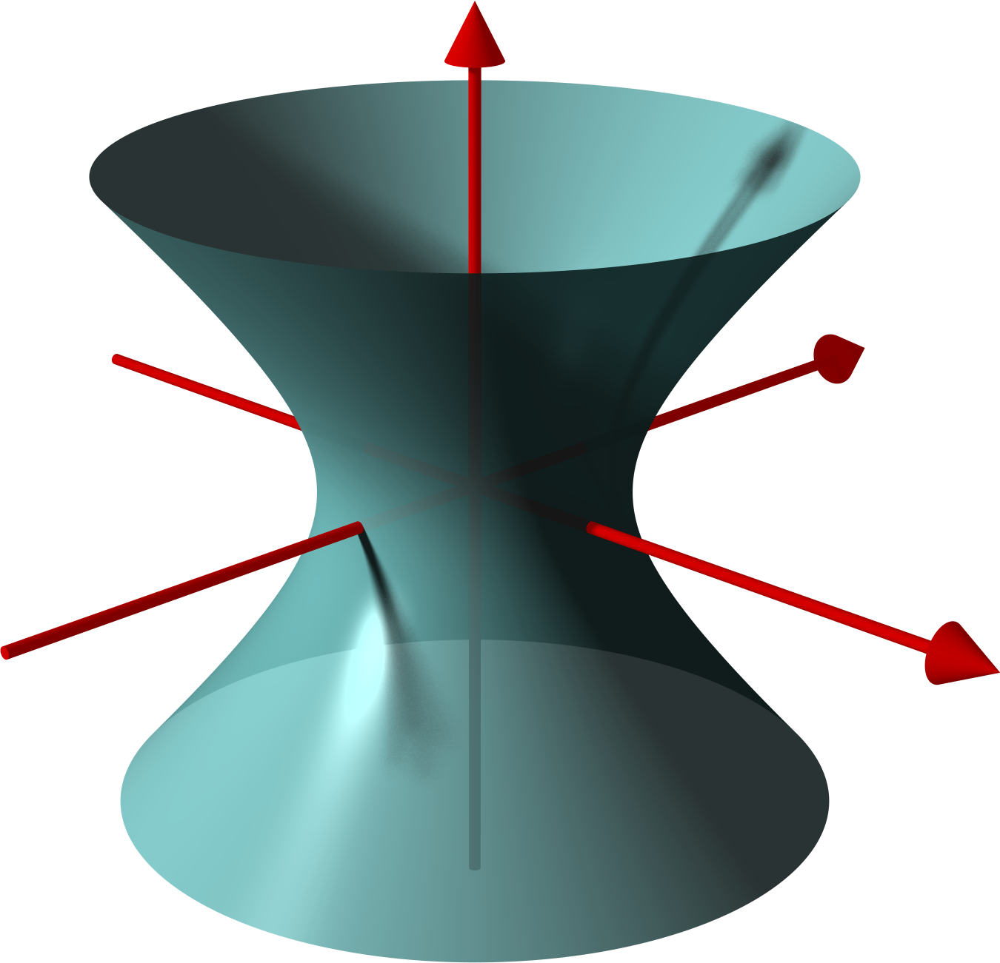
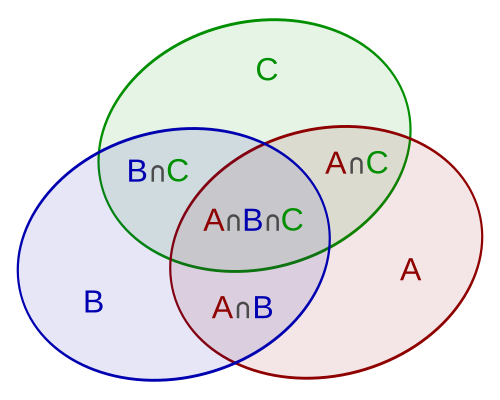

Pembaca ini menerjemahkan Kuliah 1–19 dan Lembar Kerja 1–19 dari kursus Holger Brenner di Wikiversity berbahasa Jerman. Teks sumber digunakan berdasarkan CC BY-SA 4.0. Terjemahan ini merupakan karya independen dan bukan edisi resmi atau dukungan dari penulis, Wikiversity, atau Wikimedia Foundation.
Setiap gambar dan animasi tetap mengikuti lisensi berkasnya sendiri; pembuat, lisensi, dan tautan sumber tercantum langsung pada keterangannya atau tautan unduhnya. Rumus, urutan materi, latihan, dan tepat semua solusi yang disediakan sumber dipertahankan. ID yang stabil dan netral-lokal merupakan lapisan tambahan.
Proses terjemahan dan produksi edisi dibantu oleh OpenAI Codex gpt-5.6-sol, Ultra, di bawah arahan pengguna. Kredit penulis, sumber, dan kontributor manusia tetap dipertahankan.
\(c \in \mathbb{R} .\)
Himpunan-himpunan bagian ini dipelajari khususnya dalam konteks teorema fungsi implisit. Jika
diferensial total
\[\left(D h \right)_{ P}\colon \mathbb{R}^n \longrightarrow \mathbb{R}\]
surjektif untuk setiap titik
\(P \in Y\)
—dengan kata lain, jika \(P\) selalu merupakan
titik reguler
dari pemetaan itu—maka \(Y\), dalam suatu lingkungan terbuka dari \(P\), homeomorfik dengan suatu himpunan terbuka di \(\mathbb{R}^{n-1}\). Selain itu, dalam konteks ini kita telah memperkenalkan
ruang singgung pada serat
sebagai kernel diferensial total. Ruang ini merupakan subruang vektor berdimensi \((n-1 )\) dari \(\mathbb{R}^n\), tetapi biasanya dibayangkan melekat pada titik \(P\), yakni sebagai ruang afin-linear. Di titik \(P\), ruang singgung ini menyinggung \(Y\). Kita menyebut \(Y\) sebuah hipermuka, karena ruang singgungnya berdimensi satu lebih rendah daripada ruang sekitarnya. Untuk
\(n = 3\)
memang diperoleh sebuah permukaan. Jika kita menggunakan hasil kali dalam standar pada \(\mathbb{R}^n\), ruang singgung pada serat juga dapat dipandang sebagai ruang semua vektor yang tegak lurus terhadap
gradien
\(\operatorname{Grad} \, h ( P )\).
Contoh 1.1
Misalkan
\[h(x,y,z) = x^2+y^2+z^2\]
dan kita tinjau serat \(Y\) dari \(h\) di atas \(1\), yaitu permukaan bola berjari-jari \(1\) dengan pusat di titik asal. Diferensial totalnya adalah
\(\left( 2x , \, 2y , \, 2z \right)\), sehingga di setiap titik permukaan bola setidaknya satu komponennya tidak sama dengan \(0\); oleh karena itu, \(h\)
reguler
di setiap titik pada \(Y\). Misalkan
\(P = \left( a , \, b , \, c \right) \in Y .\)
Ruang singgung di \(P\) diberikan oleh syarat linear
\[ax+by+cz = 0\]
dan merupakan himpunan semua vektor yang ortogonal terhadap gradien
\(\begin{pmatrix} 2a \\ 2b\\ 2c \end{pmatrix}\).
\(W \subseteq \mathbb{R}^n\)
terbuka,
\(h\colon W \longrightarrow \mathbb{R}\)
adalah sebuah
fungsi yang terdiferensialkan secara kontinu
dan
\(Y = h^{-1}(c)\)
adalah
serat
di atas
\(c \in \mathbb{R} ,\)
dengan \(h\)
reguler
di setiap titik pada \(Y\). Kita membahas beberapa objek atau konstruksi yang memang ada di ruang linear sekitar \(\mathbb{R}^n\), tetapi berhubungan sedemikian erat dengan hipermuka \(Y\) sehingga kita ingin memahami dan mempelajarinya semata-mata sebagai objek pada \(Y\). Untuk sementara, objek-objek ini memerlukan ruang sekitar karena definisinya mengacu pada analisis berdimensi lebih tinggi, yang saat ini baru tersedia untuk ruang vektor
(linear).
Salah satu tujuan penting kita adalah mengembangkan konsep-konsep ini hanya pada objek geometris
(nonlinear)
\(Y\). Kita akan menyinggung kurva pada hipermuka, ekstremum dengan kendala, dan persamaan diferensial untuk medan vektor tangensial.
Catatan 1.3
Misalkan
\(W \subseteq \mathbb{R}^n\)
terbuka,
\(h\colon W \longrightarrow \mathbb{R}\)
adalah sebuah
fungsi yang terdiferensialkan secara kontinu
dan
\(Y = h^{-1}(c)\)
adalah
serat
di atas
\(c \in \mathbb{R} ,\)
dengan \(h\)
reguler
di setiap titik pada \(Y\). Misalkan
\[\gamma\colon I \longrightarrow \mathbb{R}^n\]
adalah sebuah
kurva terdiferensialkan,
yang seluruhnya terletak di \(Y\), dengan \(I\) suatu interval terbuka. Maka, pada setiap saat
\(t \in I\)
turunan
\(\gamma'(t)\) berada di ruang singgung pada \(Y\) di titik \(\gamma(t)\). Hal ini didasarkan pada sifat konstan dari
\(h \circ \gamma = c ,\)
yang, melalui aturan rantai, memberikan
\(\gamma'( t) \in \operatorname{kern} \left(Dh \right)_{ \gamma(t) } = T_{\gamma(t) }Y .\)
Selain itu, dari
Soal 1.1
diperoleh bahwa setiap vektor singgung di \(P\) pada \(Y\) dapat direalisasikan oleh suatu kurva terdiferensialkan pada \(Y\). Jadi, ruang singgung dapat dijelaskan secara bermakna hanya dengan kurva-kurva terdiferensialkan pada \(Y\), meskipun keterdiferensialan kurva tersebut masih mengandaikan ruang sekitar.
Catatan 1.4
Misalkan
\(W \subseteq \mathbb{R}^n\)
terbuka,
\(h\colon W \longrightarrow \mathbb{R}\)
adalah sebuah
fungsi yang terdiferensialkan secara kontinu
dan
\(Y = h^{-1}(c)\)
adalah
serat
di atas
\(c \in \mathbb{R} ,\)
dengan \(h\)
reguler
di setiap titik pada \(Y\). Kita merangkum kembali teorema tentang ekstremum lokal dengan kendala dalam situasi ini; bandingkan
Akibat 54.3 (Analisis (Osnabrück 2021--2023))
(dengan notasi yang berbeda).
Selain fungsi \(h\), yang menentukan \(Y\) dan dengan demikian menentukan kendala, terdapat pula suatu lingkungan terbuka \(U\) dari \(Y\) beserta sebuah fungsi bernilai real \(f\) yang didefinisikan di sana. Yang dicari adalah ekstremum lokal \(f\), tetapi bukan pada seluruh \(U\)—yang biasanya diselidiki dengan gradien dan matriks Hesse—melainkan hanya pada \(Y\). Misalnya, kita mungkin ingin mencari suhu maksimum pada permukaan suatu benda sambil mengabaikan bahwa bagian dalamnya lebih panas. Teorema tersebut menyatakan bahwa jika \(f\) terdiferensialkan secara kontinu dan memiliki ekstremum lokal di suatu titik
\(P \in Y\)
di bawah kendala \(Y\), maka gradien
\(\operatorname{Grad} \, f ( P )\) merupakan kelipatan dari gradien
\(\operatorname{Grad} \, h ( P )\). Kriteria keterdiferensialan ini mengacu pada ruang sekitar: baik karena keterdiferensialan itu sendiri didefinisikan dengan mengacu pada ruang sekitar, maupun karena kedua gradien yang dibandingkan menjulur ke dalam ruang sekitar tersebut.
Teorema 1.5
Misalkan
\(W \subseteq \mathbb{R}^n\)
terbuka,
\(h\colon W \longrightarrow \mathbb{R}\)
adalah sebuah
fungsi yang terdiferensialkan secara kontinu
dan
\(Y = h^{-1}(c)\)
adalah
serat
di atas
\(c \in \mathbb{R} ,\)
dengan \(h\)
reguler
di setiap titik pada \(Y\).
Misalkan
\(Y \subseteq U \subseteq \mathbb{R}^n\)
terbuka
dan misalkan \(F\) adalah sebuah
medan vektor
terdiferensialkan pada \(U\)
dengan sifat bahwa untuk setiap titik
\(P \in Y\)
vektor \(F(P)\) berada dalam
ruang singgung pada serat
di \(P\) pada \(Y\)Catatan: Medan vektor seperti ini disebut medan vektor tangensial..
Maka solusi \(v(t)\) dari
masalah nilai awal
untuk \(F\) dengan syarat awal
\(v(t_0) \in Y\)
seluruhnya terletak di \(Y\).
Bukti
Kita bekerja dengan struktur Euklides pada \(\mathbb{R}^n\) dan dengan
gradien
\(\operatorname{Grad} \, h\) dari \(h\). Berdasarkan asumsi, pada \(Y\) gradien ini tidak pernah sama dengan \(0\), dan karena kekontinuan, sifat tersebut juga berlaku pada suatu lingkungan terbuka dari \(Y\). Dengan memperkecil \(U\) jika perlu, kita dapat menganggap bahwa gradien itu tidak memiliki titik nol di seluruh \(U\). Pada \(U\), kita tinjau medan vektor baru \(G\) yang didefinisikan oleh
\[G(P) = F(P)- { \frac{ \left\langle F(P) , \operatorname{Grad} \, h ( P ) \right\rangle }{ \Vert { \operatorname{Grad} \, h ( P ) } \Vert^2 } } \operatorname{Grad} \, h ( P ) .\]
Untuk
\(P \in Y\)
berlaku
\(G(P) = F(P) ,\)
karena pada \(Y\) gradien \(h\) tegak lurus terhadap medan vektor tersebut. Selain itu, \(G\)
(berbeda dengan \(F\))
memiliki sifat bahwa untuk semua titik
\(P \in U\)
vektor \(G(P)\) tegak lurus terhadap gradien, sebab
\[\left\langle G(P) , \operatorname{Grad} \, h ( P ) \right\rangle = \left\langle F(P)- { \frac{ \left\langle F(P) , \operatorname{Grad} \, h ( P ) \right\rangle }{ \Vert { \operatorname{Grad} \, h ( P ) } \Vert^2 } } \operatorname{Grad} \, h ( P ) , \operatorname{Grad} \, h ( P ) \right\rangle = \left\langle F(P) , \operatorname{Grad} \, h ( P ) \right\rangle - \left\langle F(P) , \operatorname{Grad} \, h ( P ) \right\rangle = 0 .\]
Sekarang misalkan
\[v\colon I\longrightarrow \mathbb{R}^n\]
adalah, menurut
Teorema 56.2 (Analisis (Osnabrück 2021--2023))Catatan: Catatan edisi: Dengan asumsi yang dinyatakan, fungsi h hanya berkelas C¹ sehingga gradiennya sekadar kontinu; hal ini belum membuktikan bahwa medan G lokal Lipschitz sebagaimana diperlukan untuk kesimpulan keunikan Picard–Lindelöf. Langkah ini memerlukan regularitas tambahan atau pembuktian lokal melalui koordinat manifold.
,
solusi tunggal dari masalah nilai awal untuk \(G\) dengan syarat awal
\(v(t_0) = P \in Y .\)
Maka
Oleh karena itu, \(h\) konstan pada citra \(v( I)\), dan karena
\(h(v(t_0)) = c\)
maka
\(h(v(t)) = c\)
untuk semua
\(t \in I ,\)
sehingga
\(v(t) \in Y\)
untuk semua
\(t \in I .\)
Dengan regularitas tambahan, cara lain untuk membuktikan pernyataan ini adalah dengan memindahkan medan vektor \(F\) melalui suatu difeomorfisme lokal antara
\(P \in V \subseteq Y\)
dan
\(V' \subseteq \mathbb{R}^{n-1}\)
ke \(\mathbb{R}^{n-1}\), memastikan bahwa medan dalam koordinat bersifat lokal Lipschitz, membuktikan keberadaan solusi di sana, memindahkan kembali solusi itu ke \(Y\), lalu merekatkan solusi-solusi parsial tersebut. Tanpa regularitas tersebut, argumen alternatif ini belum lengkap.
Lingkungan terbuka \(U\) dari \(Y\) diperlukan agar kita dapat berbicara tentang medan vektor terdiferensialkan, meskipun pada akhirnya hanya medan vektor pada \(Y\) yang relevan.
Percepatan
Catatan 1.6
Kita tinjau kurva
\[v\colon \mathbb{R}\longrightarrow \mathbb{R}^2 , t \longmapsto \begin{pmatrix} \cos t \\ \sin t \end{pmatrix} ,\]
yang seluruhnya bergerak pada lingkaran satuan. Dengan demikian, turunannya
\(v'(t) = \begin{pmatrix} - \sin t \\ \cos t \end{pmatrix}\)
selalu tangensial terhadap lingkaran satuan
(hal ini juga mengikuti dari
Catatan 1.1.3).
Normanya selalu sama dengan \(1\), sehingga lingkaran satuan ditempuh secara seragam dengan besar kecepatan konstan. Namun, arah kecepatannya berubah secara kontinu, dan turunan keduanya adalah
\[v^{\prime \prime}(t) = \begin{pmatrix} - \cos t \\ - \sin t \end{pmatrix} = - \begin{pmatrix} \cos t \\ \sin t \end{pmatrix} = - v(t) .\]
Percepatannya adalah negatif dari vektor posisi dan tegak lurus terhadap vektor kecepatan. Jika ruang singgung dari bidang sekitar di sebuah titik \(P\) pada lingkaran—yakni \(\mathbb{R}^2\) yang dipandang berpusat di \(P\)—diuraikan menjadi arah yang tangensial terhadap lingkaran
(ruang singgung pada serat)
dan arah yang tegak lurus terhadapnya
(ruang normal)
(dalam arti penguraian suatu ruang vektor sebagai
jumlah langsung
dari subruang-subruang vektor),
maka seluruh percepatan berlangsung di ruang normal; proyeksi ortogonalnya pada ruang singgung selalu \(0\). Dalam pengertian ini, percepatan tidak relevan bagi gerak pada lingkaran satuan.
Sekarang kita tinjau secara lebih umum sebuah kurva
sehingga, seperti sebelumnya, kurva ini selalu tangensial terhadap lingkaran satuan, sedangkan norma kecepatannya sekarang sama dengan \(\left|f'(t)\right|\). Turunan keduanya adalah
yang secara langsung memperlihatkan penguraian ke dalam komponen tangensial dan komponen yang ortogonal terhadapnya. Suku pertama, yang memuat turunan kedua fungsi, adalah komponen tangensial. Komponen normalnya adalah
\(- \left( f'(t) \right)^2 \begin{pmatrix} \cos f(t) \\ \sin f(t) \end{pmatrix}\), sedangkan percepatan tangensial muncul ketika turunan kedua \(f\) tidak sama dengan nol.
Untuk sebuah hipermuka
\(Y \subseteq \mathbb{R}^n\)
dan sebuah titik
\(P \in Y\)
kita selalu dapat menguraikan ruang sekitar \(\mathbb{R}^n\), yang dipandang sebagai ruang singgung dari \(\mathbb{R}^n\) di \(P\), secara ortogonal sebagai
\[\mathbb{R}^n = T_PY \oplus N_PY ,\]
dengan \(N_PY\) sebuah garis yang terdiri atas semua titik yang ortogonal terhadap \(T_PY\) dan disebut garis normal. Garis normal terdiri atas semua kelipatan gradien
\(\operatorname{Grad} \, h ( P )\) di \(P\), jika \(h\) menyatakan suatu fungsi yang mendeskripsikan \(Y\). Sebuah vektor normal adalah elemen garis normal bernorma \(1\). Ada dua vektor normal demikian, dan yang satu merupakan negatif dari yang lain. Melalui
proyeksi ortogonal
sepanjang \(N_PY\), yakni pemetaan
\[\pi_P\colon \mathbb{R}^n \longrightarrow T_PY\]
kita dapat memetakan setiap vektor di \(\mathbb{R}^n\) ke sebuah vektor di ruang singgung.
Definisi 1.7
Misalkan
\(W \subseteq \mathbb{R}^n\)
terbuka,
\(h\colon W \longrightarrow \mathbb{R}\)
adalah sebuah
fungsi yang terdiferensialkan secara kontinu
dan
\(Y = h^{-1}(c)\)
adalah
serat
di atas
\(c \in \mathbb{R} ,\)
dengan \(h\)
reguler
di setiap titik pada \(Y\). Misalkan
\[\gamma\colon I\longrightarrow Y\]
merupakan
(sebagai pemetaan ke \(\mathbb{R}^n\))
sebuah kurva yang terdiferensialkan dua kali secara kontinu.
Maka pemetaan
\[I\longrightarrow TY , t\longmapsto \pi_{\gamma(t)}( \gamma^{\prime \prime} (t)) ,\]
dengan \(\pi_{\gamma(t)}\) menyatakan proyeksi ortogonal
\[\mathbb{R}^n \longrightarrow T_{\gamma(t)}Y\]
disebut
turunan tangensial kedua
(atau
percepatan tangensial)
dari \(\gamma\).
Gagasan tentang turunan kedua yang tangensial terhadap hipermuka dikembangkan lebih lanjut dalam konteks yang disebut koneksi.
Kurva Geodesik
Definisi 1.8
Misalkan
\(W \subseteq \mathbb{R}^n\)
terbuka,
\(h\colon W \longrightarrow \mathbb{R}\)
adalah sebuah
fungsi yang terdiferensialkan secara kontinu
dan
\(Y = h^{-1}(c)\)
adalah
serat
di atas
\(c \in \mathbb{R} ,\)
dengan \(h\)
reguler
di setiap titik pada \(Y\). Sebuah
(sebagai pemetaan ke \(\mathbb{R}^n\))
kurva yang terdiferensialkan dua kali secara kontinu
\[\gamma\colon I\longrightarrow Y\]
disebut
geodesik
(atau
kurva geodesik
pada \(Y\)),
jika
percepatan tangensial
kurva itu sama dengan \(0\) di mana-mana.
Sebuah kurva yang terdiferensialkan dua kali merupakan geodesik tepat ketika turunan keduanya selalu ortogonal terhadap ruang singgung. Gagasan fisika yang mendasarinya adalah gerak sebuah partikel yang bergerak pada \(Y\) tanpa percepatan. Secara umum memang terdapat gaya-gaya kendala, seperti gravitasi atau tarikan magnetis, yang memaksa geraknya tetap pada \(Y\) dan pada gilirannya memerlukan percepatan di ruang sekitar; namun pada \(Y\) sendiri tidak ada percepatan. Jadi, kurva geodesik menggambarkan gerak alami tanpa percepatan pada sebuah hipermuka terdiferensialkan.
\(P \in Y\)
terdapat sebuah partikel yang menerima impuls gerak dalam arah tangensial tertentu yang dinyatakan oleh
\(v \in T_PY .\)
Partikel itu terus bergerak dalam arah ini
(tanpa diperlambat dan tanpa dipercepat)
namun harus selalu tetap berada pada bola
(karena gravitasi Bumi atau karena permukaan yang kukuh).
Misalkan titik tersebut diberikan oleh
\(\begin{pmatrix} x_1 \\ y_1 \\ z_1 \end{pmatrix}\) dan vektor singgung tegak lurus yang menyatakan impuls sesaat diberikan oleh
dengan \(\begin{pmatrix} x_2 \\ y_2 \\ z_2 \end{pmatrix}\) suatu vektor bernorma \(1\) yang tegak lurus terhadap vektor posisi. Gerak tersebut berada pada bidang yang ditentukan oleh kedua vektor ini sekaligus pada bola. Salah satu parametrisasi geraknya adalah
\[\gamma\colon \mathbb{R}\longrightarrow \mathbb{R}^3 , t \longmapsto \cos \left( at \right) \begin{pmatrix} x_1 \\ y_1 \\ z_1 \end{pmatrix} + \sin \left( at \right) \begin{pmatrix} x_2 \\ y_2 \\ z_2 \end{pmatrix} .\]
Berlaku
\(\gamma(0) = \begin{pmatrix} x_1 \\ y_1 \\ z_1 \end{pmatrix}\)
dan
\(\gamma'(t) = -a \sin \left( at \right) \begin{pmatrix} x_1 \\ y_1 \\ z_1 \end{pmatrix} +a \cos \left( at \right) \begin{pmatrix} x_2 \\ y_2 \\ z_2 \end{pmatrix} ,\)
sehingga
\[Z = \left\{ \begin{pmatrix} x \\ y \\ z \end{pmatrix} \in \mathbb{R}^3 \mid x^2+y^2 = 1 \right\} .\]
Secara geometris, kita memperoleh gerakan-gerakan berikut pada silinder, yang percepatannya selalu ortogonal terhadap ruang singgung. Ruang singgung di titik
\(\begin{pmatrix} x \\ y \\ z \end{pmatrix}\) diberikan oleh
\(\mathbb{R} \begin{pmatrix} y \\ -x\\ 0 \end{pmatrix} + \mathbb{R} \begin{pmatrix} 0 \\ 0\\ 1 \end{pmatrix}\), dan vektor \(- \begin{pmatrix} x \\ y \\ 0 \end{pmatrix}\) tegak lurus terhadapnya. Untuk gerak-gerak berikut, penskalaan parameter waktunya dapat diubah secara afin.
Gerak pada sebuah garis di selimut silinder yang sejajar dengan sumbu silinder:
\[\gamma(t) = \begin{pmatrix} x_0 \\ y_0 \\ t \end{pmatrix}\]
dengan
\(x_0^2 +y_0^2 = 1 .\)
Turunan pertamanya adalah \(\begin{pmatrix} 0 \\ 0\\ 1 \end{pmatrix}\) dan turunan keduanya adalah \(0\).
Gerak melingkar yang diberikan oleh
\[\delta(t) = \begin{pmatrix} \cos t \\ \sin t \\ c \end{pmatrix} .\]
Turunan pertamanya adalah \(\begin{pmatrix} - \sin t \\ \cos t \\ 0 \end{pmatrix}\) dan turunan keduanya adalah \(- \begin{pmatrix} \cos t \\ \sin t \\ 0 \end{pmatrix}\).
\[\epsilon(t) = \begin{pmatrix} \cos t \\ \sin t \\ e t \end{pmatrix}\]
dengan
\(e \neq 0 .\)
Turunan pertamanya adalah \(\begin{pmatrix} - \sin t \\ \cos t \\ e \end{pmatrix}\) dan turunan keduanya adalah \(- \begin{pmatrix} \cos t \\ \sin t \\ 0 \end{pmatrix}\).
sebuah
pemetaan terdiferensialkan secara kontinu,
yang di titik
\(P \in G\)
mempunyai
diferensial total
yang surjektif. Misalkan
\(v \in T_PZ\)
sebuah vektor di
ruang singgung pada serat
\(Z\) dari \(\varphi\) yang melalui \(P\). Buktikan bahwa terdapat
kurva terdiferensialkan secara kontinu
Buktikan bahwa konsep
ruang singgung,
medan vektor tangensial, dan solusi persamaan diferensial tangensial yang terkait pada \(Y\) dan \(Z\) secara umum saling bersesuaian
(yakni dapat dipetakan satu sama lain dengan bantuan \(L\)).
Bagaimana dengan gradiennya?
Soal 1.4
Misalkan
\(Y = h^{-1}(c)\)
sebuah
hipermuka terdiferensialkan
dan misalkan
\[f\colon U\longrightarrow \mathbb{R}\]
sebuah fungsi terdiferensialkan secara kontinu yang didefinisikan pada suatu lingkungan terbuka
\(Y \subseteq U\)
Andaikan \(f\) di
\(P \in Y\)
mempunyai
ekstremum lokal
pada \(Y\). Buktikan bahwa
komponen tangensial
dari \(\operatorname{Grad} \, f ( P )\) sama dengan \(0\).
Soal 1.5
Misalkan
\(Y \subseteq \mathbb{R}^3\)
adalah permukaan bola satuan. Tentukan
dekomposisi ortogonal
vektor
\(\begin{pmatrix} 6 \\ 7 \\ -3 \end{pmatrix} \in \mathbb{R}^3\)
menjadi komponen tangensial dan komponen ortogonal di titik
\(a_i \neq 0\)
untuk setidaknya satu indeks \(i\). Tafsirkan pengertian
diferensial total,
gradien,
ruang singgung,
dekomposisi menjadi komponen tangensial dan normal,
percepatan tangensial,
serta
kurva geodesik
dalam kasus khusus ini.
Soal 1.9
Misalkan
\(Y = h^{-1}(c)\)
sebuah
hipermuka terdiferensialkan,
yang memuat garis
\(P+ \mathbb{R} v\). Buktikan bahwa garis yang dilalui secara seragam tersebut merupakan
kurva geodesik
pada \(Y\).
Dua titik
\(P,Q \in K\), \(P \neq Q\),
disebut antipodal, jika garis yang menghubungkannya melalui pusat bola.
Soal 1.10
Misalkan
\(K \subseteq \mathbb{R}^3\)
sebuah permukaan bola. Buktikan bahwa setiap dua
titik yang tidak antipodal
\(P,Q \in K\), \(P \neq Q\),
terletak pada tepat satu
lingkaran besar
dari \(K\).
Mengapa pesawat terbang menempuh lintasan melengkung?BlankMap-World8.svg : AMK1211 derivative work: Pethrus ( talk ) · CC BY-SA 3.0 · sumber media
Soal 1.11
Sebuah pesawat akan terbang dari Osnabrück menuju suatu tempat tujuan di belahan Bumi selatan. Mungkinkah rutenya lebih pendek jika pesawat itu mula-mula terbang ke arah utara?
Soal 1.12
Lucy Sonnenschein merasa bahwa hari-hari terlalu singkat. Karena itu, setiap hari dan selama masih terang, ia memutuskan terbang ke arah barat melintasi satu zona waktu agar setiap harinya berlangsung \(25\), bukan \(24\), jam.
Dapatkah Lucy Sonnenschein meningkatkan proporsi jam terang dalam hidupnya dengan strategi ini?
Dapatkah Lucy Sonnenschein memperpanjang hidupnya dengan strategi ini?
Sekarang Lucy mempunyai teman di seluruh dunia. Setelah berapa hari ia bertemu dengan mereka lagi?
Apa yang menyebabkan Lucy mengalami kehilangan waktu yang mengimbangi tambahan waktu hariannya?
Apakah hal ini berkaitan dengan teori relativitas?
Soal 1.13
Berikan contoh kurva dua kali terdiferensialkan yang bergerak pada suatu
lingkaran besar
dari permukaan bola satuan, tetapi bukan
kurva geodesik.
terdiri atas tiga titik berbeda yang tidak terletak pada satu lingkaran besar,
\(A,B,C \in S^2 ,\)
dengan setiap pasangan titik dihubungkan oleh busur yang lebih pendek dari suatu
lingkaran besar
(setiap pasangan titik tidak antipodal).
Buktikan bahwa jumlah sudut dalam segitiga itu lebih besar daripada \(\pi\).
Soal untuk dikumpulkan
Soal 1.15
3 poin
Misalkan \(Y\) adalah hipermuka yang diberikan oleh syarat
\[2x^2 +3y^2+5z^2 = 10\]
di \(\mathbb{R}^3\). Tentukan dekomposisi ortogonal vektor
\(\begin{pmatrix} 4 \\ 2 \\ -5 \end{pmatrix} \in \mathbb{R}^3\)
menjadi komponen tangensial dan komponen ortogonal di titik
\(\begin{pmatrix} -1 \\ -1\\ 1 \end{pmatrix} \in Y .\)
adalah lintasan pada grafik tersebut yang berada di atas kurva dasar
\(x \mapsto (x,1)\). Tentukan, untuk setiap
\(x \in \mathbb{R} ,\)
percepatan tangensial
dari \(\gamma\) di \(\gamma(x)\).
Soal 1.17
4 poin
Pada 11 April 2023 pukul 17.45, secara tiba-tiba dan mengejutkan semua orang, rotasi Bumi pada porosnya dihentikan. Pada saat yang sama, hambatan udara dan semua kerugian akibat gesekan ditiadakan. Semua manusia, hewan, dan benda yang tidak terpasang tetap atau tidak sempat berpegangan akan meneruskan gerak sesaatnya sesuai hukum inersia. Gravitasi tetap bekerja sehingga, untungnya, mereka tidak terlepas ke angkasa. Kapan penghapus papan tulis dari ruang kuliah di Osnabrück
(penghapus itu terbang keluar melalui jendela)
untuk pertama kalinya kembali ke posisi awalnya?
Soal 1.18
4 (3+1) poin
Misalkan
\(W \subseteq \mathbb{R}^n\)
terbuka,
\(h\colon W \longrightarrow \mathbb{R}\)
sebuah
fungsi terdiferensialkan secara kontinu
dan
\(Y = h^{-1}(c)\)
merupakan
serat
di atas
\(c \in \mathbb{R} ,\)
dengan \(h\)
reguler
di setiap titik pada \(Y\). Misalkan
\[\gamma\colon I \longrightarrow Y\]
sebuah kurva dua kali
terdiferensialkan secara kontinu.
Buktikan bahwa jika \(\gamma\) merupakan
kurva geodesik,
maka
norma
dari \(\gamma'\) adalah konstan.
Berikan contoh kurva dengan norma kecepatan konstan yang bukan kurva geodesik.
Soal 1.19
3 poin
Misalkan
\(h,g\colon \mathbb{R}^n \longrightarrow \mathbb{R}\)
adalah
fungsi-fungsi terdiferensialkan secara kontinu
dan
\(Y = h^{-1}(c)\)
serta
\(Z = g^{-1}(d)\)
adalah
hipermuka terdiferensialkan
yang terkait, dengan \(h\) di setiap titik pada \(Y\) dan \(g\) di setiap titik pada \(Z\) bersifat
reguler.
Misalkan
\(T = Y \cap Z\)
dan misalkan
\[\gamma\colon I \longrightarrow T\]
sebuah kurva dua kali terdiferensialkan secara kontinu yang, jika dipandang sebagai kurva pada \(Y\), merupakan
kurva geodesik.
Apakah \(\gamma\) juga merupakan kurva geodesik pada \(Z\)?
Solusi yang disediakan oleh sumber
Bagian ini hanya memuat solusi yang benar-benar tersedia pada sumber. Tidak adanya solusi di sini bukan pernyataan bahwa sebuah soal tidak dapat diselesaikan.
dari
\(\mathbb{R}^3\), yang terbentuk ketika lintasan kurva diputar mengelilingi sumbu \(x\). Selain itu, kita mengandaikan bahwa \(\gamma\) memiliki citra
\(M = \gamma \left( ]a,b[ \right)\)
dan merupakan homeomorfisme ke citra tersebut. Secara khusus, kita meninjau kasus ketika
\(f\colon ]a,b[\longrightarrow \mathbb{R}_+\)
adalah fungsi terdiferensialkan dan permukaan putarnya berasal dari grafik fungsi tersebut.
Lemma 2.1
Misalkan \(I\) adalah sebuah
interval terbuka
dan
\(f\colon I \longrightarrow \mathbb{R}_+\)
sebuah
fungsi terdiferensialkan.
Maka
permukaan putar
\(Y\)
(mengelilingi sumbu \(x\))
yang diperoleh dari
grafik
\(f\) memiliki sifat-sifat berikut.
\(Y\) adalah himpunan nol dari
\[h\colon I \times \mathbb{R} \times \mathbb{R}\longrightarrow \mathbb{R} , \left( x , \, y , \, z \right) \longmapsto y^2+z^2-f(x)^2 .\]
Fungsi \(h\) yang mendeskripsikan permukaan itu
reguler
di setiap titik \(Y\).
Ruang singgung
\(Y\) di suatu titik
\(\left( x , \, y , \, z \right)\) adalah
(untuk
\(z \neq 0\))
\[T_PY = \mathbb{R} \begin{pmatrix} 0 \\ z \\ -y \end{pmatrix} + \mathbb{R}\begin{pmatrix} z \\ 0 \\ f(x)f'(x) \end{pmatrix} .\]
Bukti
(1) jelas.
matriks Jacobi
dari \(h\) adalah
\(2 \left( -f(x)f'(x) , \, y , \, z \right)\). Karena \(f\) positif, kasus
\(y = z = 0\)
tidak mungkin terjadi; dengan demikian, \(h\) reguler pada \(Y\). Jika
\(z \neq 0\)
maka vektor-vektor yang dinyatakan di atas
bebas linear
dan termasuk dalam
kernel
matriks Jacobi.
Lemma 2.2
Misalkan \(I\) adalah sebuah
interval terbuka
dan
\(f\colon I \longrightarrow \mathbb{R}_+\)
sebuah
fungsi terdiferensialkan
serta misalkan \(Y\) adalah
permukaan putar
(mengelilingi sumbu \(x\))
yang diperoleh dari
grafik
\(f\). Misalkan
\[\gamma\colon J \longrightarrow I , t \longmapsto \gamma(t) ,\]
adalah fungsi bijektif terdiferensialkan sedemikian rupa sehingga
\(\left( \gamma(t) , \, f(\gamma(t)) \right)\)
merupakan parametrisasi grafik \(f\) dengan norma kecepatan konstan.
Maka berlaku sifat-sifat berikut.
Untuk setiap titik
\(\left( x , \, y , \, z \right) = \left( x , \, f(x) \cos \alpha , \, f(x) \sin \alpha \right) \in Y\)
tersebut, kurva
\[\theta\colon \mathbb{R}\longrightarrow I \times \mathbb{R}^2 , \alpha\longmapsto \left( x , \, f( x ) \cos \alpha , \, f(x ) \sin \alpha \right) ,\]
adalah geodesik tepat ketika
\(f'(x) = 0\)
berlaku.
Bukti
Kurva \(\theta\) bergerak di bidang
\(\mathbb{R} \begin{pmatrix} 1 \\ 0 \\ 0 \end{pmatrix} + \mathbb{R} \begin{pmatrix} 0 \\ \cos \alpha \\ \sin \alpha \end{pmatrix}\). Setelah melakukan rotasi, tanpa mengurangi keumuman kita dapat mengandaikan
\(\alpha = 0\)
berlaku; dengan demikian, kurva tersebut menelusuri grafik \(f\) secara langsung. Karena parametrisasi panjang busur,
Artinya, percepatan tegak lurus terhadap ruang singgung
(yang dibangun oleh turunan kurva bersama \(\begin{pmatrix} 0 \\ 0\\ 1 \end{pmatrix}\))
dan karena itu percepatan tangensial sama dengan \(0\). Jadi, kurva tersebut adalah geodesik.
Gerak melingkar berlangsung pada bidang yang ditentukan oleh \(x\) yang tetap. Turunan
(terhadap \(\alpha\))
dari kurva yang diberikan adalah \(f(x) \begin{pmatrix} 0 \\ - \sin \alpha \\ \cos \alpha \end{pmatrix}\), sedangkan percepatannya sama dengan \(- f(x) \begin{pmatrix} 0 \\ \cos \alpha \\ \sin \alpha \end{pmatrix}\). Dengan demikian, di dalam bidang tersebut percepatan tegak lurus terhadap kecepatan kurva, yang merupakan sebuah vektor singgung permukaan putar. Sebuah vektor singgung yang bebas linear terhadapnya diberikan oleh \(\begin{pmatrix} 1 \\f'(x)\\ 0 \end{pmatrix}\). Akan tetapi, vektor ini selalu tegak lurus terhadap percepatan hanya ketika
\(f'(x) = 0\)
berlaku.
Medan Normal
Definisi 2.3
Misalkan
\(W \subseteq \mathbb{R}^n\)
terbuka,
\(h\colon W \longrightarrow \mathbb{R}\)
sebuah
fungsi yang terdiferensialkan secara kontinu
dan
\(Y = h^{-1}(c)\)
serat
di atas
\(c \in \mathbb{R} ,\)
dengan \(h\)
reguler
di setiap titik \(Y\). Misalkan pada suatu lingkungan terbuka
\(Y \subseteq U \subseteq \mathbb{R}^n\)
didefinisikan sebuah
medan vektor
yang
kontinu,
\(F\colon U\longrightarrow \mathbb{R}^n\)
dan memenuhi
\[F(P) \in N_PY\]
untuk semua
\(P \in Y\)
disebut
medan normal
pada \(Y\).
Jika selain itu berlaku
\[\Vert {F(P)} \Vert = 1\]
maka medan tersebut disebut
medan normal satuan. Karena garis normal dalam kasus hipermuka yang sedang ditinjau berdimensi satu, untuk setiap titik
\(P \in Y\)
hanya terdapat dua nilai yang mungkin bagi medan normal satuan di titik itu, dan keduanya saling berlawanan. Dalam hal ini, perhatian utama hanya tertuju pada nilai-nilai medan di \(Y\); jadi, dua medan normal pada \(Y\) dianggap identik jika keduanya berimpit di \(Y\). Lingkungan terbuka hanya diperlukan agar kita dapat berbicara tentang keterdiferensialan.
Lemma 2.4
Misalkan
\(W \subseteq \mathbb{R}^n\)
terbuka,
\(h\colon W \longrightarrow \mathbb{R}\)
sebuah
fungsi yang terdiferensialkan secara kontinu
dan
\(Y = h^{-1}(c)\)
serat
di atas
\(c \in \mathbb{R} ,\)
dengan \(h\)
reguler
di setiap titik \(Y\).
Maka
\({ \frac{ \operatorname{Grad} \, h }{ \Vert { \operatorname{Grad} \, h } \Vert } }\) adalah sebuah
medan normal satuan
pada \(Y\).
Bukti
Menurut asumsi,
medan gradien
\(\operatorname{Grad} \, h\) tidak pernah nol pada \(Y\) dan, karena kontinuitas yang diasumsikan, juga tidak pernah nol pada suatu lingkungan terbuka
\(Y \subseteq U \subseteq \mathbb{R}^n .\)
Jadi, medan vektor yang dinyatakan di atas terdefinisi pada suatu lingkungan terbuka yang memuat \(Y\). Ortogonalitas terhadap ruang-ruang singgung pada serat dan normanya yang sama dengan satu sudah jelas.
Contoh 2.5

Sebuah hiperboloid satu lembar.Lars H. Rohwedder ( User:RokerHRO ) · Public domain · sumber media
Kita meninjau fungsi
\(h\colon \mathbb{R}^3\longrightarrow \mathbb{R} , (x,y,z)\longmapsto x^2+y^2-z^2-1\)
beserta seratnya di atas \(0\), yaitu hiperboloid satu lembar\(Y\).
Gradien
\(h\) di suatu titik
\((x,y,z)\) diberikan oleh
\(\begin{pmatrix} 2x \\ 2y\\ -2z \end{pmatrix}\)
dan
diferensial total
diberikan oleh
\(\left( 2x , \, 2y , \, -2z \right)\); oleh karena itu, \(h\)
reguler
di setiap titik \(Y\).
Ruang singgung
di suatu titik adalah kernel diferensial total. Salah satu basisnya ialah
\(\begin{pmatrix} y \\ -x\\ 0 \end{pmatrix} , \begin{pmatrix} z \\ 0 \\ x \end{pmatrix}\)
(jika
\(x = 0\)
berlaku, vektor kedua harus diganti dengan \(\begin{pmatrix} 0 \\ z \\ y \end{pmatrix}\)).
Medan normal satuan
adalah
\[N( \begin{pmatrix} x \\ y \\ z \end{pmatrix} ) = { \frac{ \operatorname{Grad} \, h(x,y,z) }{ \Vert { \operatorname{Grad} \, h(x,y,z) } \Vert } } = \left( x^2+y^2+z^2 \right)^{ - { \frac{ 1 }{ 2 } } } \begin{pmatrix} x \\ y \\ -z \end{pmatrix} .\]
Definisi 2.6
Misalkan
\(W \subseteq \mathbb{R}^n\)
terbuka,
\(h\colon W \longrightarrow \mathbb{R}\)
sebuah
fungsi yang terdiferensialkan secara kontinu
dan
\(Y = h^{-1}(c)\)
serat
di atas
\(c \in \mathbb{R} ,\)
dengan \(h\)
reguler
di setiap titik \(Y\). Penetapan sebuah
medan normal satuan
pada \(Y\) disebut
orientasi
pada \(Y\).
Untuk setiap orientasi selalu terdapat orientasi negatif atau orientasi yang berlawanan. Jika sebuah fungsi \(h\) yang mendeskripsikan \(Y\) telah ditetapkan, maka
Lemma 2.4
langsung memberikan orientasi
\({ \frac{ \operatorname{Grad} \, h }{ \Vert { \operatorname{Grad} \, h } \Vert } }\). Akan tetapi, \(-h\) menghasilkan orientasi yang berlawanan, dan tidak ada cara kanonis untuk memilih salah satunya. Dari medan normal yang tidak pernah nol, kita selalu dapat beralih ke medan normal satuan yang bersesuaian dan dengan demikian memperoleh suatu orientasi.
Lemma 2.7
Misalkan
\(W \subseteq \mathbb{R}^n\)
terbuka,
\(h\colon W \longrightarrow \mathbb{R}\)
sebuah
fungsi yang terdiferensialkan secara kontinu
dan
\(Y = h^{-1}(c)\)
serat
di atas
\(c \in \mathbb{R} ,\)
dengan \(h\)
reguler
di setiap titik \(Y\). Misalkan \(Y\)
terhubung.
Maka terdapat tepat dua
orientasi
pada \(Y\).
Bukti
Menurut
Lemma 2.4,
terdapat medan normal satuan yang merepresentasikan suatu orientasi, dan negatifnya menghasilkan orientasi lain. Keduanya kita sebut berturut-turut \(G\) dan \(-G\). Sekarang, misalkan
\[N\colon Y \longrightarrow \mathbb{R}^n\]
adalah sebarang medan normal satuan kontinu. Kita meninjau himpunan tempat medan-medan itu berimpit,
\[Y_1 = \left\{ P \in Y \mid N(P) = G(P) \right\}\]
dan
\[Y_2 = \left\{ P \in Y \mid N(P) = - G(P) \right\} .\]
Karena untuk setiap titik
\(P \in Y\)
berlaku hubungan
\[N(P) = \pm G(P)\]
dan hanya ada dua pilihan tanda. Dengan demikian, \(Y\) adalah gabungan saling lepas dari
\(Y_1\)dan \(Y_2\).
Sebagai himpunan tempat fungsi-fungsi kontinu berimpit,
\(Y_1\)dan \(Y_2\)
tertutup
(dan dengan demikian juga
terbuka
di \(Y\)).
Karena keterhubungan tersebut, diperoleh
\(Y = Y_1\)
atau
\(Y = Y_2 .\)
Pemetaan Gauss
Definisi 2.8
Misalkan
\(W \subseteq \mathbb{R}^n\)
terbuka,
\(h\colon W \longrightarrow \mathbb{R}\)
sebuah
fungsi yang terdiferensialkan secara kontinu
dan
\(Y = h^{-1}(c)\)
serat
di atas
\(c \in \mathbb{R} ,\)
dengan \(h\)
reguler
di setiap titik \(Y\). Misalkan suatu
orientasi
pada \(Y\) telah ditetapkan. Pemetaan
\[Y \longrightarrow S^{n-1} ,\]
yang memetakan setiap titik
\(P \in Y\)
ke vektor normal satuannya yang ditetapkan oleh orientasi disebut
pemetaan Gauss
dari \(Y\).
Pada umumnya, kita membayangkan vektor singgung dan vektor normal melekat pada titik
\(P \in Y\)
tersebut. Namun, di sini vektor normal perlu dipandang sebagai sebuah titik pada permukaan bola berdimensi \(n-1\) yang “netral”. Pemetaan Gauss membuka kemungkinan untuk mengaitkan sebarang hipermuka mulus dengan hipermuka yang sangat sederhana, yaitu permukaan bola.
Lemma 2.9
Misalkan
\(W \subseteq \mathbb{R}^n\)
terbuka,
\(h\colon W \longrightarrow \mathbb{R}\)
sebuah
fungsi yang terdiferensialkan secara kontinu
dan
\(Y = h^{-1}(c)\)
serat
di atas
\(c \in \mathbb{R} ,\)
dengan \(h\)
reguler
di setiap titik \(Y\). Misalkan suatu
orientasi
pada \(Y\) telah ditetapkan.
Maka, untuk
pemetaan Gauss,
berlaku pernyataan-pernyataan berikut.
Pemetaan Gauss
kontinu.
Dalam kasus
\(Y = S^{n-1}\)
ini, pemetaan Gauss adalah identitas
(jika orientasinya mengarah ke luar)
atau pemetaan antipodal untuk orientasi sebaliknya.
Jika \(Y\)
terhubung,
maka pemetaan Gauss untuk kedua orientasi saling antipodal.
Misalkan \(Y\) terhubung. Pemetaan Gauss konstan tepat ketika \(Y\) merupakan suatu bagian terbuka dari sebuah
subruang afin-linear
berdimensi \(n-1\).
Catatan edisi: sumber mencoba menormalkan fungsi bernilai real \(h\)
dengan membaginya oleh normanya pada serat nol. Langkah itu tidak terdefinisi
dan tidak membuktikan bahwa \(h\) linear. Bukti berikut mengganti langkah tersebut.
Definisikan fungsi linear
\[\ell(x)=\langle v,x\rangle .\]
Untuk setiap \(P\in Y\) dan \(w\in T_PY\), berlaku
\[(d\ell)_P(w)=\langle v,w\rangle=0,\]
karena \(v\) merupakan vektor normal pada \(Y\). Dengan demikian, diferensial
dari pembatasan \(\ell\) pada \(Y\) bernilai nol. Manifold mulus \(Y\) terhubung dan
terhubung-lintasan secara lokal, sehingga \(\ell\) konstan pada \(Y\), katakanlah
bernilai \(c\in\mathbb{R}\). Oleh sebab itu,
Untuk setiap \(P\in Y\), kedua ruang singgung adalah
\(T_PY=T_PH=v^\perp\). Karena \(Y\) dan \(H\) berdimensi sama, inklusi
\(Y\longrightarrow H\) merupakan difeomorfisme lokal. Jadi \(Y\) terbuka dalam
hiperbidang afin \(H\).
Kita ingat kembali teorema berikut.
Teorema 2.10
Misalkan
\(U \subseteq \mathbb{R}^n\)
sebuah
himpunan bagian terbuka
dan misalkan
\[f\colon U \longrightarrow \mathbb{R}\]
sebuah
fungsi yang terdiferensialkan secara kontinu.
Serat
\(M = f^{-1}(b)\)
dari \(f\) di atas suatu titik
\(b \in \mathbb{R}\)
bersifat
kompak
dan
reguler
di setiap titik.
Maka, untuk setiap subruang
\((n-1)\)-dimensional
\(V \subset \mathbb{R}^n\)
terdapat sekurang-kurangnya satu titik
\(a \in M\)
sehingga subruang tersebut berimpit dengan
ruang singgung
\(T_aM\).
Teorema 2.11
Misalkan
\(W \subseteq \mathbb{R}^n\)
sebuah
himpunan bagian terbuka
dan misalkan
\[h\colon W \longrightarrow \mathbb{R}\]
sebuah
fungsi yang terdiferensialkan secara kontinu.
Serat
\(Y = h^{-1}(c)\)
dari \(h\) di atas
\(c \in \mathbb{R}\)
bersifat
kompak
dan
reguler
di setiap titik.
Maka
pemetaan Gauss
\[Y \longrightarrow S^{n-1}\]
surjektif.
Bukti
Melalui relasi ortogonalitas, sebuah vektor normal satuan mendeskripsikan sebuah hiperbidang, yaitu subruang vektor berdimensi \(n-1\); vektor normal satuan negatifnya juga mendeskripsikan hiperbidang yang sama. Teorema 2.10
menunjukkan bahwa setiap hiperbidang muncul sebagai ruang singgung pada \(Y\). Selain itu, bukti
Teorema 2.10
menunjukkan
(jika selain maksimum kita juga meninjau minimum),
bahwa kedua vektor normal satuan itu muncul.
\(f_1'(t)^2 + \cdots + f_n'(t)^2 = 1\)
untuk setiap \(t\).
Soal 2.3
Misalkan
\(\gamma\colon I \longrightarrow \mathbb{R}^n\)
sebuah kurva yang dua kali
terdiferensialkan secara kontinu
dan
berparametrisasi panjang busur.
Buktikan bahwa
\(\gamma'(t)\)dan \(\gamma^{\prime \prime}(t)\)
saling tegak lurus.
Soal 2.4
Misalkan
\(P \in \mathbb{R}^n\)
sebuah titik dan misalkan
\(I = {]{-1},1[} .\)
Kita tinjau himpunan
\[M = \left\{ f:I \rightarrow \mathbb{R}^n \mid f \text{ terdiferensialkan} , \, f(0) = P \right\} .\]
Dua
kurva
\(f,g \in M\)
disebut ekuivalen secara tangensial, jika
\[f'(0) = g'(0) .\]
a) Buktikan bahwa ini merupakan suatu
relasi ekuivalensi.
b) Temukan wakil paling sederhana bagi setiap
kelas ekuivalensi.
c) Berikan satu wakil lain untuk setiap kelas.
d) Deskripsikan himpunan kelas-kelas ekuivalensi tersebut
(yakni
himpunan hasil bagi).
Soal 2.5
Dengan syarat
(reguler di setiap titik),
berikan sebuah contoh
hipermuka terdiferensialkan,
yang tidak
terhubung.
Soal 2.6
Misalkan
\(V \subseteq \mathbb{R}^{n-1}\)
sebuah
himpunan terbuka
dan misalkan
\[f\colon V \longrightarrow \mathbb{R}\]
sebuah fungsi yang
terdiferensialkan secara kontinu.
Kita tinjau
grafik
\(Y\) dari \(f\) sebagai hipermuka terdiferensialkan di \(\mathbb{R}^n\) dalam pengertian
Contoh 1.2.
Tentukan
medan-medan normal satuan
dalam kasus ini.
sebuah
fungsi terdiferensialkan
dan misalkan \(Y\) adalah permukaan putar yang terkait dengan grafik \(f\), dipandang sebagai hipermuka terdiferensialkan di \(\mathbb{R}^3\) dalam pengertian
Lemma 2.1.
Tentukan
medan-medan normal satuan
dalam kasus ini.
Soal 2.9
Buktikan bahwa
pemetaan Gauss
pada sebuah hiperbidang bersifat konstan. Apakah pernyataan sebaliknya juga berlaku?
Soal 2.10
Buktikan bahwa
pemetaan Gauss
pada sebuah permukaan bola di \(\mathbb{R}^n\) yang berpusat di titik asal, untuk setiap pilihan orientasi, diinduksi oleh homoteti skalar pada \(\mathbb{R}^n\) (dengan faktor positif untuk orientasi keluar dan faktor negatif untuk orientasi masuk).
Soal 2.11
Misalkan
\(Y \subseteq \mathbb{R}^n\)
sebuah
hipermuka terdiferensialkan
dengan
medan normal satuan
\(N\) dan medan normal satuan yang berlawanan, \(-N\). Buktikan bahwa kedua
pemetaan Gauss
yang terkait saling berhubungan melalui
pemetaan antipodal
\[S^{n-1}\longrightarrow S^{n-1} , P \longmapsto -P .\]
Buktikan bahwa
pemetaan Gauss
untuk \(Y\) bersifat bijektif.
Soal 2.14
Berikan sebuah contoh
hipermuka terdiferensialkan
\(Y \subseteq \mathbb{R}^2\)
sedemikian sehingga
pemetaan Gauss
bersifat surjektif dan terdapat titik-titik pada \(S^1\) yang dicapai tak berhingga kali.
Soal 2.15
Misalkan
\(W \subseteq \mathbb{R}^n\)
terbuka,
\(h\colon W \longrightarrow \mathbb{R}\)
sebuah
fungsi yang terdiferensialkan secara kontinu
dan
\(Y = h^{-1}(c)\)
adalah
serat
di atas
\(c \in \mathbb{R} ,\)
dengan \(h\)
reguler
di setiap titik pada \(Y\). Misalkan
Buktikan bahwa konsep-konsep kurva geodesik, medan normal, medan normal satuan, dan pemetaan Gauss pada \(Y\) dan \(Z\) saling bersesuaian
(yakni dapat dipetakan satu sama lain dengan bantuan \(L\)).
Soal untuk dikumpulkan
Soal 2.16
3 poin
Tentukan citra parabola standar berorientasi ke atas di bawah
pemetaan Gauss.
Soal 2.17
4 poin
Misalkan
\(W = \mathbb{R}^3 \setminus \{ (0,0,0) \}\)
dan misalkan
\(Y \subseteq W\)
adalah
himpunan nol
dari
\[h(x,y,z) = x^2+y^2-z^2 .\]
Tentukan citra \(Y\)
(dengan orientasi yang ditentukan oleh gradien \(h\))
di bawah
pemetaan Gauss.
Soal 2.18
5 poin
Misalkan
\(\alpha,\beta, \gamma \in \mathbb{R}_+\)
dan misalkan
Buktikan bahwa konsep-konsep kurva geodesik, medan normal, medan normal satuan, dan pemetaan Gauss pada \(Y\) dan \(Z\) secara umum tidak saling bersesuaian
(berbeda dengan
Soal 2.14,
yang melibatkan suatu isometri).
Solusi yang disediakan oleh sumber
Bagian ini hanya memuat solusi yang benar-benar tersedia pada sumber. Tidak adanya solusi di sini bukan pernyataan bahwa sebuah soal tidak dapat diselesaikan.
Solusi sumber untuk Soal 2.1
Misalkan \(f_i(t)\) dan \(g_i(t)\) berturut-turut adalah fungsi-fungsi komponen dari
\(f\)dan \(g\).
Fungsi yang dimaksud adalah
Catatan edisi: solusi sumber memakai basis ortogonal seolah-olah
ortonormal dan menuliskan turunan koordinat yang keliru. Argumen berikut
mengganti langkah tersebut.
Karena \(h'(t)\neq 0\), norma kecepatannya tak nol. Turunkan kuadrat normanya:
Untuk orientasi keluar yang ditentukan dalam soal,
medan normal satuan
diperoleh dengan menormalisasi gradien fungsi yang mendeskripsikan elips tersebut, yaitu
\[G(x,y) = \begin{pmatrix} 2 \alpha x \\ 2 \beta y \end{pmatrix}\]
Ini berarti bahwa
\(\begin{pmatrix} \alpha x \\ \beta y \end{pmatrix}\)dan \(\begin{pmatrix} \alpha z \\ \beta w \end{pmatrix}\)
bergantung secara linear dengan faktor positif \(c\), sehingga
\((x,y)=c(z,w)\). Karena kedua titik terletak pada \(Y\),
\(f_1'(t)^2 + \cdots + f_n'(t)^2 = 1\)
berlaku untuk setiap \(t\).
Menurut
Soal 2.3,
kurva berparametrisasi panjang busur yang terdiferensialkan dua kali secara kontinu memiliki sifat bahwa turunan keduanya \(\gamma^{\prime \prime} (t)\) selalu tegak lurus terhadap turunan pertamanya \(\gamma^{\prime } (t)\).
Misalkan
\[\gamma\colon I \longrightarrow \mathbb{R}^2\]
adalah suatu pemetaan yang dua kali
terdiferensialkan secara kontinu
dan merupakan
kurva,
dan
\(t \in I .\)
Salah satu cara alami untuk menghampiri perilaku kurva pada parameter
\(t\)yakni di titik \(\gamma(t)\)
melampaui pendekatan oleh garis singgungnya adalah dengan menentukan suatu lingkaran yang menyesuaikan diri sebaik mungkin dengan kurva tersebut, atau menentukan gerak melingkar yang cocok dengan kurva hingga turunan kedua. Andaikan kurva tersebut
berparametrisasi panjang busur.
Definisi 3.2
Misalkan
\[\gamma\colon I \longrightarrow \mathbb{R}^2\]
adalah suatu pemetaan yang dua kali
terdiferensialkan secara kontinu,
berparametrisasi panjang busur
dan merupakan
kurva,
dan
\(t_0 \in I ,\)
dengan turunan kedua \(\gamma^{\prime \prime} (t_0)\) tidak sama dengan \(0\). Lingkaran berjari-jari
Lingkaran kelengkungan juga disebut lingkaran oskulasi. Dalam kasus kurva berparametrisasi panjang busur,
\(\begin{pmatrix} \gamma_1'(t_0) \\ \gamma_2'(t_0) \end{pmatrix}\)dan \(\begin{pmatrix} \gamma_1^{\prime \prime} (t_0) \\ \gamma_2^{\prime \prime}(t_0) \end{pmatrix}\)
saling tegak lurus, dan turunan kedua tidak sama dengan \(0\). Karena itu, kedua vektor ini membentuk suatu basis bagi \(\mathbb{R}^2\), sehingga determinannya, yang muncul sebagai penyebut dalam definisi lingkaran kelengkungan, tidak sama dengan \(0\). Jika determinan ini
(dan dengan demikian kelengkungannya)
positif, basis tersebut merepresentasikan
orientasi standar
(yaitu orientasi yang diberikan oleh vektor standar
\(e_1\)dan \(e_2\));
jika tidak, basis tersebut merepresentasikan orientasi yang berlawanan. Jika kelengkungan positif, geraknya membelok
(dilihat dari arah singgung)
ke kiri; jika kelengkungan negatif, geraknya membelok ke kanan. Untuk kelengkungan positif, pusat lingkaran kelengkungan dapat dituliskan sebagai
Menurut
Soal 3.1,
kurva yang dilalui dengan arah berlawanan memiliki kelengkungan dengan tanda yang berlawanan. Sesekali kita juga akan berbicara tentang kelengkungan kurva di titik
\(\gamma(t) \in \gamma(I) \subseteq \mathbb{R}^2\);
hal ini tidak menimbulkan masalah bagi kurva yang injektif atau, kalaupun tidak injektif, hanya dilalui berulang kali secara periodik.
Contoh 3.4
Kita meninjau parametrisasi trigonometrik lingkaran satuan, yaitu
\[\gamma\colon \mathbb{R}\longrightarrow \mathbb{R}^2 , t \longmapsto \begin{pmatrix} \cos t \\ \sin t \end{pmatrix} .\]
Kita memperoleh
\[\gamma'(t) = \begin{pmatrix} - \sin t \\ \cos t \end{pmatrix}\]
dan
\[\gamma^{\prime \prime} (t) = \begin{pmatrix} - \cos t \\ - \sin t \end{pmatrix} .\]
Kelengkungan
pada setiap waktu \(t\) adalah
\[\gamma_1'(t) \gamma_2^{\prime \prime} (t) - \gamma_2'(t) \gamma_1^{\prime \prime} (t) = \left( - \sin t \right) \left( - \sin t \right) - \cos t \left( - \cos t \right) = 1 ,\]
jari-jari kelengkungannya adalah \(1\), dan pusat lingkaran kelengkungannya adalah
\[\begin{pmatrix} \cos t \\ \sin t \end{pmatrix} + \begin{pmatrix} -\cos t \\ - \sin t \end{pmatrix} = \begin{pmatrix} 0 \\ 0 \end{pmatrix} ,\]
sehingga lingkaran kelengkungannya selalu merupakan lingkaran satuan.
Jika lingkaran itu dilalui searah jarum jam, yaitu jika kita meninjau kurva
\[\delta\colon \mathbb{R}\longrightarrow \mathbb{R}^2 , s \longmapsto \begin{pmatrix} \cos \left( -s \right) \\ \sin \left( -s \right) \end{pmatrix} = \begin{pmatrix} \cos s \\ - \sin s \end{pmatrix} ,\]
maka kelengkungannya adalah \(-1\), sedangkan jari-jari kelengkungan dan lingkaran kelengkungannya sama seperti sebelumnya.
Definisi lingkaran kelengkungan sudah dapat digunakan apabila \(\gamma'(t_0)\) memiliki norma \(1\)
(jadi hanya di \(t_0\)),
tanpa mengharuskan kurva berparametrisasi panjang busur, asalkan
\(\begin{pmatrix} \gamma_1'(t_0) \\ \gamma_2'(t_0) \end{pmatrix}\)dan \(\begin{pmatrix} \gamma_1^{\prime \prime} (t_0) \\ \gamma_2^{\prime \prime}(t_0) \end{pmatrix}\)
bebas linear.
Jika kedua vektor tersebut bergantung linear, jari-jari kelengkungannya juga dikatakan tak hingga.
dan pusat
lingkaran kelengkungan
adalah
\(\begin{pmatrix} 0 \\ { \frac{ 1 }{ 2 } } \end{pmatrix}\).
Lemma 3.6
Misalkan
\[\gamma\colon I \longrightarrow \mathbb{R}^2\]
adalah suatu pemetaan yang dua kali
terdiferensialkan secara kontinu,
berparametrisasi panjang busur
dan merupakan
kurva,
dan
\(t_0 \in I\)
dengan
\[\gamma^{\prime \prime} (t_0) \neq 0\]
,
dan misalkan \(K\) adalah
lingkaran kelengkungan
dengan pusat \(M\) dan jari-jari \(r\). Jika pasangan \(\gamma'(t_0), \gamma^{\prime \prime} (t_0)\) merepresentasikan
orientasi standar,
pilih
sehingga, khususnya, \(\delta\) berparametrisasi panjang busur. Vektor \(\begin{pmatrix} \gamma_1^{\prime \prime} (t_0) \\ \gamma_2^{\prime \prime} (t_0) \end{pmatrix}\) tegak lurus terhadap \(\begin{pmatrix} \gamma_1'(t_0) \\ \gamma_2'(t_0) \end{pmatrix}\) dan karena itu bergantung linear pada vektor normal satuan
\(\begin{pmatrix} - \gamma_2'(t_0) \\ \gamma_1'(t_0) \end{pmatrix}\). Dengan demikian,
Misalkan
\(\gamma\colon I \longrightarrow \mathbb{R}^2\)
adalah suatu pemetaan yang dua kali
terdiferensialkan secara kontinu,
berparametrisasi panjang busur
dan merupakan
kurva.
Dalam pernyataan di atas, tandanya positif jika kelengkungan positif dan negatif jika kelengkungan negatif; apabila kelengkungannya nol, pilihan tanda tidak berpengaruh. Hal yang menentukan bukan deskripsi eksplisit medan normal satuan, melainkan apakah vektor singgung dan vektor normal satuan merepresentasikan orientasi standar atau tidak.
Kita catat pula definisi berikut.
Definisi 3.9
Misalkan
\(\gamma\colon I \longrightarrow \mathbb{R}^2\)
adalah kurva yang terdiferensialkan dua kali secara kontinu dengan
\(\gamma'(t) \neq 0\)
untuk setiap
\(t \in I .\)
Pemetaan yang didefinisikan pada titik-titik berkelengkungan tak nol,
bersifat naik tegas dan terdiferensialkan secara kontinu. Misalkan \(J\) adalah interval citranya,
\(\beta\colon J\longrightarrow I\)
adalah pemetaan invers dari \(\ell\), dan
yang berarti bahwa \(\gamma\) berparametrisasi panjang busur. Peralihan dari \(\alpha\) ke \(\gamma\) disebut parametrisasi panjang busur. Peralihan ini tidak mengubah citra kurva, melainkan hanya kecepatan kurva ketika dilalui. Kita memperoleh diagram komutatif berikut.
Untuk kurva berorientasi yang diberikan secara implisit
\(Y \subseteq \mathbb{R}^2\)
dan suatu titik
\(P \in Y\),
kita juga menulis \(\kappa(P)\) sebagai pengganti \(\kappa(t)\) apabila terdapat suatu parametrisasi panjang busur yang selaras dengan orientasi kurva tersebut dan memenuhi
\(\gamma(t) = P .\)
Lemma 3.11
Misalkan
\(W \subseteq \mathbb{R}^2\)
terbuka,
\(h\colon W \longrightarrow \mathbb{R}\)
adalah suatu
fungsi yang terdiferensialkan secara kontinu
sebanyak dua kali,
dan
\(Y = h^{-1}(c)\)
adalah
serat
di atas
\(c \in \mathbb{R} ,\)
dengan \(h\)
reguler
di setiap titik pada \(Y\). Misalkan
\[N\colon U \longrightarrow \mathbb{R}^2\]
adalah suatu medan yang didefinisikan pada lingkungan terbuka
\(Y \subseteq U\)
dan merupakan
medan normal satuan
bagi \(Y\). Selanjutnya, misalkan
\(P \in Y .\)
Maka untuk setiap vektor singgung
\(v \in T_PY \setminus \{0\}\)
berlaku
\[\left( D N \right)_{ P } \left( v \right) = - \kappa(P) v ,\]
dengan \(\kappa(P)\) adalah
kelengkungan
dari suatu parametrisasi panjang busur dari \(Y\) yang selaras dengan orientasi yang diberikan oleh \(v, N(P)\). Untuk vektor nol, persamaan yang sama tetap berlaku karena linearitas.
Bukti
Misalkan
\(\gamma\colon I \longrightarrow \mathbb{R}^2\)
adalah parametrisasi panjang busur kurva \(Y\) pada suatu lingkungan dari \(P\), dengan
\(\gamma (0) = P ,\)
yang selaras dengan orientasi yang diberikan. Diferensial total
\[\left(D N \right)_{ P }\colon \mathbb{R}^2\longrightarrow \mathbb{R}^2\]
bersifat linear. Karena itu, cukup membuktikan pernyataan tersebut untuk vektor \(\gamma'(0)\). Menurut
aturan rantai,
\[\left( D N \right)_{ P } \left( \gamma'(0) \right) = (N \circ \gamma )'(0) .\]
Vektor ini merupakan kelipatan dari \(\gamma'(0)\) dan karena itu sama dengan
Misalkan
\(\gamma\colon I \longrightarrow \mathbb{R}^2\)
sebuah
kurva berparametrisasi panjang busur
yang dua kali terdiferensialkan secara kontinu, dan misalkan
yaitu kurva yang ditelusuri dalam arah sebaliknya. Buktikan bahwa
kelengkungan
\(\delta\) di \(s\) merupakan negatif dari kelengkungan
\(\gamma\) di \(-s\).
Soal 3.2
Misalkan
\(\gamma\colon I \longrightarrow \mathbb{R}^2\)
sebuah
kurva berparametrisasi panjang busur
yang dua kali terdiferensialkan secara kontinu, dan
sebuah
rotasi.
Buktikan bahwa
kelengkungan
\(\gamma\) sama dengan kelengkungan
\(L\circ \gamma\).
Soal 3.3
Buktikan
Lema 3.6
dalam kasus dengan orientasi nonstandar.
Soal 3.4
Misalkan
\(\gamma\colon I \longrightarrow \mathbb{R}^2\)
sebuah
kurva berparametrisasi panjang busur
yang dua kali terdiferensialkan secara kontinu, dan
\(s \neq 0 .\)
Bagaimana hubungan antara
kelengkungan
\(\gamma\) dan kelengkungan
\(L\circ \gamma\)?
Soal 3.5
Misalkan
\[\gamma\colon \mathbb{R}\longrightarrow \mathbb{R}^2 , t \longmapsto \begin{pmatrix} \cos \left( \omega t \right) \\ \sin \left( \omega t \right) \end{pmatrix} ,\]
dengan
\(\omega > 0 .\)
Buktikan bahwa terdapat tak berhingga banyak gerak melingkar dengan norma kecepatan konstan yang memiliki nilai dan turunan pertama yang sama dengan \(\gamma\) pada
\(t = 0 .\)
Soal berikut penting dalam pembuatan komidi putar. Kesenangan menaiki komidi putar berasal dari percepatan, bukan dari kecepatan.
Soal 3.6
Misalkan
\[\gamma\colon \mathbb{R}\longrightarrow \mathbb{R}^2 , t \longmapsto \begin{pmatrix} \cos \left( \omega t \right) \\ \sin \left( \omega t \right) \end{pmatrix} ,\]
dengan
\(\omega > 0 .\)
Buktikan bahwa terdapat tak berhingga banyak gerak melingkar dengan norma kecepatan konstan yang berimpit dengan \(\gamma\) pada
\(t = 0\)
dan juga memiliki percepatan yang sama di sana.
\[\gamma\colon \mathbb{R}\longrightarrow \mathbb{R}^2 , t \longmapsto \begin{pmatrix} \cos \left( \omega t \right) \\ \sin \left( \omega t \right) \end{pmatrix} ,\]
dengan
\(\omega > 0 .\)
Buktikan bahwa tidak ada gerak melingkar lain dengan norma kecepatan konstan yang memiliki nilai serta turunan pertama dan kedua yang sama dengan \(\gamma\) pada
\(t = 0 .\)
Soal 3.8
Misalkan
\(W \subseteq \mathbb{R}^2\)
terbuka,
\(h\colon W \longrightarrow \mathbb{R}\)
sebuah fungsi yang dua kali
terdiferensialkan secara kontinu,
dan
\(Y = h^{-1}(c)\)
adalah
serat
di atas
\(c \in \mathbb{R} ,\)
dengan \(h\)
reguler
di setiap titik pada \(Y\). Buktikan bahwa
\[\gamma\colon I \longrightarrow Y\]
merupakan
kurva geodesik
jika dan hanya jika \(\gamma\)
berparametrisasi panjang busur.
Buktikan bahwa
kelengkungan
kurva ini memenuhi persamaan
\[\kappa(t) = \sqrt{\pi} t .\]
Soal 3.10
Misalkan
\(f\colon I \longrightarrow \mathbb{R}\)
sebuah fungsi yang dua kali
terdiferensialkan secara kontinu.
Tentukan
kelengkungan
dan lingkaran kelengkungan dari grafik yang terkait.
Soal 3.11
Misalkan
\(f\colon \mathbb{R}\longrightarrow \mathbb{R}\)
dua kali
terdiferensialkan secara kontinu
dan
\[\gamma\colon \mathbb{R}\longrightarrow \mathbb{R}^2 , t \longmapsto \gamma(t) = e^t \left( \cos t , \, \sin t \right) ,\]
untuk setiap
\(t \in \mathbb{R} .\)
Sebuah fungsi
\(f\colon I \longrightarrow \mathbb{R}\)
pada interval terbuka
\(I \subseteq \mathbb{R}\)
disebut
analitik,
jika pada setiap titik
\(a \in I\)
fungsi tersebut dapat dinyatakan oleh suatu
deret pangkat.
Sebuah kurva disebut analitik jika setiap fungsi komponennya analitik.
Soal 3.14
Misalkan
\(\kappa\colon I \longrightarrow \mathbb{R}\)
sebuah
fungsi analitik.
Buktikan bahwa terdapat kurva analitik
\(\gamma\colon I \longrightarrow \mathbb{R}^2\)
yang
kelengkungan
di titik \(\gamma(t)\) sama dengan \(\kappa(t)\).
Bagian ini hanya memuat solusi yang benar-benar tersedia pada sumber. Tidak adanya solusi di sini bukan pernyataan bahwa sebuah soal tidak dapat diselesaikan.
Suatu gerak melingkar yang memiliki nilai serta turunan pertama dan kedua yang sama dengan gerak yang diberikan pada
\(t = 0\)
harus, khususnya, mempunyai garis singgung yang sama di titik ini. Karena itu, pusat lingkaran harus terletak pada sumbu \(x\). Selain itu, pusat tersebut harus berada di sebelah kiri
\(\begin{pmatrix} 1 \\ 0 \end{pmatrix}\),
karena percepatan mengarah ke kiri. Oleh sebab itu, kita dapat menuliskan gerak melingkar beraturan yang dicari, dengan pusat
\(\begin{pmatrix} x \\ 0 \end{pmatrix}\)
(
\(x < 1\))
dan jari-jari
\(1-x\), sebagai
\[\delta (t) = \begin{pmatrix} x \\ 0 \end{pmatrix} + (1-x) \begin{pmatrix} \cos \left( u t \right) \\ \sin \left( u t \right) \end{pmatrix} .\]
Kita memperoleh
\[\delta(0) = \gamma(0) .\]
Selanjutnya,
\[\delta'( 0) = (1-x) \begin{pmatrix} 0 \\ u \end{pmatrix}\]
Penerapan pada vektor singgung
\(\begin{pmatrix} y \\ -x \end{pmatrix}\)
memberikan
\[\left(D N \right)_{P} \begin{pmatrix} y \\ -x \end{pmatrix} = \begin{pmatrix} y^2 & - xy \\ - xy & x^2 \end{pmatrix} \begin{pmatrix} y \\ -x \end{pmatrix} = \begin{pmatrix} y \left( y^2 +x^2 \right) \\ -x \left( y^2 +x^2 \right) \end{pmatrix} = \begin{pmatrix} y \\ -x \end{pmatrix} .\]
Oleh karena itu, menurut
fakta
kelengkungan kurva di \(P\) sama dengan \(-1\).
(Hal ini sesuai karena
\(\begin{pmatrix} y \\ -x \end{pmatrix}\) dan medan gradien merepresentasikan orientasi standar, sedangkan
\(\begin{pmatrix} y \\ -x \end{pmatrix}\) merupakan arah singgung untuk gerak searah jarum jam.)
\(Y \subseteq \mathbb{R}^n\)
adalah suatu
hipermuka terdiferensialkan.
Untuk suatu titik
\(P \in Y\)
kita mendefinisikan suatu pemetaan linear
\[L_P\colon T_PY \longrightarrow T_PY\]
pada ruang singgung \(Y\) di P. Misalkan \(N\) adalah suatu medan normal satuan terdiferensialkan pada \(Y\) yang didefinisikan pada suatu lingkungan terbuka di sekitar \(Y\). Gagasan pokoknya adalah merepresentasikan suatu vektor singgung
\(v \in T_PY\)
dengan suatu kurva terdiferensialkan
\[\gamma\colon I \longrightarrow Y\]
sehingga
\[\gamma'(0) = v .\]
Medan normal satuan itu kemudian mendefinisikan pemetaan
\[N \circ \gamma\colon I \longrightarrow \mathbb{R}^n\]
sepanjang \(I\). Perubahan infinitesimal medan normal satuan sepanjang \(\gamma\) diukur oleh limit
\[\operatorname{lim}_{ t \rightarrow 0 } \, { \frac{ N(\gamma(t))-N(P) }{ t } }\]
jika limit ini ada. Menurut
Lemma 43.4 (Analysis (Osnabrück 2021-2023)),
limit ini sama dengan turunan berarah \(\left( D_{ v } N \right) \left( P \right)\) dan, pada gilirannya, sama dengan
\(\left( D N \right)_{ P } \left( v \right)\), yaitu
diferensial total
yang dievaluasi pada vektor \(v\). Akan ditunjukkan bahwa pemetaan
\[T_PY \longrightarrow \mathbb{R}^n , v \longmapsto \left( D_{v} N \right) \left( P \right) ,\]
ini mengambil nilai di \(T_PY\).
Definisi 4.1
Misalkan
\(W \subseteq \mathbb{R}^n\)
terbuka,
\(h\colon W \longrightarrow \mathbb{R}\)
suatu
fungsi yang dua kali terdiferensialkan secara kontinu
dan
\(Y = h^{-1}(c)\)
adalah
serat
di atas
\(c \in \mathbb{R} ,\)
dengan \(h\)
reguler
pada setiap titik di \(Y\). Misalkan \(N\) adalah suatu
medan normal satuan
dan misalkan
\(P \in Y .\)
Pemetaan
\[L_P\colon T_P Y\longrightarrow T_PY , v \longmapsto - \left( D_{v} N \right) \left( P \right) ,\]
disebut
pemetaan Weingarten
pada \(T_PY\).
Perhatikan bahwa pemetaan Weingarten bergantung pada medan normal satuan, meskipun hal ini tidak selalu dinyatakan secara eksplisit. Jika \(Y\) diberikan sebagai serat dari \(h\), biasanya digunakan medan gradien ternormalisasi yang bersesuaian dengan \(h\).
Lemma 4.2
Misalkan
\(W \subseteq \mathbb{R}^n\)
terbuka,
\(h\colon W \longrightarrow \mathbb{R}\)
suatu
fungsi yang dua kali terdiferensialkan secara kontinu
dan
\(Y = h^{-1}(c)\)
adalah
serat
di atas
\(c \in \mathbb{R} ,\)
dengan \(h\)
reguler
pada setiap titik di \(Y\). Misalkan
\(P \in Y .\)
Maka
pemetaan Weingarten
\(L_P\) adalah suatu endomorfisme linear dari
ruang singgung
\(T_PY\).
Catatan edisi: sumber memakai huruf kecil p pada ruang singgung ini, padahal titik yang dikuantifikasi adalah P.
Bukti
Medan
\(N(P) = { \frac{ \operatorname{Grad} \, h ( P ) }{ \Vert { \operatorname{Grad} \, h ( P ) } \Vert } }\)
adalah suatu medan vektor yang terdiferensialkan secara kontinu pada suatu lingkungan terbuka
\[0 = \left( D_{v} \left\langle N , N \right\rangle \right) \left( P \right) = 2 \left\langle N(P) , \left( D_{v} N \right) \left( P \right) \right\rangle .\]
Jadi,
\(\left( D_{v} N \right) \left( P \right)\) tegak lurus terhadap \(N(P)\) dan, untuk
\(P \in Y\)
vektor tersebut termasuk dalam ruang singgung \(T_PY\).
Dengan demikian, pemetaan Weingarten \(L_P\) adalah negatif dari pembatasan diferensial total medan normal satuan pada ruang singgung \(T_PY\), dengan kodomain ruang singgung \(T_PY\). Jika diferensial total dihitung melalui
matriks Jacobi
dari \(-N\), kita harus menentukan cara matriks itu bekerja pada suatu basis ruang singgung untuk memperoleh representasi matriks dari pemetaan Weingarten.
Lemma 4.3
Misalkan
\(W \subseteq \mathbb{R}^2\)
terbuka,
\(h\colon W \longrightarrow \mathbb{R}\)
suatu
fungsi yang dua kali terdiferensialkan secara kontinu
dan
\(C = h^{-1}(c)\)
adalah serat di atas
\(c \in \mathbb{R} ,\)
dengan \(h\)
reguler
pada setiap titik di \(C\), dan misalkan
\(P \in C .\)
Maka
pemetaan Weingarten
di \(P\) adalah perkalian dengan
kelengkungan
\(\kappa(P)\) dari \(C\) di \(P\).
Bukti
Pernyataan ini merupakan perumusan ulang dari
Lemma 3.11.
Pernyataan di atas tidak secara eksplisit merujuk pada orientasi; orientasi yang dimaksud harus turut diperhitungkan.
Contoh 4.4
Misalkan
\[h(x,y,z) = x^2+y^2+z^2\]
dan perhatikan serat \(Y\) dari \(h\) di atas \(r^2\), yakni permukaan bola berjari-jari
\(r > 0\)
yang berpusat di titik asal. Misalkan
\(P = \left( x_0 , \, y_0 , \, z_0 \right) \in Y .\)
Dengan suatu isometri, titik ini dapat dipetakan ke
\(Q = \left( r , \, 0 , \, 0 \right)\)
tanpa mengubah
pemetaan Weingarten.
Suatu basis ruang singgungnya ialah
\(\begin{pmatrix} 0 \\ 1 \\ 0 \end{pmatrix}\)dan \(\begin{pmatrix} 0 \\ 0\\ 1 \end{pmatrix}\).
Medan normal satuan \(N\) yang mengarah ke dalam adalah
\(- { \frac{ 1 }{ 2r } } \begin{pmatrix} 2x \\ 2y\\ 2z \end{pmatrix}\) dan karena itu, untuk
\[v = \begin{pmatrix} 0 \\ b \\ c \end{pmatrix}\]
\[\left( D_{v} N \right) \left( Q \right) = b { \frac{ \partial N }{ \partial y } } (Q) + c { \frac{ \partial N }{ \partial z } } (Q) = -b { \frac{ 1 }{ 2r } } \begin{pmatrix} 0 \\ 2 \\ 0 \end{pmatrix} - c { \frac{ 1 }{ 2r } } \begin{pmatrix} 0 \\ 0\\ 2 \end{pmatrix} = - { \frac{ 1 }{ r } } \begin{pmatrix} 0 \\ b \\ c \end{pmatrix} .\]
Jadi, pemetaan Weingarten adalah perkalian dengan kebalikan \({ \frac{ 1 }{ r } }\) dari jari-jari.
Contoh 4.5
Kita melanjutkan
Contoh 2.5.
Matriks Jacobi dari medan normal satuan
\[N( \begin{pmatrix} x \\ y \\ z \end{pmatrix} ) = \left( x^2+y^2+z^2 \right)^{ - { \frac{ 1 }{ 2 } } } \begin{pmatrix} x \\ y \\ -z \end{pmatrix}\]
Pemetaan Weingarten
adalah negatif dari pembatasan pemetaan ini pada ruang singgung permukaan tersebut; menurut
Lemma 4.2,
hasilnya kembali berada di ruang singgung. Kita mengasumsikan
\(x \neq 0\)
dan menggunakan basis
\(\begin{pmatrix} y \\ -x\\ 0 \end{pmatrix}\)dan \(\begin{pmatrix} z \\ 0 \\ x \end{pmatrix}\)
dari ruang singgung. Kita mempunyai
sehingga langsung diperoleh vektor eigen \(\begin{pmatrix} y \\ -x\\ 0 \end{pmatrix}\) dengan nilai eigen
\(- \left( x^2+y^2+z^2 \right)^{ - { \frac{ 1 }{ 2 } } }\).
Selain itu,
\[\begin{pmatrix} y^2+z^2 & -xy & -xz \\ -xy & x^2+z^2 & -yz \\ xz & yz & -x^2-y^2 \end{pmatrix} \begin{pmatrix} z \\ 0 \\ x \end{pmatrix} = \begin{pmatrix} z \left( y^2+z^2 \right) -x^2z \\ -2xyz\\ xz^2-x \left( x^2+y^2 \right) \end{pmatrix} = 2yz \begin{pmatrix} y \\ -x\\ 0 \end{pmatrix} + \left( z^2-x^2-y^2 \right) \begin{pmatrix} z \\ 0 \\ x \end{pmatrix} = 2yz \begin{pmatrix} y \\ -x\\ 0 \end{pmatrix}- \begin{pmatrix} z \\ 0 \\ x \end{pmatrix} .\]
Dengan demikian, terhadap basis ini, pemetaan Weingarten direpresentasikan oleh matriks
Untuk memperoleh vektor eigen kedua dalam ruang singgung,
(dengan memperhatikan
Korolari 4.8)
cara termudah ialah menentukan suatu vektor yang tegak lurus terhadap vektor eigen pertama dan vektor normal. Hasilnya adalah vektor
\(\begin{pmatrix} xz \\ yz\\ x^2+y^2 \end{pmatrix}\), dan memang,
(tanpa faktor skalar di depan)
Jadi, nilai eigennya adalah
\(\left( x^2+y^2+z^2 \right)^{- { \frac{ 3 }{ 2 } } }\)
(hal ini juga dapat langsung dibaca dari matriks segitiga yang merepresentasikannya).
Lemma 4.6
Misalkan
\(W \subseteq \mathbb{R}^n\)
terbuka,
\(h\colon W \longrightarrow \mathbb{R}\)
suatu
fungsi yang dua kali terdiferensialkan secara kontinu
dan
\(Y = h^{-1}(c)\)
adalah
serat
di atas
\(c \in \mathbb{R} ,\)
dengan \(h\)
reguler
pada setiap titik di \(Y\). Misalkan \(N\) adalah suatu
medan normal satuan
dan misalkan
\(P \in Y .\)
Misalkan \(\gamma\) adalah suatu realisasi yang terdiferensialkan dua kali pada \(Y\) dari vektor singgung
Dalam pernyataan di atas tidak diperlukan penetapan tambahan mengenai orientasi, sebab medan normal satuan muncul pada kedua ruas, dan pada ruas kanan muncul melalui pemetaan Weingarten. Perhatikan pula bahwa \(\gamma\) tidak harus memiliki kecepatan konstan. Dengan demikian, terdapat banyak realisasi dan percepatan \(\gamma^{\prime \prime} (0)\) tidak ditentukan secara tunggal. Namun, nilai
\(\left\langle \gamma^{\prime \prime}(0) , N(P) \right\rangle\), yang menggambarkan komponen normal percepatan, tidak berubah karena \(\gamma\) bergerak pada hipermuka tersebut.
Catatan edisi: sumber kehilangan argumen N(P) dalam hasil kali dalam pada kalimat sebelumnya; identitas yang baru saja dibuktikan menentukannya secara unik.
Satz 4.7
Misalkan
\(W \subseteq \mathbb{R}^n\)
terbuka,
\(h\colon W \longrightarrow \mathbb{R}\)
suatu
fungsi yang dua kali terdiferensialkan secara kontinu
dan
\(Y = h^{-1}(c)\)
adalah serat di atas
\(c \in \mathbb{R} ,\)
dengan \(h\)
reguler
pada setiap titik di \(Y\).
Maka
pemetaan Weingarten
\(L_P\) pada setiap titik
\(P \in Y\)
bersifat
adjoin-diri (self-adjoint).
Bukti
Untuk vektor
\(v,w \in T_PY\)
kita harus menunjukkan bahwa
\[\left\langle v , L_P(w) \right\rangle = \left\langle L_P(v) , w \right\rangle\]
\(V \subseteq \mathbb{R}^{n-1}\)
suatu
himpunan terbuka
dan misalkan
\(Y \subseteq V \times \mathbb{R}\)
adalah
grafik
dari suatu fungsi yang
dua kali terdiferensialkan secara kontinu
\[f\colon V \longrightarrow \mathbb{R} .\]
Maka
pemetaan Weingarten
\(L_P\) pada suatu titik
\(P = (x_1 , \ldots , x_{n-1}, f(x_1 , \ldots , x_{n-1})) \in Y\)
(terhadap medan normal satuan yang mengarah ke atas)
dapat direpresentasikan sebagai berikut. Tuliskan \(g=\operatorname{Grad} f\) sebagai vektor kolom dan
\(G=I_{n-1}+gg^{\mathsf T}\),
yakni matriks metrik dalam basis grafik. Matriks pemetaan Weingarten dalam basis tersebut adalah
\(G^{-1}{ \frac{ 1 }{ \sqrt{ 1+ \left( { \frac{ \partial f }{ \partial x_1 } } \right)^2 + \cdots + \left( { \frac{ \partial f }{ \partial x_{n-1} } } \right)^2 } } } \operatorname{Hess}_{ } \, f\), dengan \(\operatorname{Hess}_{ } \, f\) menyatakan
matriks Hesse
dari \(f\), apabila vektor-vektor dasar
\(v \in \mathbb{R}^{n-1}\)
diidentifikasi dengan vektor-vektor singgung dari \(T_PY\) dalam pengertian
Contoh 1.2.
Bukti
Kita melanjutkan
Contoh 1.2.
Medan normal satuan yang mengarah ke atas diberikan oleh
Artinya, menurut
Teorema 4.7,
bentuk bilinear
simetris
\(\left\langle L_P(-) , - \right\rangle\) pada ruang singgung \(T_PY\) bersesuaian dengan bentuk bilinear yang diberikan oleh matriks Hesse yang diskalakan
(oleh faktor di depan)
pada \(\mathbb{R}^{n-1}\), apabila vektor yang sama disubstitusikan pada kedua tempat.
Menurut
Lemma 38.10 (Lineare Algebra (Osnabrück 2024-2025)),
kedua bentuk bilinear tersebut berimpit untuk sembarang pasangan argumen. Akan tetapi, ini menentukan bentuk fundamental kedua, bukan langsung matriks operator dalam basis grafik. Jika \(A\) adalah matriks \(L_P\) dalam basis grafik dan \(G=I_{n-1}+gg^{\mathsf T}\) adalah matriks metriknya, maka matriks bentuk bilinear di atas adalah \(GA\). Oleh karena itu,
Catatan edisi: sumber menghilangkan faktor invers metrik G dan dengan demikian menyamakan matriks bentuk fundamental kedua dengan matriks pemetaan Weingarten. Rumus dan simpulan di atas memperbaiki pembedaan tersebut.
Lembar Kerja 4
Soal latihan
Soal 4.1
Misalkan
\(h(x_1 , \ldots , x_n) = \sum_{i = 1}^n a_ix_i\)
adalah suatu
bentuk linear
\(\neq 0\) dan
\(Y = h^{-1}(c)\)
adalah hipermuka yang bersesuaian. Buktikan bahwa
pemetaan Weingarten
merupakan pemetaan nol.
Soal 4.2
Misalkan
\[Y = \left\{ \left( x , \, y , \, z \right) \mid x^2+y^2 = z^2 , \, \left( x , \, y , \, z \right) \neq \left( 0 , \, 0 , \, 0 \right) \right\} \subseteq W = \mathbb{R}^3 \setminus \{ \left( 0 , \, 0 , \, 0 \right) \}\]
adalah kerucut standar, dan misalkan
\(P = \left( x , \, y , \, z \right) \in Y .\)
Misalkan
\[\gamma(t) = \left( x\cos t-y\sin t , \, x\sin t+y\cos t , \, z \right) .\]
Catatan edisi: kurva pada sumber tidak selalu melalui P dan tidak selalu tetap berada pada kerucut. Rumus di atas menggantinya dengan rotasi standar pada bidang xy.
Tentukan
\[\operatorname{lim}_{ t \rightarrow 0 } \, { \frac{ N( \gamma(t) ) - N( \gamma(0) ) }{ t } } ,\]
dengan \(N\) medan normal satuan yang diperoleh dari gradien \(x^2+y^2-z^2\).
Soal 4.3
Misalkan
\[Y = \left\{ \left( x , \, y , \, z \right) \mid x^2+y^2 =1 \right\} \subseteq \mathbb{R}^3\]
adalah silinder standar, dan misalkan
\(P = \left( 1 , \, 0 , \, z \right) \in Y .\)
Misalkan
\[\gamma(t) = \left( \cos t , \, \sin t , \, z \right) .\]
Tentukan
\[\operatorname{lim}_{ t \rightarrow 0 } \, { \frac{ N( \gamma(t) ) - N( \gamma(0) ) }{ t } } ,\]
dengan \(N\) medan normal satuan yang diperoleh dari gradien \(x^2+y^2-1\).
Soal 4.4
Misalkan
\[Y = \left\{ \left( x , \, y , \, z \right) \mid x^2+y^2 =1 \right\} \subseteq \mathbb{R}^3\]
dan misalkan
\(P \in Y\)
adalah suatu titik. Buktikan bahwa
pemetaan Weingarten
\(L_P\) tidak bijektif, tetapi juga bukan pemetaan nol.
Soal 4.5
Buktikan bahwa suatu
permukaan terdiferensialkan
\(Y \subseteq \mathbb{R}^3\)
dapat memuat suatu garis
\(G \subseteq Y\)
yang vektor arahnya, jika dipandang sebagai vektor di
ruang singgung
\(T_PY\) untuk suatu titik
\(P \in G ,\)
tidak harus termasuk dalam
kernel
dari
pemetaan Weingarten
\(L_P\).
Soal 4.6
Misalkan
\(W \subseteq \mathbb{R}^n\)
terbuka,
\(h\colon W \longrightarrow \mathbb{R}\)
adalah suatu
fungsi yang terdiferensialkan secara kontinu sebanyak dua kali
dan
\(Y = h^{-1}(c)\)
adalah
serat
di atas
\(c \in \mathbb{R} ,\)
dengan \(h\)
reguler
di setiap titik pada \(Y\).
Catatan edisi: sumber hanya mengasumsikan h kelas C1. Di sini hipotesis diperkuat menjadi h kelas C2 agar medan normal gradien dan pemetaan Weingarten yang ditanyakan terdefinisi sebagaimana pada kuliah.
Kita juga memandang \(h\) sebagai pemetaan \(\tilde{h}\) pada
\(W \times \mathbb{R}^m\),
dengan \(m\) variabel terakhir tidak muncul secara eksplisit dalam \(\tilde{h}\). Misalkan
\[Z = \tilde{h}^{-1}(c) = Y \times \mathbb{R}^m \subseteq W \times \mathbb{R}^{m} .\]
Misalkan
\(Q \in Z\)
adalah suatu titik yang terletak di atas
\(P \in Y .\)
Bagaimana hubungan antara
pemetaan-pemetaan Weingarten
\(L_Q\)dan \(L_P\)?
tentukan
pemetaan Weingarten
\(L_P\) pada setiap titik
\[P = (x,y,f(x,y) ) .\]
Tentukan nilai eigen, vektor eigen, dan suatu matriks diagonal untuk \(L_P\).
Soal 4.9
Misalkan
\(W \subseteq \mathbb{R}^n\)
terbuka,
\(h\colon W \longrightarrow \mathbb{R}\)
adalah suatu
fungsi yang terdiferensialkan secara kontinu sebanyak dua kali
dan
\(Y = h^{-1}(c)\)
adalah
serat
di atas
\(c \in \mathbb{R} ,\)
dengan \(h\)
reguler
di setiap titik pada \(Y\).
Catatan edisi: sumber hanya mengasumsikan h kelas C1. Di sini hipotesis diperkuat menjadi h kelas C2 agar pemetaan Weingarten yang dibandingkan terdefinisi sebagaimana pada kuliah.
Misalkan
tentukan suatu matriks diagonal untuk
pemetaan Weingarten
\(L_P\).
Soal 4.11
Misalkan
\(W \subseteq \mathbb{R}^n\)
terbuka,
\(h\colon W \longrightarrow \mathbb{R}\)
adalah suatu
fungsi yang terdiferensialkan secara kontinu sebanyak dua kali
dan
\(Y = h^{-1}(c)\)
adalah
serat
di atas
\(c \in \mathbb{R} ,\)
dengan \(h\)
reguler
di setiap titik pada \(Y\).
Bagaimana
pemetaan Weingarten
dan
ruang-ruang eigennya
berubah jika kita beralih dari suatu
orientasi
pada \(Y\) ke orientasi yang berlawanan?
Soal untuk dikumpulkan
Soal 4.12
4 poin
Dalam
Contoh 4.5,
tentukan matriks representasi
pemetaan Weingarten
untuk titik-titik berbentuk
\(\begin{pmatrix} 0 \\ y \\ z \end{pmatrix}\) terhadap basis
\(\begin{pmatrix} y \\ 0 \\ 0 \end{pmatrix}\)dan \(\begin{pmatrix} 0 \\ z \\ y \end{pmatrix}\)
dari ruang singgung. Tentukan nilai-nilai eigen dan suatu basis yang terdiri atas vektor-vektor eigen.
Soal 4.13
5 poin
Untuk permukaan \(Y\) yang diberikan oleh
\[x^2+2y^2+5z^2 = 11\]
dan titik
\[P = \left( 2 , \, 1 , \, 1 \right) \in Y\]
tentukan suatu matriks diagonal untuk
pemetaan Weingarten
\(L_P\).
tentukan suatu matriks untuk
pemetaan Weingarten
\(L_P\) terhadap suatu
basis
yang sesuai dari
ruang singgung
\(T_PY\).
Soal 4.15
6 poin
Untuk grafik \(Y\) dari fungsi
\[f(x,y) = x^3y^5\]
tentukan
pemetaan Weingarten
\(L_P\) pada titik-titik
\(P_1 = (0,0,0) ,\)
\(P_2 = (0,1,0) ,\)
\(P_3 = (2,1,8) .\)
Untuk masing-masing titik, tentukan nilai eigen, vektor eigen, dan suatu matriks diagonal untuk \(L_P\).
Solusi yang disediakan oleh sumber
Bagian ini hanya memuat solusi yang benar-benar tersedia pada sumber. Tidak adanya solusi di sini bukan pernyataan bahwa sebuah soal tidak dapat diselesaikan.
Solusi sumber untuk Soal 4.7
Catatan edisi: solusi sumber memuat rumus turunan yang rusak dan berhenti sebelum menghitung kedua turunan berarah. Perhitungan berikut memperbaiki dan melengkapinya.
Tuliskan
\[\rho=\sqrt{x^2+y^2}\]
dan
\[A(x,y,z) = \begin{pmatrix} x-xR\rho^{-1} \\ y-yR\rho^{-1} \\ z \end{pmatrix} .\]
Dengan demikian,
\[h(x,y,z) = x^2+y^2-2R\sqrt{x^2+y^2}+z^2+R^2\]
dan
\[T = h^{-1}(r^2) .\]
Gradien \(h\) adalah \(2A\). Pada \(T\) berlaku \(\lVert A\rVert=r\), sehingga suatu
medan normal satuan
adalah
\[N(x,y,z) = \frac{1}{r}\begin{pmatrix} x-xR\rho^{-1} \\ y-yR\rho^{-1} \\ z \end{pmatrix} .\]
Ambil
\[P=(R-r,0,0) .\]
Untuk menghitung turunan, kita dapat memakai perpanjangan gradien ternormalisasi \(\widehat N=A/\lVert A\rVert\) pada suatu lingkungan \(P\). Di titik ini,
Catatan edisi: solusi sumber menghitung diferensial medan normal tetapi tidak menerapkan tanda minus dalam definisi pemetaan Weingarten. Solusi itu juga menyebut vektor basis kedua sebagai vektor eigen meskipun hasil yang ditampilkannya masih memiliki komponen pada vektor basis pertama. Tanda dan basis eigen diperbaiki di bawah ini.
\(W \subseteq \mathbb{R}^n\)
terbuka,
\(h\colon W \longrightarrow \mathbb{R}\)
suatu
fungsi yang dua kali terdiferensialkan secara kontinu
dan
\(Y = h^{-1}(c)\)
adalah
serat
di atas
\(c \in \mathbb{R} ,\)
dengan \(h\)
reguler
pada setiap titik di \(Y\). Misalkan
\(P \in Y .\)
Kita mendefinisikan berbagai konsep kelengkungan dengan mengacu pada
pemetaan Weingarten
\[L_P\colon T_PY\longrightarrow T_PY .\]
Catatan edisi: sumber memakai hipotesis \(C^1\) dalam pengantar dan dua definisi berikut, meskipun pemetaan Weingarten mendiferensialkan medan normal. Ketiga hipotesis diperkuat menjadi \(C^2\) agar objek yang didefinisikan benar-benar tersedia.
Definisi 5.1
Misalkan
\(W \subseteq \mathbb{R}^n\)
terbuka,
\(h\colon W \longrightarrow \mathbb{R}\)
suatu
fungsi yang dua kali terdiferensialkan secara kontinu
dan
\(Y = h^{-1}(c)\)
adalah
serat
di atas
\(c \in \mathbb{R} ,\)
dengan \(h\)
reguler
pada setiap titik di \(Y\). Misalkan
\(P \in Y .\)
Setiap
nilai eigen
dari
pemetaan Weingarten
\[L_P\colon T_P Y\longrightarrow T_PY , v \longmapsto - \left( D_{v} N \right) \left( P \right) ,\]
disebut suatu
kelengkungan utama
dari \(Y\) di \(P\).
Definisi 5.2
Misalkan
\(W \subseteq \mathbb{R}^n\)
terbuka,
\(h\colon W \longrightarrow \mathbb{R}\)
suatu
fungsi yang dua kali terdiferensialkan secara kontinu
dan
\(Y = h^{-1}(c)\)
adalah
serat
di atas
\(c \in \mathbb{R} ,\)
dengan \(h\)
reguler
pada setiap titik di \(Y\). Misalkan
\(P \in Y .\)
Setiap
vektor eigen
dari
pemetaan Weingarten
\[L_P\colon T_P Y\longrightarrow T_PY , v \longmapsto - \left( D_{v} N \right) \left( P \right) ,\]
disebut suatu
arah kelengkungan utama
dari \(Y\) di \(P\).
Istilah vektor kelengkungan utama juga digunakan sebagai pengganti arah kelengkungan utama; istilah arah kelengkungan utama khususnya digunakan untuk vektor eigen dengan norma \(1\). Berdasarkan
Korolari 4.8,
pemetaan Weingarten memiliki suatu basis ortonormal yang terdiri atas vektor-vektor eigen, yakni arah-arah kelengkungan utama. Pada umumnya, dipilih suatu basis ortonormal yang terdiri atas arah-arah kelengkungan utama. Kelengkungan-kelengkungan utama merupakan bilangan real yang sering diurutkan menurut besarnya dan ditulis sebagai
dan disebut tupel kelengkungan utama. Setiap \(\kappa\) dicantumkan sebanyak dimensi ruang eigen yang bersesuaian, yaitu sebanyak
multiplisitas geometriknya.
Jadi,
kelengkungan-kelengkungan utama
grafik tersebut di titik nol adalah \(2a_1 , \ldots , 2a_{n-1}\) dan
arah-arah kelengkungan utama
diberikan oleh vektor-vektor standar. Secara khusus, setiap tupel bilangan real muncul sebagai tupel kelengkungan utama suatu hipermuka terdiferensialkan.
Kelengkungan pada Permukaan
Sekarang kita menelaah lebih saksama konsep-konsep kelengkungan pada permukaan terdiferensialkan di ruang.
Definisi 5.4
Misalkan
\(W \subseteq \mathbb{R}^3\)
terbuka,
\(h\colon W \longrightarrow \mathbb{R}\)
suatu
fungsi yang dua kali terdiferensialkan secara kontinu
dan
\(Y = h^{-1}(c)\)
adalah serat di atas
\(c \in \mathbb{R} ,\)
dengan \(h\)
reguler
pada setiap titik di \(Y\), dan misalkan
\(P \in Y .\)
Rata-rata aritmetika
\({ \frac{ \kappa_1+\kappa_2 }{ 2 } }\) dari kedua
kelengkungan utama
di \(P\) disebut
kelengkungan rata-rata
permukaan \(Y\) di \(P\).
Definisi 5.5
Misalkan
\(W \subseteq \mathbb{R}^3\)
terbuka,
\(h\colon W \longrightarrow \mathbb{R}\)
suatu
fungsi yang dua kali terdiferensialkan secara kontinu
dan
\(Y = h^{-1}(c)\)
adalah serat di atas
\(c \in \mathbb{R} ,\)
dengan \(h\)
reguler
pada setiap titik di \(Y\), dan misalkan
\(P \in Y .\)
Hasil kali
\(\kappa_1 \cdot \kappa_2\) dari kedua
kelengkungan utama
di \(P\) disebut
kelengkungan Gauss
permukaan \(Y\) di \(P\).
Kelengkungan Gauss adalah
determinan
dari pemetaan Weingarten.
Contoh 5.6
Pada permukaan bola berjari-jari \(r\),
pemetaan Weingarten
(terhadap medan normal satuan yang mengarah ke dalam)
di setiap titik, menurut
Contoh 4.4,
adalah homoteti skalar dengan faktor \({ \frac{ 1 }{ r } }\). Oleh karena itu, \({ \frac{ 1 }{ r } }\) merupakan satu-satunya
kelengkungan utama
dengan multiplisitas \(2\), dan
kelengkungan Gauss
adalah
\({ \frac{ 1 }{ r^2 } }\).
Misalkan \(Y\) adalah
grafik
suatu fungsi yang dua kali terdiferensialkan secara kontinu
\(f\colon V \longrightarrow \mathbb{R} , (x,y)\longmapsto f(x,y) ,\)
pada suatu himpunan terbuka
\(V \subseteq \mathbb{R}^2 .\)
Menurut
Lemma 4.9,
pemetaan Weingarten
(terhadap medan normal satuan yang mengarah ke atas)
di setiap titik
\(P = (Q,f(Q))\)
memiliki bentuk berikut. Tuliskan
\(g=\operatorname{Grad} f(Q)\),
\(G=I_2+gg^{\mathsf T}\),
\(H=\operatorname{Hess} f(Q)\),
dan
\(\omega=\sqrt{1+\lVert g\rVert^2}\).
Dalam basis koordinat grafik, \(G\) adalah matriks metrik dan matriks \(A\) dari pemetaan Weingarten adalah
\[A=G^{-1}{ \frac{ 1 }{ \omega } }H .\]
Jadi, koordinat \(u\) dari suatu arah kelengkungan utama memenuhi masalah nilai eigen umum
\[Hu=\kappa\,\omega Gu .\]
Hanya apabila \(g=0\) masalah ini mereduksi menjadi masalah nilai eigen biasa untuk matriks Hesse. Untuk permukaan ini,
kelengkungan Gauss
adalah
Catatan edisi: sumber menunjuk contoh bola yang tidak terkait dan menghilangkan faktor invers metrik \(G^{-1}\). Akibatnya, pernyataan sumber tentang arah utama dan penyebut kelengkungan Gauss tidak benar secara umum; pernyataan itu tereduksi ke rumus yang benar pada titik kritis \(f\). Rumus di atas menerapkan Lemma 4.9 yang telah diperbaiki pada Unit 4.
Contoh 5.9
Misalkan \(I\) suatu
interval terbuka
dan
\(f\colon I \longrightarrow \mathbb{R}_+\)
suatu
fungsi yang dua kali terdiferensialkan secara kontinu,
misalkan \(Y\) adalah
permukaan putar
yang bersesuaian
(mengelilingi sumbu \(x\))
dengan
grafik
\(f\), dan misalkan
(yang bukan merupakan pembatasan berarti).
Kita meninjau bagian permukaan putar yang, pada suatu lingkungan \((x_0,0)\) yang termuat dalam
\(\left\{ (x,z) \mid z^2 < f(x)^2 \right\}=\left\{(x,z)\mid |z|<f(x)\right\}\), dapat ditulis sebagai grafik dari
Dengan demikian, kedua
kelengkungan utama
adalah
\({ \frac{ f^{\prime \prime} (x_0) }{ \left(1+f'(x_0)^2\right)^{3/2} } }\)dan \(- { \frac{ 1 }{ f(x_0) \sqrt{ 1 +f'(x_0)^2 } } }\),
sedangkan arah-arah kelengkungan utama adalah vektor-vektor standar atau citranya
\(\begin{pmatrix} 1 \\f'(x_0)\\ 0 \end{pmatrix}\)dan \(\begin{pmatrix} 0 \\ 0\\ 1 \end{pmatrix}\)
di ruang singgung \(T_PY\). Jadi, arah-arah kelengkungan utama membentang sepanjang grafik \(f\) dan sepanjang gerak melingkar rotasi.
Kelengkungan Gauss
adalah
Catatan edisi: sumber hanya mengasumsikan keterdiferensialan meskipun memakai \(f''\), menuliskan daerah grafik yang keliru, dan kembali menghilangkan faktor invers metrik. Hipotesis, daerah, dan tiga rumus kelengkungan di atas telah diperbaiki.
Kelengkungan Normal
Definisi 5.10
Misalkan
\(W \subseteq \mathbb{R}^n\)
terbuka,
\(h\colon W \longrightarrow \mathbb{R}\)
suatu
fungsi yang dua kali terdiferensialkan secara kontinu
dan
\(Y = h^{-1}(c)\)
adalah
serat
di atas
\(c \in \mathbb{R} ,\)
dengan \(h\)
reguler
pada setiap titik di \(Y\). Misalkan
\(P \in Y .\)
Untuk suatu vektor singgung ternormalisasi
\(v \in T_PY\)
nilai
\(\left\langle v , L_P(v) \right\rangle\) disebut
kelengkungan normal
dari \(Y\) di \(P\) dalam arah \(v\). Nilai tersebut dilambangkan dengan
\(\kappa(P,v) = \kappa(v)\)
.
Menurut
Lemma 4.6,
kelengkungan normal sama dengan
dengan \(\gamma\) suatu realisasi kurva dari vektor singgung \(v\). Jadi, kelengkungan normal mengukur komponen normal percepatan kurva tersebut.
Lemma 5.11
Misalkan
\(W \subseteq \mathbb{R}^n\)
terbuka,
\(h\colon W \longrightarrow \mathbb{R}\)
suatu
fungsi yang dua kali terdiferensialkan secara kontinu
dan
\(Y = h^{-1}(c)\)
adalah
serat
di atas
\(c \in \mathbb{R} ,\)
dengan \(h\)
reguler
pada setiap titik di \(Y\). Misalkan
\(P \in Y .\)
Misalkan
\(\kappa_1 , \ldots , \kappa_{n-1}\) adalah
kelengkungan-kelengkungan utama
dari \(Y\) di \(P\) dan
\(v_1 , \ldots , v_{n-1}\) adalah
arah-arah kelengkungan utama
ternormalisasi yang bersesuaian dan membentuk suatu basis ortonormal.
Maka
kelengkungan normal
dari \(Y\) di \(P\) dalam arah
\(v \in T_PY\)
yang memenuhi \(\lVert v\rVert=1\) adalah
Catatan edisi: sumber hanya menyebut vektor-vektor utama ``ternormalisasi'', padahal bukti memakai ortogonalitas, dan tidak mensyaratkan arah \(v\) berpanjang satu. Kedua hipotesis itu dibuat eksplisit di sini.
Bukti
Dengan
\(v = \sum_{i = 1}^{n-1} a_i v_i\)
dengan menggunakan ortogonalitas, diperoleh
Bidang-bidang kelengkungan utama, vektor normal, dan bidang singgung pada sebuah permukaan minimal. Label dalam berkas sumber dijelaskan seluruhnya oleh keterangan ini.Eric Gaba ( Sting ) · CC BY-SA 3.0 · sumber media
Definisi 5.12
Misalkan
\(W \subseteq \mathbb{R}^n\)
terbuka,
\(h\colon W \longrightarrow \mathbb{R}\)
suatu
fungsi yang dua kali terdiferensialkan secara kontinu
dan
\(Y = h^{-1}(c)\)
adalah
serat
di atas
\(c \in \mathbb{R} ,\)
dengan \(h\)
reguler
pada setiap titik di \(Y\). Misalkan
\(P \in Y .\)
Misalkan
\(v \in T_PY\)
suatu
vektor singgung
yang berbeda dari \(0\), dan misalkan
\(u \in N_PY\)
suatu
vektor normal.
Vektor tersebut berbeda dari \(0\). Bidang \(\mathbb{R} u + \mathbb{R} v\) disebut
bidang normal
dari \(Y\) melalui \(P\).
Setiap vektor singgung
\(v \neq 0\)
menentukan sebuah bidang normal \(E\) secara tunggal, yang biasanya dipandang sebagai
\(P+E\).
Lemma 5.13
Misalkan
\(W \subseteq \mathbb{R}^n\)
terbuka,
\(h\colon W \longrightarrow \mathbb{R}\)
suatu
fungsi yang dua kali terdiferensialkan secara kontinu
dan
\(Y = h^{-1}(c)\)
adalah
serat
di atas
\(c \in \mathbb{R} ,\)
dengan \(h\)
reguler
pada setiap titik di \(Y\). Misalkan
\(P \in Y .\)
Misalkan
\(E \subseteq \mathbb{R}^n\)
suatu
bidang normal
melalui \(P\) pada \(Y\).
Maka irisan
\(Y \cap (P+E)\) merupakan suatu kurva bidang di \(P+E\) yang reguler pada titik \(P\).
Bukti
Setelah melakukan translasi, kita dapat mengasumsikan bahwa \(P\) adalah titik nol ruang tersebut. Diferensial total
\[\left(D h \right)_{ 0}\colon \mathbb{R}^n \longrightarrow \mathbb{R}\]
bersifat surjektif dan kernelnya adalah ruang singgung \(T_PY\). Bidang \(E\) memuat vektor-vektor normal \(\neq 0\) yang tidak berada dalam kernel. Oleh karena itu, diferensial total dari pemetaan komposit
\[E \supseteq E \cap W \longrightarrow W \stackrel{h}{\longrightarrow} \mathbb{R}\]
bersifat surjektif di titik \(0\). Dengan demikian, teorema fungsi implisit dapat diterapkan, dan diperoleh bahwa serat tersebut merupakan kurva yang reguler di titik \(0\).
Perhatikan bahwa irisan kurva tersebut tidak harus reguler di setiap titik.
Satz 5.14
Misalkan
\(W \subseteq \mathbb{R}^n\)
terbuka,
\(h\colon W \longrightarrow \mathbb{R}\)
suatu
fungsi yang dua kali terdiferensialkan secara kontinu
dan
\(Y = h^{-1}(c)\)
adalah
serat
di atas
\(c \in \mathbb{R} ,\)
dengan \(h\)
reguler
pada setiap titik di \(Y\). Misalkan
\(P \in Y .\)
Misalkan
\(E \subseteq \mathbb{R}^n\)
suatu
bidang normal
melalui \(P\) pada \(Y\). Ambil suatu vektor satuan
\(v\in E\cap T_PY\),
dan orientasikan bidang \(P+E\) dengan menetapkan pasangan \((v,N(P))\) sebagai basis berorientasi positif. Dengan demikian, normal satuan kurva irisan di dalam bidang yang bersesuaian dengan arah singgung \(v\) adalah \(N(P)\).
Maka
kelengkungan normal
dari \(Y\) di \(P\) dalam arah \(v\) sama dengan kelengkungan bertanda
kelengkungan
kurva bidang
\(Y \cap (P+E) \subseteq P+E \cong \mathbb{R}^2\)
di titik \(P\). Tanpa pilihan orientasi yang kompatibel, hanya nilai mutlak kedua kelengkungan yang ditentukan secara invarian.
Bukti
Untuk menyederhanakan notasi, kita mentranslasikan \(P\) ke titik nol. Menurut
Lemma 5.13,
irisan \(Y \cap E\) merupakan kurva yang reguler di \(0\). Misalkan
\[\gamma\colon I \longrightarrow Y \cap E\]
suatu realisasi yang dua kali terdiferensialkan dan berparametrisasi panjang busur dengan
\(\gamma(0)=0\),
\(\gamma'(0)=v\),
dan normal satuan kurva \(\gamma\) di dalam bidang yang kompatibel sama dengan \(N(0)\). Menurut
Lemma 4.6,
kelengkungan normal sama dengan
\(\left\langle \gamma^{\prime \prime}(0) , N(0) \right\rangle\). Karena bidang normal memuat vektor normal satuan \(N(0)\), seluruh perhitungan berlangsung di bidang \(E\). Jadi, pernyataan tersebut mengikuti dari
Lemma 3.8.
Catatan edisi: sumber tidak menetapkan orientasi irisan bidang, sehingga kesamaan kelengkungan bertanda bersifat ambigu. Konvensi orientasi di atas menghilangkan ambiguitas tersebut.
Hitung
polinom karakteristik
dari
pemetaan Weingarten
pada
grafik
fungsi \(f\) di titik nol. Hitung pula
kelengkungan utama
dan
arah kelengkungan utama.
Soal 5.4
Misalkan
\[f(x,y,z) = ax^2 +by^2 +c z^2 +dxy + e yz .\]
Hitung
polinom karakteristik
dari
pemetaan Weingarten
pada
grafik
fungsi \(f\) di titik nol. Dalam kasus ini, seberapa sulitkah menentukan
kelengkungan utama?
Soal 5.5
Misalkan
\[f(x,y) = x^2+y^3 .\]
Tentukan
kelengkungan utama,
arah kelengkungan utama
dan
kelengkungan Gauss
pada
grafik
fungsi \(f\) di setiap titik
\(P = (Q,f(Q)) ,\)
\(Q \in \mathbb{R}^2 .\)
Soal 5.6
Misalkan
\(V \subseteq \mathbb{R}^{n-1}\)
terbuka
dan misalkan
\(f\colon V \longrightarrow \mathbb{R}\)
adalah suatu
fungsi yang dua kali terdiferensialkan secara kontinu.
Buktikan bahwa
kelengkungan utama
dan
arah kelengkungan utama
pada
grafik
fungsi \(f\) di suatu titik
\(P = (Q,f(Q))\)
hanya bergantung pada turunan-turunan parsial pertama dan kedua dari \(f\) di \(Q\).
Soal 5.7
Misalkan
\(W \subseteq \mathbb{R}^n\)
terbuka,
\(h\colon W \longrightarrow \mathbb{R}\)
adalah suatu
fungsi yang dua kali terdiferensialkan secara kontinu
dan
\(Y = h^{-1}(c)\)
adalah
serat
di atas
\(c \in \mathbb{R} ,\)
dengan \(h\)
reguler
di setiap titik pada \(Y\).
Catatan edisi: sumber hanya mengasumsikan \(h\) kelas \(C^1\), padahal kelengkungan utama dan arah utamanya memerlukan pemetaan Weingarten. Hipotesis di atas diperkuat menjadi \(C^2\) agar semua objek yang ditanyakan terdefinisi sebagaimana pada kuliah.
Kita juga memandang \(h\) sebagai suatu pemetaan \(\tilde{h}\) pada
\(W \times \mathbb{R}^m\),
dengan \(m\) variabel terakhir tidak muncul secara eksplisit dalam \(\tilde{h}\). Misalkan
\[Z = \tilde{h}^{-1}(c) = Y \times \mathbb{R}^m \subseteq W \times \mathbb{R}^{m} .\]
Misalkan
\(Q \in Z\)
adalah suatu titik yang terletak di atas
\(P \in Y .\)
Bagaimana hubungan antara
kelengkungan utama
dan
arah kelengkungan utama
dari \(Z\) di \(Q\) dengan yang dari \(Y\) di \(P\)?
Misalkan
\(W \subseteq \mathbb{R}^n\)
terbuka,
\(h\colon W \longrightarrow \mathbb{R}\)
adalah suatu
fungsi yang dua kali terdiferensialkan secara kontinu
dan
\(Y = h^{-1}(c)\)
adalah
serat
di atas
\(c \in \mathbb{R} ,\)
dengan \(h\)
reguler
di setiap titik pada \(Y\). Untuk suatu titik
\(P \in Y\)
determinan
dari
pemetaan Weingarten
\(L_P\) disebut
kelengkungan Gauss–Kronecker
dari \(Y\) di \(P\).
Kelengkungan Gauss–Kronecker merupakan perumuman langsung dari kelengkungan Gauss.
Soal 5.8
Misalkan
\(W \subseteq \mathbb{R}^n\)
terbuka,
\(h\colon W \longrightarrow \mathbb{R}\)
adalah suatu
fungsi yang dua kali terdiferensialkan secara kontinu
dan
\(Y = h^{-1}(c)\)
adalah
serat
di atas
\(c \in \mathbb{R} ,\)
dengan \(h\)
reguler
di setiap titik pada \(Y\). Misalkan
\(P \in Y .\)
Buktikan bahwa hasil kali
kelengkungan utama
dari \(Y\) di \(P\) sama dengan
kelengkungan Gauss–Kronecker
dari \(Y\) di \(P\).
Tentukan suatu persamaan bidang untuk
bidang normal
yang bersesuaian dengan \(v\).
Tentukan
kelengkungan normal
di \(P\) dalam arah vektor singgung ternormalisasi
\({ \frac{ v }{ \Vert { v } \Vert } }\).
Tentukan suatu kurva berparametrisasi panjang busur
\[\gamma\colon I \longrightarrow Y\]
dengan
\(\gamma (0) = P ,\)
\(\gamma' (0) = { \frac{ v }{ \Vert { v } \Vert } } .\)
Verifikasikan berlakunya
Teorema 5.14
dalam situasi ini.
Catatan edisi: pada butir ketiga, orientasikan bidang normal dengan menetapkan pasangan \((v/\lVert v\rVert,N(P))\) sebagai basis positif, sehingga normal satuan kurva irisan di dalam bidang yang bersesuaian dengan arah singgung \(v/\lVert v\rVert\) adalah \(N(P)\). Tanpa konvensi ini, verifikasi kelengkungan bertanda hanya menentukan kesamaan nilai mutlak.
Soal 5.15
2 poin
Buatlah sketsa suatu permukaan terdiferensialkan \(Y\) di ruang dan suatu bidang normal \(E\) yang irisannya dengan permukaan tersebut menghasilkan suatu kurva yang tidak reguler pada setidaknya satu titik.
Solusi yang disediakan oleh sumber
Bagian ini hanya memuat solusi yang benar-benar tersedia pada sumber. Tidak adanya solusi di sini bukan pernyataan bahwa sebuah soal tidak dapat diselesaikan.
Solusi sumber untuk Soal 5.1
Catatan edisi: solusi sumber memakai reduksi ke matriks Hesse tanpa menyebut matriks metrik grafik dan memberikan vektor eigen nol pada kasus sah \(c=0\) dan \(a<b\). Alasan metrik dan pemisahan kasus berikut memperbaiki kedua kekurangan itu.
Kita menggunakan
Fakta,
dan di titik nol berlaku \(\operatorname{Grad}f(0)=0\), sehingga faktor normalisasi \(\omega=1\) dan matriks metrik grafik \(G=I\). Oleh karena itu,
pemetaan Weingarten
langsung dinyatakan oleh
matriks Hesse.
Matriks Hesse dari fungsi tersebut adalah
\[\begin{pmatrix} 2a & c \\ c & 2b \end{pmatrix} ,\]
Jika \(c=0\), matriks tersebut diagonal. Apabila \(a>b\), arah eigen
\(\begin{pmatrix}1\\0\end{pmatrix}\)dan \(\begin{pmatrix}0\\1\end{pmatrix}\)
masing-masing bersesuaian dengan nilai eigen \(2a\) dan \(2b\). Apabila \(a<b\), arah eigen
\(\begin{pmatrix}0\\1\end{pmatrix}\)dan \(\begin{pmatrix}1\\0\end{pmatrix}\)
masing-masing bersesuaian dengan nilai eigen \(2b\) dan \(2a\). Jika
\(a = b\)
dan
\(c = 0\)
maka pemetaan Weingarten adalah perkalian dengan \(2a\) dan setiap vektor tak nol merupakan vektor eigen. Dengan demikian, seluruh kasus \(c=0\) telah selesai. Mulai sekarang, anggap \(c\neq 0\). Untuk
Dengan demikian, salah satu arah kelengkungan utama adalah
\(\begin{pmatrix} \sqrt{(a-b)^2 +c^2} + a-b \\c \end{pmatrix}\) dengan kelengkungan utama
\(\sqrt{ (a-b)^2+c^2 } +a+b\).
Dengan cara yang sama, diperoleh arah kelengkungan utama
\(\begin{pmatrix} -c \\ \sqrt{(a-b)^2 +c^2} + a-b \end{pmatrix}\) dengan kelengkungan utama
\(-\sqrt{ (a-b)^2+c^2 } +a+b\).
Turunan Kovarian, Medan Vektor Paralel, dan Transpor Paralel
Kuliah 6
Turunan Kovarian
Untuk suatu hipermuka terdiferensialkan
\(Y \subseteq \mathbb{R}^n\)
kita ingin mendefinisikan konsep-konsep turunan yang mudah didefinisikan di ruang sekitar \(\mathbb{R}^n\), tetapi memiliki kaitan alami dengan \(Y\). Konsep ini disebut turunan kovarian; alat bantu terpentingnya adalah proyeksi ortogonal
\[\pi_P\colon \mathbb{R}^n \longrightarrow T_PY\]
di suatu titik
\(P \in Y .\)
Catatan edisi: Relasi pembuka diperbaiki dari \(Y=\mathbb{R}^n\) menjadi \(Y\subseteq\mathbb{R}^n\); sebuah hipermuka tidak sama dengan seluruh ruang sekitarnya.
Definisi 6.1
Misalkan
\(Y \subseteq W \subseteq \mathbb{R}^n ,\)\(W\)
terbuka,
dan \(Y\) suatu
hipermuka terdiferensialkan,
misalkan
\(P \in Y\)
suatu titik dan
\(v \in T_PY\)
suatu
vektor singgung.
Misalkan
\[F\colon U\longrightarrow \mathbb{R}^n\]
suatu medan vektor terdiferensialkan yang didefinisikan pada lingkungan terbuka
\(P \in U \subseteq \mathbb{R}^n\)
dan pada \(Y \cap U\) tangensial terhadap \(Y\). Maka
\[\nabla_v F := \pi_P \left( \left( D F \right)_{ P } \left( v \right) \right) ,\]
dengan
\[\pi_P\colon \mathbb{R}^n \longrightarrow T_PY\]
menyatakan
proyeksi ortogonal,
disebut
turunan kovarian
dari \(F\) dalam arah \(v\).
\[\left(D( g F)\right)_{ P } = g(P) \cdot \left(D F \right)_{ P } + \left(D g \right)_{ P } \cdot F (P) .\]
Oleh karena itu,
\[\nabla_v (gF) = \left( D(gF) \right)_{ P } \left( v \right) - \left\langle \left( D(gF) \right)_{ P } \left( v \right) , N(P) \right\rangle N(P) = \begin{aligned}[t] &g(P) \cdot \left( D F \right)_{ P } \left( v \right) + \left( D g \right)_{ P } \left( v \right) \cdot F (P) \\ &\quad - \left\langle g(P) \cdot \left( D F \right)_{ P } \left( v \right) + \left( D g \right)_{ P } \left( v \right) \cdot F (P) , N(P) \right\rangle N(P) \end{aligned} = \begin{aligned}[t] &g(P) \cdot \left( D F \right)_{ P } \left( v \right) - \left\langle g(P) \cdot \left( D F \right)_{ P } \left( v \right) , N(P) \right\rangle N(P) \\ &\quad + \left( D g \right)_{ P } \left( v \right) \cdot F (P) - \left\langle \left( D g \right)_{ P } \left( v \right) \cdot F (P) , N(P) \right\rangle N(P) \end{aligned} = g (P) \nabla_v F + \left( D_{v} g \right) \left( P \right) \cdot F(P) ,\]
karena medan vektor \(F\) tegak lurus terhadap \(N\).
Lemma 6.4
Misalkan
\(Y \subseteq W \subseteq \mathbb{R}^n ,\)\(W\)
terbuka,
dan \(Y\) suatu
hipermuka terdiferensialkan.
Maka pernyataan-pernyataan berikut berlaku bagi medan-medan vektor tangensial pada \(Y\).
Untuk suatu medan vektor tangensial terdiferensialkan \(F\) yang tetap, pemetaan
\(G \mapsto \nabla_G F\)
bersifat
linear
dalam \(G\). Selanjutnya, untuk suatu fungsi kontinu
\(g\colon Y \longrightarrow \mathbb{R}\)
\[\nabla_{gG} F = g \nabla_G F .\]
Untuk suatu medan vektor tangensial \(G\) yang tetap, pemetaan
\(F \mapsto \nabla_G F\), yang memetakan sebuah medan vektor tangensial terdiferensialkan ke turunan kovariannya sepanjang \(G\), bersifat linear.
Untuk suatu fungsi terdiferensialkan
\(g\colon U \longrightarrow \mathbb{R}\)
dan suatu medan vektor tangensial terdiferensialkan \(F\), berlaku
\[(\nabla_G (gF))(P) = g (P) ( \nabla_G F) (P) + (\nabla_G g )(P) F(P) .\]
Catatan edisi: Ruas kiri dievaluasi di \(P\) agar identitas ini konsisten dengan ruas kanan yang juga dievaluasi di \(P\).
\[\left( \nabla_G g \right) (P) = \left( D_{ G(P)} g \right) \left( P \right) ,\]
yang berarti turunan berarah fungsi \(g\) diambil dalam arah \(G(P)\).
Definisi 6.5
Misalkan
\(Y \subseteq W \subseteq \mathbb{R}^n ,\)\(W\)
terbuka,
dan \(Y\) suatu
hipermuka terdiferensialkan,
misalkan
\[\gamma\colon I\longrightarrow Y\]
suatu
kurva terdiferensialkan
dan misalkan
\[F\colon I \longrightarrow \mathbb{R}^n\]
suatu medan vektor terdiferensialkan sepanjang \(\gamma\) yang tangensial terhadap \(Y\). Maka
\[(\nabla_\gamma F) (t) := \pi_{\gamma(t)} F' (t) ,\]
disebut
turunan kovarian
dari \(F\) sepanjang \(\gamma\).
Catatan edisi: Domain \(\gamma\) dan \(F\) diseragamkan menjadi interval \(I\), dan \(F\) dinyatakan sebagai medan sepanjang \(\gamma\); sumber memakai \([a,b]\) dan kemudian interval \(I\) yang belum didefinisikan.
Medan vektor \(F\) merupakan kurva bernilai vektor di \(\mathbb{R}^n\) dengan
\(F(t) \in T_{\gamma(t)}Y .\)
Turunan kovariannya diperoleh dengan menurunkan kurva ini lalu mengambil proyeksi ortogonal hasilnya ke ruang singgung. Kadang-kadang ditulis pula \(\nabla_{\gamma'} F\) atau \(\nabla_{\partial} F\)Catatan: Untuk
Definisi 6.2
dan
Definisi 6.5
terdapat generalisasi berikut. Misalkan \(Y\) adalah hipermuka terdiferensialkan
(atau suatu manifold diferensiabel dengan koneksi pada bundel tangen),
misalkan \(Z\) suatu manifold diferensiabel, misalkan
\(\varphi\colon Z \longrightarrow Y\)
suatu pemetaan terdiferensialkan, misalkan
\[F\colon Z \longrightarrow \mathbb{R}^n\]
suatu pemetaan terdiferensialkan dengan \(F(Q)\in T_{\varphi(Q)}Y\) untuk setiap \(Q\in Z\), yaitu suatu medan vektor tangensial sepanjang \(\varphi\), dan \(G\) suatu medan vektor pada \(Z\). Maka
(untuk
\(Q \in Z\)
dan
\(P = \varphi(Q)\))
turunan kovarian \(F\) terhadap \(G\)
(sepanjang \(\varphi\))
didefinisikan oleh
\[( \nabla_G F )(Q) = \pi_{ P } \left(D F \right)_{ Q} (G(Q))\]
dan \(\nabla_GF\) kembali merupakan suatu pemetaan
\(Z \longrightarrow TY .\)Catatan edisi: Kodomain \(F\) diperbaiki menjadi \(\mathbb{R}^n\) dengan syarat nilai tangensial, sehingga diferensial \(DF\) yang diproyeksikan pada rumus di atas bertipe benar.
Dalam definisi pertama,
\(Z = Y\)
dan \(\varphi\) adalah identitas; dalam definisi kedua,
\(Z = I\)
adalah suatu interval,
\(\varphi = \gamma\)
adalah lintasan tersebut, dan
\(G = \partial\)
adalah medan vektor konstan pada interval \(I\) dengan arah \(1\)..
Medan Vektor Paralel
Definisi 6.6
Misalkan
\(Y \subseteq W \subseteq \mathbb{R}^n ,\)\(W\)
terbuka,
dan \(Y\) suatu
hipermuka terdiferensialkan
dan misalkan
\(\gamma\colon I \longrightarrow Y\)
suatu
kurva terdiferensialkan.
Suatu medan vektor tangensial terdiferensialkan yang didefinisikan sepanjang \(\gamma\),
\(F\colon I \longrightarrow \mathbb{R}^n\)
disebut
paralel sepanjang\(\gamma\) jika
\[(\nabla_{\gamma} F)(t) = 0\]
untuk semua
\(t \in I .\)
Suatu medan vektor paralel sepanjang \(\gamma\) tepat ketika
\(F'(t)\) selalu tegak lurus terhadap ruang singgung
\(T_{\gamma(t)}Y\), yakni ketika turunannya berada pada garis normal.
Lemma 6.7
Misalkan
\(Y \subseteq W \subseteq \mathbb{R}^n ,\)\(W\)
terbuka,
dan \(Y\) suatu
hipermuka terdiferensialkan
dan misalkan
\(\gamma\colon I \longrightarrow Y\)
suatu
kurva terdiferensialkan.
Maka pernyataan-pernyataan berikut berlaku.
Jika \(F\) adalah medan vektor
paralel sepanjang \(\gamma\) dan
\(a \in \mathbb{R} ,\)
maka \(aF\) juga merupakan medan vektor paralel.
Jika \(F\) dan \(G\) adalah medan-medan vektor paralel sepanjang \(\gamma\), maka
\(F +G\) juga merupakan medan vektor paralel.
medan kecepatan \(\gamma'\) khususnya merupakan suatu medan vektor sepanjang \(\gamma\); karena itu, konsep apakah medan ini paralel dapat diterapkan.
Lemma 6.8
Misalkan
\(Y \subseteq W \subseteq \mathbb{R}^n ,\)\(W\)
terbuka,
dan \(Y\) suatu
hipermuka terdiferensialkan
dan misalkan
\(\gamma\colon I \longrightarrow Y\)
suatu kurva yang
dua kali terdiferensialkan secara kontinu.
Maka \(\gamma\) merupakan suatu
kurva geodesik
tepat ketika medan turunannya
(medan kecepatannya) \(\gamma'\) merupakan suatu
medan vektor paralel
sepanjang \(\gamma\).
Bukti
Misalkan
\[\gamma^{\prime \prime}\colon I \longrightarrow \mathbb{R}^n\]
adalah turunan kedua. Berdasarkan definisi, \(\gamma\) merupakan suatu kurva geodesik jika
\(\gamma^{\prime \prime} (t)\) selalu tegak lurus terhadap ruang singgung \(T_{\gamma(t)} Y\), yang berlaku tepat ketika proyeksi ortogonal \(\gamma^{\prime \prime}(t)\) pada ruang singgung sama dengan \(0\). Hal ini ekuivalen dengan
\(t \in I ,\)
yang berarti bahwa \(\gamma'\) merupakan suatu
medan vektor paralel
sepanjang \(\gamma\).
Pernyataan berikut menjadi dasar bagi keberadaan transpor paralel.
Teorema 6.9
Misalkan
\(Y \subseteq W \subseteq \mathbb{R}^n ,\)\(W\)
terbuka,
dan \(Y\) suatu
hipermuka terdiferensialkan kelas \(C^2\)
dan misalkan
\(\gamma\colon I \longrightarrow Y\)
suatu
kurva terdiferensialkan.
Misalkan
\(t_0 \in I ,\)
\(\gamma(t_0) = P\)
dan misalkan
\(v \in T_PY\)
suatu
vektor singgung.
Maka terdapat suatu
medan vektor tangensial
\(F\) yang ditentukan secara unik sepanjang \(\gamma\), yang bersifat
paralel
dan memenuhi
\[F(t_0) = v .\]
Bukti
Pilih suatu medan normal satuan terdiferensialkan \(N\) sepanjang \(\gamma\); regularitas \(C^2\) pada \(Y\) menjamin pilihan lokal tersebut dapat diteruskan sepanjang interval \(I\). Kita mencari suatu pemetaan terdiferensialkan
\[F\colon I \longrightarrow \mathbb{R}^n ,\]
yang memenuhi ketiga syarat
\[F(t) \in T_{\gamma(t)} Y\]
untuk semua
\(t \in I ,\)
\[F'(t) \in N_{\gamma(t)} Y\]
untuk semua
\(t \in I ,\)
\[F (t_0) = v .\]
Syarat pertama berarti bahwa \(F(t)\) tegak lurus terhadap vektor normal satuan \(N (\gamma(t))\), sehingga
\(t \in I .\)
Di sini terdapat suatu persamaan diferensial linear biasa orde pertama untuk \(F\) yang, bersama dengan syarat awal
\(F(t_0) = v ,\)
menurut
Teorema 56.2 (Analisis (Osnabrück 2021--2023)),
memiliki solusi lokal tunggal. Karena persamaan ini linear dengan koefisien kontinu pada \(I\), solusi tersebut dapat dilanjutkan secara unik ke seluruh interval \(I\). Karena \(v\in T_PY\), nilai awal memenuhi \(\langle v,N(P)\rangle=0\). Sepanjang solusi persamaan diferensial tersebut,
Jadi \(F(t)\) tetap tangensial dan persamaan diferensial membuat \(F'(t)\) tetap normal. Dengan demikian, solusi tersebut memang merupakan medan paralel yang diminta dan keunikan persamaan diferensial memberi keunikannya.
Catatan edisi: Sumber hanya mengasumsikan hipermuka terdiferensialkan, menerapkan teorema eksistensi lokal langsung pada seluruh interval \(I\), dan tidak membuktikan bahwa solusi persamaan diferensial tetap tangensial. Hipotesis diperkuat menjadi \(C^2\), kelanjutan global untuk sistem linear dinyatakan, medan normal diperkenalkan secara eksplisit, dan perhitungan invarian yang hilang dilengkapi.
Catatan 6.10
Dalam situasi
Teorema 6.9,
persamaan diferensial yang harus diselesaikan adalah sistem
\[G(t) = \begin{pmatrix} - \sin t \\ \cos t \\ 0 \end{pmatrix}\]
merupakan suatu solusi; di satu pihak,
\[G'(t) = \begin{pmatrix} - \cos t \\ - \sin t \\ 0 \end{pmatrix}\]
dan, di pihak lain,
\[- \begin{pmatrix} -\sin t \cos t & \cos t \cos t & 0 \\ - \sin t \sin t & \sin t \cos t & 0 \\ 0 & 0 & 0 \end{pmatrix} \begin{pmatrix} - \sin t \\ \cos t \\ 0 \end{pmatrix} = - \begin{pmatrix} \sin^{ 2 } t \cos t + \cos^{ 3 } t \\ \sin^{ 3 } t + \sin t \cos^{ 2 } t \\ 0 \end{pmatrix} = - \begin{pmatrix} \cos t \\ \sin t \\ 0 \end{pmatrix} .\]
Transpor Paralel
Misalkan
\(Y \subseteq W \subseteq \mathbb{R}^n ,\)\(W\)
terbuka,
dan \(Y\) suatu
hipermuka terdiferensialkan kelas \(C^2\).
Untuk titik-titik
\(P,Q \in Y\)
tidak terdapat hubungan alami antara
ruang singgung
\(T_PY\) dan ruang singgung \(T_QY\). Misalkan
\[\gamma\colon [a,b]\longrightarrow Y\]
suatu
kurva terdiferensialkan
di \(Y\) dengan
\(\gamma(a) = P\)
dan
\(\gamma(b) = Q .\)
Kita dapat bertanya apakah sepanjang lintasan ini terdapat hubungan yang bermakna antara ruang-ruang singgung tersebut.
Untuk suatu kurva terdiferensialkan tetap \(\gamma\) di \(Y\) yang menghubungkan titik-titik
\(P =\gamma(a)\)dan \(Q = \gamma(b)\),
berdasarkan
Teorema 6.9,
ditentukan suatu pemetaan
\[T_PY\longrightarrow T_QY .\]
Pemetaan ini memetakan vektor awal
\(v \in T_PY\)
ke vektor
\(F(b) \in T_QY ,\)
dengan \(F\) adalah medan vektor paralel yang ditentukan secara unik sepanjang \(\gamma\). Pemetaan ini disebut transpor paralel sepanjang \(\gamma\). Pemetaan tersebut dilambangkan dengan
\(Y \subseteq W \subseteq \mathbb{R}^n ,\)\(W\)
terbuka,
dan \(Y\) suatu
hipermuka terdiferensialkan kelas \(C^2\)
dan misalkan
\(\gamma\colon [a,b]\longrightarrow Y\)
suatu
kurva terdiferensialkan
dengan
\(\gamma(a) = P\)
dan
\(\gamma(b) = Q .\)
Maka
transpor paralel
sepanjang \(\gamma\) merupakan suatu
isometri
\[T_PY\longrightarrow T_QY .\]
Bukti
Untuk membuktikan linearitas, misalkan
\(v,w \in T_PY\)
dan
\(r,s \in \mathbb{R}\)
diberikan. Misalkan
\(F\)dan \(G\)
adalah medan-medan vektor paralel sepanjang \(\gamma\) yang ditentukan secara unik menurut
Teorema 6.9
dengan
\(F(a) = v\)
dan
\(G(a) = w .\)
Menurut
Lemma 6.7,
\(rF+sG\) merupakan suatu medan vektor paralel dengan
\((rF+sG)(a) = rv+sw .\)Catatan edisi: Nilai awal kombinasi linear diperbaiki dari \(v+w\) menjadi \(rv+sw\).
Berdasarkan keunikan dari
Teorema 6.9,
\(rF+sG\) dengan demikian merupakan medan vektor paralel untuk vektor singgung
\(rv+sw\). Oleh karena itu,
\[\Psi_{\gamma} (rv+sw) = (rF+sG)(b) = r F(b) +s G(b) = r \Psi_{\gamma} (v) + s \Psi_{\gamma} (w) .\]
Untuk membuktikan kompatibilitas dengan hasil kali dalam, misalkan kembali
\(v,w \in T_PY\)
diberikan, dan misalkan \(F,G\) adalah medan-medan vektor paralel yang bersesuaian. Berlaku
karena \(F,G\) bersifat tangensial, sedangkan \(F',G'\) ortogonal terhadap ruang singgung. Jadi,
\(\left\langle F(t) , G(t) \right\rangle\) konstan sepanjang lintasan. Oleh karena itu,
\(T_QS = \mathbb{R} e_1 +\mathbb{R} e_3 .\)
Berdasarkan perhitungan dalam contoh yang dirujuk tersebut, untuk
transpor paralel
berlaku
\(\Psi_\gamma(e_3) = e_3\)
dan
\(\Psi_\gamma(e_2) = - e_1 .\)
Jika
\[\gamma\colon I \longrightarrow Y\]
merupakan suatu kurva kontinu yang terdiferensialkan sepotong-sepotong, transpor paralel sepanjang \(\gamma\) didefinisikan dengan melaksanakan secara berurutan transpor-transpor paralel pada setiap potongan kurva yang terdiferensialkan.
Lembar Kerja 6
Soal latihan
Soal 6.1
Misalkan \(Y\) adalah
grafik
fungsi
\(f(x,y) = x^2-y^2 .\)
Buktikan bahwa
\[F(x,y,z) = \begin{pmatrix} y \\ x \\ 0 \end{pmatrix}\]
memberikan suatu
medan vektor tangensial
pada \(Y\).
Misalkan
\(P = \begin{pmatrix} 2 \\ 3 \\ -5 \end{pmatrix} \in Y .\)
Hitung
\(\nabla_v F\) untuk
\(v = \begin{pmatrix} 2 \\ 1 \\ 2 \end{pmatrix} \in T_PY .\)Catatan edisi: Tanda sama dengan pada sumber diperbaiki menjadi tanda keanggotaan, karena \(v\) adalah vektor di \(T_PY\).
Verifikasikan bahwa \(\nabla_v F\) tangensial pada \(Y\) di \(P\).
Pada
permukaan bola satuan
\(Y\) yang berdimensi dua, kita tinjau
medan vektor tangensial
\[F \begin{pmatrix} x \\ y \\ z \end{pmatrix} = \begin{pmatrix} y \\ -x\\ 0 \end{pmatrix} .\]
Tentukan
matriks Jacobi
dari \(F\) pada \(\mathbb{R}^3\).
Untuk titik
\(P = \begin{pmatrix} 0 \\ 1 \\ 0 \end{pmatrix} \in Y\)
tentukan suatu matriks bagi pemetaan
\[T_PY\longrightarrow T_PY , v \longmapsto \nabla_v F ,\]
terhadap suatu
basis
yang sesuai.
Untuk titik
\(Q = \begin{pmatrix} 0 \\ 0\\ 1 \end{pmatrix} \in Y\)
tentukan suatu matriks bagi pemetaan
\[T_QY\longrightarrow T_QY , v \longmapsto \nabla_v F ,\]
terhadap suatu
basis
yang sesuai.
Soal 6.3
Misalkan
\(Y \subseteq W \subseteq \mathbb{R}^n ,\)
dengan \(W\)
terbuka,
adalah suatu
hipermuka terdiferensialkan,
dan misalkan
\(\gamma\colon I \longrightarrow Y\)
adalah suatu
kurva terdiferensialkan.
Buktikan pernyataan-pernyataan berikut.
Jika \(F\) adalah suatu
medan vektor paralel
sepanjang \(\gamma\) dan
\(a \in \mathbb{R} ,\)
maka \(aF\) juga merupakan medan vektor paralel.
Jika \(F\) dan \(G\) adalah medan-medan vektor paralel sepanjang \(\gamma\), maka
\(F +G\) juga merupakan medan vektor paralel.
Soal 6.4
Misalkan
\(Y \subseteq \mathbb{R}^n\)
adalah suatu
hiperbidang.
Buktikan bahwa setiap
medan vektor tangensial
\(F\) yang konstan
(yang bersesuaian dengan suatu medan vektor pada
\(Y \cong \mathbb{R}^{n-1}\))
bersifat
paralel
(sepanjang setiap kurva).
Catatan edisi: Syarat ``konstan'' ditambahkan; medan tangensial umum pada hiperbidang tidak harus paralel.
Soal 6.5
Misalkan
\[Y = \left\{ \begin{pmatrix} x \\ y \\ z \end{pmatrix} \mid x^2+y^2+z^2 = 1 \right\}\]
adalah
permukaan bola satuan
berdimensi dua dan
\(\gamma\colon [0,2\pi]\longrightarrow Y , t \longmapsto \begin{pmatrix} \cos t \\ 0 \\ \sin t \end{pmatrix} .\)
Tentukan mana di antara medan-medan vektor berikut
\[F\colon [0,2\pi]\longrightarrow \mathbb{R}^3\]
sepanjang \(\gamma\) yang tangensial pada \(Y\) dan mana yang
paralel.
\(Y \subseteq W \subseteq \mathbb{R}^3 ,\)
dengan \(W\)
terbuka,
adalah suatu
permukaan terdiferensialkan
yang dilengkapi dengan
medan normal satuan
\(N\). Misalkan
\(\gamma\colon I \longrightarrow Y\)
adalah suatu kurva yang terdiferensialkan secara kontinu dan
\[F\colon I \longrightarrow \mathbb{R}^3\]
adalah suatu
medan vektor tangensial
terdiferensialkan sepanjang \(\gamma\) yang
paralel.
Buktikan bahwa medan vektor
\[I \longrightarrow \mathbb{R}^3 , t \longmapsto N(\gamma(t)) \times F(t) ,\]
juga paralel, dengan \(\times\) menyatakan
hasil kali silang
di \(\mathbb{R}^3\).
Soal 6.7
Misalkan
\[h(x,y,z) = x^3-2y^4-3z^5\]
dan
\(Y = h^{-1}(1) .\)
Misalkan
\[\gamma\colon (-3^{-1/5},\infty)\longrightarrow Y , t \longmapsto \begin{pmatrix} \sqrt[3]{ 1+3t^5 } \\ 0 \\ t \end{pmatrix} ,\]
adalah suatu lintasan terdiferensialkan pada \(Y\). Tentukan persamaan diferensial biasa dalam bentuk
Catatan 6.10
untuk
medan-medan vektor paralel
sepanjang \(\gamma\).
Catatan edisi: Domain sumber \(\mathbb{R}\) dibatasi pada interval di atas karena komponen akar pangkat tiga tidak terdiferensialkan di \(t=-3^{-1/5}\).
Soal 6.8
Misalkan
\(Y \subseteq \mathbb{R}^n\)
adalah suatu
hiperbidang.
Buktikan bahwa
transpor paralel
sepanjang setiap kurva pada \(Y\) adalah identitas setelah semua
ruang singgung
\(T_PY\) diidentifikasi secara kanonis dengan ruang arah linear \(V=Y-P\) dari hiperbidang tersebut.
Catatan edisi: Sumber mengidentifikasi ruang singgung hiperbidang afin langsung dengan \(Y\). Identifikasi kanonis sebenarnya adalah dengan ruang arah linear \(V=Y-P\); pernyataan diperjelas sesuai identifikasi tersebut.
\(Y \subseteq W \subseteq \mathbb{R}^n ,\)
dengan \(W\)
terbuka,
adalah suatu
hipermuka terdiferensialkan,
dan misalkan
\(\gamma\colon I =[a,b]\longrightarrow Y\)
adalah suatu
kurva geodesik.
Buktikan bahwa
transpor paralel
sepanjang \(\gamma\) membawa vektor singgung
\(\gamma'(a) \in T_{\gamma(a)}Y\)
ke vektor singgung
\(\gamma'(b) \in T_{\gamma(b)}Y .\)
Soal 6.10
Misalkan \(Y\) adalah
permukaan bola satuan
berdimensi dua dan
\(\gamma\colon [0,2\pi]\longrightarrow Y\)
adalah
parametrisasi panjang busur
dari suatu
lingkaran besar
dengan
\(\gamma(0) = \gamma(2 \pi) = P \in Y .\)
Buktikan bahwa
transpor paralel
yang bersesuaian adalah identitas pada \(T_PY\).
Soal 6.11
Misalkan
\[Y = \left\{ \begin{pmatrix} x \\ y \\ z \end{pmatrix} \mid x^2+y^2+z^2 = 1 \right\}\]
adalah
permukaan bola satuan
berdimensi dua,
\(P = \begin{pmatrix} { \frac{ 1 }{ 2 } } \\ 0 \\ { \frac{ \sqrt{3} }{ 2 } } \end{pmatrix}\)
dan
\(\gamma\colon [0,2\pi]\longrightarrow Y , t \longmapsto \begin{pmatrix} { \frac{ 1 }{ 2 } } \cos t \\ { \frac{ 1 }{ 2 } } \sin t \\ { \frac{ \sqrt{3} }{ 2 } } \end{pmatrix} .\)
Deskripsikan
transpor paralel
\(\Psi_\gamma\colon T_PY\longrightarrow T_PY\)
terhadap suatu basis yang sesuai.
Soal 6.12
Misalkan
\(Y \subseteq W \subseteq \mathbb{R}^n ,\)
dengan \(W\)
terbuka,
adalah suatu
hipermuka terdiferensialkan,
dan misalkan
\(P,Q \in Y\)
adalah titik-titik dengan
ruang-ruang singgung
\(T_PY\)dan \(T_QY\).
Kita tinjau pemetaan
\[\varphi_{P,Q}\colon T_PY\longrightarrow T_QY , v \longmapsto \pi_Q(v) ,\]
yang memandang suatu vektor singgung di \(P\) sebagai vektor di ruang sekitar \(\mathbb{R}^n\), lalu memproyeksikannya secara ortogonal ke \(T_QY\).
Apakah
\(\varphi_{P,Q}\) linear?
Apakah
\(\varphi_{P,Q}\) bijektif?
Apakah
\(\varphi_{P,Q}\) suatu isometri?
Apakah terdapat hubungan antara
\(\varphi_{P,Q}\) dan
transpor paralel \(\Psi_\gamma\) sepanjang suatu kurva terdiferensialkan
\(\gamma\colon [a,b]\longrightarrow Y\)
dengan
\(\gamma(a) = P\)
dan
\(\gamma(b) = Q ?\)
Misalkan
\(W \subseteq \mathbb{R}^n\)
terbuka,
\(h\colon W \longrightarrow \mathbb{R}\)
adalah suatu
fungsi yang dua kali terdiferensialkan secara kontinu
dan
\(Y = h^{-1}(c)\)
adalah
serat
di atas
\(c \in \mathbb{R} ,\)
dengan \(h\)
reguler
di setiap titik pada \(Y\). Untuk suatu titik
\(P \in Y ,\)
subgrup
\(H \subseteq \operatorname{Iso} \left( T_PY \right) ,\)
yang terdiri atas semua
transpor paralel
\[\Psi_\gamma\colon T_PY\longrightarrow T_PY\]
yang diinduksi oleh
lintasan tertutup
\(\gamma\) yang terdiferensialkan sepotong-sepotong pada \(Y\) dari \(P\) ke \(P\), disebut
grup holonomi
di \(P\).
Catatan edisi: Regularitas sumber diperkuat dari \(C^1\) menjadi \(C^2\) agar medan normal dapat diturunkan dan transpor paralel yang dipakai dalam definisi ini terjamin.
Soal 6.13
Misalkan
\(W \subseteq \mathbb{R}^n\)
terbuka,
\(h\colon W \longrightarrow \mathbb{R}\)
adalah suatu
fungsi yang dua kali terdiferensialkan secara kontinu
dan
\(Y = h^{-1}(c)\)
adalah
serat
di atas
\(c \in \mathbb{R} ,\)
dengan \(h\)
reguler
di setiap titik pada \(Y\). Buktikan bahwa
grup holonomi
di suatu titik
\(P \in Y\)
memang merupakan suatu
subgrup
dari
grup isometri.
Catatan edisi: Hipotesis \(C^1\) pada sumber diperkuat menjadi \(C^2\), sesuai dengan regularitas yang diperlukan oleh transpor paralel.
Soal 6.14
Misalkan
\(Y \subseteq \mathbb{R}^n\)
adalah suatu
hiperbidang.
Tentukan
grup holonomi
di
\(P \in Y .\)
Soal untuk dikumpulkan
Soal 6.15
2 poin
Pada
permukaan bola satuan
\(Y\) yang berdimensi dua, kita tinjau
medan vektor tangensial
\[F \begin{pmatrix} x \\ y \\ z \end{pmatrix} = \begin{pmatrix} y \\ -x\\ 0 \end{pmatrix} .\]
\[T_RY\longrightarrow T_RY , v \longmapsto \nabla_v F ,\]
terhadap suatu
basis
yang sesuai.
Soal 6.16
4 poin
Misalkan
\[h(x,y,z) = x^2+y^2-2z^7\]
dan
\(Y = h^{-1}(3) .\)
Misalkan
\[\gamma\colon [1,5] \longrightarrow Y , t \longmapsto \begin{pmatrix} \sqrt{3 -4t^2+2t^7 } \\ 2t\\ t \end{pmatrix} ,\]
adalah suatu lintasan terdiferensialkan pada \(Y\). Tentukan persamaan diferensial biasa dalam bentuk
Catatan 6.10
untuk
medan-medan vektor paralel
sepanjang \(\gamma\).
Soal 6.17
4 poin
Buktikan bahwa
grup holonomi
permukaan bola satuan
di setiap titik \(P\) adalah grup isometri linear yang mempertahankan orientasi,
\(\operatorname{SO}(T_PY) \cong \operatorname{SO}(2)\).
Catatan edisi: Sumber menyatakan grup isometri penuh \(\operatorname{O}(2)\); transpor paralel mempertahankan orientasi, sehingga grup holonominya adalah \(\operatorname{SO}(2)\).
Soal 6.18
4 poin
Misalkan
\(W \subseteq \mathbb{R}^n\)
terbuka,
\(h\colon W \longrightarrow \mathbb{R}\)
adalah suatu
fungsi yang dua kali terdiferensialkan secara kontinu
dan
\(Y = h^{-1}(c)\)
adalah
serat
di atas
\(c \in \mathbb{R} ,\)
dengan \(h\)
reguler
di setiap titik pada \(Y\). Misalkan
Jelaskan bagaimana konsep-konsep
medan vektor paralel,
transpor paralel
dan
grup holonomi
berperilaku di bawah \(L\).
Catatan edisi: Hipotesis \(C^1\) pada sumber diperkuat menjadi \(C^2\), sesuai dengan regularitas yang diperlukan oleh transpor paralel dan holonomi.
Solusi yang disediakan oleh sumber
Bagian ini hanya memuat solusi yang benar-benar tersedia pada sumber. Tidak adanya solusi di sini bukan pernyataan bahwa sebuah soal tidak dapat diselesaikan.
Di sini,
\(\begin{pmatrix} 0 \\ -1\\ 0 \end{pmatrix}\) merupakan kelipatan vektor normal, sehingga proyeksi ortogonalnya ke ruang singgung juga merupakan vektor nol. Dengan demikian, pemetaan
\(v \mapsto \nabla_vF\) adalah pemetaan nol.
Di
\(Q = \begin{pmatrix} 0 \\ 0\\ 1 \end{pmatrix} ,\)
vektor-vektor
\(\begin{pmatrix} 1 \\ 0 \\ 0 \end{pmatrix}\)dan \(\begin{pmatrix} 0 \\ 1 \\ 0 \end{pmatrix}\)
membentuk suatu basis ruang singgung. Kita mempunyai
\[(N (\gamma(t)) \times F(t))' = (N (\gamma(t)))' \times F(t) + N (\gamma(t)) \times F'(t) = \left( D N \right)_{ \gamma(t)} \left( \gamma'(t) \right) \times F(t) + N (\gamma(t)) \times F'(t) .\]
Kita perlu membuktikan bahwa vektor ini selalu tegak lurus terhadap ruang singgung \(T_{\gamma(t)}Y\). Karena \(F'(t)\) tegak lurus terhadap ruang singgung, turunan tersebut merupakan kelipatan skalar vektor normal \(N(\gamma(t))\); oleh karena itu, suku kedua sama dengan \(0\) menurut
Fakta (3).
Pada suku di sebelah kiri, \(F(t)\) bersifat tangensial menurut asumsi, sedangkan \(\left( D N \right)_{ \gamma(t)} \left( \gamma'(t) \right)\) bersifat tangensial menurut
Fakta.
Oleh karena itu, menurut
Fakta (6),
suku di sebelah kiri tegak lurus terhadap ruang singgung. Jadi, medan vektor tersebut secara keseluruhan bersifat paralel.
Menurut
Fakta,
medan kecepatan \(\gamma'\) adalah suatu
medan vektor paralel
sepanjang \(\gamma\). Oleh karena itu,
transpor paralel
\(\Psi_\gamma\) sepanjang \(\gamma\) membawa vektor
Dalam geometri diferensial, gagasan tentang manifold berada di pusat pembahasan. Sebagai contoh, kita meninjau Bumi
(permukaannya),
yang dalam sejarah ilmu pengetahuan lama dianggap sebagai sebuah cakram, dan ada alasan yang baik untuk itu. Secara lokal Bumi tampak seperti sebuah bidang. Hal ini juga tercermin dalam peta yang dibuat tentangnya. Sebuah peta adalah sebuah “lembaran”, yang titik-titiknya berada dalam bijeksi dengan suatu bagian permukaan Bumi. Khususnya untuk bagian-bagian kecil hal ini tidak bermasalah, tetapi pada peta yang harus menggambarkan bagian besar atau bahkan seluruh Bumi segera muncul pertanyaan tentang apa yang dipertahankan oleh peta dan apa yang tidak: pertanyaan tentang pelestarian panjang, pelestarian luas, pelestarian sudut, titik-titik yang hilang atau muncul berkali-kali, pertanyaan perpanjangan, pertanyaan kelengkungan, dan seterusnya.
Proyeksi stereografis ketika bidang tidak diletakkan melalui khatulistiwa, melainkan melalui Kutub Selatan.Mark.Howison in der Wikipedia auf Englisch · Public domain · sumber media
Mula-mula kita membahas proyeksi stereografis dari permukaan bola.
\(S = (0,0,-1)\)
sebagai Kutub Selatan. Sebuah titik
\(P=(x,y,z) \in K\), \(P \neq N\),
bersama Kutub Utara menentukan sebuah garis tunggal di ruang, yang diparameterkan oleh
\[(tx,ty ,1+t(z-1))=(0,0,1) + t ((x,y,z) -(0,0,1)), \, t \in \mathbb{R} ,\]
Vektor \((x,y,z) -(0,0,1)\), yang menentukan garis ini, tidak sejajar dengan bidang \(x-y\); artinya garis tersebut mempunyai tepat satu titik potong dengan bidang ini. Titik itu diperoleh untuk parameter
\[t = { \frac{ 1 }{ 1-z } } ,\]
yaitu titik
\[\left( { \frac{ x }{ 1-z } }, { \frac{ y }{ 1-z } } ,0 \right) .\]
Kita rangkum konstruksi ini sebagai pemetaan
\[\alpha\colon K \setminus \{N\}\longrightarrow \mathbb{R}^2 , (x,y,z)\longmapsto \left( { \frac{ x }{ 1-z } }, { \frac{ y }{ 1-z } } \right)\]
Pemetaan ini secara intuitif jelas merupakan bijeksi, dan hal tersebut juga mudah dihitung dari rumus-rumusnya. Pemetaan invers diperoleh dengan menghubungkan sebuah titik \((u,v,0)\) di bidang dengan Kutub Utara, lalu menghitung titik tembusnya \(\neq N\) dengan permukaan bola. Hal ini menghasilkan syarat
Kutub Selatan dipetakan ke pusat bidang Euklides oleh pemetaan pertama, sedangkan Kutub Utara dipetakan ke pusat bidang Euklides oleh pemetaan kedua. Kita menyebut kedua pemetaan, maupun pemetaan inversnya, sebagai peta. Kedua peta tersebut bersama-sama menutupi seluruh permukaan bola. Karena merupakan homeomorfisme, keduanya mempertahankan sifat-sifat topologis utama bola. Keduanya tidak cocok untuk geografi Bumi karena peta membutuhkan seluruh bidang dan sangat mendistorsi panjang.
Kedua peta itu sama baiknya. Titik-titik (dan secara umum gambar-gambar lain) pada satu peta dapat dengan mudah diubah ke peta yang lain. Namun, perlu diperhatikan bahwa kedua kutub hanya muncul pada salah satu peta. Titik-titik dari himpunan \(K \setminus \{N,S\}\) terdapat pada kedua peta, dan melalui keduanya berada dalam bijeksi dengan bidang yang dilubangi di pusatnya, \(\mathbb{R}^2 \setminus \{0\}\). Pemetaan transisi (atau pergantian peta) diberikan oleh
Pemetaan transisi ini tidak hanya menginduksi homeomorfisme antara \(\mathbb{R}^2 \setminus \{0\}\) dengan \(\mathbb{R}^2 \setminus \{0\}\)Catatan: Sebaiknya di sini tidak dikatakan “dengan dirinya sendiri” karena kedua bidang peta sebaiknya dibayangkan sebagai bidang yang independen. Hubungan di antara keduanya muncul semata-mata karena keduanya menggambarkan permukaan bola yang sama., sebagaimana langsung mengikuti dari fakta bahwa kedua pemetaan peta \(\alpha\)dan \(\beta\) adalah homeomorfisme, melainkan bahkan sebuah difeomorfisme. Ini langsung terlihat dari rumusnya; tetapi tidak masuk akal mengatakan bahwa pemetaan peta adalah difeomorfisme, karena permukaan bola bukan himpunan terbuka di dalam \(\mathbb{R}^3\). Yang masih kurang adalah sebuah “struktur diferensiabel” pada permukaan ini agar kita dapat berbicara tentang difeomorfisme.
Sebuah manifold adalah suatu bangun geometri yang secara “lokal” tampak seperti ruang Euklides \(\mathbb{R}^n\). Kita menganggap bangun ini sebagai sebuah
ruang topologis
dan memperjelas kata lokal dengan menyatakan bahwa terdapat tutupan oleh himpunan-himpunan terbuka yang homeomorfik dengan himpunan terbuka di \(\mathbb{R}^n\). Walaupun selanjutnya kita bekerja dengan ruang topologis, kandungan intuitif pembahasan tidak berkurang jika ruang topologis dibayangkan sekadar sebagai ruang metrik.
Manifold diferensiabel
Definisi 7.2
Sebuah
ruang topologis
Hausdorff
\(M\) disebut manifold topologis berdimensi dimensi\(n\), jika terdapat suatu
tutupan terbuka
\(M = \bigcup_{i \in I} U_i\)
sedemikian sehingga setiap \(U_i\)
homeomorf
dengan suatu
himpunan bagian terbuka
dari \(\mathbb{R}^n\).
Untuk setiap titik
\(P \in M\)
terdapat lingkungan terbuka
\(P \in U \subseteq M ,\)
yang homeomorfik dengan suatu himpunan terbuka
\(V \subseteq \mathbb{R}^n\).
Misalkan
\[\varphi\colon U\longrightarrow V\]
sebuah homeomorfisme dan misalkan
\(Q = \varphi(P) .\)
Maka lingkungan bola terbuka
\(Q \in U \left( Q, \epsilon \right) \subseteq V\)
berpadanan dengan lingkungan terbuka
\(U' = \varphi^{-1}(U \left( Q, \epsilon \right))\)
dengan
\(P \in U' \subseteq U ,\)
yang menurut konstruksi homeomorfik dengan bola terbuka. Karena itu manifold topologis juga dapat dicirikan sebagai ruang Hausdorff topologis yang secara lokal Euklides.
Definisi 7.3
Misalkan \(M\) adalah sebuah
manifold topologis.
Setiap
homeomorfisme
\[\varphi\colon U \longrightarrow V ,\]
dengan
\(U \subseteq M\)
dan
\(V \subseteq \mathbb{R}^n\)
terbuka
adalah sebuah
(topologis)
peta untuk \(M\).
Himpunan terbuka
\(U \subseteq M\)
kadang-kadang disebut daerah peta, sedangkan
\(V \subseteq \mathbb{R}^n\)
kadang-kadang disebut citra peta. Untuk sebuah peta
juga merupakan peta. Kadang-kadang pemetaan invers juga disebut peta. Selain peta, kita juga berbicara tentang sistem koordinat lokal. Melalui peta
\(\varphi\colon U\longrightarrow V\)
koordinat pada
Misalkan \(M\) adalah sebuah
manifold topologis,
misalkan
\(U_1, U_2 \subseteq M\)
merupakan
himpunan bagian terbuka
dan
\(\alpha_1\colon U_1 \longrightarrow V_1\) dan \(\alpha_2\colon U_2 \longrightarrow V_2\)
merupakan
peta
(dengan
\(V_1,V_2 \subseteq \mathbb{R}^n\)
terbuka).
Maka
pemetaan
disebut pemetaan transisi untuk peta-peta tersebut.
Irisan \(U_1 \cap U_2\) adalah himpunan bagian terbuka tempat kedua peta didefinisikan dan tempat keduanya dapat dibandingkan. Secara lebih teliti, pada definisi tersebut kita harus berbicara tentang pembatasan \(\alpha_1^{-1}\) pada himpunan bagian terbuka
\(\alpha_1(U_1 \cap U_2) \subseteq V_1\).
Definisi 7.5
Misalkan
\(n \in \mathbb{N}\)
dan
\(k \in \overline{ \mathbb{N} }_+ .\)
Sebuah
ruang topologis
Hausdorff
\(M\) bersama suatu
tutupan terbuka
\(M = \bigcup_{i \in I} U_i\)
dan
peta
\[\alpha_i\colon U_i \longrightarrow V_i\]
dengan
\(V_i \subseteq \mathbb{R}^n\)
terbuka, sedemikian sehingga
pemetaan transisi
\(i,j \in I\)
dinamakan
\(C^k\)- manifold
atau manifold diferensiabel
(berdimensi dimensi\(n\) dan berderajat diferensiabilitas \(k\)). Kumpulan peta
\((U_i,\alpha_i)\), \(i \in I\),
dinamakan juga
\(C^k\)- atlas
manifold tersebut.
Manifold diferensiabel khususnya merupakan sebuah
manifold topologis.
Menurut definisi kita, atlas merupakan bagian integral dari konsep manifold. Namun, yang lebih penting daripada atlas adalah struktur diferensiabel yang ditentukan oleh atlas tersebut. Hal ini akan menjadi lebih jelas setelah kita memiliki konsep pemetaan diferensiabel antara dua manifold dan dapat berbicara tentang manifold yang difeomorf.
Definisi 7.6
Misalkan \(M\) sebuah
manifold diferensiabel.
Sebuah
himpunan bagian terbuka
\(U \subseteq M ,\)
yang dilengkapi dengan
peta
terbatas
disebut submanifold terbuka.
Contoh 7.7
Setiap himpunan bagian terbuka
\(V \subseteq \mathbb{R}^n\)
merupakan
\(C^\infty\)-manifold,
jika kita menggunakan
identitas
\(\operatorname{Id}\colon V \longrightarrow V\)
sebagai
peta.
Satu-satunya
pemetaan transisi
adalah identitas itu sendiri, yang merupakan sebuah \(C^\infty\)-difeomorfisme.
Ini adalah manifold dengan sebuah
atlas,
yang terdiri atas satu peta. Namun kita juga dapat menggunakan atlas yang terdiri atas semua himpunan bagian terbuka
\(U \subseteq V\)
beserta peta identitas terkait \(\varphi_U\). Pemetaan transisinya adalah identitas pada \(U_1 \cap U_2\).
Kita telah membahas ruang metrik yang
terhubung
dalam konteks teorema nilai antara. Definisi yang sama juga kita gunakan untuk ruang topologis.
Definisi 7.8
Sebuah
ruang topologis
\(X\) disebut terhubung, jika di dalam \(X\) tepat ada dua himpunan
(yaitu \(\emptyset\) dan seluruh ruang \(X \neq \emptyset\)),
yang sekaligus
terbuka
dan
tertutup.
Sering kali kita hanya tertarik pada manifold yang terhubung, terutama karena pada kasus tak terhubung komponen-komponen “keterhubungan” dapat diteliti secara terpisah. Sekarang kita membahas secara singkat manifold berdimensi rendah.
Contoh 7.9
Pada sebuah
manifold
\(M\) berdimensi nol, untuk setiap titik
\(P \in M\)
terdapat lingkungan terbuka
\(P \in U ,\)
yang
homeomorf
dengan suatu himpunan terbuka dari
\(\mathbb{R}^0 = \{0\}\).
Artinya, himpunan satu titik \(\{P\}\) harus terbuka, sehingga \(M\) harus membawa
topologi diskret,
yaitu setiap himpunan bagiannya terbuka. Karena itu satu-satunya manifold berdimensi nol yang
terhubung
adalah himpunan satu titik.
Sebuah garis lingkaran adalah manifold kompak berdimensi satuDakdada · Public domain · sumber media
Contoh 7.10
Pada manifold berdimensi satu
manifold
mula-mula terdapat himpunan bagian terbuka dari \(\mathbb{R}^1\). Himpunan-himpunan ini merupakan gabungan interval terbuka, dan terhubung, tepat ketika merupakan sebuah interval terbuka. Setiap interval terbuka, baik terbatas maupun tak terbatas, adalah
homeomorf
dan juga
difeomorf
dengan
interval satuan terbuka
\(]0,1[\) dan dengan bilangan-bilangan riil \(\mathbb{R}\) sendiri. Interval tertutup
\([a,b]\)dengan\(a < b\)
bukan manifold, karena untuk titik-titik batasnya
(ujung-ujung interval)
tidak ada lingkungan terbuka yang homeomorfik dengan interval terbuka
(meskipun interval itu disebut manifold dengan batas).
Selain itu ada lingkaran
(atau sfera)
\(S^1\) sebagai manifold terhubung berdimensi satu lainnya. Berlaku
\(P \in S^1\)
berlaku
\(S^1 \setminus \{P \}\) homeomorfik dengan \(\mathbb{R}\)
(melalui proyeksi stereografis).
Lingkaran tidak homeomorfik dengan \(\mathbb{R}\), sebab lingkaran
kompakCatatan: Sebelumnya kita mendefinisikan kekompakan hanya untuk himpunan bagian di dalam \(\mathbb{R}^n\); sebentar lagi akan terlihat bahwa ini merupakan konsep absolut yang tidak bergantung pada penyematan. Jadi, tidak mungkin menyematkan \(\mathbb{R}\) secara homeomorfik ke dalam \(\mathbb{R}^n\) sedemikian sehingga citranya kompak.
sedangkan bilangan riil tidak kompak. Selain \(S^1\)dan \(\mathbb{R}\), tidak ada manifold terhubung berdimensi satu lainnya yang memiliki
basis topologi terhitung
(hal ini dinyatakan tanpa bukti di sini).
Mulai dari dimensi dua, tanpa syarat tambahan yang kuat, mustahil membuat gambaran menyeluruh tentang semua manifold.
Lembar Kerja 7
Soal latihan
Soal 7.1
Tunjukkan bahwa untuk dua titik
\(A,B \neq N,S\) pada bola satuan \(S^2\), selisih jarak yang diambil dalam dua peta standar stereografis, yaitu
\(d( \alpha_1(A),\alpha_1(B))\)dan \(d( \alpha_2(A),\alpha_2(B))\),
dapat dibuat sekecil dan sebesar apa pun.
Soal di atas menunjukkan bahwa secara umum kita tidak dapat memperoleh pengertian jarak yang bermakna pada suatu manifold melalui peta. Metrik alami pada bola satuan diperoleh dari metrik terinduksi pada \(\mathbb{R}^3\) atau dari jarak geodesik; lihat
Aufgabe 7.16.
Soal 7.2
Tunjukkan bahwa suatu
interval setengah terbuka
\([a,b[\) bukan
manifold topologis.
Soal 7.3
Misalkan
\(I=[0,1[\) adalah
(setengah terbuka ke atas)
interval satuan dan \(S^1\) adalah
lingkaran satuan.
Tunjukkan bahwa terdapat suatu
pemetaan bijektif
kontinu
sebuah bidang melalui titik nol, yang mendefinisikan sebuah lingkaran besar
(sebuah “khatulistiwa”)
dan dua hemisfer terbuka pada \(S\).
a) Jelaskan, untuk
\(v=(a,b,c) \neq 0\), lingkaran besar terkait dan kedua hemisfer dengan persamaan atau pertidaksamaan.
b) Tunjukkan bahwa \(S\) tidak dapat ditutupi oleh tiga hemisfer terbuka.
Soal 7.8
Tunjukkan bahwa permukaan silinder terbuka
\(S^1 \times {]0,1[}\) homeomorfik dengan
\(S^1 \times \mathbb{R}\), dengan bidang yang ditusuk
\(\mathbb{R}^2 \setminus \{(0,0)\}\) dan dengan
\(S^2 \setminus \{N,S\}\)
homeomorfik.
sebuah
fungsi kontinu.
Misalkan \(M\) adalah permukaan luar benda hasil rotasi terkait. Tunjukkan bahwa ketika
\(f > 0\)
ia merupakan manifold yang homeomorfik dengan selubung silinder terbuka. Tunjukkan lebih lanjut bahwa tidak ada manifold jika \(f\) memiliki baik titik nol maupun nilai positif.
Soal 7.10
Tunjukkan bahwa sebuah
manifold topologis
terhubung
tepat jika dan hanya jika
terhubung lintasan
.
Soal 7.11
Misalkan \(M\) sebuah
manifold topologis
dan misalkan
\(M= \bigcup_{i \in I} U_i\) sebuah
tutupan terbuka
dengan
peta
\[\alpha_i\colon U_i \longrightarrow V_i\]
dengan
\(V_i \subseteq \mathbb{R}^n\). Untuk
\(i,j \in I\) definisikan
Periksa syarat koklus
(lihat
Aufgabe 7.11)
untuk bola satuan \(M=S^2\) dan tiga proyeksi stereografis dari Kutub Utara, Kutub Selatan, dan
\(P=(1,0,0)\).
Buat sebuah animasi yang menampilkan objek-objek geometri dari
Aufgabe 7.17.
Soal 7.14
Perhatikan kertas kado. Dengan cara apa kertas tersebut dapat dipotong dan/atau direkatkan sehingga menghasilkan manifold berdimensi dua? Apakah tepi kertas harus menjadi bagian darinya atau tidak? Manifold mana yang dihasilkan yang terhubung, mana yang kompak? Bagaimana pita Möbius dibuat? Kemungkinan apa yang ada jika kita mengizinkan sejumlah hingga titik pengecualian, tempat tidak ada struktur manifold?
Terapkan teori ini untuk merancang kemasan yang seorisinal mungkin. Ikatlah kemasan tersebut dengan manifold berdimensi satu yang sesuai.
Soal untuk dikumpulkan
Soal 7.15
3 poin
Tentukan
citra dari
lingkaran-lingkaran besar
melalui kedua kutub pada
bola satuan di bawah
proyeksi stereografis
dari Kutub Utara.
Soal 7.16
5 poin
Tunjukkan bahwa pada
bola satuan
\(K \subset \mathbb{R}^3\)
melalui korespondensi berikut ditentukan sebuah
metrik . Untuk
\(P,Q \in K\)\(d(P,Q)\) adalah panjang lintasan penghubung
(yang lebih pendek) dari \(P\) ke \(Q\) pada
lingkaran besar
(perhatikan juga kasus
\(P = Q\)
dan \(P,Q\)
antipodal).
Soal 7.17
8 poin
Kita tetapkan dua titik \(N=(0,0,1)\) dan \(P=(1,0,0)\) pada
bola satuan \(K\). Misalkan \(G\) adalah garis penghubung dan \(H\) adalah bidang tegak lurus terhadap \(G\) melalui \(N\). Pada \(H\), buat lingkaran satuan berparameter \(E\) dengan \(N\) sebagai pusat. Tentukan, untuk \(S \in E\), panjang lintasan
(yang lebih pendek) dari \(N\) ke \(P\) pada lingkaran yang ditentukan oleh irisan \(K\) dengan bidang yang melalui
\(N,P\)dan \(S\),
tersebut.
Soal 7.18
6 poin
Berikan suatu
pemetaan injektif
kontinu
\[\varphi\colon \mathbb{R}\longrightarrow S^2 ,\]
yang
(sebagai pemetaan ke \(\mathbb{R}^3\))
dapat direktifikasi
memiliki
panjang
tak hingga, dan memenuhi
\(\operatorname{lim}_{ t \rightarrow \infty } \, \varphi (t) = N\)dan \(\operatorname{lim}_{ t \rightarrow - \infty } \, \varphi (t) = S\).
Soal 7.19
4 poin
Tunjukkan bahwa sumbu-sumbu koordinat bukan
manifold topologis.
Solusi yang disediakan oleh sumber
Bagian ini hanya memuat solusi yang benar-benar tersedia pada sumber. Tidak adanya solusi di sini bukan pernyataan bahwa sebuah soal tidak dapat diselesaikan.
Solusi sumber untuk Soal 7.4
Sebagai himpunan bagian tertutup dan terbatas dari \(\mathbb{R}^2\), lingkaran satuan kompak
(Satz von Heine-Borel). Garis riil \(\mathbb{R}\) dan \(\mathbb{R} \setminus \{0\}\), sebaliknya, tidak kompak karena keduanya merupakan himpunan bagian tak terbatas dari \(\mathbb{R}\). Jadi
\(S^1 \not \cong \mathbb{R},\, \mathbb{R} \setminus \{0\}\).
Garis riil terhubung, sebagaimana mengikuti dari
Zwischenwertsatz.
Sebaliknya, \(\mathbb{R} \setminus \{0\}\) tidak terhubung, karena kita dapat menuliskannya sebagai
b) Untuk setiap hemisfer terbuka \(U\) dan lingkaran besar \(G\) yang terkait berlaku
\(U \cap G = \emptyset\). Jarak maksimum antara dua titik
\(P,Q \in S\) adalah
\(2\), dan hal ini terjadi tepat ketika kedua titik tersebut saling berhadapan
(antipodal), yaitu ketika garis penghubungnya melalui pusat bola
(yakni pada
\(Q=-P\)). Pasangan antipodal seperti itu tidak terletak pada satu hemisfer terbuka, sebab untuk
\(P=(x,y,z)\) dan
\(P \in U_+\) berlaku
\(ax+by+cz>0\) dan karena itu
\(a(-x) +b(-y)+c(-z) <0\) berlaku, sehingga
\(-P \in U_-\).
Sekarang anggaplah bahwa terdapat suatu tutupan terbuka
\[S \subseteq U_1 \cup U_2 \cup U_3\]
dengan tiga hemisfer terbuka
\(U_1,U_2,U_3\)
(bidang dan lingkaran besar yang bersesuaian masing-masing dilambangkan dengan
\(E_i\)atau \(G_i\)).
Karena
\(U_1 \cap G_1 = \emptyset\) diperoleh
\[G_1 \subseteq U_2 \cup U_3 .\]
Irisan
\(G_1 \cap E_2\) memuat setidaknya dua titik antipodal
\(P\)dan \(-P\)
dan
\(P,-P \not\in U_2\). Karena, berdasarkan pengamatan sebelumnya, \(U_3\) tidak memuat pasangan titik antipodal, salah satu dari kedua titik ini juga tidak termasuk dalam \(U_3\), sehingga kita memperoleh kontradiksi.
Animasi pertama memperlihatkan secara bertahap konstruksi objek-objek individual. Animasi lainnya memperlihatkan variasi S dan perubahan panjang lintasan yang bersesuaian.
Permukaan bola satuan, yang dalam kuliah sebelumnya kita bahas sebagai contoh pemotivasi sebuah manifold, merupakan serat di atas \(1\) dari pemetaan diferensiabel
Pemetaan ini
reguler
kecuali di titik nol. Dalam situasi ini, teorema pemetaan implisit memberikan pernyataan yang luas tentang bentuk lokal serat suatu pemetaan
\(\varphi\colon \mathbb{R}^n\longrightarrow \mathbb{R}^m ,\)
yakni bahwa secara lokal terdapat homeomorfisme antara serat di suatu titik reguler dan sebuah himpunan terbuka di \(\mathbb{R}^k\), dengan \(k\) selisih antara dimensi ruang asal dan dimensi ruang sasaran. Sebentar lagi akan kita lihat bahwa serat-serat semacam itu bukan hanya manifold topologis, melainkan juga manifold diferensiabel. Kita merumuskan teorema pemetaan implisit dalam suatu versi yang memperlihatkan bahwa serat-serat reguler merupakan manifold diferensiabel.
Teorema 8.1
Misalkan
\(G \subseteq \mathbb{R}^n\)
terbuka
dan misalkan
\[\varphi\colon G \longrightarrow \mathbb{R}^m\]
suatu
pemetaan terdiferensialkan secara kontinu.
Misalkan
\(Z = \varphi^{-1}(0)\)
merupakan
serat
di atas
\(0 \in \mathbb{R}^m ,\)
dan misalkan \(\varphi\)
reguler
di setiap titik serat tersebut.
Maka untuk setiap titik
\(P \in Z\)
terdapat suatu lingkungan terbuka
\(P \in W \subseteq G ,\)
himpunan-himpunan terbuka
\(V \subseteq \mathbb{R}^{n- m}\)
dan
\(V' \subseteq \mathbb{R}^{ m } ,\)
serta suatu
\(C^1\)-difeomorfisme
\[\theta\colon W \longrightarrow V \times V'\]
dengan
\(\varphi\!\mid_{W} = p_2 \circ \theta ,\)
yang menginduksi bijeksi antara
\(Z \cap W\)dan \(V \times \{0\}\)
sedemikian sehingga
diferensial total
Catatan edisi: Sumber mengidentifikasi kernel proyeksi kedua langsung dengan ruang berdimensi lebih rendah. Bentuk di atas menampilkan dahulu subruang yang sebenarnya, lalu isomorfisme kanonisnya.
Dari hasil ini, serat itu sendiri memperoleh struktur manifold. Dengan demikian, teorema pemetaan implisit menyediakan bagi kita suatu kelas manifold yang sangat besar. Manifold-manifold ini disebut submanifold tertutup, yang segera akan kita bahas secara lebih sistematis setelah ruang singgung tersedia.
Teorema 8.2
Misalkan
\(G \subseteq \mathbb{R}^n\)
terbuka
dan misalkan
\[\varphi\colon G \longrightarrow \mathbb{R}^{ m }\]
suatu
pemetaan terdiferensialkan secara kontinu.
Misalkan
\(Z = \varphi^{-1}( Q)\)
merupakan
serat
di atas suatu titik
\(Q \in \mathbb{R}^{ m } .\)
Misalkan
diferensial total
\(\left(D\varphi\right)_{ P }\)
surjektif
untuk setiap titik
\(P \in Z .\)
Maka \(Z\) merupakan
manifold diferensiabel
kelas \(C^1\) dengan
dimensi
\(n - { m }\).
Bukti
Dengan mengurangkan nilai serat dari pemetaan, kita dapat mereduksi ke kasus
\(Q = 0\)
.
Catatan edisi: Sumber langsung menetapkan nilai serat sama dengan nol; kalimat sebelumnya menambahkan translasi kodomain yang diperlukan agar reduksi itu sah.
Berdasarkan
Teorema 8.1,
untuk setiap titik
\(P \in Z\)
terdapat suatu lingkungan terbuka
\(P \in W \subseteq G\)
dan suatu
\(C^1\)-difeomorfisme
\[\theta\colon W \longrightarrow V \times V'\]
dengan himpunan-himpunan terbuka
\(V \subseteq \mathbb{R}^{n - m }\)dan \(V' \subseteq \mathbb{R}^m\)
sedemikian sehingga \(\theta\) menginduksi bijeksi antara
\(Z \cap W\) dan
\(V \times \{0\} \cong V\)
.
Pembatasan difeomorfisme ini masing-masing pada
\(Z \cap W\) dan \(V\) kita ambil sebagai peta untuk \(Z\).
Untuk menunjukkan bahwa hal ini mendefinisikan struktur diferensiabel pada \(Z\), misalkan diberikan lingkungan-lingkungan terbuka
(di \(\mathbb{R}^n\))
\(W_1\)dan \(W_2\)
dari
\(W = W_1 \cap W_2\)
kita dapat mengasumsikan bahwa kedua himpunan terbuka tersebut sama. Pemetaan transisi
\(\theta_2 \circ \theta_1^{-1}\) merupakan difeomorfisme \(C^1\) antara
(himpunan-himpunan bagian terbuka dari)
\(\theta_1(W)\)dan \(\theta_2(W)\),
yang memetakan
\(\theta_1(W\cap Z)\) ke
\(\theta_2(W\cap Z)\). Oleh karena itu, menurut
Soal 52 (Analisis (Osnabrück 2021--2023)),
pembatasan pemetaan transisi pada himpunan-himpunan bagian tersebut juga merupakan difeomorfisme \(C^1\)
(antara himpunan-himpunan bagian terbuka di \(\mathbb{R}^{n - m }\)).
Catatan edisi: Sumber menyebut seluruh irisan sumbu pada kedua kodomain. Setelah lingkungan dipersempit menjadi irisan kedua lingkungan awal, domain yang tepat ialah kedua citra terbuka dari irisan tersebut sebagaimana ditulis di atas.
Pemetaan diferensiabel
Definisi 8.3
Misalkan
\(L\)dan \(M\)
dua
manifold
\(C^k\) dengan
atlas
\((U_i,U_i', \alpha_i, i \in I)\)dan \((V_j,V_j', \beta_j, j \in J)\).
Misalkan
\(1 \leq \ell \leq k .\)
Suatu
pemetaan kontinu
\[\varphi\colon L \longrightarrow M\]
disebut suatu \(C^\ell\)-pemetaan diferensiabel, jika untuk semua
\(i \in I\)dan semua \(j \in J\)
pemetaan
Karena
\(\alpha_i \left( \varphi^{-1}(V_j) \cap U_i \right)\) terbuka, definisi ini mereduksi konsep diferensiabilitas bagi pemetaan antara manifold pada konsep diferensiabilitas bagi pemetaan antara himpunan-himpunan terbuka di ruang vektor real. Karena manifold \(C^k\) dapat dipandang sebagai manifold \(C^\ell\) untuk
\(\ell \leq k\)
,
pada dasarnya cukup membicarakan pemetaan \(C^k\) antara manifold-manifold \(C^k\). Kasus yang khususnya penting adalah
\(k=1,2, \infty\). Perhatikan bahwa untuk
\(k = 1\)
kita berbicara tentang pemetaan diferensiabel, meskipun
(sejauh ini)
belum ada suatu “turunan”.
Proposisi 8.4
Misalkan
\(L,M\)dan \(N\)
merupakan
manifold
\(C^k\).
Maka berlaku pernyataan-pernyataan berikut.
Identitas
\[\operatorname{Id} \,\colon L \longrightarrow L\]
(1). Pemetaan-pemetaan yang harus diperiksa tepatnya adalah pemetaan transisi
\(\alpha_j \circ \alpha_i^{-1}\), yang menurut definisi suatu
manifold diferensiabel
\(C^k\) merupakan
difeomorfisme
\(C^k\).
(2). Dalam setiap peta, pemetaan yang harus diperiksa bersifat konstan, sehingga diferensiabel hingga sebarang orde.
merupakan peta-peta untuk \(N\). Maka, untuk semua kombinasi indeks yang mungkin, komposisi
(yang dibatasi pada himpunan-himpunan bagian terbuka tertentu)
Misalkan
\(L\)dan \(M\)
dua
manifold
\(C^k\). Suatu
homeomorfisme
\[\varphi\colon L \longrightarrow M\]
disebut
\(C^k\)- difeomorfisme ,
jika
\(\varphi\)dan \(\varphi^{-1}\)
keduanya merupakan
pemetaan
\(C^k\).
Definisi 8.6
Dua
manifold
\(C^k\)\(L\)dan \(M\)
disebut
\(C^k\)- difeomorfik ,
jika terdapat suatu
difeomorfisme
\(C^k\) di antara keduanya.
Catatan 8.7
Untuk suatu
manifold
\(C^k\)\(M\) dengan atlas \(C^k\)\(\left( U_i,U_i',\alpha_i, i \in I \right)\) terdapat suatu atlas maksimal, yang kompatibel dengan struktur diferensiabel yang diberikan oleh atlas tersebut. Atlas ini terdiri atas himpunan semua
homeomorfisme
\[\beta\colon U \longrightarrow V\]
dengan himpunan-himpunan terbuka
\(U \subseteq M\)
dan
\(V \subseteq \mathbb{R}^n\)
yang mempunyai sifat bahwa pemetaan ini beserta inversnya merupakan
pemetaan
\(C^k\)
(terhadap struktur yang diberikan oleh atlas tersebut).
Atlas maksimal ini tentu memuat atlas awal, tetapi secara umum jauh lebih besar. Sebagai contoh, untuk setiap peta
\(\beta\colon U \longrightarrow V\)
dan setiap himpunan bagian terbuka
\(U' \subseteq U\)
atlas tersebut juga memuat pembatasan peta itu pada \(U'\). Hal yang penting adalah bahwa pemetaan identitas
dengan \(A\) menyatakan atlas awal dan \(B\) atlas maksimal, merupakan
difeomorfisme
\(C^k\) antara kedua manifold tersebut, sebagaimana langsung mengikuti dari definisi. Struktur diferensiabel pada manifold yang direpresentasikan oleh atlas lebih penting daripada atlas itu sendiri; struktur ini menentukan pemetaan mana yang diferensiabel dan pemetaan mana yang merupakan difeomorfisme. Peta-peta dalam atlas maksimal kadang-kadang juga disebut peta
(yang diperumum)
bagi manifold tersebut.
Catatan edisi: Sumber hanya mensyaratkan regularitas pemetaan maju. Regularitas invers ditambahkan karena sebuah homeomorfisme yang diferensiabel belum tentu merupakan difeomorfisme dan belum tentu kompatibel dengan atlas awal.
Fungsi diferensiabel
Suatu
pemetaan diferensiabel
\(C^k\)
\[f\colon M\longrightarrow \mathbb{R}\]
dari suatu
manifold diferensiabel
ke bilangan real juga disebut fungsi diferensiabel\(C^k\). Menurut definisi, ini berarti bahwa untuk setiap peta
yang biasanya kembali dinotasikan dengan \(x_i\). Dalam hal ini dikatakan bahwa fungsi-fungsi
\(x_1 , \ldots , x_n\) membentuk koordinat diferensiabel untuk
\(U \subseteq M\)
.
Bagi suatu fungsi yang terdiferensialkan secara kontinu
merupakan fungsi pada \(U\). Fungsi ini secara umum kembali dinotasikan dengan
\({ \frac{ \partial f }{ \partial x_i } }\).
Lembar Kerja 8
Soal latihan
Soal 8.1
Misalkan
\(M\)dan \(N\)
adalah
manifold diferensiabel
dan
\[\varphi\colon M \longrightarrow N\]
sebuah pemetaan. Misalkan
\(M= \bigcup_{i \in I} U_i\) suatu
tutupan terbuka
dari \(M\). Tunjukkan bahwa \(\varphi\)
diferensiabel
jika dan hanya jika semua pembatasan
\(\varphi_i= \varphi \vert_{U_i }\) diferensiabel.
Soal 8.2
Misalkan \(M\) sebuah
manifold diferensiabel
dan
\[\alpha\colon U \longrightarrow V\]
sebuah peta
(jadi
\(U \subseteq M\) dan
\(V \subseteq \mathbb{R}^n\) terbuka).
Tunjukkan bahwa \(\alpha\) adalah sebuah
difeomorfisme.
Soal 8.3
Misalkan \(M\) sebuah
manifold diferensiabel dan
\[f,g\colon M \longrightarrow \mathbb{R}\]
fungsi-fungsi diferensiabel pada \(M\). Buktikan pernyataan-pernyataan berikut.
Pemetaan
\[f \times g\colon M \longrightarrow \mathbb{R}^2 , x \longmapsto (f(x),g(x)) ,\]
diferensiabel.
\(f+g\)
diferensiabel.
\(f \cdot g\)
diferensiabel.
Jika \(f\) tidak memiliki titik nol, maka
\(f^{-1}\) juga diferensiabel.
Soal 8.4
Misalkan
\(S^2 \subseteq \mathbb{R}^3\) adalah
sfera.
Dengan menggunakan
peta-peta stereografis,
tunjukkan bahwa pembatasan koordinat ruang
\(x,y,z\) pada sfera merupakan
fungsi-fungsi diferensiabel.
Soal 8.5
Misalkan
\(M\)dan \(N\)
adalah
manifold diferensiabel
dan
\[\varphi\colon M \longrightarrow N\]
sebuah
pemetaan diferensiabel.
Tunjukkan bahwa pemetaan ini menginduksi sebuah
homomorfisme gelanggang
\[\varphi^*\colon C^1(N,\mathbb{R})\longrightarrow C^1(M,\mathbb{R}) , f \longmapsto f \circ \varphi ,\]
melalui penarikan balik.
Soal 8.6
Tunjukkan bahwa untuk
\(m \leq n\), penyematan subruang
\(\mathbb{R}^m\) ke dalam \(\mathbb{R}^n\) yang diberikan oleh
\((x_1 , \ldots , x_m) \mapsto (x_1 , \ldots , x_m,0 , \ldots , 0)\)
diferensiabel hingga orde berapa pun.
Soal 8.7
Tunjukkan bahwa permukaan silinder terbuka
\(S^1 \times {]0,1[}\),
\(S^1 \times \mathbb{R}\), bidang yang ditusuk
\(\mathbb{R}^2 \setminus \{(0,0)\}\), dan
\(S^2 \setminus \{N,S\}\)
saling difeomorfik.
sebuah
fungsi homogen yang
terdiferensialkan secara kontinu,
dan yang pada
serat
\(F\) di atas
\(a \neq 0\)
bersifat reguler.
Tunjukkan bahwa setiap serat di atas
\(b \neq 0,\ b=\lambda^d a\)
untuk suatu skalar real tak nol,
difeomorfik dengan \(F\) dan merupakan sebuah
manifold.
Catatan edisi: Syarat penskalaan real ditambahkan. Klaim sumber untuk semua nilai tak nol gagal pada derajat genap ketika tanda nilai serat berbeda; misalnya, fungsi kuadrat norma mempunyai serat positif berbentuk bola tetapi serat negatif kosong.
Soal 8.9
Misalkan
\(]a,b[\) sebuah
interval terbuka
dan
\[f\colon ]a,b[\longrightarrow \mathbb{R}_{+}\]
sebuah
fungsi yang terdiferensialkan secara kontinu.
Misalkan \(M\) adalah permukaan benda putar terkait. Tunjukkan bahwa himpunan ini merupakan manifold yang difeomorfik dengan silinder terbuka.
Soal 8.10
Tunjukkan bahwa permukaan elipsoid dan permukaan bola satuan
\(C^\infty\)-difeomorfik.
Tunjukkan bahwa sebuah
manifold diferensiabel
\(M\) berdimensi
\(n \geq 1\)
memiliki tak hingga banyak
difeomorfisme
\[\varphi\colon M \longrightarrow M\]
yang berbeda.
Soal-soal berikut dimaksudkan untuk menjelaskan mengapa manifold dirumuskan dengan tutupan terbuka.
Misalkan
\(\left( x_n \right)_{n \in \mathbb{N} }\) sebuah
barisan
dalam suatu
ruang topologis
\(X\). Kita mengatakan bahwa, untuk suatu
\(x \in X\)
barisan tersebut konvergen ke titik itu, jika sifat berikut terpenuhi.
Untuk setiap
lingkungan terbuka
\(U \subseteq X\)
yang memuat \(x\), terdapat suatu
\(n_0 \in \mathbb{N}\)
sedemikian sehingga untuk semua
\(n \geq n_0\)
suku barisan \(x_n\) termasuk dalam \(U\).
Dalam hal ini \(x\) disebut nilai batas atau limit barisan tersebut. Kita juga menuliskannya sebagai
\[\lim_{n \rightarrow \infty} x_n = x .\]
Jika barisan memiliki limit, kita juga mengatakan bahwa barisan itu konvergen
(tanpa menyebut nilai limit tertentu),
dan jika tidak, bahwa barisan itu divergen.
Soal 8.14
Misalkan \(M\) sebuah
manifold topologis
dan
\(\left( x_n \right)_{n \in \mathbb{N} }\) sebuah
barisan
dalam \(M\). Tunjukkan bahwa barisan tersebut
konvergen,
jika dan hanya jika terdapat sebuah
domain peta
dari \(M\) yang memuat hampir semua suku barisan dan sedemikian sehingga barisan citra yang bersesuaian konvergen di dalam citra peta.
perhatikan
relasi ekuivalensi,
yang menyamakan dua titik
\(P\in V_i\) dan
\(Q \in V_j\) jika
\(\varphi_{ij}\) memetakan titik pertama ke titik kedua.
b) Lengkapi himpunan hasil bagi
\(N/ \sim\) dengan sebuah topologi yang sesuai.
c) Definisikan peta-peta pada
\(N/ \sim\).
d) Tunjukkan bahwa
\(M\)dan \(N/ \sim\)
homeomorfik.
Prosedur konstruksi manifold yang dijelaskan dalam soal sebelumnya berlaku untuk suatu keluarga himpunan bagian terbuka di dalam \(\mathbb{R}^n\) dengan pemetaan transisi yang memenuhi syarat koklus dari
Soal 7.11.
Namun, ruang topologis yang dihasilkan tidak serta-merta merupakan ruang Hausdorff. Konstruksi ini disebut perekatan terbuka ruang-ruang.
Misalkan \(M\) ruang topologis yang dihasilkan menurut konstruksi yang dijelaskan dalam
Soal 8.15.
Tunjukkan bahwa \(M\)
homeomorfik
dengan
\(1\)-sfera.
Untuk titik manakah
\(u \in {\mathbb C}\) serat di atas \(u\) merupakan manifold? Dalam setiap kasus, berikan deskripsi kelas difeomorfisme yang sesederhana mungkin.
Soal 8.19
6 poin
Misalkan diberikan dua titik
\(P\)dan \(Q\)
pada
permukaan bola satuan.
Tunjukkan bahwa terdapat sebuah
difeomorfisme
dari permukaan bola itu ke dirinya sendiri yang memetakan \(P\) ke \(Q\).
Soal 8.20
4 (1+1+2) poin
Misalkan \(M\) sebuah
manifold diferensiabel.
Untuk setiap himpunan bagian terbuka
\(U \subseteq M\)
kita perhatikan himpunan
\(C^1(U,\mathbb{R})\) yang terdiri atas
fungsi-fungsi diferensiabel
pada \(U\). Misalkan
\(M = \bigcup_{i \in I} U_i\)
sebuah
tutupan terbuka.
Tunjukkan bahwa jika
\(V \subseteq U\)
terbuka dan
\(f \in C^1(U,\mathbb{R})\)
maka
pembatasan
\(f \vert_V\) juga termasuk dalam
\(C^1(V,\mathbb{R})\).
Misalkan
\(f \in C^1(M,\mathbb{R}) .\)
Tunjukkan bahwa
\(f = 0\)
jika dan hanya jika semua pembatasan
\(f \vert_{U_i } = 0\)
berlaku.
Misalkan diberikan suatu keluarga
\(f_i \in C^1(U_i,\mathbb{R})\)
fungsi-fungsi yang memenuhi “syarat kecocokan”
untuk semua \(i,j\). Tunjukkan bahwa terdapat suatu
\(f \in C^1(M,\mathbb{R})\)
yang memenuhi
\(f \vert_{U_i } = f_i\)
untuk semua \(i\).
Soal 8.21
5 poin
Misalkan \(M\) sebuah
manifold diferensiabel, yang memiliki setidaknya dua titik. Tunjukkan bahwa terdapat
fungsi-fungsi diferensiabel
\[f,g\colon M \longrightarrow \mathbb{R}\]
dengan
\(f,g \neq 0\), tetapi
\(fg=0\).
Solusi yang disediakan oleh sumber
Bagian ini hanya memuat solusi yang benar-benar tersedia pada sumber. Tidak adanya solusi di sini bukan pernyataan bahwa sebuah soal tidak dapat diselesaikan.
yakni dari \(\mathbb{R}^2\) kita mengeluarkan bilangan-bilangan asli positif yang terletak pada sumbu \(x\). Himpunan ini terbuka di dalam \(\mathbb{R}^2\) dan karena itu merupakan manifold diferensiabel. Manifold ini terhubung lintasan: misalnya, setiap titik di \(M\) dengan
\(y \geq 0\) dapat dihubungkan oleh lintasan lurus dengan
\((0,1)\), dan setiap titik di \(M\) dengan
\(y \leq 0\) dapat dihubungkan oleh lintasan lurus dengan
\((0,-1)\); kedua titik tersebut juga dapat dihubungkan oleh lintasan lurus. Sekarang misalkan
merupakan sebuah difeomorfisme
(sebagai translasi),
dan citra \(M\) tepat sama dengan \(M'\). Oleh karena itu,
\(M\)dan \(M'=M \setminus \{P\}\)
difeomorfik satu sama lain.
\(c \in \mathbb{R}_{\geq 0} .\)
Fungsi \(\varphi_c\) kontinu dan juga terdiferensialkan secara kontinu karena akar-akar polinom tersebut berlipat dua. Dengan demikian, \(\psi_c\) juga terdiferensialkan secara kontinu. Untuk \(c\) yang cukup kecil, \(\psi_c\) naik ketat dan mendefinisikan pemetaan bijektif yang terdiferensialkan secara kontinu dari interval satuan ke dirinya sendiri, serta merupakan identitas pada sepertiga bawah dan sepertiga atas.
Dengan \(\psi_c\), untuk setiap vektor tak nol di bola satuan terbuka kita mendefinisikan
Pemetaan ini diperluas dengan mengirim titik nol ke titik nol. Karena fungsi radial itu merupakan identitas pada suatu lingkungan titik nol, perluasan tersebut mulus dan merupakan difeomorfisme bola satuan terbuka. Jadi titik tersebut diskalakan bergantung pada jari-jarinya, sedangkan pada
\(U \left( 0 , { \frac{ 1 }{ 3 } } \right)\) dan pada
\(U \left( 0 , 1 \right) \setminus U \left( 0 , { \frac{ 2 }{ 3 } } \right)\) pemetaan itu merupakan identitas.
Catatan edisi: Rumus sumber mengalikan vektor langsung dengan nilai radius baru sehingga bahkan bukan identitas ketika fungsi gangguannya nol. Pembagian dengan radius di atas memberikan penskalaan radial yang benar; definisi terpisah di titik nol sah karena faktor itu identik dengan satu di dekat nol.
Jika \(M\) sebuah manifold berdimensi \(\geq 1\), kita pilih sebuah peta
\[\alpha\colon U \longrightarrow V\]
dengan
\(V \subseteq \mathbb{R}^n ,\)
dan kita dapat menganggap
(setelah memperkecilnya)
bahwa \(V\)
(merupakan sebuah bola terbuka dan kemudian)
adalah bola satuan terbuka. Difeomorfisme yang telah dikonstruksi pada \(V\) menghasilkan difeomorfisme pada \(U\). Karena difeomorfisme ini merupakan identitas pada bola bagian luar
(mulai dari jari-jari \({ \frac{ 2 }{ 3 } }\)),
difeomorfisme tersebut dapat diperluas ke \(M\) dengan menggunakan identitas pada \(M \setminus \alpha^{-1} \left( U \left( 0 , { \frac{ 2 }{ 3 } } \right) \right)\).
\(P \in V\)
ruang vektor real ambien \(\mathbb{R}^n\) merepresentasikan himpunan semua arah yang mungkin di titik tersebut. Vektor
\(v \in \mathbb{R}^n\)
dapat diidentifikasi dengan lintasan
\[I\longrightarrow V , t\longmapsto P+t v ,\]
dengan
\(0 \in I\)
suatu interval real sedemikian sehingga citra pemetaan tersebut terletak di dalam \(V\). Ruang vektor ini disebut ruang singgung di titik \(P\) pada \(V\).
Untuk serat suatu pemetaan diferensiabel
\(\varphi\colon G\longrightarrow \mathbb{R}^m ,\)
\(G \subseteq \mathbb{R}^n\)
terbuka, di suatu titik reguler dalam arti submersif
\(P \in G\), dengan \(m\leq n\) dan diferensial total \((D\varphi)_P\) surjektif, kita telah mendefinisikan
ruang singgung
serat yang melalui \(P\) sebagai kernel diferensial total
\(\left(D\varphi\right)_{P}\colon \mathbb{R}^n \longrightarrow \mathbb{R}^m\).
Dengan demikian, ruang singgung merupakan subruang vektor
\((n-m)\)-dimensional dari ruang vektor ambien \(\mathbb{R}^n\).
Catatan edisi: Sumber hanya menyebut titik ber-rank maksimal, tetapi dimensi kernel \(n-m\) memerlukan kasus submersif di atas. Jika \(n<m\), rank maksimal berarti injektif dan dimensi kernel ialah nol, bukan \(n-m\).
Untuk konsep manifold abstrak kita, tidak ada ruang vektor ambien semacam itu yang menjadi tempat berlangsungnya segala sesuatu. Meskipun demikian, kita juga dapat mendefinisikan suatu ruang singgung di setiap titik suatu manifold. Ruang ini akan berupa ruang vektor
(yang dimensinya sama dengan dimensi manifold tersebut),
dan bagi suatu pemetaan diferensiabel antara dua manifold, diferensial total di setiap titik akan berupa pemetaan linear antara ruang-ruang singgungnya.
Jika untuk suatu titik
\(P \in M\)
dari suatu manifold diferensiabel \(M\) kita memilih suatu lingkungan terbuka
\(P \in U \subseteq M\)
dan suatu peta
\[\alpha\colon U\longrightarrow V\]
dengan
\(V \subseteq \mathbb{R}^k\)
maka wajar untuk memandang \(\mathbb{R}^k\) ini sebagai ruang singgung. Memang, akan terdapat suatu isomorfisme semacam itu, tetapi sebagai definisi pendekatan ini tidak dapat digunakan karena bergantung pada peta yang dipilih. Sebagai gantinya, kita bekerja dengan kelas-kelas ekuivalensi kurva terdiferensialkan.
derivative work: McSush ( talk ) Tangentialvektor.png : TN Der ursprünglich hochladende Benutzer war TN in der Wikipedia auf Deutsch · Public domain · sumber media
Definisi 9.1
Misalkan \(M\) suatu
manifold diferensiabel
dan
\(P \in M\)
suatu titik. Misalkan
\[\gamma_1\colon I_1 \longrightarrow M\]
dan
\[\gamma_2\colon I_2 \longrightarrow M\]
dua kurva yang didefinisikan pada
interval-interval terbuka
\(0 \in I_1,I_2 \subseteq \mathbb{R}\)
dan
terdiferensialkan
, dengan
\(\gamma_1(0) = P = \gamma_2(0) .\)
Kurva
\(\gamma_1\)dan \(\gamma_2\)
disebut
ekuivalen secara tangensial di \(P\) jika terdapat suatu lingkungan terbuka
\(P \in U\)
dan suatu
peta
\[\alpha\colon U \longrightarrow V\]
dengan
\(V \subseteq \mathbb{R}^n\)
sedemikian sehingga berlaku
tidak berubah apabila kita beralih ke interval terbuka yang lebih kecil
\(0 \in I' \subseteq I\)
dan himpunan terbuka yang lebih kecil
\(P \in U' \subseteq U\)
(dengan peta terinduksi).
Kita dengan demikian dapat mengasumsikan bahwa
\(\gamma_1\)dan \(\gamma_2\)
didefinisikan pada interval yang sama dan citranya terletak di \(U\), serta bahwa untuk \(U\) ini terdapat dua peta
Maka
ekuivalensi tangensial
dari
kurva-kurva terdiferensialkan
yang melalui \(P\) merupakan suatu
relasi ekuivalensi.
Bukti
Refleksivitas dan simetri relasi tersebut langsung jelas. Untuk membuktikan transitivitas, misalkan diberikan tiga
kurva terdiferensialkan
\[\gamma_1,\gamma_2, \gamma_3\colon I \longrightarrow M\]
,
dan kita dapat langsung mengasumsikan bahwa ketiganya didefinisikan pada
interval terbuka
yang sama
\(0 \in I \subseteq \mathbb{R}\)
.
Misalkan
\(P \in U_1,U_2\)
himpunan-himpunan terbuka yang dapat digunakan untuk membuktikan ekuivalensi tangensial antara
\(\gamma_1\)dan \(\gamma_2\)
serta antara
\(\gamma_2\)dan \(\gamma_3\)
,
secara berurutan. Maka, menurut
Lema 9.2,
dengan
\(U = U_1 \cap U_2\)
kita dapat membuktikan ekuivalensi tangensial antara
\(\gamma_1\)dan \(\gamma_3\)
.
Berdasarkan lema ini, definisi berikut bermakna.
Definisi 9.4
Misalkan \(M\) suatu
manifold diferensiabel
dan
\(P \in M\)
suatu titik. Yang dimaksud dengan vektor singgung di \(P\) adalah suatu
kelas ekuivalensi
dari
kurva-kurva terdiferensialkan
yang
ekuivalen secara tangensial
dan melalui \(P\). Himpunan vektor-vektor singgung ini dinotasikan dengan
\[T_PM\]
.
Lema 9.5
Misalkan \(M\) suatu
(\(C^1\))-manifold diferensiabel,
\(P \in M\)
suatu titik,
\(P \in U \subseteq M\)
terbuka
dan
\[\alpha\colon U\longrightarrow V\]
suatu
peta.
Catatan edisi: Sumber menulis \(U=M\), yang tanpa sengaja mensyaratkan peta global. Yang diperlukan hanyalah domain peta terbuka \(U\subseteq M\) yang memuat \(P\).
merupakan suatu
bijeksi
yang terdefinisi dengan baik.
Pada
\(T_PM\),
struktur ruang vektor
yang didefinisikan melalui pemetaan ini tidak bergantung pada peta yang dipilih.
Bukti
(1). Bahwa pemetaan tersebut terdefinisi dengan baik jelas berdasarkan
Lema 9.2.
Injektivitas
langsung mengikuti dari
Definisi 9.1.
Untuk
surjektivitas,
misalkan
\(v \in \mathbb{R}^n .\)
Kita meninjau
kurva afin-linear
\[\theta\colon \mathbb{R} \longrightarrow \mathbb{R}^n , t \longmapsto \theta(t) = \alpha(P) + t v ,\]
yang
turunannya
di \(0\) tepat sama dengan \(v\). Kita membatasi kurva ini pada suatu interval
\(0 \in I \subseteq \mathbb{R}\)
sedemikian sehingga
\(\theta(I) \subseteq V\)
dan meninjau
\[\gamma = \alpha^{-1} \circ \theta\colon I \longrightarrow M .\]
komutatif, dengan diferensial total dari
\(\alpha_2 \circ \alpha_1^{-1}\)
sebagai pemetaan vertikal. Karena diferensial total tersebut merupakan suatu
pemetaan linear
yang bijektif dalam situasi ini, tidak ada perbedaan apakah penjumlahan dan perkalian skalar pada
\(T_PM\)
didefinisikan dengan mengacu pada pemetaan horizontal atas atau bawah.
Definisi 9.6
Misalkan \(M\) suatu
manifold diferensiabel
dan
\(P \in M\)
suatu titik. Yang dimaksud dengan ruang singgung di \(P\), ditulis
\(T_PM\), adalah himpunan
vektor-vektor singgung
di \(P\) yang dilengkapi dengan
struktur ruang vektor
real yang diberikan oleh sebarang
peta.
Dimensi ruang singgung sama dengan dimensi manifold. Setiap peta menginduksi suatu isomorfisme antara
\(T_P M\) dan \(\mathbb{R}^n\), tetapi isomorfisme-isomorfisme ini bergantung pada peta yang dipilih. Secara khusus, tidak terdapat basis standar pada ruang singgung.
Definisi 9.7
Misalkan \(M\) suatu
manifold diferensiabel
dan
\(P \in M\)
suatu titik. Ruang dual
dari
ruang singgung
\(T_PM\) di \(P\) disebut ruang kotangen di \(P\). Ruang ini dinotasikan dengan
\[T^*_PM\]
.
Lema 9.8
Misalkan
\(M\)dan \(N\)
manifold-manifold diferensiabel
dan misalkan
\[\varphi\colon M \longrightarrow N\]
suatu
pemetaan diferensiabel.
Misalkan
\(P \in M\)dan \(Q=\varphi(P)\)
serta misalkan
\[\gamma_1,\gamma_2\colon I \longrightarrow M\]
dua
kurva terdiferensialkan
yang didefinisikan pada suatu interval terbuka
\(0 \in I\)
dan
\(\gamma_1 (0) = \gamma_2(0) = P .\)
Misalkan
\(\gamma_1\)dan \(\gamma_2\)
ekuivalen secara tangensial
di titik \(P\).
Maka
komposisi
\(\varphi \circ \gamma_1\)dan \(\varphi \circ \gamma_2\)
juga ekuivalen secara tangensial di \(Q\).
disebut pemetaan singgung di titik\(P\) yang bersesuaian. Pemetaan ini dinotasikan dengan
\(T_P(\varphi)\).
Lema 9.10
Misalkan
\(M\)dan \(N\)
manifold-manifold diferensiabel
dan misalkan
\[\varphi\colon M \longrightarrow N\]
suatu
pemetaan diferensiabel.
Misalkan
\(P \in M\), \(Q=\varphi(P)\)
dan misalkan
\[T_P(\varphi)\colon T_PM\longrightarrow T_QN\]
pemetaan singgung
yang terkait.
Maka berlaku pernyataan-pernyataan berikut.
Jika
\(M \subseteq \mathbb{R}^m\)dan \(N \subseteq \mathbb{R}^n\)
merupakan
himpunan-himpunan bagian terbuka
dan ruang-ruang singgung diidentifikasi dengan ruang-ruang Euklides ambien, maka pemetaan singgung sama dengan
diferensial total
\(\left(D\varphi\right)_{P}\).
Jika
\[\alpha\colon U \longrightarrow V\]
dengan
\(P \in U\)
dan
\(V \subseteq \mathbb{R}^m\)
serta
\[\beta\colon U'\longrightarrow W\]
dengan
\(Q \in U'\)
dan
\(W \subseteq \mathbb{R}^n\)
merupakan
peta-peta,
maka diagram
komutatif, dengan pemetaan-pemetaan vertikal diberikan oleh isomorfisme
\([\gamma] \mapsto ( \alpha \circ \gamma)'(0)\)
dan
\([\gamma] \mapsto ( \beta \circ \gamma)'(0)\)
,
secara berurutan.
Jika \(\varphi\) suatu
difeomorfisme,
maka
\(T_P(\varphi)\)
merupakan suatu
isomorfisme.
Untuk suatu
kurva terdiferensialkan
\[\gamma\colon I \longrightarrow M\]
dengan suatu interval terbuka
\(I \subseteq \mathbb{R} ,\)
\(0 \in I\)
dan
\(\gamma(0) = P\)
,
di dalam ruang singgung
\(T_PM\)
berlaku kesamaan
\[[\gamma] = (T_0(\gamma))(1) .\]
Bukti
(1). Setiap vektor singgung direpresentasikan oleh suatu lintasan afin-linear pada interval terbuka yang cukup kecil di sekitar nol agar citranya tetap berada di domain terbuka,
\(t \mapsto \gamma(t)=P +t v\)
dengan suatu vektor
\(v \in \mathbb{R}^m ,\)
sehingga kita dapat beralih bolak-balik antara vektor-vektor ini dan vektor-vektor singgung yang didefinisikannya. Untuk lintasan komposit
\(\varphi \circ \gamma\)
menurut
aturan rantai
berlaku
\(\operatorname{dim} (L) \geq \operatorname{dim} (M)\)
maka pemetaan singgung di \(Q\) harus surjektif, sedangkan jika
\(\operatorname{dim} (L) \leq \operatorname{dim} (M)\)
pemetaan tersebut harus injektif.
Lembar Kerja 9
Soal pemanasan
Soal 9.1
Tunjukkan bahwa setiap
vektor singgung
\(v \in T_PS^2\)
pada suatu titik \(P\) di
permukaan bola satuan
dapat direalisasikan oleh sebuah lintasan
“berkecepatan tetap”
yang
diferensiabel
pada sebuah
lingkaran besar.
Soal 9.2
Berikan realisasi sesederhana mungkin bagi
vektor-vektor singgung
pada suatu titik
\(P=(s,t)\) di permukaan silinder
\(S^1 \times \mathbb{R}\).
Soal 9.3
Misalkan
\(M\)dan \(N\)
adalah
manifold diferensiabel
dan
\[\varphi\colon M \longrightarrow N\]
sebuah
pemetaan diferensiabel.
Misalkan \(P \in M\) dan
\(Q=\varphi(P)\), serta misalkan
\[\gamma_1,\gamma_2\colon I \longrightarrow M\]
dua
kurva terdiferensialkan
dengan interval terbuka
\(0 \in I\) dan
\(\gamma_1 (0) = \gamma_2(0)=P\). Misalkan
\(\gamma_1\)dan \(\gamma_2\)
ekuivalen secara tangensial
di titik \(P\).
Tunjukkan bahwa
komposisi
\(\varphi \circ \gamma_1\)dan \(\varphi \circ \gamma_2\)
juga ekuivalen secara tangensial di \(Q\).
Soal 9.4
Berikan sebuah contoh pemetaan yang
injektif,
tidak
surjektif,
dan
diferensiabel,
dengan
topologi citra
yang diinduksi oleh
pemetaan hasil bagi
\(\varphi\colon \mathbb{R}^n \longrightarrow Y\)
tersebut. Tunjukkan bahwa \(Y\) merupakan sebuah
ruang Hausdorff.
Soal 9.13
Uraikan garis besar suatu teori tentang “manifold kompleks”. Apa manifold riil yang mendasarinya, berapakah
(kompleks/riil)
dimensinya, dan seperti apakah ruang singgungnya?
Soal untuk dikumpulkan
Soal 9.14
4 poin
Misalkan \(M\) sebuah
manifold diferensiabel dan
\(P \in M\). Tunjukkan bahwa untuk sebuah
kurva terdiferensialkan
\[\gamma\colon I \longrightarrow M\]
dengan
\(\gamma(0)= P\) dan
\(a \in \mathbb{R}\), di dalam
ruang singgung
\(T_PM\) berlaku hubungan
\[a [\gamma] = [ \lambda]\]
. Definisikan interval terbuka
\(J:=\{t\in\mathbb{R}\mid at\in I\}\)
dan pemetaan \(\lambda:J\to M\) oleh
\(\lambda(t):= \gamma(at)\); tunjukkan hubungan yang sama untuk kelas kurva ini.
Catatan edisi: Sumber mendefinisikan \(\lambda\) pada interval semula \(I\), padahal \(at\) tidak harus berada di \(I\). Domain \(J\) di atas adalah prapeta \(I\) oleh perkalian dengan \(a\), selalu merupakan lingkungan terbuka dari nol, dan membuat reparametrisasi terdefinisi dengan benar.
Soal 9.15
6 poin
Misalkan \(M\) sebuah
\(C^k\)-manifold
dan
\(P \in M .\)
Untuk
\(C^k\)-kurva
\[\gamma_1,\gamma_2\colon I \longrightarrow M\]
dengan
\(\gamma_1(0) = \gamma_2(0) = P\), definisikan sebuah relasi ekuivalensi yang, dalam
(setiap)
peta,
memperhitungkan
turunan
hingga orde \(k\). Seperti apakah wakil-wakil sederhana dari relasi ekuivalensi ini? Untuk \(k=1\), pulihkan struktur ruang vektor pada
himpunan hasil bagi
dan tentukan dimensinya. Untuk \(k\geq 2\), periksa apakah konstruksi ruang vektor itu tidak bergantung pada peta. Setelah sebuah peta dipilih, identifikasikan himpunan hasil bagi dengan \((\mathbb{R}^n)^k\) dan tentukan dimensinya sebagai manifold; lalu tunjukkan melalui suatu pergantian peta nonlinier bahwa struktur ruang vektor tersebut pada umumnya tidak kanonis.
Catatan edisi: Perintah terakhir dalam sumber meminta struktur ruang vektor untuk semua \(k\). Untuk \(k\geq2\), turunan berorde lebih tinggi berubah secara nonlinier di bawah pergantian peta, sehingga ruang jet kurva ini berdimensi \(kn\) sebagai manifold tetapi tidak mempunyai struktur ruang vektor kanonis tanpa pilihan tambahan seperti peta atau koneksi.
Soal 9.16
5 poin
Misalkan \(M\) sebuah
manifold diferensiabel
dan
\(P \in M\). Kita mengatakan bahwa dua
kurva
\[\gamma_1, \gamma_2\colon I \longrightarrow M\]
dengan
\(\gamma_1(0)= \gamma_2(0)= P\) mendefinisikan germ kurva yang sama jika terdapat
\(\epsilon >0\) sedemikian sehingga
a) Tunjukkan bahwa ini mendefinisikan sebuah
relasi ekuivalensi
pada himpunan semua kurva
\(\gamma\colon I \longrightarrow M\)
dengan \(\gamma(0)= P\)
(dan dengan interval terbuka berbeda-beda
\(0 \in I\)).
b) Tunjukkan bahwa
kurva-kurva terdiferensialkan,
yang merepresentasikan germ kurva yang sama, juga merepresentasikan vektor singgung yang sama.
Soal 9.17
8 poin
Misalkan
ruang hasil bagi
\(Y = \mathbb{R}^n/\mathbb{Z}^n\)
dilengkapi dengan
topologi citra.
Definisikan sebuah struktur manifold pada \(Y\) dengan peta-peta yang sesuai. Tunjukkan bahwa
pemetaan hasil bagi
\[\varphi\colon \mathbb{R}^n \longrightarrow Y\]
merupakan
pemetaan diferensiabel,
dan bahwa
pemetaan singgung
merupakan
isomorfisme
di setiap titik.
Unit 10
Submanifold Tertutup
Kuliah 10
Submanifold tertutup
Definisi 10.1
Misalkan \(N\) suatu
manifold diferensiabel
dengan
dimensi
\(n\) dan
\(M \subseteq N\)
suatu
himpunan bagian tertutup.
Maka \(M\) disebut submanifold tertutup berdimensi \(m\) dari \(N\) jika untuk setiap titik
\(P \in M\)
terdapat suatu
petaCatatan: Yang dimaksud dengan peta di sini adalah setiap peta yang kompatibel dengan atlas yang telah diberikan; peta itu sendiri tidak harus termasuk dalam atlas tersebut.
Ini tepat merupakan sifat yang dimiliki serat suatu pemetaan diferensiabel antara ruang-ruang Euklides di suatu titik reguler berdasarkan
teorema pemetaan implisit.
Dengan kata lain, serat-serat semacam itu merupakan submanifold tertutup dari
\(N = \mathbb{R}^n .\)
Teorema 10.2
Misalkan \(N\) suatu
manifold diferensiabel dengan
dimensi
\(n\) dan
\(M \subseteq N\)
suatu
submanifold tertutup
berdimensi \(m\) dari \(N\).
Maka \(M\) merupakan suatu
manifold diferensiabel
sedemikian sehingga inklusi
\(\iota\colon M \longrightarrow N\)
merupakan suatu pemetaan diferensiabel.
Bukti
Struktur diferensiabel pada \(M\) diberikan dengan mengidentifikasi sumbu
\(\mathbb{R}^m\times\{0\}\) dengan \(\mathbb{R}^m\), melalui peta-peta
\[\beta=\operatorname{pr}_{\mathbb{R}^m}\circ\theta\!\mid_{M\cap W}\colon M \cap W\longrightarrow \operatorname{pr}_{\mathbb{R}^m}\bigl((\mathbb{R}^m \times \{0\}) \cap W'\bigr)\]
.
Bahwa sifat difeomorfisme dari pemetaan-pemetaan transisi diwariskan kepada pembatasannya diperoleh seperti dalam buktiTeorema 8.2.
Bahwa pemetaan tersebut diferensiabel diperoleh dari fakta bahwa bagi suatu domain peta terbuka
\(W \subseteq N\)
terdapat diagram komutatif
\[\begin{matrix} M\cap W & \stackrel{ }{\longrightarrow} & W & \\ \downarrow & & \downarrow & \\ M & \stackrel{ }{\longrightarrow} & N & \! \! \! \!\!\!\!\! \\ \end{matrix}\]
dengan panah-panah vertikal merepresentasikan penyematan terbuka dan panah-panah horizontal merepresentasikan penyematan tertutup. Panah horizontal adalah pembatasan inklusi \(\iota\) dan inklusi itu sendiri. Melalui peta \(\beta\) pada sumber dan \(\theta\) pada sasaran, panah atas bersesuaian dengan
dengan \(j(x)=(x,0)\), yaitu penyematan tertutup suatu subruang koordinat, yang tentu saja diferensiabel.
Teorema 10.3
Misalkan \(N\) suatu
manifold diferensiabel
dengan
dimensi
\(n\) dan misalkan
\(M \subseteq N\)
suatu
submanifold tertutup
berdimensi \(m\), dengan inklusi
\(\iota\colon M\longrightarrow N .\)
Maka untuk setiap titik
\(P \in M\)
pemetaan singgung
\[T_P\iota\colon T_PM \longrightarrow T_PN\]
bersifat
injektif.
Dengan kata lain, ruang singgung
\(T_PM\) merupakan
subruang vektor
berdimensi \(m\) dari
\(T_PN\).
Bukti
Misalkan
\(P \in M\)
dan
\(P \in V \subseteq N\)
suatu domain peta dengan peta
\[\alpha\colon V \longrightarrow V'\]
serta dengan peta submanifold
\[\beta=\operatorname{pr}_{\mathbb{R}^m}\circ\alpha\!\mid_U\colon U = M \cap V \longrightarrow U' = \operatorname{pr}_{\mathbb{R}^m}\bigl((\mathbb{R}^m\times\{0\})\cap V'\bigr) .\]
Menurut
Lema 9.10 (2),
kita mempunyai diagram komutatif
\(\mathbb{R}^m \subseteq \mathbb{R}^n ,\)
sehingga injektif. Karena pemetaan-pemetaan vertikal bersifat bijektif, pemetaan horizontal atas juga injektif.
Dari pernyataan terakhir juga diperoleh bahwa di suatu titik reguler \(P\) dari serat \(M\) suatu pemetaan diferensiabel
\(\varphi\colon G\longrightarrow \mathbb{R}^k ,\)
\(G \subseteq \mathbb{R}^n\)
terbuka, ruang yang didefinisikan sebagai kernel diferensial total
(sebagai subruang vektor dari
\(\mathbb{R}^n = T_P \mathbb{R}^n\))
dan disebut
ruang singgung
berimpit dengan
ruang singgung
serat tersebut sebagai manifold diferensiabel. Berdasarkan
Teorema 10.3,
ruang singgung
(abstrak)
\(T_PM\) merupakan subruang vektor dari
\(T_P\mathbb{R}^n = \mathbb{R}^n\)
berdimensi
\(n-k\).
Kernel diferensial total yang surjektif
\(\left(D\varphi\right)_{P}\colon \mathbb{R}^n \longrightarrow \mathbb{R}^k\)
juga merupakan subruang vektor
\((n-k)\)-dimensional dari \(\mathbb{R}^n\). Kesamaan kedua subruang vektor tersebut diperoleh dari fakta bahwa kurva-kurva terdiferensialkan yang mendefinisikan ruang singgung abstrak
\[\gamma\colon I\longrightarrow M\]
menjadi konstan setelah dikomposisikan dengan \(\varphi\); lihat
Soal 10.12.
Bundel tangen
Untuk setiap titik
\(P \in M\)
pada suatu manifold terdapat
ruang singgung
\(T_PM\).
Ruang singgung merupakan ruang vektor berdimensi \(n\), dengan \(n\) dimensi manifold tersebut. Elemen-elemennya adalah vektor singgung, yakni “arah infinitesimal” di titik tersebut. Arah-arah singgung di dua titik yang berbeda pada mulanya sama sekali tidak saling berkaitan, sebab definisi tepatnya masing-masing hanya bergantung pada lingkungan terbuka titik-titik itu yang sekecil apa pun, dan lingkungan tersebut dapat dipilih saling lepas berdasarkan
sifat Hausdorff.
Hal ini sangat bertentangan dengan gambaran yang diasosiasikan dengan suatu himpunan terbuka
\(V \subseteq \mathbb{R}^n\)
.
Di sana, untuk setiap titik
\(Q \in V\)
ruang singgung
\(T_QV\)
dapat diidentifikasi secara alami dengan ruang vektor ambien \(\mathbb{R}^n\) dengan memetakan suatu vektor
\(v \in \mathbb{R}^n\)
ke vektor singgung yang didefinisikan oleh kurva linear
\(t \mapsto Q+tv\)
.
Karena identifikasi ini berlaku untuk setiap titik, terdapat kesejajaran langsung antara ruang-ruang singgung bagi
\(Q \in V \subseteq \mathbb{R}^n\)
.
Karena suatu manifold ditutupi oleh himpunan-himpunan terbuka yang difeomorfik dengan himpunan-himpunan terbuka dalam ruang Euklides, wajar diduga bahwa berbagai ruang singgung tersebut tidak sepenuhnya terisolasi satu sama lain. Konsep bundel tangen menyatukan semua ruang singgung dan memungkinkan keterhubungan lokal di antara ruang-ruang singgung itu dicerminkan.
Dua visualisasi bundel tangen sebuah lingkaran. Di bagian atas, ruang singgung lingkaran pada setiap titik \(P\) ditempatkan “secara tangensial” dan direalisasikan sebagai subruang afin berdimensi satu di dalam \(\mathbb{R}^2\) ambien. Penyematan ini menimbulkan perpotongan yang sebenarnya tidak ada dalam bundel tangen, karena titik dasar \(P\) juga harus diperhitungkan. Di bagian bawah, ruang-ruang singgung pada setiap titik lingkaran disusun secara paralel sehingga menghasilkan sebuah silinder.Oleg Alexandrov · Public domain · sumber media
Definisi 10.4
Misalkan \(M\) suatu
manifold diferensiabel.
Himpunan
\[TM = \biguplus_{P \in M} T_PM ,\]
yang dilengkapi dengan pemetaan proyeksi
\[\pi\colon TM\longrightarrow M , (P,v)\longmapsto P ,\]
disebut bundel tangen dari \(M\).
Jadi, suatu titik
\(u \in TM\)
dalam bundel tangen selalu mempunyai suatu titik dasar
\(P \in M\)
dan merupakan elemen ruang singgung
\(T_PM\).
Titik semacam itu biasanya ditulis sebagai
\((P,v)\) dengan
\(P \in M\)
dan
\(v \in T_PM .\)
Untuk suatu himpunan terbuka
\(V \subseteq \mathbb{R}^n\)
berlaku
\(TV = V \times \mathbb{R}^n ,\)
sehingga merupakan ruang produk. Hal ini secara umum tidak berlaku bagi sebarang manifold. Pada mulanya, bundel tangen hanya menggabungkan berbagai ruang singgung secara saling lepas tanpa mengidentifikasi ruang-ruang singgung yang berbeda; namun, topologi yang sebentar lagi akan kita perkenalkan pada bundel tangen menghasilkan suatu “struktur ketetanggaan” tambahan di antara ruang-ruang singgung tersebut.
Definisi 10.5
Misalkan
\(M\)dan \(N\)
manifold diferensiabel
dan
\[\varphi\colon M \longrightarrow N\]
suatu
pemetaan diferensiabel.
Misalkan
\(TM\)dan \(TN\)
bundel-bundel tangen
yang bersesuaian. Yang dimaksud dengan pemetaan singgung
\[T (\varphi)\colon TM\longrightarrow TN\]
adalah gabungan saling lepas dari
pemetaan-pemetaan singgung
di setiap titik, yaitu
\(V \subseteq \mathbb{R}^n\)
terbuka.
Maka peta tersebut menginduksi bijeksi alami
\[T \left( \alpha^{-1} \right)\colon TV = V \times \mathbb{R}^n \longrightarrow TU , (Q,v)\longmapsto \left( \alpha^{-1}(Q) ,[s \mapsto \alpha^{-1}( Q+ sv) ] \right) .\]
Di sini,
\(s \in I\)
bergerak dalam suatu
interval real
sedemikian sehingga
\(Q+sv \in V\)
(bandingkan
Lema 9.5).
Karena
\(V \times \mathbb{R}^n\) merupakan
produk ruang-ruang topologis,
maka
\(T V = V \times \mathbb{R}^n\)
sendiri merupakan
ruang topologis,
dan wajar untuk memindahkan topologi ini ke \(TU\) serta menggunakannya untuk mengonstruksi sebuah topologi pada
bundel tangen
\(TM\) secara keseluruhan.
Definisi 10.7
Misalkan \(M\) suatu
manifold diferensiabel
dengan
dimensi
\(n\) dan
\[TM = \biguplus_{P \in M} T_P M\]
bundel tangen,
yang dilengkapi dengan pemetaan proyeksi
\[\pi\colon TM \longrightarrow M , (P,v) \longmapsto P .\]
Bundel tangen dilengkapi dengan
topologi
yang mempunyai sifat bahwa suatu himpunan bagian
\(W \subseteq TM\)
terbuka jika dan hanya jika untuk setiap
peta
\[\alpha\colon U \longrightarrow V\]
himpunan
\((T(\alpha)) \left( W \cap \pi^{-1}(U) \right)\)
terbuka di dalam
\(V \times \mathbb{R}^n\)
.
Secara khusus, untuk setiap himpunan terbuka
\(U \subseteq M\)
prapeta
\(\pi^{-1}(U) = TU \subseteq TM\)
terbuka, yakni proyeksi \(\pi\) kontinu.
Lema 10.8
Misalkan
\(M\)dan \(N\)
manifold diferensiabel
dan misalkan
\(V \subseteq \mathbb{R}^m\)
terbuka, terdapat diagram komutatif
\[\begin{matrix} TU & \stackrel{ T(\alpha) }{\longrightarrow} & TV = V \times \mathbb{R}^m & \\ \downarrow & & \downarrow & \\ U & \stackrel{ \alpha }{\longrightarrow} & V & \! \! \! \!\!\!\!\! . \\ \end{matrix}\]
Jika
\(M \subseteq \mathbb{R}^m\)dan \(N \subseteq \mathbb{R}^n\)
merupakan
himpunan-himpunan bagian terbuka
dan bundel-bundel tangen diidentifikasi berturut-turut dengan
\(M \times \mathbb{R}^m\) dan
\(N \times \mathbb{R}^n\)
,
maka pemetaan singgung sama dengan
\[M \times \mathbb{R}^m \longrightarrow N \times \mathbb{R}^n , (P,v)\longmapsto \left( \varphi(P), \left( D\varphi \right)_{ P } \left( v \right) \right) .\]
\(TV = \pi^{-1} V \subseteq TN\)
terbuka, sehingga
\((T(\varphi))^{-1} TV = T(\varphi^{-1}(V)) \subseteq TM\)
terbuka. Cukup dibuktikan kontinuitas
\[T(\varphi^{-1}(V))\longrightarrow TV\]
.
Di sini, \(V\) dapat diambil sebagai domain peta dan \(\varphi^{-1}(V)\) dapat ditutupi oleh domain-domain peta. Maka cukup menunjukkan kontinuitas pembatasan
dengan pemetaan-pemetaan vertikal berupa homeomorfisme. Untuk pemetaan horizontal bawah kita berada dalam situasi yang dijelaskan pada (3). Jadi, kita harus membuktikan kontinuitas pemetaan
dan kita hanya perlu meninjau komponen belakang, yaitu
\(\left( D\widetilde\varphi \right)_{ x } \left( v \right)\).
Komponen ke-\(j\) dari komponen tersebut adalah
dan berdasarkan asumsi
\(C^1\)-diferensiabilitas
-, semua ini merupakan pemetaan kontinu.
(6) mengikuti dari (5).
Suatu medan vektor pada torus. Setiap titik torus diberi suatu arah tangensial, yang ditunjukkan oleh panah-panah.RokerHRO · CC BY-SA 3.0 · sumber media
Definisi 10.9
Misalkan \(M\) suatu
manifold diferensiabel.
Suatu pemetaan
\[F\colon M \longrightarrow TM\]
dengan sifat bahwa
\(F(P) \in T_PM\)
untuk setiap titik
\(P \in M\)
disebut
(tak bergantung waktu)
medan vektor.
Catatan penyunting. Definisi di atas mencakup sebarang penampang sebagai medan vektor. Untuk menerapkan teorema keberadaan atau ketunggalan bagi persamaan diferensial biasa, diperlukan syarat regularitas tambahan pada medan tersebut, sesuai dengan teorema yang digunakan.
Jadi, suatu medan vektor memberikan sebuah vektor arah di setiap titik. Secara ringkas, dikatakan pula bahwa medan vektor merupakan suatu penampang dalam bundel tangen. Medan-medan vektor menghasilkan persamaan diferensial biasa pada manifold. Pada suatu himpunan terbuka
\(U \subseteq \mathbb{R}^n\)
terdapat medan-medan vektor standar
\(\partial_i\), \(1 \leq i \leq n\),
yang memetakan setiap titik
\(P \in U\)
ke
vektor standar
\(e_i \in \mathbb{R}^n ,\)
yang dipandang sebagai vektor singgung di \(P\). Sebarang medan vektor \(F\) pada \(U\) kemudian dapat dituliskan sebagai
\(F = \sum_{i = 1}^n f_i \partial_i\)
dengan fungsi-fungsi \(f_i\).
Definisi 10.10
Misalkan \(M\) suatu
manifold diferensiabel.
Himpunan
\[T^*M = \biguplus_{P \in M} T^*_PM ,\]
yang dilengkapi dengan pemetaan proyeksi
\[\pi\colon T^*M \longrightarrow M , (P,u) \longmapsto P ,\]
dan dengan
topologi
yang mempunyai sifat bahwa suatu himpunan bagian
\(W \subseteq T^*M\)
terbuka
jika dan hanya jika untuk setiap
peta
\[\alpha\colon U \longrightarrow V\]
himpunan
\((T^*(\alpha))^{-1} \left( W \cap \pi^{-1}(U) \right)\)
terbuka di dalam
\(V \times (\mathbb{R}^n)^*\)
,
disebut bundel kotangen dari \(M\).
Penampang-penampang dalam bundel kotangen disebut bentuk diferensial-\(1\). Kita akan kembali membahasnya secara terperinci.
sebuah
fungsi yang terdiferensialkan secara kontinu.
Tunjukkan bahwa
permukaan putar
dari
grafik
\(f\) merupakan sebuah
submanifold tertutup
dari \(\mathbb{R}^{3}\).
Soal 10.3
Tunjukkan bahwa himpunan semua
\(n\times n\) matriks riil dengan
determinan
\(1\) memiliki dimensi
\((n^2-1)\) dan merupakan sebuah
submanifold tertutup
dari \(\mathbb{R}^{n^2}\).
Soal 10.4
Berikan sebuah contoh
himpunan bagian tertutup
\(M\subseteq \mathbb{R}\), yang bukan
submanifold tertutup dari \(\mathbb{R}\).
Soal 10.5
Tentukan semua
submanifold tertutup
dari \(\mathbb{R}\).
Soal 10.6
Tentukan semua
submanifold tertutup
dari \(S^1\).
Soal 10.7
Misalkan
\(M\)dan \(N\)
dua himpunan yang
saling lepas
dan masing-masing merupakan
submanifold tertutup
dari \(\mathbb{R}^n\) dengan dimensi yang sama. Tunjukkan bahwa
gabungan
keduanya,
\(M \cup N\), juga merupakan sebuah submanifold tertutup, dan bahwa pernyataan ini tidak berlaku tanpa asumsi saling lepas.
Soal 10.8
Misalkan
\(f\colon \mathbb{R}^n \longrightarrow \mathbb{R}\)
sebuah
fungsi yang terdiferensialkan secara kontinu.
Tunjukkan bahwa
grafik
\(\Gamma_f \subseteq \mathbb{R}^{n+1}\)
merupakan sebuah
submanifold tertutup
dari \(\mathbb{R}^{n+1}\).
adalah
bundel tangen.
Tunjukkan bahwa pemetaan proyeksi ini
kontinu.
Soal 10.14
Misalkan \(TM\) adalah
bundel tangen
dari suatu
manifold diferensiabel
\(M\). Tunjukkan bahwa himpunan-himpunan
\((T(\alpha))^{-1} (V \times W)\) untuk semua peta
\[\alpha\colon U \longrightarrow V\]
dengan
\(V,W \subseteq \mathbb{R}^n\) terbuka membentuk suatu
basis topologi
pada bundel tangen tersebut.
\(W \subseteq \mathbb{R}^n\)
terbuka,
\(h\colon W \longrightarrow \mathbb{R}\)
sebuah
fungsi kelas \(C^2\)
dan
\(Y = h^{-1}(c)\)
adalah
serat
di atas
\(c \in \mathbb{R} ,\)
dengan \(h\)
reguler
di setiap titik pada \(Y\). Realisasikan
bundel tangen
dari \(Y\) sebagai sebuah
submanifold tertutup
dari \(W \times \mathbb{R}^n\).
Soal 10.16
Misalkan
\(Y \subseteq \mathbb{R}^n\)
sebuah
submanifold tertutup
dan
\(\varphi\colon V \longrightarrow U \subseteq Y\)
sebuah parametrisasi difeomorfik dari suatu himpunan bagian terbuka
\(U \subseteq Y\)
oleh suatu himpunan bagian terbuka
\(V \subseteq \mathbb{R}^d ,\)
dengan \(\varphi\) juga dipandang sebagai pemetaan ke \(\mathbb{R}^n\). Definisikan
\[X_i\colon U\longrightarrow TU\]
melalui \(X_i(\varphi(x))=T_x(\varphi)(e_i)=\partial_i\varphi(x)\). Tunjukkan bahwa diagram
\[\begin{matrix} V & \stackrel{ \partial_i }{\longrightarrow} & TV & \\ \!\!\!\!\! \,\, \, \varphi \downarrow & \partial_i \varphi \searrow & \downarrow T(\varphi) \!\!\!\!\! & \\ U & \stackrel{ X_i }{\longrightarrow} & TU & \!\!\!\!\! \\ \end{matrix}\]
tersebut komutatif.
Soal 10.17
Misalkan
\(M\)dan \(N\)
adalah
manifold diferensiabel dan
\(\varphi\colon M \longrightarrow N\) sebuah
pemetaan diferensiabel. Tunjukkan bahwa
pemetaan singgung
yang bersesuaian,
\[T(\varphi)\colon TM\longrightarrow TN\]
kontinu.
Soal 10.18
Hitung
pemetaan singgung \(T\varphi\) untuk
\[\varphi\colon \mathbb{R}^3\longrightarrow \mathbb{R}^2 , (x,y,z)\longmapsto (x^2y-3xz^3+y^2,x \sin y -e^{yz})\]
dengan menggunakan identifikasi
\(T\mathbb{R}^3 =\mathbb{R}^3 \times \mathbb{R}^3\)dan \(T\mathbb{R}^2 =\mathbb{R}^2 \times \mathbb{R}^2\).
Soal 10.19
Berikan contoh sebuah kurva diferensiabel
\[\gamma\colon [0,1[\longrightarrow S^1\]
sedemikian sehingga
limit
\(\operatorname{lim}_{ t \rightarrow 1 } \, \gamma(t)\) ada, tetapi limit
\(\operatorname{lim}_{ t \rightarrow 1 } \, ( \gamma(t), T_t (\gamma ) (1))\) di dalam
\(TS^1\) tidak ada.
Soal 10.20
Misalkan
\(M \subseteq \mathbb{R}^n\)
sebuah
submanifold tertutup.
Tafsirkan komposisi
memiliki dua titik prabayang untuk setiap titik
\((x,y) \in \mathbb{R}^2\) di luar cakram satuan, satu titik prabayang pada lingkaran satuan, dan tidak memiliki titik prabayang di dalam cakram satuan terbuka. Tafsirkan hasil ini secara geometris.
Soal 10.22
Misalkan
\(M \subseteq N\)
sebuah
submanifold tertutup
dari
manifold diferensiabel
\(N\). Tunjukkan bahwa
\(TM \subseteq TN\)
merupakan sebuah himpunan bagian tertutup.
Soal 10.23
Berikan sebuah contoh pemetaan yang
injektif
dan
diferensiabel,
\[\varphi\colon M \longrightarrow N\]
antara dua
manifold diferensiabel,
\(M\)dan \(N\)
sedemikian sehingga
pemetaan singgung
yang bersesuaian,
\[T(\varphi)\colon TM\longrightarrow TN\]
,
tidak injektif.
Soal 10.24
Berikan sebuah contoh pemetaan yang
surjektif
dan
diferensiabel,
\[\varphi\colon M \longrightarrow N\]
antara dua
manifold diferensiabel,
\(M\)dan \(N\)
sedemikian sehingga
pemetaan singgung
yang bersesuaian,
Berikan sebuah
medan vektor
yang
kontinu
pada \(S^2\) dan hanya memiliki satu titik nol.
Soal 10.26
Permukaan bola satuan
\(S^2\) berputar satu putaran penuh dalam satu detik
(berlawanan arah jarum jam jika dilihat dari kutub utara)
mengelilingi sumbu kutub. Kurva diferensiabel dan vektor singgung manakah pada suatu titik
\(P \in S^2\) yang bersesuaian dengan gerak ini? Deskripsikan
medan vektor
yang terkait,
merupakan sebuah
submanifold tertutup
dari \(\mathbb{R}^4\).
b) Tunjukkan bahwa
pemetaan
\[\varphi\colon M \longrightarrow \mathbb{R}^2 , (x,y,u,v)\longmapsto (x,y) ,\]
diferensiabel
dan di setiap titik
\(P \in M\)
reguler.
c) Deskripsikan
serat-serat
dari \(\varphi\).
Soal 10.28
10 (2+3+5) poin
Perhatikan
pemetaan
\[\varphi\colon \mathbb{R}\longrightarrow \mathbb{R}^2 , x \longmapsto (x^2,x^3) .\]
a) Tunjukkan bahwa pemetaan ini
diferensiabel
dan
injektif.
b) Tunjukkan bahwa \(\varphi\) tidak
reguler
pada setidaknya satu titik.
c) Tunjukkan bahwa
citra
\(\varphi\)
tertutup
di \(\mathbb{R}^2\), tetapi bukan
submanifold tertutup
dari \(\mathbb{R}^2\).
Soal 10.29
4 poin
Tunjukkan bahwa terdapat sebuah
homeomorfisme
antara
bundel tangen
\(TS^1\) dari
\(1\)-sfera \(S^1\) dan
produk \(S^1 \times \mathbb{R}\).
Soal 10.30
5 poin
Misalkan \(M\) sebuah
manifold diferensiabel
dan
\[\pi\colon TM\longrightarrow M\]
adalah
bundel tangen.
Tunjukkan bahwa
\(TM\) sendiri secara alami merupakan sebuah
manifold topologis.
Dalam soal berikut digunakan konsep modul atas \(R\)
(yang merupakan generalisasi langsung dari konsep ruang vektor).
Misalkan \(R\) sebuah
gelanggang komutatif
dan
\(M = (M,+,0)\).
Dengan notasi aditif, struktur ini merupakan sebuah
grup komutatif.
\(M\) disebut sebuah
\(R\)- modul ,
jika ditetapkan suatu operasi
\[R \times M \longrightarrow M , (r,v)\longmapsto rv = r\cdot v ,\]
(yang disebut perkalian skalar)
dan operasi itu memenuhi aksioma-aksioma berikut
(di sini
\(r,s \in R\)
dan
\(u,v \in M\)
dipilih sebarang):
\(r(su) = (rs) u ,\)
\(r(u+v) = (ru) + (rv) ,\)
\((r+s)u = (ru)+ (su) ,\)
\(1 u = u .\)
Soal 10.31
4 poin
Misalkan \(M\) sebuah
manifold diferensiabel,
misalkan
\(R = C^1(M,\mathbb{R})\)
adalah
gelanggang
dari
fungsi-fungsi diferensiabel
pada \(M\), dan misalkan \(F\) adalah himpunan semua
medan vektor
pada \(M\).
a) Definisikan suatu penjumlahan pada \(F\) sedemikian sehingga \(F\) menjadi sebuah
grup komutatif.
b) Definisikan suatu perkalian skalar
\[R \times F \longrightarrow F , (f,s)\longmapsto fs ,\]
sedemikian sehingga \(F\) menjadi sebuah
\(R\)-modul.
Solusi yang disediakan oleh sumber
Bagian ini hanya memuat solusi yang benar-benar tersedia pada sumber. Tidak adanya solusi di sini bukan pernyataan bahwa sebuah soal tidak dapat diselesaikan.
Solusi sumber untuk Soal 10.9
Jika \(n=0\), ambil saja \(M_0=M\). Sekarang anggap \(n\geq1\). Pilih suatu titik \(P\in M\), sebuah lingkungan peta terbuka
\(P \in U\),
dan sebuah peta
\[\alpha\colon U \longrightarrow V \subseteq \mathbb{R}^n ,\]
dengan \(V=B(0,3)\) bola terbuka berpusat di \(0\) berjari-jari \(3\) dan
\(\alpha(P)=0\).
Untuk
\(i=0 , \ldots , n-1\), perhatikan
\[B_i = \left\{ x \in V \mid (x_1-1)^2+x_2^2 + \cdots + x_{i+1}^2 = 1 , \, x_{i+2}=\cdots=x_n=0 \right\} ,\]
dengan syarat koordinat terakhir dipahami kosong jika \(i=n-1\).
Jadi \(B_{n-1}\) adalah permukaan bola berpusat di
\((1,0 , \ldots , 0)\)
dan berjari-jari \(1\), sedangkan \(B_{n-2}\) adalah
“ekuator”
di dalamnya yang didefinisikan oleh
\(x_n=0\), dan seterusnya. Himpunan \(B_i\) diperoleh dari
\(B_{i+1}\)
dengan menambahkan syarat
\(x_{i+2}=0\).
Dengan demikian terdapat rantai menurun himpunan-himpunan tertutup
dengan \(B_0\) terdiri atas dua titik
\((0,0 , \ldots , 0 )\)
dan
\((2,0 , \ldots , 0 )\).
Kita memandang \(B_i\) sebagai serat di atas titik nol dari pemetaan
Rank matriks ini lebih kecil daripada \(n-i\) hanya jika
\(x_1=1, \, x_2 = \cdots =x_{i+1}=0\),
dan titik semacam itu tidak terletak di \(B_i\). Jadi \(\varphi_i\) reguler pada serat \(B_i\), sehingga menurut teorema pemetaan implisit, \(B_i\) merupakan submanifold tertutup dari \(V\) berdimensi
\(i\).
Sekarang tetapkan
\(M_i= \alpha^{-1}(B_i)\)
untuk
\(i=0 , \ldots , n-1\)
dan
\(M_n= M\).
Karena setiap \(B_i\) kompak, setiap \(M_i\) merupakan himpunan tertutup di \(M\). Karena kondisi submanifold tertutup bersifat lokal, himpunan-himpunan ini merupakan submanifold tertutup dari \(M\), dan
\(\operatorname{dim}M_i=i\).
Catatan edisi: Sumber memulai definisi \(B_i\) pada \(i=1\) tetapi kemudian memakai \(B_0\) dan \(M_0\) tanpa mendefinisikannya. Sumber juga menyatakan titik-titik \(B_0\) sebagai \((\pm1,0,\ldots,0)\), padahal bola yang dipakai berpusat di \((1,0,\ldots,0)\); titik yang benar ialah \(0\) dan \((2,0,\ldots,0)\). Rentang dan titik-titik itu diperbaiki di atas.
a) Setiap matriks nilpoten
\(\begin{pmatrix} a & b \\ c & d \end{pmatrix}\)
dapat dihubungkan dengan matriks nol melalui lintasan linear
\[[0,1]\longrightarrow N , t \longmapsto t \begin{pmatrix} a & b \\ c & d \end{pmatrix} ,\]
yang seluruhnya berada di dalam himpunan matriks nilpoten. Jadi \(N\) terhubung lintasan dan, karena itu, terhubung.
b) Sebuah
\(2 \times 2\)-matriks
nilpoten tepat ketika jejak dan determinannya sama dengan \(0\). Dengan demikian, himpunan \(N\) semua matriks nilpoten dapat ditulis sebagai
\[\begin{pmatrix} 1 & 0 & 0 & 1 \\ d & -c & -b & a \end{pmatrix} .\]
Pemetaan ini tidak
reguler
di titik nol, tetapi reguler di setiap titik lain pada serat \(N\). Memang, jika
\(P \in M\), maka dari syarat jejak dan determinan diperoleh
\[a^2 = -bc\]
.
Karena itu,
\[b = c = 0\]
langsung mengakibatkan
\[a = b = c = d = 0 .\]
Jadi matriks Jacobi mempunyai rank maksimal di semua titik \(M\). Dengan
\[G = \mathbb{R}^4 \setminus \{0\}\]
kita dapat memandang \(M\) sebagai serat pemetaan yang dibatasi ke \(G\), dan pemetaan itu reguler di seluruh serat. Oleh karena itu, berdasarkan
fakta tentang serat reguler,
\(M\) merupakan submanifold tertutup dari \(G\).
Catatan edisi: Sumber menulis \(a^2=bc\) setelah memakai \(d=-a\). Tanda yang benar dari \(ad-bc=0\) adalah \(a^2=-bc\); argumen rank di atas menggunakan identitas yang telah diperbaiki ini.
\[M_+ = \left\{ (a,b,c,d) \in M \mid b>c \right\}\]
dan
\[M_- = \left\{ (a,b,c,d) \in M \mid b<c \right\} .\]
Keduanya merupakan himpunan terbuka di \(M\)
(sebagai irisan \(M\) dengan himpunan terbuka di \(\mathbb{R}^4\) yang masing-masing ditentukan oleh \(b>c\) dan \(b<c\)).
Matriks
\(\begin{pmatrix} 0 & 1 \\ 0 & 0 \end{pmatrix}\)dan \(\begin{pmatrix} 0 & 0 \\ 1 & 0 \end{pmatrix}\)
menunjukkan bahwa keduanya tidak kosong. Selain itu, keduanya menutupi seluruh \(M\). Jika
\(b = c\),
maka
\[0 = ad-bc = -a^2 -b^2\]
langsung memberikan
\(a = b = c = d = 0 ,\)
dan titik ini tidak termasuk \(M\). Jadi \(M\) mempunyai tutupan oleh dua himpunan terbuka tak kosong yang saling lepas; akibatnya, \(M\) tidak terhubung.
e) Untuk \(M_+\), gunakan pemetaan
\[\psi\colon \mathbb{R}^2 \setminus \{(0,0)\}\longrightarrow M_+ , (a,u)\longmapsto (a, u + \sqrt{a^2+u^2}, u - \sqrt{a^2 +u^2},-a) .\]
Karena \(h\) reguler pada \(Y\), bentuk linear \((Dh)_P\) surjektif. Untuk sebarang
\((r,s)\in\mathbb{R}^2\), pilih \(v\) dengan \((Dh)_P(v)=r\), lalu pilih \(w\) dengan
\[(Dh)_P(w)=s-(D^2h)_P(v,u) .\]
Dengan pilihan ini, \((D\Phi)_{(P,u)}(v,w)=(r,s)\), sehingga diferensial \(\Phi\) surjektif di setiap titik serat. Teorema pemetaan implisit kini menunjukkan bahwa \(TY\) merupakan submanifold tertutup dari \(W\times\mathbb{R}^n\) berdimensi \(2n-2\). Ketertutupannya juga langsung mengikuti dari kontinuitas \(\Phi\) dan ketertutupannya titik \((c,0)\) di \(\mathbb{R}^2\).
Untuk mencocokkan realisasi tertanam ini dengan struktur bundel, bagi setiap
\(P\in Y\)
pilih suatu parametrisasi lokal
\[\beta\colon V\longrightarrow U\subseteq Y ,\]
dengan \(V\subseteq\mathbb{R}^{n-1}\) terbuka. Pemetaan
memberikan trivialisasi lokal yang citranya tepat terdiri atas pasangan titik dan vektor singgung pada serat. Jadi topologi serta proyeksi realisasi tertanam ini sama dengan topologi dan proyeksi bundel singgung yang telah didefinisikan.
Catatan edisi: Solusi sumber mengganti syarat \(h(P)=c\) dengan \(h(P)=0\), menulis turunan parsial dari fungsi \(f\) yang tidak didefinisikan, dan memakai \(\beta(q)\) alih-alih \(\beta(Q)\). Lebih mendasar, asumsi \(C^1\) sumber hanya membuat turunan pertama kontinu dan tidak cukup untuk menyimpulkan bahwa \(TY\) adalah submanifold diferensiabel dari \(W\times\mathbb{R}^n\). Edisi ini memperkuat asumsi soal menjadi \(C^2\) dan memberikan pemeriksaan nilai reguler yang hilang.
yang menuju \(0\) ketika \(x^2+y^2\to\infty\), yakni ketika \(\sigma(x,y)\to N\). Oleh sebab itu, medan tersebut dapat diperluas secara kontinu dengan menetapkan
\[X(N) = 0 \in T_NS^2 .\]
Dalam realisasi \(TS^2\subseteq S^2\times\mathbb{R}^3\), rumus norma di atas langsung membuktikan kontinuitas pada \(N\). Dengan demikian, \(X\) adalah medan vektor kontinu pada \(S^2\) dan satu-satunya titik nolnya ialah \(N\).
Catatan edisi: Solusi sumber menyatakan medan \(e_1/(x^2+y^2)\) pada seluruh \(\mathbb{R}^2\), padahal rumus itu tidak terdefinisi di titik asal, lalu menyimpulkan kontinuitas di kutub hanya dari komponen koordinat. Konstruksi di atas memakai medan konstan yang terdefinisi di seluruh bidang dan memeriksa norma dorong-majunya di dalam realisasi ambien, sehingga perluasan di kutub benar-benar kontinu.
Misalkan
\(M\)dan \(N\)
dua
manifold diferensiabel
dengan
atlas-atlas
\((U_i,U_i',\alpha_i, i \in I)\)dan \((V_j,V_j',\beta_j, j \in J)\).
Maka
ruang produk
(dengan
\((i,j) \in I \times J\)
dan
\(U_i' \times V_j' \subseteq \mathbb{R}^m \times \mathbb{R}^n\))
disebut produk manifold\(M\)dan \(N\).
Objek ini memang merupakan suatu manifold; lihat
Soal 11.1.
Manifold produk berbentuk
\(M \times \mathbb{R}\) disebut juga silinder di atas \(M\). Jika
\(M \subseteq \mathbb{R}^\ell\)
dan
\(N \subseteq \mathbb{R}^k\)
merupakan submanifold-submanifold tertutup, maka manifold produk
\(M \times N\) merupakan submanifold tertutup dari
Misalkan
\(M\)dan \(N\)
manifold-manifold diferensiabel
dan
\(M \times N\) merupakan
produk keduanya.
Maka berlaku sifat-sifat berikut.
Kedua
proyeksi
\[p_1\colon M \times N\longrightarrow M , (x,y)\longmapsto x ,\]
dan
\[p_2\colon M \times N\longrightarrow N , (x,y)\longmapsto y ,\]
merupakan
pemetaan diferensiabel.
Ruang singgung
di suatu titik
\(R = (P,Q)\)
secara kanonik teridentifikasi dengan
\(T_R(M \times N) = T_PM \times T_QN .\)
Misalkan \(L\) suatu manifold diferensiabel lain. Maka suatu pemetaan
\[\varphi \times \psi\colon L \longrightarrow M \times N , u \longmapsto (\varphi(u), \psi(u)) ,\]
diferensiabel jika dan hanya jika kedua
pemetaan komponennya
\(\varphi\)dan \(\psi\)
diferensiabel.
Bukti
(1). Dengan beralih ke peta, kita dapat mengasumsikan bahwa
\(M\)dan \(N\)
merupakan
himpunan-himpunan bagian terbuka
masing-masing di
\(\mathbb{R}^m\)dan \(\mathbb{R}^n\).
Dalam hal ini, pemetaan tersebut merupakan suatu
pembatasan
dari
proyeksi linear
\(\mathbb{R}^m \times \mathbb{R}^n \longrightarrow \mathbb{R}^m ,\)
yang
menurut Proposisi 45.3 (Analysis (Osnabrück 2021-2023))
terdiferensialkan secara kontinu.
(2). Proyeksi-proyeksi diferensiabel
\(p_1\colon M \times N\longrightarrow M\)
dan
\(p_2\colon M \times N\longrightarrow N\)
menghasilkan
pemetaan-pemetaan singgung
linear
\(T_R(p_1)\colon T_R(M \times N)\longrightarrow T_PM\)
dan
\(T_R(p_2)\colon T_R(M \times N)\longrightarrow T_QN\)
sehingga secara keseluruhan menghasilkan pemetaan linear
\(A \in L\)
dengan menggunakan lingkungan peta dari \(A\) dan dari
\(\varphi(A)\)dan \(\psi(A)\)
kita dapat mereduksi keadaan ke kasus ketika ketiga manifold merupakan himpunan-himpunan terbuka dalam ruang-ruang Euklides. Jika kedua pemetaan terdiferensialkan secara kontinu, maka menurut
Soal 45.9 (Analysis (Osnabrück 2021-2023))
pemetaan keseluruhannya terdiferensialkan secara kontinu. Arah sebaliknya jelas.
Produk
dari
lingkaran
dengan dirinya sendiri, yaitu
\(M = S^1 \times S^1 ,\)
disebut torus. Ini merupakan manifold berdimensi dua. Karena
\(S^1 \subset \mathbb{R}^2\)
merupakan
submanifold tertutup,
torus dapat direalisasikan sebagai submanifold tertutup di
\(\mathbb{R}^2 \times \mathbb{R}^2 = \mathbb{R}^4 .\)
Namun, torus juga dapat direalisasikan sebagai submanifold tertutup di \(\mathbb{R}^3\). Untuk itu, misalkan
\(r\)dan \(R\)
bilangan-bilangan real positif dengan
merupakan suatu torus. Dalam realisasi ini, torus merupakan permukaan
(yang digelembungkan)
“ban dalam sepeda”, dengan “jari-jari roda” sama dengan \(R\) dan “jari-jari tabung” sama dengan \(r\)
(roda terletak pada bidang \(x-y\)-).
Setelah setiap faktor lingkaran diidentifikasi melalui
\(S^1 \cong \mathbb{R}/(2\pi\mathbb{Z})\),
hubungan dengan produk
\(S^1 \times S^1\) diperoleh dengan memetakan pasangan kelas sudut
\(([ \varphi ],[ \psi ])\) ke titik
\(( (R +r \cos \psi) \cos \varphi, (R+ r \cos \psi ) \sin \varphi , r \sin \psi )\).
Braket Lie medan vektor
Definisi 11.4
Misalkan \(M\) suatu
manifold diferensiabel.
Suatu pemetaan
disebut
operator diferensial orde pertama,
jika memenuhi sifat-sifat berikut.
\(D\) bersifat
\(\mathbb{R}\)-linear.
Berlaku
\(D(fg) = fD(g)+gD(f) .\)
Operator diferensial orde pertama disebut juga derivasi.
Untuk suatu himpunan terbuka
\(U \subseteq \mathbb{R}^n ,\)
turunan-turunan parsial \(\partial_i\) dan \(\partial_j\), sebagai operasi pada fungsi-fungsi yang dua kali terdiferensialkan secara kontinu, dapat dipertukarkan; jadi
dengan koefisien-koefisien kontinu
\(f_i \in C^0(U,\mathbb{R})\)
dapat dipandang sebagai
medan vektor
\[U \longrightarrow TU = U \times \mathbb{R}^n , P \longmapsto (P, \sum_{i = 1}^n f_i(P) \partial_i ) = (P,f_1(P) , \ldots , f_n(P) ) ,\]
dan juga sebagai operator turunan
\[C^1(U,\mathbb{R})\longrightarrow C^0(U,\mathbb{R}) , h \longmapsto \sum_{i = 1}^n f_i \partial_i h ,\]
(atau dari \(C^\infty(U,\mathbb{R})\) ke \(C^\infty(U,\mathbb{R})\) apabila
\(f_i \in C^\infty(U,\mathbb{R})\) untuk setiap \(i\)).
Dalam pengertian ini, medan vektor dan operator diferensial orde pertama saling bersesuaian. Lebih lanjut, operator-operator diferensial dapat dikomposisikan satu sama lain, dan ternyata urutannya penting.
Lema 11.5
Misalkan
\(U \subseteq \mathbb{R}^n\)
terbuka
dan misalkan \(f_1 , \ldots , f_n, g_1 , \ldots , g_n,h\) merupakan fungsi-fungsi pada \(U\) yang dua kali
terdiferensialkan secara kontinu.
karena meskipun suku kedua selalu sama, suku pertamanya pada umumnya dapat berbeda. Hal ini juga mempunyai konsekuensi berikut.
Lema 11.6
Misalkan
\(U \subseteq \mathbb{R}^n\)
terbuka
dan misalkan \(f_1 , \ldots , f_n, g_1 , \ldots , g_n\) merupakan fungsi-fungsi pada \(U\) yang dua kali
terdiferensialkan secara kontinu
dengan operator-operator diferensial terkait
Pada suatu manifold, operator diferensial yang bersesuaian dengan medan vektor \(V\) kita nyatakan dengan \(D_V\). Untuk suatu fungsi diferensiabel
\(f\colon M \longrightarrow \mathbb{R}\)
operator \(D_V\) didefinisikan secara titik-demi-titik oleh
\(\left( D_V f \right)(P) = d f_P\left(V_P\right) \in \mathbb{R} ,\)
dengan \(V_P=V(P)\) dan dengan identifikasi kanonik
\(T_{f(P)}\mathbb{R} \cong \mathbb{R}\).
Dengan kata lain, untuk suatu titik
Pernyataan yang bersesuaian berlaku pula untuk fungsi diferensiabel yang didefinisikan pada suatu himpunan bagian terbuka dari \(M\).
Definisi 11.7
Misalkan
\(V\)dan \(W\)
merupakan
medan-medan vektor
yang terdiferensialkan secara kontinu pada suatu
\(C^2\)-manifold diferensiabel
dengan operator-operator diferensial terkait \(D_V\) dan \(D_W\). Medan vektor yang bersesuaian dengan komposisi
\(D_V \circ D_W -D_W \circ D_V\) disebut
braket Lie
dari kedua medan vektor tersebut. Braket ini dinotasikan dengan \([V,W]\).
Urutan operator yang diberi tanda minus dalam definisi merupakan suatu konvensi.
Lema 11.8
Misalkan \(M\) suatu
\(C^2\)-manifold diferensiabel.
Maka
braket Lie
dari
medan-medan vektor
memenuhi sifat-sifat berikut.
Berlaku
\([V,W] = -[W,V] .\)
Berlaku
\([V_1+V_2,W] = [V_1,W] + [V_2,W] .\)
Untuk suatu fungsi diferensiabel \(f\) pada \(M\) berlaku
\[[fV,W] = f [V,W] - \left( D_Wf \right) V .\]
Bukti
(1) mengikuti dari definisi, dan (2) mengikuti dari hubungan
\[D_{V_1 +V_2 } = D_{V_1 } + D_{V_2 }\]
antara operator diferensial dan medan vektor. (3). Karena pernyataan tersebut bersifat lokal, kita dapat menetapkan
\(M \times N\) dari dua
manifold diferensiabel
\(M\)dan \(N\)
sendiri merupakan sebuah manifold diferensiabel.
Soal 11.2
Misalkan
\(M_1 \subseteq N_1\)dan \(M_2 \subseteq N_2\)
submanifold tertutup. Tunjukkan bahwa
produk
\(M_1 \times M_2\) merupakan sebuah submanifold tertutup dari
\(N_1 \times N_2\).
Soal 11.3
Deskripsikan peta-peta pada
torus
\(S^1 \times S^1\), yang diperoleh dari proyeksi-proyeksi stereografik.
Soal 11.4
Tunjukkan bahwa
\(\mathbb{R}^2 \setminus \{0\}\)
difeomorfik
dengan suatu produk dari
manifold-manifold
berdimensi satu.
Soal 11.5
Tunjukkan bahwa
produk
\(M \times N\) dari dua
manifold yang terhubung lintasan dan
manifold diferensiabel
\(M\)dan \(N\)
juga terhubung lintasan.
Soal 11.6
Misalkan \(M\) sebuah
manifold diferensiabel
dan
\[\varphi\colon M \longrightarrow M \times M , x \longmapsto (x,x) ,\]
merupakan
pemetaan diagonal
ke dalam
produk
\(M \times M\). Tunjukkan bahwa
diagonal
\(\varphi(M)\) merupakan sebuah
submanifold tertutup.
Soal 11.7
Misalkan \(M\) sebuah
manifold diferensiabel.
Tunjukkan bahwa pemetaan pertukaran
\[M \times M\longrightarrow M \times M , (P,Q)\longmapsto (Q,P) ,\]
merupakan sebuah
difeomorfisme.
Soal 11.8
Deskripsikan torus
\(S^1 \times S^1\) sebagai
himpunan hasil rotasi
di dalam \(\mathbb{R}^3\).
Pertama, tunjukkan bahwa pemetaan yang ditampilkan tidak diferensiabel pada seluruh sumbu \(z\). Pada himpunan terbuka
\(U=\{(x,y,z)\in\mathbb{R}^3\mid x^2+y^2>0\}\), tentukan
titik-titik reguler
dan lokus kritis dari pembatasannya, serta bentuk serat di atas
\(s \in \mathbb{R} .\)
Nyatakan pula apa yang terjadi untuk \(s<0\). Bagaimana bentuk itu berubah ketika \(s\) melewati \(R^2\), yakni ketika beralih dari
Buatlah sebuah animasi yang mengilustrasikan
Soal 11.9.
Soal 11.11
Definisikan pemetaan
\[S^1 \times S^1\longrightarrow S^2 ,\]
yang, bagi suatu pasangan sudut
\((\alpha, \beta)\), menafsirkan komponen pertama sebagai titik pada khatulistiwa, lalu bergerak dari titik itu sepanjang lingkaran besar menuju utara sesuai dengan komponen kedua. Apakah pemetaan tersebut
diferensiabel?
Bagaimanakah bentuk serat-serat pemetaan itu?
Soal 11.12
Berikan sebuah argumen heuristik bahwa permukaan bola satuan
\(S^2\) dan torus
\(S^1 \times S^1\) tidak
homeomorfik.
Soal 11.13
Dengan
manifold diferensiabel
manakah
\(S^1 \times S^1 \setminus \triangle\), yaitu torus tanpa
diagonal,
difeomorfik?
Misalkan \(T\) sebuah himpunan lain dan
\(\psi_1\colon T \longrightarrow L_1\)
serta
\(\psi_2\colon T \longrightarrow L_2\)
pemetaan-pemetaan yang memenuhi
\[p_1 \circ \psi_1 = p_2 \circ \psi_2 .\]
Tunjukkan bahwa terdapat tepat satu pemetaan
\[\psi\colon T \longrightarrow L_1 \times_M L_2\]
sedemikian sehingga proyeksinya ke
\(L_1\)dan \(L_2\)
masing-masing berimpit dengan \(\psi_1,\psi_2\).
Misalkan \(T\) sebuah ruang topologis lain dan
\(\psi_1\colon T \longrightarrow L_1\)
serta
\(\psi_2\colon T \longrightarrow L_2\)
pemetaan-pemetaan kontinu yang memenuhi
\[p_1 \circ \psi_1 = p_2 \circ \psi_2 .\]
Tunjukkan bahwa terdapat tepat satu pemetaan kontinu
\[\psi\colon T \longrightarrow L_1 \times_M L_2\]
sedemikian sehingga proyeksinya ke
\(L_1\)dan \(L_2\)
masing-masing berimpit dengan \(\psi_1,\psi_2\).
Dalam situasi kedua soal sebelumnya, \(L_1 \times_M L_2\)
(dengan proyeksi ke \(L_2\))
juga dilambangkan dengan \(p_2^*L_1\) atau dengan
\(p_1^*L_2\). Gagasannya ialah bahwa objek
\(p_1\colon L_1\longrightarrow M\)
ditarik balik sepanjang \(p_2\) ke basis baru \(L_2\).
Soal 11.17
Misalkan
\(p\colon Y \longrightarrow X\)
sebuah
pemetaan kontinu
di antara
ruang-ruang topologis
\(X\)dan \(Y\).
Tunjukkan bahwa untuk
produk relatif
berlaku relasi
\[X \times_X Y \cong Y\]
(dengan
\(X \longrightarrow X\)
menyatakan identitas).
Soal 11.18
Misalkan
\(p\colon Y \longrightarrow X\)
sebuah
pemetaan kontinu
di antara
ruang-ruang topologis
\(X\)dan \(Y\).
Misalkan
\(x \in X\)
sebuah titik dengan pemetaan yang bersesuaian
\[\iota\colon \{x\}\longrightarrow X .\]
Tunjukkan bahwa untuk
produk relatif
berlaku relasi
\[\{x\} \times_X Y \cong Y_x ,\]
yaitu produk relatif tersebut berimpit dengan
serat.
Soal 11.19
Misalkan
\(X,U\)dan \(V\)
ruang-ruang topologis
dan misalkan
\(p_1\colon X \times U\longrightarrow X\)
serta
\(p_2\colon X \times V\longrightarrow X\)
adalah proyeksi kanonik ke \(X\). Tunjukkan bahwa untuk
produk relatif
berlaku relasi
\[\left( X \times U \right) \times_X \left( X \times V \right) \cong X \times U \times V .\]
Sketsalah
\(\mathbb{R} \times_\mathbb{R} \mathbb{R}\) untuk beberapa pilihan fungsi
\((f,g)\).
Tentukan pada (2) apakah
\(\mathbb{R} \times_\mathbb{R} \mathbb{R}\)
memiliki
titik-titik singular.
Soal 11.21
Misalkan
\(X,Y\)dan \(Z\)
ruang-ruang topologis
dan misalkan
\(\varphi\colon Y \longrightarrow X\)
serta
\(p\colon Z \longrightarrow X\)
pemetaan-pemetaan kontinu.
Misalkan
\[p_Y\colon Y \times_XZ \longrightarrow Y .\]
Tunjukkan bahwa sebuah
penampang kontinu
\(s\colon Y \longrightarrow Y \times_XZ\)
setara dengan sebuah pemetaan kontinu
\(t\colon Y \longrightarrow Z\)
yang memenuhi
\(p \circ t = \varphi .\)
Soal 11.22
Misalkan
\(X,Y,Z\) dan \(X'\)
ruang-ruang topologis
dan diberikan sebuah diagram komutatif dari
pemetaan-pemetaan kontinu
merupakan
pemetaan-pemetaan kontinu.
Tunjukkan bahwa
produk relatif
(atau, secara ekuivalen, tarik balik)
memenuhi isomorfisme-isomorfisme kanonik
\[\varphi^* \left( \psi^*W \right) \cong Z \times_Y \left( Y \times_X W \right) \cong Z \times_XW \cong ( \psi \circ \varphi)^*W ,\]
yang pada representasi produk diberikan oleh
\((z,(\varphi(z),w))\longmapsto(z,w)\).
Soal 11.24
Perhatikan
lingkaran
\(S^1\). Definisikan sebuah struktur grup diferensiabel pada \(S^1\), yaitu sebuah unsur identitas
\(P \in S^1\), sebuah
pemetaan diferensiabel
\[\alpha\colon S^1\longrightarrow S^1 , x \longmapsto \alpha (x) ,\]
sedemikian sehingga \(S^1\) menjadi sebuah
grup komutatif
dengan data tersebut.
Soal 11.25
Perhatikan
grup linear umum
\(G = \operatorname{GL}_{ n } \! \left( \mathbb{R} \right) \subseteq \mathbb{R}^{n^2}\)
sebagai
submanifold terbuka
dari \(\mathbb{R}^{n^2}\). Definisikan sebuah struktur grup diferensiabel pada \(G\), yaitu sebuah unsur identitas
\(P \in G\), sebuah
pemetaan diferensiabel
\[\alpha\colon G \longrightarrow G , x \longmapsto \alpha (x) ,\]
dan sebuah pemetaan diferensiabel
\[\varphi\colon G \times G\longrightarrow G , (x,y)\longmapsto \varphi(x,y) ,\]
sedemikian sehingga \(G\) menjadi sebuah
grup
dengan data tersebut.
\(D = \sum_{j = 1}^n g_j \partial_j\)
sebuah operator diferensial pada suatu himpunan terbuka
\(U \subseteq \mathbb{R}^n .\)
Penerapan \(D\) pada fungsi-fungsi diferensiabel mana yang menghasilkan fungsi-fungsi koefisien \(g_j\)?
Soal 11.29
Untuk suatu himpunan terbuka \(U\subseteq\mathbb{R}^n\), misalkan fungsi-fungsi \(g_j\in C^0(U)\) diberikan, dan definisikan
\(D = \sum_{j = 1}^n g_j \partial_j\)
dengan
\(U \subseteq \mathbb{R}^n .\)
Pada setiap fungsi diferensiabel, \(D\) bekerja menurut rumus di atas. Tunjukkan bahwa \(D\) merupakan sebuah operator diferensial orde pertama dalam pengertian
Definisi 11.4.
Soal 11.30
Misalkan \(M\) sebuah
manifold diferensiabel
dan \(D\) sebuah
medan vektor
diferensiabel pada \(M\). Tunjukkan bahwa
\([ D,D] = 0 .\)
Soal 11.31
Misalkan \(M\) sebuah
\(C^3\)-manifold diferensiabel.
Tunjukkan bahwa untuk
\(C^2\)-medan-medan vektor
\(D,E,F\) pada \(M\) berlaku apa yang disebut identitas Jacobi,
\[[ [D,E],F] + [ [E,F],D] + [ [F,D],E] = 0 .\]
Misalkan \(V\) sebuah
ruang vektor
atas suatu
lapangan
\(K\), dan misalkan
\[V \times V\longrightarrow V , (f,g)\longmapsto [f,g] ,\]
sebuah
operasi biner
pada \(V\). Pasangan
\((V, [-,-])\) disebut sebuah
aljabar Lie,
jika ketiga syarat berikut dipenuhi.
\([-,-]\) bersifat
bilinear.
\([-,-]\) memenuhi apa yang disebut identitas Jacobi, yaitu untuk
\(u,v,w \in V\)
berlaku
\[[ [u,v],w] + [ [v,w],u] + [ [w,u],v] = 0 .\]
Berlaku
\([v,v] = 0\)
untuk setiap
\(v \in V .\)
Soal 11.32
Misalkan \(M\) sebuah
\(C^\infty\)-manifold
dan misalkan \(V\) ruang semua
\(C^\infty\)-medan vektor
pada \(M\). Tunjukkan bahwa \(V\), dengan
braket Lie
medan-medan vektor, merupakan sebuah
aljabar Lie.
Soal 11.33
Misalkan \(V\) sebuah
\(K\)-ruang vektor
atas suatu
lapangan
\(K\) dan misalkan
\[L = \operatorname{End}_{ } \, ( V )\]
adalah himpunan semua
\(K\)-endomorfisme
linear dari \(V\) ke \(V\). Tunjukkan bahwa \(L\), yang dilengkapi dengan
\[[f,g] := f \circ g -g \circ f ,\]
merupakan sebuah
aljabar Lie.
Soal untuk dikumpulkan
Soal 11.34
5 poin
Misalkan
\(0 < r < R\)
Identifikasikan \(S^1 \cong \mathbb{R}/(2\pi\mathbb{Z})\) melalui kelas-kelas sudut. Dengan menuliskan unsur-unsurnya sebagai \([\varphi]\) dan \([\psi]\), misalkan
\[S^1 \times S^1 \longrightarrow T , ( [\varphi], [\psi]) \longmapsto ( (R +r \cos \psi) \cos \varphi, (R+ r \cos \psi ) \sin \varphi , r \sin \psi )\]
merupakan sebuah
bijeksi.
Soal 11.35
6 poin
Misalkan \(T\) sebuah
torus
dan misalkan
\(P,Q \in T\) dua titik. Tunjukkan bahwa terdapat suatu lingkungan koordinat bersama
\(P,Q \in U \subseteq T\) sedemikian sehingga pemetaan koordinat
\[\alpha\colon U \longrightarrow V\]
merupakan sebuah
homeomorfisme
dengan
\(V= {]0,1[} \times {]0,1[}\).
Soal 11.36
3 poin
Tunjukkan bahwa
produk relatif
\(\mathbb{R} \times_\mathbb{R} \mathbb{R}\) untuk fungsi-fungsi yang terdiferensialkan secara kontinu,
\(W \subseteq \mathbb{R}^n\)
terbuka,
\(h\colon W \longrightarrow \mathbb{R}\)
sebuah
fungsi yang terdiferensialkan secara kontinu
dan
\(Y = h^{-1}(0)\)
adalah
serat
di atas \(0\), dengan \(h\)
reguler
di setiap titik \(Y\) dan karena itu mendefinisikan sebuah manifold diferensiabel. Misalkan \(D\) sebuah operator diferensial orde pertama yang bersesuaian dengan suatu medan vektor kontinu pada \(Y\). Tunjukkan bahwa
\[D(gh) = 0\]
untuk setiap fungsi diferensiabel \(g\) pada \(Y\).
Soal 11.39
4 (1+1+1+1) poin
Pada \(\mathbb{R}^3\), perhatikan
medan-medan vektor
berikut,
Bagian ini hanya memuat solusi yang benar-benar tersedia pada sumber. Tidak adanya solusi di sini bukan pernyataan bahwa sebuah soal tidak dapat diselesaikan.
Solusi sumber untuk Soal 11.10
Tuliskan \(\rho=\sqrt{x^2+y^2}\). Fungsi
\(F(x,y,z)=(\rho-R)^2+z^2\) tidak diferensiabel ketika \(\rho=0\), yaitu pada seluruh sumbu \(z\). Pada himpunan terbuka \(U=\{\rho>0\}\) berlaku
Jadi, lokus kritis pembatasan \(F\vert_U\) adalah lingkaran yang diberikan oleh \(\rho=R\) dan \(z=0\); semua titik lain di \(U\) merupakan titik reguler. Titik-titik pada sumbu \(z\) bukanlah titik kritis, sebab \(F\) sama sekali tidak diferensiabel di sana.
Untuk \(s<0\), seratnya kosong. Untuk \(s=0\), seratnya adalah lingkaran kritis tersebut. Jika \(0<s<R^2\), seratnya berupa torus cincin yang mulus. Pada \(s=R^2\), lubangnya menutup dan diperoleh torus tanduk yang bertemu sumbu \(z\) di titik asal, tempat \(F\) tidak diferensiabel. Jika \(s>R^2\), seratnya berupa permukaan berbentuk torus gelendong yang bertemu sumbu \(z\) di dua titik; pada kedua titik itu \(F\) juga tidak diferensiabel.
Kita tuliskan torus sebagai \(X=S^1 \times S^1\) dengan lingkaran satuan
\(S^1= \left\{ (x,y) \in \mathbb{R}^2 \mid \left|(x,y)\right| = 1 \right\}\).
Pemetaan
\[\varphi\colon \mathbb{R}^2\longrightarrow S^1 \times S^1 , (u,v)\longmapsto ( \cos u, \sin u , \cos v , \sin v ) ,\]
bersifat surjektif karena kedua komponennya merupakan parametrisasi standar lingkaran satuan. Kesurjektifan pemetaan singgung juga dapat diperiksa per komponen karena ruang singgung suatu manifold produk merupakan produk dari ruang-ruang singgungnya. Turunan pemetaan
adalah
\((- \sin t, \cos t) \neq (0,0)\), sehingga vektor citra ini selalu merentang ruang singgung satu dimensi dari lingkaran satuan pada titik citranya.
Bundel tangen merupakan contoh penting dari bundel vektor.
Definisi 12.1
Misalkan \(X\) suatu
ruang topologis
dan
\(r \in \mathbb{N} .\)
Sebuah
bundel vektor riil\(V\) ber-
rank\(r\) adalah suatu ruang topologis yang dilengkapi dengan
pemetaan kontinu
\(p\colon V \longrightarrow X\)
sedemikian sehingga setiap
serat
\(p^{-1}(x)\) merupakan
ruang vektor riil
yang
berdimensi
\(r\) dan terdapat suatu
penutup terbuka
Dalam hal ini, \(V\) juga disebut ruang total dan \(X\) disebut ruang dasar dari bundel vektor tersebut. Untuk serat sering pula ditulis
\(V_x = p^{-1} (x) .\)
Dalam homeomorfisme
\(p^{-1}(U) \longrightarrow U \times \mathbb{R}^r\)
sisi kanan dilengkapi dengan
topologi produk
dan \(\mathbb{R}^r\) dengan
topologi Euklides
alaminya, sedangkan
\(p^{-1}(U)\) dilengkapi dengan topologi yang diinduksi dari \(V\). Dengan demikian, semua serat \(V_x\) menyandang topologi alami suatu ruang vektor riil berdimensi hingga. Yang dimaksud dengan homeomorfisme di atas \(U\) adalah bahwa diagram
komutatif. Produk
\(X \times \mathbb{R}^r\) merupakan suatu bundel vektor yang disebut bundel vektor trivial. Suatu homeomorfisme linear
\(p^{-1}(U) \longrightarrow U \times \mathbb{R}^r\)
disebut
(lokal)
trivialisasi. Pembatasan suatu bundel vektor pada \(U_i\) bersifat trivial; jadi, secara lokal setiap bundel vektor bersifat trivial. Bundel vektor ber-rank \(1\) juga disebut bundel garis.
Catatan 12.2
Suatu
bundel vektor riil
\(p\colon V \longrightarrow X\)
di atas
ruang topologis
\(X\) juga dapat didefinisikan hanya dengan mengacu pada suatu penutup terbuka
\[\varphi_i \vert_{W \cap U_i }\colon p^{-1} \left( W \cap U_i \right) \longrightarrow \left( W \cap U_i \right) \times \mathbb{R}^r\]
.
Definisi 12.4
Misalkan
\(E\)dan \(F\)
bundel-bundel vektor riil
di atas suatu
ruang topologis
\(X\). Suatu
homomorfisme bundel vektor\(\varphi\colon E \longrightarrow F\)
adalah
pemetaan kontinu
di atas \(X\) sedemikian sehingga untuk setiap titik
\(x \in X\)
pemetaan terinduksi
\[\varphi_x\colon E_x\longrightarrow F_x\]
bersifat
\(\mathbb{R}\)-linear
.
Pengamatan berikut memungkinkan konstruksi berbagai macam bundel vektor.
Catatan 12.5
Misalkan \(X\) suatu
ruang topologis
dan misalkan
\(f_1 , \ldots , f_n \in C^0(X,\mathbb{R})\)
merupakan
fungsi-fungsi kontinu
bernilai riil pada \(X\). Fungsi-fungsi ini mendefinisikan suatu pemetaan
antara
bundel vektor
trivial ber-rank \(n\) di atas \(X\) dan bundel vektor trivial ber-rank \(1\) di atas \(X\). Pemetaan ini kontinu, dan di atas setiap titik
\(P \in X\)
terdapat
bentuk linear
\(\mathbb{R}^n \longrightarrow \mathbb{R}\)
dengan matriks baris
\(\left( f_1(P) , \, \ldots , \, f_n(P) \right)\); oleh karena itu, pemetaan ini merupakan suatu
homomorfisme
bundel vektor. Melalui kernel tersebut, pada setiap serat \(\mathbb{R}^n\) diperoleh suatu subruang vektor berdimensi \(n-1\), kecuali apabila semua fungsi \(f_i\) lenyap secara serentak di titik \(P\). Misalkan
\(D(f_i) = \left\{ P \in X \mid f_i(P) \neq 0 \right\} ,\)
maka
\(U = \bigcup_{i = 1}^n D(f_i) \subseteq X\)
adalah himpunan bagian terbuka tempat sekurang-kurangnya satu \(f_i\) tidak lenyap, sehingga kernel-kernel tersebut selalu berdimensi \(n-1\). Bundel kernel\(E\) yang terkait dengan fungsi-fungsi \(f_i\) adalah bundel vektor di atas \(U\) yang ditentukan serat demi serat oleh kernel-kernel itu, yaitu
\[E = \left\{ (P; t_1 , \ldots , t_n) \mid P \in U , \, \sum_{i= 1}^n f_i(P)t_i = 0 \right\} \subseteq U \times \mathbb{R}^n .\]
Berdasarkan
Soal 12.26
terdapat trivialisasi-trivialisasi di atas \(D(f_i)\), dan objek ini memang merupakan suatu bundel vektor.
sebagai suatu
homomorfisme bundel vektor
dalam pengertian
Catatan 12.5.
Satu-satunya nol bersama kedua fungsi koordinat \(x,y\) adalah titik asal \((0,0)\), sehingga
\(U = \mathbb{R}^2 \setminus \{ (0,0) \}\)
dan bundel kernel terkait adalah
\[E = \left\{ (P; s ,t) \mid P \in U , \, xs + yt = 0 \right\} \subseteq U \times \mathbb{R}^2 .\]
Bundel ini terdiri atas suatu keluarga garis di dalam suatu bidang, dengan garis-garis tersebut bergerak bersama titik dasar
\(P = (x,y)\)
.
Contoh 12.7
Misalkan
\(W \subseteq \mathbb{R}^n\)
terbuka,
\(h\colon W \longrightarrow \mathbb{R}\)
suatu fungsi yang dua kali
terdiferensialkan secara kontinu
dan
\(Y = h^{-1}(c)\)
merupakan
serat
di atas
\(c \in \mathbb{R} ,\)
dengan \(h\)
reguler
di setiap titik dari \(Y\). Ruang singgung
\(T_PY\) pada
\(P \in Y\)
adalah kernel
diferensial total
\(\left(D h \right)_{ P}\), yang diberikan oleh turunan-turunan parsial \({ \frac{ \partial h }{ \partial x_1 } } ( P) , \ldots , { \frac{ \partial h }{ \partial x_n } } ( P)\) dan karenanya merupakan subruang vektor berdimensi \((n-1)\) dari \(\mathbb{R}^n\); lihat juga
Teorema 10.3.
Kita meninjau pemetaan
\[E = \left\{ (P; t_1 , \ldots , t_n) \mid P \in Y , \, \sum_{i= 1}^n { \frac{ \partial h }{ \partial x_i } } ( P) t_i = 0 \right\} \subseteq Y \times \mathbb{R}^n .\]
dalam pengertian
Catatan 12.5.
Bundel ini secara langsung berimpit, serat demi serat, dengan ruang-ruang singgung pada \(Y\). Namun, bundel ini memang merupakan bundel tangen, sebagaimana diperoleh dengan membandingkannya dengan
Soal 10.22.
Definisi 12.8
Misalkan
\(E\)dan \(F\)
bundel-bundel vektor riil
di atas suatu
ruang topologis
\(X\). Suatu
homomorfisme bundel vektor
\(\varphi\colon E \longrightarrow F\)
disebut
isomorfisme,
apabila terdapat suatu homomorfisme
\(\psi\colon F \longrightarrow E\)
yang, ketika dikomposisikan dengan \(\varphi\)
(dalam kedua urutan), menghasilkan identitas.
Definisi 12.9
Misalkan
\(X\)dan \(Y\)
ruang-ruang topologis
dan misalkan
\[p\colon Y \longrightarrow X\]
suatu
pemetaan kontinu.
Yang dimaksud dengan
penampang kontinu
dari \(p\) adalah suatu pemetaan kontinu
\(s\colon X \longrightarrow Y\)
dengan
\[p \circ s = \operatorname{Id}_{ X } .\]
Sebagai contoh, \(Y\) dapat dipandang sebagai suatu bundel vektor di atas \(X\). Suatu penampang hanya mungkin ada apabila \(p\) surjektif, dan ini selalu berlaku bagi suatu bundel vektor. Kadang-kadang suatu penampang diidentifikasi dengan citranya; hal ini tidak menimbulkan masalah karena suatu penampang selalu injektif. Peran khusus dimainkan oleh penampang nol, yang memetakan setiap titik dasar \(P\) ke titik nol dalam ruang vektor \(V_P\).
Untuk
bundel tangen
penampang-penampang kontinu tepat merupakan
medan-medan vektor
kontinu. Untuk bundel vektor trivial
\[X \times \mathbb{R}^n \longrightarrow X\]
terdapat penampang-penampang konstan
\(e_i\), \(i = 1 , \ldots , n\),
yang memetakan setiap titik ke vektor
\(e_i \in \mathbb{R}^n\)
. Keluarga penampang ini membentuk suatu basis pada serat di atas setiap titik.
Misalkan
\(p\colon V \longrightarrow X\)
suatu
bundel vektor riil
ber-
rank
\(r\) di atas suatu
ruang topologis
\(X\), dan misalkan
\(U \subseteq X\)
suatu
himpunan bagian terbuka.
Suatu keluarga
penampang
kontinu
\[s_1 , \ldots , s_r\colon U\longrightarrow V \vert_U\]
disebut keluarga
penampang basis,
apabila untuk setiap titik
\(P \in U\)
vektor-vektor
\(s_1(P) , \ldots , s_r(P) \in V_P\)
membentuk suatu
basis
dari \(V_P\).
Keberadaan penampang-penampang basis
(kontinu)
pada suatu himpunan terbuka \(U\) ekuivalen dengan keberadaan suatu trivialisasi
(kontinu)
dari bundel vektor di atas \(U\); lihat
Soal 12.14.
Data perekatan
Gagasan untuk merekatkan data lokal guna mendeskripsikan objek global telah kita jumpai dalam
Soal 8.15.
Definisi 12.10
Yang dimaksud dengan suatu
data perekatan
untuk
bundel vektor riil
ber-rank \(r\) di atas suatu
ruang topologis
\(X\) adalah kumpulan data berikut.
sebagai pemetaan dari
\(E_{i} {{|}}_{U_i \cap U_j \cap U_k }\) ke
\(E_{k} {{|}}_{U_i \cap U_j \cap U_k }\).
Catatan 12.11
Secara khas, dalam
Definisi 12.10
bundel-bundel vektor pada (2) adalah bundel-bundel vektor trivial di atas \(U_i\), yakni
\(E_i = \mathbb{R}^r \times U_i .\)
Isomorfisme-isomorfisme pada (3) kemudian hanya diberikan oleh pemetaan linear bijektif
\(\varphi_{ji}\colon \mathbb{R}^r\longrightarrow \mathbb{R}^r\)
yang bergantung secara kontinu pada titik dasar dari
\(U_i \cap U_j\). Pemetaan-pemetaan ini dapat dideskripsikan secara ringkas oleh pemetaan kontinu
ke dalam
grup linear umum
. Jadi, setiap titik dasar dipetakan secara kontinu ke suatu objek
invertibel
berupa \(r \times r\)-
matriks,
di mana kontinuitas berarti bahwa semua entri matriks merupakan fungsi kontinu. Ini disebut deskripsi matriks dari bundel tersebut. Syarat koklus tetap berlaku.
Lema 12.12
Misalkan diberikan suatu
data perekatan
\(E_i\), \(i \in I\),
di atas suatu
ruang topologis
\[X = \bigcup_{i \in I} U_i\]
.
Maka terdapat suatu bundel vektor riil yang ditentukan secara tunggal
\(E \longrightarrow X\)
beserta
isomorfisme-isomorfisme
\(\psi_i\colon E_i \longrightarrow E \vert_{U_i }\)
sedemikian sehingga
Animasi seekor kepiting biola yang mengelilingi pita Möbius dan kembali dengan orientasi tercermin. Edisi PDF menampilkan bingkai pertama yang statis; animasi asli dipertahankan untuk edisi HTML dan unduhan.Hamishtodd1 · CC BY-SA 4.0 · sumber media
\(V = S^1 \setminus \{(0,-1)\} .\)
Di atasnya kita mendeskripsikan suatu
data perekatan
untuk bundel vektor riil ber-rank \(1\). Kedua himpunan terbuka tersebut
homeomorfik
dengan garis riil. Kita mempunyai
\[U \cap V = S^1 \setminus \{(0,1), (0,-1) \} = \left\{ (x,y) \in S^1 \mid x \neq 0 \right\} ,\]
dan himpunan ini tidak
terhubung,
melainkan homeomorfik dengan dua setengah garis riil terbuka yang saling lepas
(atau, ekuivalen, dengan garis-garis).
Kita tetapkan
\(L = U \times \mathbb{R}\)
dan
\(M = V \times \mathbb{R} .\)
Kita mendefinisikan suatu
isomorfisme
\[\varphi\colon L \vert_{U \cap V} \longrightarrow M\vert_{U \cap V}\]
melalui
\[\varphi(x,y,t) := \begin{cases} (x,y,t) \text{ untuk } x > 0 \, , \\ (x,y,-t) \text{ untuk } x < 0 \, \end{cases}\]
. Perhatikan bahwa \(\varphi\) kontinu karena kedua ekspresi fungsional itu berlaku pada himpunan bagian terbuka yang saling lepas. Pada separuh yang satu pemetaannya adalah identitas, sedangkan pada separuh yang lain pemetaannya membalik. Dalam pengertian
Catatan 12.11
kita memperoleh deskripsi matriks
(konstan)
yang kontinu
\[\psi (x,y) := \begin{cases} (1) \text{ untuk } x > 0 \, , \\ (-1) \text{ untuk } x < 0 \, , \end{cases}\]
pada
\(U \cap V\). Karena hanya terdapat dua himpunan terbuka, syarat koklus terpenuhi secara otomatis. Berdasarkan
Lema 12.12
data perekatan ini mendefinisikan suatu bundel vektor riil ber-rank \(1\) pada lingkaran tersebut, yang disebut pita Möbius.
Tunjukkan bahwa sebuah
bundel vektor riil
di atas satu titik
(yakni sebuah ruang topologis bertitik tunggal)
sama dengan sebuah ruang vektor riil berdimensi hingga.
Soal 12.2
Misalkan
\(p\colon V \longrightarrow X\)
sebuah
bundel vektor riil
di atas sebuah
ruang topologis
\(X\). Tunjukkan bahwa \(V\) merupakan sebuah
ruang Hausdorff
jika dan hanya jika \(X\) merupakan ruang Hausdorff.
Soal 12.3
Misalkan \(X\) sebuah
ruang topologis.
Tunjukkan bahwa
identitas
\(\operatorname{Id}_{ X }\colon X \longrightarrow X\)
dapat dipandang sebagai sebuah
bundel vektor riil
ber-
rank
\(0\).
Soal 12.4
Tunjukkan bahwa bundel kernel dari
Contoh 12.6
adalah trivial.
tentukan trivialisasi-trivialisasi linear di atas
\(D(r)\),
\(D(s)\) dan
\(D(t)\), yakni basis-basis yang bergantung pada \(r,s,t\) di atas \(D(r)\) dan seterusnya. Tentukan pemetaan-pemetaan perubahan basis pada
Misalkan \(X\) sebuah
ruang topologis.
Tunjukkan bahwa sebuah
homomorfisme
antara bundel-bundel vektor
(trivial)
\[\varphi\colon X \times \mathbb{R}^n \longrightarrow X \times \mathbb{R}^m\]
sama dengan sebuah susunan berukuran
\(m \times n\), yaitu sebuah
matriks,
yang entri-entrinya merupakan fungsi-fungsi kontinu dari \(X\) ke \(\mathbb{R}\).
Soal 12.9
Misalkan
\(U \subseteq \mathbb{R}^n\)
terbuka
dan
\(f\colon U \longrightarrow \mathbb{R}^m\)
sebuah
pemetaan terdiferensialkan kontinu.
Tunjukkan bahwa
diferensial total
dalam bentuk
\[U \times \mathbb{R}^n \longrightarrow U \times \mathbb{R}^m , (x,v)\longmapsto (x, \left(D f \right)_{ x} (v) ) ,\]
memberikan sebuah homomorfisme dari bundel vektor
\(U \times \mathbb{R}^n\) ke bundel vektor
\(U \times \mathbb{R}^m\).
mendefinisikan sebuah pemetaan kontinu
\(\varphi\colon X\longrightarrow Y\)
dengan
\[p \circ \varphi = \operatorname{Id}_{ X }\]
.
Definisikan sebuah
homeomorfisme
antara
\(Y\)dan \(X \times \mathbb{R}\).
Tunjukkan bahwa tidak ada pemetaan polinomial
\(\psi\colon X \longrightarrow Y\)
dengan
\[p \circ \psi = \operatorname{Id}_{ X }\]
.

Diagram Venn tiga himpunan A, B, dan C yang memperlihatkan daerah-daerah tumpang tindih untuk prinsip inklusi–eksklusi.Unbekannt Unknown · Public domain · sumber media
Bukan hanya bundel vektor, tetapi secara lebih umum ruang-ruang topologis juga dapat dideskripsikan melalui data perekatan.
Yang dimaksud dengan sebuah
data perekatan
untuk
ruang-ruang topologis
adalah kumpulan data berikut.
Sebuah keluarga ruang topologis
\(U_i\), \(i \in I\),
Untuk setiap pasangan
\((i,j)\) sebuah
himpunan bagian terbuka
\(U_i\), \(i \in I\),
untuk
ruang-ruang topologis.
Tunjukkan bahwa terdapat sebuah ruang topologis \(X\) yang ditentukan secara tunggal, sebuah penutup terbuka
\(X = \bigcup_{i \in I} V_i\)
dan
homeomorfisme-homeomorfisme
\(\psi_i\colon U_i \longrightarrow V_i\)
sedemikian sehingga
\(E_i\), \(i \in I\),
di atas sebuah
ruang topologis
\[X = \bigcup_{i \in I} U_i\]
.
Tunjukkan bahwa terdapat sebuah bundel vektor riil yang ditentukan secara tunggal
\(E \longrightarrow X\)
dan
isomorfisme-isomorfisme
\(\psi_i\colon E_i \longrightarrow E \vert_{U_i }\)
sedemikian sehingga
Misalkan
\(s\colon X \longrightarrow V\)
sebuah
penampang kontinu
dari sebuah
bundel vektor riil
\(p\colon V \longrightarrow X\)
di atas sebuah
ruang topologis
\(X\). Tunjukkan bahwa
citra
\(s(X) \subseteq V\)
merupakan sebuah
himpunan bagian tertutup
yang
homeomorfik
dengan \(X\).
Soal 12.14
Misalkan
\(p\colon V \longrightarrow X\)
sebuah
bundel vektor riil
ber-
rank
\(r\) di atas sebuah
ruang topologis
\(X\), dan misalkan
\(U \subseteq X\)
sebuah
himpunan bagian terbuka.
Tunjukkan bahwa pada \(U\) terdapat sebuah
trivialisasi
kontinu dari \(V \vert_U\) jika dan hanya jika terdapat sebuah keluarga
penampang-penampang basis
kontinu
\[s_1 , \ldots , s_r\colon U\longrightarrow V \vert_U\]
.
Soal 12.15
Misalkan sebuah
bundel vektor
\(V \longrightarrow X\)
ber-rank \(m\) di atas sebuah
ruang topologis
\(X\) diberikan oleh pemetaan-pemetaan matriks kontinu
merupakan
deskripsi-deskripsi matriks
yang secara berturut-turut menghasilkan bundel vektor
\(E\)dan \(F\).
Tunjukkan bahwa bundel-bundel ini
isomorfik
jika dan hanya jika terdapat pemetaan-pemetaan kontinu
\[\alpha_i\colon U_i \longrightarrow \operatorname{GL}_{ r } \! \left( \mathbb{R} \right)\]
sedemikian sehingga
(untuk pembatasan-pembatasan yang bermakna)
Tunjukkan bahwa komplemen penampang nol dalam sebuah
bundel garis
trivial tidak
terhubung.
Soal 12.18
Ambillah sebuah pita persegi panjang yang tipis, puntir pita itu satu putaran penuh terhadap sumbu panjangnya, lalu rekatkan kedua sisi pendeknya. Sekarang potong pita itu memanjang tepat di tengah dengan gunting. Apakah objek yang dihasilkan
terhubung?
Bagaimanakah bentuknya jika dibuat \(n\) setengah putaran?
Misalkan
\(V \longrightarrow X\)
sebuah
bundel vektor riil
di atas sebuah
ruang topologis.
Sebuah bundel vektor riil
\(U \longrightarrow X\)
disebut
subbundel
dari \(V\) jika diberikan sebuah
homomorfisme bundel vektor
injektif
\(U \longrightarrow V\).
Soal 12.19
Misalkan \(X\) sebuah
ruang topologis
dan
\(\varphi\colon V \longrightarrow W\)
sebuah
homomorfisme
antara
bundel-bundel vektor riil
di atas \(X\). Misalkan
\[Y = \left\{ P \in X \mid \varphi_P \text{ surjektif } \right\}\]
.
Tunjukkan bahwa
(keluarga)
subruang-subruang vektor
\(\operatorname{kern} \varphi_P \subseteq V_P\)
membentuk sebuah
subbundel vektor
dari \(V\vert_Y\).
Soal 12.20
Misalkan \(X\) sebuah
ruang topologis
dan
\(U \subseteq V\)
sebuah
subbundel vektor
dari
bundel vektor riil
\(V \longrightarrow X .\)
Tunjukkan bahwa
(keluarga)
ruang-ruang hasil bagi
\(V_P/U_P\) membentuk sebuah bundel vektor di atas \(X\) dan bahwa terdapat sebuah
homomorfisme bundel
surjektif
\(V \longrightarrow V/U\).
Kita perkenalkan dua istilah lagi.
Misalkan \(K\) sebuah
lapangan
dan
\(U,V,W\)
ruang-ruang vektor
di atas \(K\). Sebuah diagram berbentuk
\[0 \, \stackrel{ }{\longrightarrow} \, U \, \stackrel{ }{ \longrightarrow} \, V \, \stackrel{ }{\longrightarrow} \, W \,\stackrel{ } {\longrightarrow} \, 0\]
disebut sebuah barisan eksak pendek ruang-ruang vektor-\(K\) jika \(U\) merupakan sebuah
subruang vektor
dari \(V\) dan jika \(W\)
isomorfik
dengan
ruang hasil bagi
\(V/U\).
Misalkan \(X\) sebuah
ruang topologis,
misalkan
\[U,V,W\longrightarrow X\]
bundel-bundel vektor
di atas \(X\), serta misalkan
\(\varphi\colon U \longrightarrow V\)
dan
\(\psi\colon V \longrightarrow W\)
homomorfisme-homomorfisme.
Kita katakan bahwa terdapat sebuah
barisan eksak pendek
\[0 \, \stackrel{ }{\longrightarrow} \, U \, \stackrel{ \varphi }{ \longrightarrow} \, V \, \stackrel{ \psi }{\longrightarrow} \, W \,\stackrel{ } {\longrightarrow} \, 0\]
Misalkan
\(X\)dan \(Y\)
ruang-ruang topologis
dan
\(\varphi\colon Y \longrightarrow X\)
sebuah
pemetaan kontinu.
Misalkan
\(p\colon V \longrightarrow X\)
sebuah
bundel vektor
di atas \(X\). Tunjukkan bahwa
\(Y \times_X V\)
(lihat
Soal 11.16)
merupakan sebuah bundel vektor di atas \(Y\).
Soal 12.23
Misalkan
\(X\)dan \(Y\)
ruang-ruang topologis
dan
\(\varphi\colon Y\longrightarrow X\)
sebuah
pemetaan kontinu.
Misalkan
\(p\colon V\longrightarrow X\)
sebuah
bundel vektor
di atas \(X\). Deskripsikan
tarik balik
sebuah bundel vektor dengan bantuan
data perekatan.
Soal 12.24
Misalkan \(X\) sebuah
ruang topologis
dan
\(p\colon V \longrightarrow X\)
serta
\(q\colon W \longrightarrow X\)
bundel-bundel vektor
di atas \(X\). Tunjukkan bahwa
\(V \times_X W\)
(lihat
Soal 11.16)
merupakan sebuah bundel vektor di atas \(X\) yang sama dengan
jumlah langsung bundel-bundel vektor
di atas \(X\).
Soal 12.25
Misalkan
\(\varphi\colon X \longrightarrow Y\)
sebuah
pemetaan diferensiabel
antara
manifold-manifold diferensiabel
\(X\)dan \(Y\).
Tunjukkan bahwa pemetaan ini menghasilkan
homomorfisme bundel vektor
alami
\[T\varphi\colon TX\longrightarrow \varphi^*TY\]
antara
bundel-bundel vektor
di atas \(X\).
Soal untuk dikumpulkan
Soal 12.26
4 poin
Misalkan \(X\) sebuah
ruang topologis
dan misalkan
\(f_1 , \ldots , f_n \in C^0(X,\mathbb{R})\)
merupakan fungsi-fungsi bernilai riil
kontinu
pada \(X\). Misalkan
\(U = \bigcup_{i = 1}^n D(f_i) \subseteq X\)
dan
\[S = \left\{ (P; t_1 , \ldots , t_n) \mid P \in U , \, \sum_{i = 1}^n f_i(P)t_i = 0 \right\} \subseteq U \times \mathbb{R}^n ,\]
bandingkan dengan
Catatan 12.5.
Berikan secara eksplisit trivialisasi-trivialisasi untuk \(S\) di atas \(D(f_i)\) dan tunjukkan bahwa \(S\) merupakan sebuah bundel vektor di atas \(U\) ber-rank \(n-1\).
Soal 12.27
4 poin
Tunjukkan bahwa sebuah
bundel garis riil
\(L \longrightarrow X\)
di atas sebuah
ruang topologis
\(X\) adalah trivial jika dan hanya jika bundel itu memiliki sebuah
penampang
kontinu yang tidak pernah nol.
Soal 12.28
3 poin
Tunjukkan bahwa sebuah data perekatan untuk sebuah bundel garis terhadap sebuah penutup terbuka
\(X = \bigcup_{i \in I} U_i\)
sama dengan sebuah keluarga fungsi kontinu yang tidak pernah nol
\(f_{ij}\colon U_i \cap U_j \longrightarrow \mathbb{R} ,\)
yang pada
\(U_i \cap U_j \cap U_k\) masing-masing memenuhi syarat
\(f_{ki} = f_{kj} \cdot f_{ji} .\)
Soal 12.29
4 poin
Tunjukkan bahwa
pita Möbius
merupakan sebuah
manifold
berdimensi dua.
Solusi yang disediakan oleh sumber
Bagian ini hanya memuat solusi yang benar-benar tersedia pada sumber. Tidak adanya solusi di sini bukan pernyataan bahwa sebuah soal tidak dapat diselesaikan.
Solusi sumber untuk Soal 12.11
Misalkan \(Y\) merupakan gabungan saling lepas dari semua \(U_i\). Pada \(Y\) kita definisikan sebuah
relasi ekuivalensi
\(\sim\) dengan menyatakan titik-titik
\(x_i \in U_i\)
dan
\(x_j \in U_j\)
ekuivalen jika
\(x_i \in U_{ij} ,\)
\(x_j \in U_{ji}\)
dan
\(\varphi_{ji} (x_i) = x_j\).
Sifat-sifat relasi ekuivalensi dijamin oleh syarat koklus; lihat
soal tentang relasi ekuivalensi.
Kita tetapkan
\[X := Y/ \sim\]
dan melengkapi \(X\) dengan
topologi hasil bagi.
Komposisi-komposisi
\[U_i \longrightarrow Y \longrightarrow X\]
adalah \(\psi_i\), dan \(V_i\) merupakan citra pemetaan-pemetaan ini. Jadi diperoleh homeomorfisme-homeomorfisme
\(\psi_i\colon U_i \longrightarrow V_i\).
Untuk
\(x \in U_i\)
\[\psi_i (x) \in V_j\]
berlaku jika dan hanya jika
\(x \in U_{ij}\),
sebab tepat dalam kasus ini \(x\) diidentifikasi dengan
\(\varphi_{ji}(x)\).
Oleh karena itu,
Keberadaan sebuah ruang topologis \(E\) dengan sifat-sifat tersebut mengikuti dari
fakta tentang keberadaan ruang hasil perekatan
(himpunan-himpunan terbuka yang harus direkatkan adalah
\(W_{ij} := E_i \vert_{U_i \cap U_j }\))
dan keberadaan pemetaan kontinu ke \(X\) mengikuti dari
fakta tentang pemetaan kontinu dari ruang hasil perekatan.
Pada setiap serat \(E_x\) terdapat struktur ruang vektor yang terdefinisi dengan baik, yang berasal dari \(E_i\) untuk sebarang lingkungan terbuka
\(x \in U_i\).
Ketaktergantungan terhadap pilihan tersebut didasarkan pada kenyataan bahwa untuk
\(x \in U_i \cap U_j\)
menurut asumsi terdapat sebuah isomorfisme bundel vektor
Semua konstruksi yang dilakukan pada ruang vektor dalam aljabar linear dapat diterapkan pada bundel vektor. Pada setiap serat, kita menggunakan konstruksi untuk ruang vektor. Namun, karena trivialisasi juga harus diperhitungkan, cara termudah adalah bekerja dengan data perekatan.
Definisi 13.1
Untuk
bundel-bundel vektor riil
\(E\)dan \(F\)
di atas suatu
ruang topologis
\(X\) dengan trivialisasi
\[\alpha_i\colon E {{|}}_{U_i } \longrightarrow U_i \times \mathbb{R}^m\]
maka deskripsi matriks dari
\(E \oplus F\) diperoleh dengan menyusun kedua matriks secara diagonal menjadi suatu matriks
\((m+n) \times (m+n)\) dan mengisi entri-entri lainnya dengan nol.
Definisi 13.2
Untuk
bundel-bundel vektor riil
\(E\)dan \(F\)
di atas suatu
ruang topologis
\(X\) dengan trivialisasi
\[\alpha_i\colon E {{|}}_{U_i } \longrightarrow U_i \times \mathbb{R}^m\]
(di sini, pada setiap titik dasar diambil
produk tensor pemetaan linear)
disebut
produk tensor
dari bundel-bundel vektor
\(E\)dan \(F\).
Bundel ini dilambangkan dengan
\(E \otimes F\).
Jika deskripsi-deskripsi matriksnya diberikan, deskripsi matriks produk tensor diperoleh melalui apa yang disebut
produk Kronecker.
Dalam proses ini, setiap entri matriks yang satu dikalikan dengan setiap entri matriks yang lain.
Definisi 13.3
Untuk suatu
bundel vektor riil
\(E\) ber-rank \(m\) di atas suatu
ruang topologis
\(X\) dengan trivialisasi
\[\alpha_i\colon E {{|}}_{U_i } \longrightarrow U_i \times \mathbb{R}^m\]
dan
\(r \in \mathbb{N}\)
bundel vektor yang terkait dengan
data perekatan
(di sini, pada setiap titik dasar diambil
produk eksterior ke-\(r\) dari pemetaan linear)
disebut
produk eksterior ke-\(r\)
dari bundel vektor \(E\). Bundel ini dilambangkan dengan
\(\bigwedge^r E\).
Jika deskripsi matriks \(E\) diberikan, deskripsi matriks produk eksterior ke-\(r\) diperoleh dengan menghimpun semua
determinan
dari
\(r \times r\)-submatriks
ke dalam suatu matriks.
Definisi 13.4
Untuk suatu
bundel vektor riil
\(E\) ber-rank \(m\) di atas suatu
ruang topologis
\(X\), objek yang disebut produk eksterior ke-\(m\), yaitu
\(\bigwedge^m E\) disebut
bundel determinan
dari \(E\). Bundel ini dilambangkan dengan
\(\det E\).
Bundel determinan merupakan bundel garis. Deskripsi matriksnya diberikan oleh determinan.
Definisi 13.5
Untuk
bundel-bundel vektor riil
\(E\)dan \(F\)
di atas suatu
ruang topologis
\(X\) dengan trivialisasi
\[\alpha_i\colon E {{|}}_{U_i } \longrightarrow U_i \times \mathbb{R}^m\]
disebut
bundel homomorfisme
dari bundel-bundel vektor
\(E\)dan \(F\).
Bundel ini dilambangkan dengan
\(\operatorname{Hom} \left( E , F \right)\).
Definisi 13.6
Untuk suatu
bundel vektor riil
\(E\) di atas suatu
ruang topologis
\(X\),
bundel homomorfisme
\(\operatorname{Hom} \left( E , X \times \mathbb{R} \right)\) disebut
bundel dual
dari \(E\). Bundel ini dilambangkan dengan
\(E ^*\).
Bundel vektor diferensiabel
Definisi 13.7
Misalkan \(X\) suatu
manifold diferensiabel
dan
\(r \in \mathbb{N} .\)
Sebuah
bundel vektor diferensiabel\(V\) ber-
rank\(r\) adalah sebuah manifold yang dilengkapi dengan suatu
pemetaan diferensiabel
\(p\colon V \longrightarrow X\)
sedemikian sehingga setiap
serat
\(p^{-1}(x)\) merupakan
ruang vektor riil
yang
berdimensi
\(r\) dan terdapat suatu
tutupan terbuka
Misalkan \(M\) sebuah
manifold diferensiabel.
Sebuah
peta
\[\alpha\colon U \longrightarrow V\]
dengan
\(U \subseteq M\)
dan
\(V \subseteq \mathbb{R}^n\)
yang terbuka disebut berorientasi, jika \(\mathbb{R}^n\)
berorientasi.
Jika tersedia suatu atlas yang terdiri atas peta-peta berorientasi
\((U_i,V_i, \alpha_i)\), maka orientasi-orientasi pada ruang bilangan sekitar \(\mathbb{R}^n\) yang memuat citra terbuka \(V_i\) dari peta-peta tersebut pada awalnya tidak saling berkaitan
(meskipun kita selalu menuliskan \(\mathbb{R}^n\)).
Kaitan antarorientasi baru dapat dirumuskan melalui dua konsep berikut.
Definisi 13.9
Misalkan \(M\) sebuah
manifold diferensiabel
dan misalkan
\((U_1,V_1, \alpha_1)\)dan \((U_2,V_2, \alpha_2)\)
peta-peta berorientasi.
Maka
pergantian peta
yang terkait
Sebuah
manifold diferensiabel
\(M\) dengan suatu
atlas
\((U_i, V_i, \alpha_i)\) disebut berorientasi, jika setiap peta
berorientasi
dan semua pergantian peta
mempertahankan orientasi.
Pita Möbius adalah contoh khas manifold yang tidak dapat diorientasikan. Agar menjadi manifold, tepinya tidak boleh termasuk di dalamnya; tetapi dengan demikian pita ini juga bukan submanifold tertutup dari \(\mathbb{R}^3\), sebab submanifold tertutup seperti itu selalu dapat diorientasikan.David Benbennick · CC BY-SA 3.0 · sumber media
Pada sebuah manifold berorientasi, setiap ruang singgung
\(T_PM\) memiliki suatu orientasi. Kita cukup memilih sebarang lingkungan koordinat
\(P \in U\)
(dari atlas berorientasi)
dan mentranspor orientasi pada
\[V \subseteq \mathbb{R}^n\]
melalui
\(T_P(\alpha^{-1})\) ke
\(T_PM\). Karena pergantian peta mempertahankan orientasi, orientasi ini tidak bergantung pada lingkungan koordinat yang dipilih.
Pada sebuah manifold berorientasi, kita juga dapat menentukan apakah dua basis dalam ruang-ruang singgung pada dua titik yang berbeda merepresentasikan orientasi yang sama. Hal ini terjadi jika kedua basis merepresentasikan orientasi manifold tersebut atau jika keduanya sama-sama tidak merepresentasikannya.
Sebuah manifold disebut dapat diorientasikan, jika manifold tersebut difeomorfik dengan suatu manifold berorientasi. Artinya, terdapat sebuah atlas yang mendefinisikan struktur diferensiabel yang sama dan juga dapat diberi orientasi.
Catatan 13.11
Misalkan
\(W \subseteq \mathbb{R}^n\)
terbuka,
\(h\colon W \longrightarrow \mathbb{R}\)
suatu
fungsi yang terdiferensialkan secara kontinu
dan
\(Y = h^{-1}(c)\)
merupakan
serat
di atas
\(c \in \mathbb{R} ,\)
dengan \(h\)
reguler
di setiap titik dari \(Y\). Pada ruang sekitar \(\mathbb{R}^n\), kita tetapkan suatu
orientasi
(misalnya
orientasi standar)
dan kita tetapkan suatu
medan normal satuan
\(N\) pada \(Y\). Pilihan ini menetapkan suatu
orientasi
pada \(Y\)
(sebagai manifold)
dengan menetapkan pada setiap ruang singgung \(T_PY\) bahwa suatu
basis
\(v_1 , \ldots , v_{n-1} \in T_PY\)
merepresentasikan orientasi jika
Himpunan bagian dari suatu ruang Euklides yang sekaligus tertutup dan terbatas disebut kompak. Pada ruang topologis yang tidak dilengkapi metrik, kita tidak dapat berbicara tentang keterbatasan; bahkan pada ruang metrik yang bukan himpunan bagian dari suatu \(\mathbb{R}^n\), kedua sifat tertutup dan terbatas tidak banyak membantu. Konsep berikut lebih berdaya guna.
Definisi 13.12
Suatu
ruang topologis
\(X\) disebut kompak
(atau kompak terhadap tutupan),
jika untuk setiap tutupan terbuka
\[X= \bigcup_{i \in I} U_i \, \, \, \text{ dengan } U_i \text{ terbuka dan untuk suatu himpunan indeks sebarang }I\]
terdapat suatu himpunan bagian hingga
\(J \subseteq I\)
sedemikian sehingga
\[X = \bigcup_{i \in J} U_i\]
.
Sifat ini kadang-kadang juga disebut kompak terhadap tutupan. Sering kali sifat Hausdorff juga disertakan dalam pengertian kompak. Perlu ditekankan bahwa sifat ini
tidak menyatakan adanya suatu tutupan hingga yang terdiri atas himpunan-himpunan terbuka
(tutupan terbuka trivial yang hanya terdiri atas seluruh ruang selalu ada),
melainkan menyatakan bahwa dari sebarang tutupan terbuka, dengan sebarang himpunan indeks, cukup dipilih suatu himpunan bagian hingga dari himpunan indeks itu untuk tetap menutupi ruang tersebut.
Lema 13.13
Misalkan \(X\) suatu
ruang topologis
dengan suatu
basis terhitung.
Maka \(X\)
kompak
jika dan hanya jika setiap barisan
\(\left( x_n \right)_{n \in \mathbb{N} }\) di \(X\) memiliki suatu
titik akumulasi
(di \(X\)).
Bukti
Misalkan \(X\) kompak dan diberikan suatu barisan
\(\left( x_n \right)_{n \in \mathbb{N} }\).
Anggap bahwa barisan ini tidak memiliki titik akumulasi. Artinya, untuk setiap
\(y \in X\)
terdapat suatu lingkungan terbuka
\(y \in U_y\)
yang hanya memuat sejumlah hingga suku barisan. Karena
\[X = \bigcup_{y \in X} U_y\]
menurut asumsi terdapat suatu subtutupan hingga
\[X = \bigcup_{i = 1}^n U_{y_i } .\]
Tutupan ini di satu pihak memuat semua suku barisan, tetapi di pihak lain hanya memuat sejumlah hingga suku barisan, suatu kontradiksi.
Misalkan sifat barisan tersebut terpenuhi dan misalkan
\(J = \mathbb{N}\)
sebagai asumsi. Anggap bahwa tutupan
\(X = \bigcup_{i \in \mathbb{N}} U_i\)
tidak memiliki subtutupan hingga. Maka, khususnya,
\(\bigcup_{i = 0}^n U_i \neq X\)
untuk setiap
\(n \in \mathbb{N}\)
dan oleh karena itu untuk setiap
\(n \in \mathbb{N}\)
terdapat suatu
\(x_n \in X\)dengan\(x_n \not\in \bigcup_{i =0}^n U_i\).
Menurut asumsi, barisan ini memiliki suatu titik akumulasi \(x\). Karena
\(X = \bigcup_{i \in \mathbb{N}} U_i\)
merupakan suatu tutupan, terdapat suatu
\(k \in \mathbb{N}\)
dengan
\(x \in U_k .\)
Karena \(x\) merupakan titik akumulasi, terdapat tak hingga banyak suku barisan di \(U_k\). Ini merupakan kontradiksi, sebab menurut konstruksi, untuk
\(n \geq k\)
suku-suku barisan \(x_n\) tidak termasuk dalam \(U_k\).
Teorema berikut disebut teorema Heine–Borel.
Teorema 13.14
Misalkan
\(T \subseteq \mathbb{R}^n\)
suatu himpunan bagian.
Maka pernyataan-pernyataan berikut ekuivalen.
\(T\)
kompak terhadap tutupan.
Setiap
barisan
\(\left( x_n \right)_{n \in \mathbb{N} }\) di \(T\) memiliki suatu
titik akumulasi
di \(T\).
Setiap
barisan
\(\left( x_n \right)_{n \in \mathbb{N} }\) di \(T\) memiliki suatu
barisan bagian yang konvergen di \(T\).
\(T\)
tertutup
dan
terbatas.
Bukti
Ekuivalensi (1) dan (2) telah dibuktikan dalam bentuk yang lebih umum pada
Lema 13.13;
untuk keberadaan basis terhitung, lihat
Soal 13.17.
Misalkan \(M\) sebuah manifold. Adakah pengertian volume yang bermakna untuk
(himpunan-himpunan bagian dari)
\(M\), dan kapan suatu fungsi yang didefinisikan pada \(M\) dapat diintegralkan secara bermakna? Jika teori ukuran dijadikan kerangka umum, diperoleh gambaran berikut. Anggap bahwa \(M\) memiliki suatu atlas terhitung
\((U_i,V_i,\alpha_i, i \in I)\). Suatu ukuran \(\mu\) pada himpunan-himpunan Borel
\({\mathcal B }(M)\) ditentukan secara tunggal oleh pembatasan-pembatasan
\(\mu_i = \mu \vert_{U_i }\)
dari ukuran tersebut pada himpunan-himpunan bagian terbuka \(U_i\). Untuk setiap
\(T \subseteq U_i \cap U_j .\)
Dengan pergantian peta
\(\psi_{ij} = \alpha_j \circ \alpha_i^{-1}\)
hal ini berarti
\[\nu_i(S) = \nu_j ( \psi_{ij} (S))\]
untuk setiap himpunan terukur
\(S \subseteq V_i ,\)
yang seluruhnya terletak di dalam domain pemetaan transisi.
Sekarang anggap bahwa setiap ukuran citra \(\nu_i\) dapat dituliskan menggunakan suatu
kerapatan
terhadap
ukuran Borel–Lebesgue
\(\lambda^n\), misalnya
\[\nu_i = g_i d \lambda^n ,\]
dengan
fungsi-fungsi yang dapat diintegralkan
yang didefinisikan pada \(V_i\)
dan dinyatakan oleh
\(g_i\colon V_i \longrightarrow \mathbb{R} .\)
Untuk suatu himpunan bagian terukur
(meskipun perilaku ini tidak dipaksakan, karena suatu kerapatan tidak ditentukan secara tunggal oleh ukurannya).
Kita akan membangun teori integrasi pada manifold berdasarkan konsep bentuk diferensial-\(n\), yang secara alami memiliki perilaku transformasi ini
(tanpa nilai mutlak).
matriks-matriks
dengan
pemetaan-pemetaan linear
yang bersesuaian
\(A\colon K^n \longrightarrow K^m\)
dan
\(B\colon K^r \longrightarrow K^p .\)
Tunjukkan bahwa
produk tensor
dari pemetaan-pemetaan linear tersebut, terhadap basis-basis
\(e_j \otimes e_\ell\), \(1 \leq j \leq n,\, 1 \leq \ell \leq r\),
dari
\(K^n \otimes K^r\) dan
\(e_i \otimes e_k\), \(1 \leq i \leq m,\, 1 \leq k \leq p\),
dari
\(K^m \otimes K^p\),
dideskripsikan oleh
produk Kronecker
dari \(A\) dan \(B\).
Soal 13.3
Tunjukkan bahwa
produk tensor
dari
pita Möbius
dengan dirinya sendiri merupakan sebuah bundel garis trivial.
Soal 13.4
Misalkan
\(M_1\)dan \(M_2\)
manifold-manifold berorientasi.
Tunjukkan bahwa
produk
\(M_1 \times M_2\) merupakan sebuah manifold berorientasi
(dengan orientasi yang bergantung pada urutan pada \(\{1,2\}\)).
Soal 13.5
Tunjukkan bahwa sfera berdimensi \(1\), yaitu \(S^1\), merupakan sebuah
manifold diferensiabel
yang
dapat diorientasikan.
Misalkan
\(M\)dan \(N\)
manifold-manifold berorientasi
dan
\[\varphi\colon M \longrightarrow N\]
sebuah
pemetaan diferensiabel.
Pemetaan \(\varphi\) disebut mempertahankan orientasi, jika untuk setiap titik
Misalkan \(X\) sebuah
ruang topologis
kompak
yang tak kosong dan misalkan
\[f\colon X \longrightarrow \mathbb{R}\]
sebuah
fungsi kontinu.
Tunjukkan bahwa terdapat suatu
\(x \in X\)
dengan
\[f(x) \geq f(x') \text { untuk semua } x' \in X\]
.
Soal 13.12
Misalkan
\[f\colon \mathbb{R}\longrightarrow S^1\]
sebuah
pemetaan kontinu.
Tunjukkan bahwa
citra
dari \(f\)
homeomorfik
dengan suatu
interval
terbuka, setengah terbuka, atau tertutup, atau dengan \(S^1\).
Soal 13.13
Misalkan
\[f\colon S^1\longrightarrow \mathbb{R}\]
sebuah
pemetaan kontinu.
Tunjukkan bahwa
citra
dari \(f\)
homeomorfik
dengan suatu
interval tertutup.
Soal 13.14
Tunjukkan bahwa himpunan
bilangan-bilangan riil \(\mathbb{R}\) tidak
kompak terhadap tutupan.
Soal 13.15
Kita meninjau
bilangan-bilangan asli
\(\mathbb{N}\) dan melengkapinya dengan
metrik diskret.
Tunjukkan bahwa \(\mathbb{N}\)
tertutup
dan
terbatas,
tetapi tidak
kompak terhadap tutupan.
\(t \in I\)
merupakan sebuah
basis
dari \(V\). Tunjukkan bahwa semua basis
\(\varphi(t)\), \(t \in I\),
merepresentasikan
orientasi
yang sama pada \(V\).
Solusi yang disediakan oleh sumber
Bagian ini hanya memuat solusi yang benar-benar tersedia pada sumber. Tidak adanya solusi di sini bukan pernyataan bahwa sebuah soal tidak dapat diselesaikan.
Solusi sumber untuk Soal 13.1
Produk Kronecker dari kedua matriks tersebut adalah
\(f(X) \subseteq \mathbb{R}\)
kompak, sehingga menurut
Fakta
himpunan ini
tertutup
dan
terbatas.
Secara khusus,
\(f(X) \subseteq (-\infty,M]\)
untuk suatu bilangan riil \(M\). Karena
\(X \neq \emptyset\)
menurut
Fakta,
\(f(X)\) memiliki sebuah
supremum
\(s\) di \(\mathbb{R}\). Karena himpunan itu tertutup, menurut Fakta,
supremum tersebut termasuk dalam \(f(X)\), sehingga merupakan maksimum dari \(f(X)\). Oleh karena itu, terdapat pula suatu
Misalkan
\(\left( x _n \right)_{n \in \mathbb{N} }\) sebuah
barisan Cauchy
di \(X\). Andaikan barisan ini tidak konvergen. Menurut
Soal,
barisan tersebut juga tidak memiliki titik akumulasi. Ini berarti bahwa untuk setiap titik
\(y \in X\)
terdapat sebuah lingkungan terbuka
\(y \in U_y\)
yang hanya memuat berhingga banyak suku barisan. Berdasarkan kekompakan, tutupan
\[X = \bigcup_{y \in X} U_y\]
memiliki sebuah subtutupan hingga, yakni
\[X = \bigcup_{ i = 1}^m U_{y_i } .\]
Dengan demikian, mulai suatu \(N\), semua suku barisan akan berada di luar himpunan ini, suatu kemustahilan.
Turunan ini sama dengan \((0,0,0)\) hanya di
\((x,y,z)=(0,0,0)\), dan titik ini bukan anggota \(M\), sehingga \(\varphi\) reguler di setiap titik \(M\). Karena itu, menurut teorema pemetaan implisit, himpunan tersebut merupakan sebuah manifold berdimensi dua.
Sebagai serat dari sebuah pemetaan kontinu, \(M\) merupakan sebuah himpunan bagian tertutup dari \(\mathbb{R}^3\). Selain itu, \(M\) terbatas. Memang, untuk
\((x,y,z) \in M\) berlaku
\(\left|x\right| , \left|y\right| ,\left|z\right| \leq 1\), sebab jika tidak,
\(x^2+y^4+z^6 >1\). Hal ini mengimplikasikan kekompakan.
Untuk setiap titik
\(P \in M\) kita pilih sebuah lingkungan peta terbuka
\(P \in U_P\) dengan sebuah peta
\[\alpha_P\colon U_P \longrightarrow V_P\]
dan
\(V_P \subseteq \mathbb{R}^d\). Dengan beralih ke sebuah lingkungan bola dari
\(\alpha_P(P) \in V_P\) beserta prabayangnya, kita dapat mengandaikan bahwa \(V_P\) adalah bola-bola terbuka dengan jari-jari paling besar
\({ \frac{ 1 }{ 3 } }\). Keluarga
\(U_P\), \(P\in M\),
menutupi manifold tersebut. Karena \(M\) kompak, terdapat berhingga banyak titik
\(P_1 , \ldots , P_n\) sedemikian sehingga
\(U_i=U_{P_i}\), \(i=1 , \ldots , n\),
juga menutupi manifold tersebut. Kita menempatkan bola-bola terbuka
\(V_i=V_{P_i}\) di dalam
(“\(\mathbb{R}^d\) baru”)
dengan titik-titik pusat
Berdasarkan syarat jari-jari, bola-bola ini saling lepas. Kita meninjau himpunan terbuka terbatas
\(U= \bigcup_{i=1}^n V_i\). Peta-peta \(\alpha_i\) menghasilkan pemetaan-pemetaan kontinu
Karena himpunan-himpunan tersebut saling lepas, dengan menetapkan
\(\varphi(z)= \varphi_i(z)\), jika
\(z \in V_i\) berlaku, kita memperoleh sebuah pemetaan kontinu
\[\varphi\colon U \longrightarrow M .\]
Karena sifat tutupan tersebut, pemetaan ini surjektif.
Untuk pemetaan antipodal, kita memperoleh matriks
:\(\ dA = \begin{pmatrix} -1 & 0 & 0 \\ 0 & -1 & 0 \\ 0 & 0 & -1 \end{pmatrix}\)\(\in\)\(\mathbb{R}^{3x3}\).
Jadi, determinan \(dA\) tepat sama dengan -1, yakni
\(\det(dA) = -1 <0\).
Dengan orientasi standar \(S^2\) sebagai batas bola satuan, pemetaan antipodal tersebut membalik orientasi dan dengan demikian tidak mempertahankan orientasi.
Secara umum, derajat pemetaan antipodal pada \(S^n\) adalah \((-1)^{n+1}\); karena itu, pemetaan tersebut membalik orientasi tepat ketika dimensinya genap.
\(x \in U = X \setminus Y\)
terdapat sebuah lingkungan terbuka
\(x \in V \subseteq U\).
Gabungan semua lingkungan tersebut kemudian sama dengan \(U\). Jadi, misalkan
\(x \notin Y\)
diberikan. Untuk setiap titik
\(y \in Y\)
terdapat himpunan-himpunan terbuka
\(x \in V_y\)
dan
\(y \in W_y ,\)
yang saling lepas. Himpunan-himpunan terbuka
\(W_y\), \(y \in Y\),
menutupi \(Y\). Berdasarkan kekompakan, terdapat sebuah subtutupan hingga, katakanlah
\[Y \subseteq \bigcup_{i = 1}^n W_i .\]
Maka
\(V = \bigcap_{i = 1}^n V_i\)
terbuka sebagai irisan berhingga dari himpunan-himpunan terbuka, dan karena itu merupakan sebuah lingkungan terbuka dari \(x\) yang saling lepas dengan \(Y\).
Misalkan \(M\) suatu
manifold diferensiabel.
Suatu
\(k\)- bentuk diferensial
(atau \(k\)-bentuk atau bentuk berderajat\(k\))
adalah suatu
penampang
dalam
produk eksterior
ke-\(k\) dari
bundel kotangen,
yaitu suatu pemetaan
\[\omega\colon M \longrightarrow \bigwedge^k T^*M , P \longmapsto \omega(P) ,\]
dengan
\(\omega(P) \in \bigwedge^k T_P^*M .\)
Kita melambangkan himpunan semua \(k\)-bentuk pada \(M\) dengan
Pemetaan yang bersesuaian ini juga kita lambangkan dengan
\(\omega(P)\); untuk \(k\)
vektor singgung
\(v_1 , \ldots , v_k \in T_PM\)
dengan demikian,
\[\omega(P)(v_1 , \ldots , v_k)\]
adalah suatu bilangan riil. Di sini muncul dua jenis argumen yang sama sekali berbeda: di satu pihak titik pada manifold, dan di pihak lain elemen-elemen ruang singgung di titik tersebut. Ketergantungan pada vektor-vektor singgung relatif sederhana karena pemetaannya multilinear selang-seling, sedangkan ketergantungan pada titik manifold dapat serumit apa pun. Karena produk-produk eksterior bundel kotangen sendiri merupakan manifold menurut
Soal 14.2,
kita dapat langsung membicarakan bentuk diferensial yang kontinu atau
(jika \(M\) merupakan manifold \(C^2\))
diferensiabel.
Untuk
\(k = 0\)
ruang kotangen hanya muncul secara formal; suatu \(0\)-bentuk tidak lain adalah sebuah fungsi
\(f\colon M \longrightarrow \mathbb{R} .\)
Suatu \(1\)-bentuk
(juga disebut
bentuk Pfaff)
memasangkan suatu bilangan riil kepada setiap titik \(P\) dan setiap vektor singgung pada titik tersebut. Untuk
\(k > n = \operatorname{dim} \, M\)
produk eksterior ke-\(k\) adalah ruang nol sehingga sama sekali tidak ada bentuk taktrivial berderajat ini. Kasus yang sangat penting adalah
\(k = n = \operatorname{dim} \, M .\)
Dalam hal ini, produk eksterior ke-\(n\) memiliki rank \(1\)
(artinya, dimensinya \(1\) di setiap titik)
dan suatu penampang di dalamnya secara lokal dideskripsikan oleh satu fungsi saja. Gambaran yang berguna ialah bahwa, untuk \(n\) vektor singgung, bilangan
\(\omega(P)(v_1 , \ldots , v_n)\) menyatakan volume
(“berorientasi”)
dari paralelotop yang direntang oleh vektor-vektor tersebut di ruang singgung. Gambaran ini juga membantu untuk \(k\) yang lebih kecil: dengan
\(\omega(P) (v_1 , \ldots , v_k)\) kita dapat menghitung volume berdimensi \(k\) dari paralelotop yang dibangkitkan oleh \(k\) vektor singgung. Gambaran ini akan dibuat tepat ketika kita mengintegralkan pada suatu
submanifold tertutup
berdimensi \(k\).
Lemma 14.3
Misalkan \(M\) suatu
manifold diferensiabel
dan, untuk
\(k \in \mathbb{N}\),
misalkan
\({ \mathcal E }^{ k } ( M )\) himpunan semua
\(k\)-bentuk
pada \(M\).
Maka berlaku sifat-sifat berikut.
Dengan operasi-operasi alaminya,
\({ \mathcal E }^{ k } ( M )\) membentuk
ruang vektor riil.
Untuk suatu bentuk diferensial
\(\omega \in { \mathcal E }^{ k } ( M )\)
dan suatu fungsi
\[f\colon M \longrightarrow \mathbb{R}\]
,
\(f \omega \in { \mathcal E }^{ k } ( M ) ,\)
dengan \(f \omega\) didefinisikan oleh
\[(f \omega)(P) := f(P) \omega (P)\]
.
Setiap
fungsi diferensiabel
\(C^1\)
\[f\colon M \longrightarrow \mathbb{R}\]
melalui
pemetaan singgung
\(Tf\) mendefinisikan suatu
\(1\)-bentuk diferensial
\[df\colon M \longrightarrow T^*M , P \longmapsto T_Pf ,\]
dengan ruang singgung dari \(\mathbb{R}\) di
\(f(P)\) diidentifikasi dengan \(\mathbb{R}\). Hal ini menghasilkan suatu pemetaan
\[d\colon C^1(M,\mathbb{R})\longrightarrow { \mathcal E }^{ 1 } ( M ) , f \longmapsto df .\]
Jika
\(M \subseteq \mathbb{R}^m\)
merupakan himpunan bagian terbuka, maka di bawah identifikasi
\[TM \cong M \times \mathbb{R}^m\]
pemetaan pada (3) sama dengan
\[M \longrightarrow M \times ( \mathbb{R}^m)^* , P \longmapsto (P, \left( D f \right)_{ P } \left( - \right) ) .\]
Pemetaan \(d\) pada (3) adalah
\(\mathbb{R}\)-linear.
Bukti
(1) dan (2) langsung mengikuti dari peninjauan titik demi titik.
merupakan suatu
pemetaan linear
menurut Lemma 9.10 (3),
dan dengan demikian merupakan elemen dari
\(T_P^* M\), yang kita lambangkan dengan
\((df)_P\). Oleh karena itu, pemasangan
\(P \mapsto (df)_P\) merupakan suatu
bentuk diferensial.
,
yang, jika diberikan suatu peta, dapat dipindahkan ke suatu himpunan bagian terbuka dari manifold. Di setiap titik
\(Q \in V\),
bentuk-bentuk
\(dx_j\), \(j=1 , \ldots , n\),
membentuk basis ruang kotangen di \(Q\). Basis ini tidak lain adalah
basis dual
dari basis standar di ruang ambien \(\mathbb{R}^n\), yang digunakan sebagai ruang singgung di seluruh \(V\). Untuk suatu himpunan bagian beranggotakan \(k\)
membentuk suatu
basis
dari
\(\bigwedge^k T_Q^*V\)
untuk setiap titik \(Q\). Oleh karena itu, setiap
bentuk diferensial pada \(V\) yang berderajat \(k\)
\(\omega \in { \mathcal E }^{ k } ( V )\)
dapat ditulis secara tunggal sebagai
\(U \subseteq M\)
suatu
himpunan bagian terbuka
dengan peta
\[\alpha\colon U \longrightarrow V\]
,
dan misalkan
\(V \subseteq \mathbb{R}^n\)
terbuka. Misalkan
\[x_j\colon U \longrightarrow \mathbb{R}\]
fungsi-fungsi koordinat yang bersesuaian,
\(1 \leq j \leq n .\)
Misalkan
\[f\colon U \longrightarrow \mathbb{R}\]
suatu
fungsi diferensiabel.
Maka \(1\)-bentuk diferensial
\(df\) yang bersesuaian mempunyai representasiCatatan: Turunan-turunan
\({ \frac{ \partial f }{ \partial x_j } }\) diperkenalkan dalam kuliah kedelapan.
Misalkan
\(L\)dan \(M\)
dua manifold diferensiabel
dan misalkan
\[\varphi\colon L \longrightarrow M\]
suatu
pemetaan diferensiabel.
Misalkan \(\omega\) suatu \(k\)-bentuk diferensial
pada \(M\). Maka pemetaan yang menentukan suatu \(k\)-bentuk pada \(L\) diberikan oleh
Pemetaan ini merupakan
pemetaan selang-seling.
Bentuk yang bersesuaian dengannya disebut, terhadap \(\varphi\), bentuk tarik balik berderajat \(k\). Bentuk ini dilambangkan dengan
\[\varphi^* \omega\]
.
Lemma 14.7
Misalkan
\(L\)dan \(M\)
dua manifold diferensiabel
dan
\[\varphi\colon L \longrightarrow M\]
suatu
pemetaan diferensiabel.
Maka
penarikan balik bentuk diferensial
memenuhi sifat-sifat berikut.
Untuk suatu fungsi
\(f \in \operatorname{Map} (M,\mathbb{R}) = { \mathcal E }^{ 0 } ( M )\),
berlaku
\(\varphi^*(f) = f \circ \varphi .\)
Pemetaan-pemetaan
\[\varphi^*\colon { \mathcal E }^{ k } ( M ) \longrightarrow { \mathcal E }^{ k } ( L ) , \omega\longmapsto \varphi^* \omega ,\]
adalah
\(\mathbb{R}\)-linear.
Jika
\(L \subseteq M\)
merupakan suatu
submanifold terbuka,
dan pemetaan di atas adalah inklusi, maka penarikan balik suatu bentuk diferensial \(\omega\) tidak lain adalah pembatasan
\(\omega \vert_L\) pada himpunan bagian ini.
Misalkan \(N\) suatu manifold diferensiabel lain dan
(2). Untuk bentuk-bentuk diferensial
\(\omega_1\)dan \(\omega_2\)
dan skalar-skalar
\(a,b \in \mathbb{R}\),
kita harus menunjukkan bahwa
\(\varphi^*(a \omega_1+ b \omega_2) = a \varphi^* \omega_1 + b \varphi^* \omega_2\).
Kesamaan bentuk diferensial semacam ini berarti bahwa kesamaan tersebut berlaku di setiap titik
\(P \in L\)
dan untuk setiap \(k\)-tupel vektor singgung
\(v_1 , \ldots , v_k \in T_PL\).
Karena itu, pernyataannya mengikuti dari
Kesamaan kedua didasarkan pada pengaturan ulang yang sederhana. Berdasarkan
Lemma 14.7 (2),
kita dapat membatasi diri pada kasus
\(\omega = f_Idy_I\).
Kita tetapkan
\(f = f_I\)
dan boleh menganggap
\(I = \{ 1 , \ldots , k \}\).
Kita menunjukkan kesamaan antara kedua \(k\)-bentuk pada \(U\) dengan menunjukkan bahwa keduanya menghasilkan nilai yang sama untuk setiap titik
\(P \in U\)
dan setiap produk eksterior
\(e_{j_1 } \wedge \ldots \wedge e_{j_k }\) dengan
\(1 \leq j_1 < \ldots < j_k \leq n\).
Di satu pihak,
Dengan demikian, fungsi-fungsi yang mendeskripsikan suatu bentuk diferensial mempunyai perilaku transformasi yang sama dengan kerapatan berorientasi pada suatu peta. Untuk kerapatan ukuran positif, faktor determinannya harus diganti dengan nilai mutlak determinan.
Korollar 14.10
Misalkan
\(U \subseteq \mathbb{R}^n\)
dan
\(V \subseteq \mathbb{R}^m\)
himpunan-himpunan bagian terbuka,
dengan koordinat masing-masing dilambangkan
\(x_1 , \ldots , x_n\) dan
\(y_1 , \ldots , y_m\). Misalkan
\[\varphi\colon U \longrightarrow V\]
suatu
pemetaan diferensiabel
dengan
\(\varphi_{i_0 }\) konstan untuk suatu
\(i_0 \in \{1 , \ldots , m\}\),
dan misalkan \(\omega\) suatu
\(k\)-bentuk diferensial
pada \(V\) dengan representasi
Misalkan \(M\) sebuah
manifold diferensiabel
dengan
bundel kotangen
\(T^*M\). Tunjukkan bahwa pada
\(\bigwedge^k T^*M\) untuk setiap \(k\) dapat didefinisikan suatu
topologi
sedemikian sehingga, untuk setiap peta
\(\alpha\colon U \longrightarrow V\)
pemetaan
\[\bigwedge^k T^*U\longrightarrow \bigwedge^k T^*V \cong V \times \bigwedge^k \mathbb{R}^{n*}\]
merupakan sebuah
homeomorfisme.
Dengan demikian, kita dapat berbicara tentang bentuk diferensial kontinu maupun terukur.
Soal 14.2
Misalkan \(M\) sebuah
\(C^2\)-manifold diferensiabel
dengan
bundel kotangen
\(T^*M\). Tunjukkan bahwa
\(\bigwedge^k T^*M\) merupakan sebuah manifold diferensiabel untuk setiap \(k\).
Dengan demikian, kita juga dapat berbicara tentang bentuk diferensial yang terdiferensialkan secara kontinu. Secara lebih umum, jika \(M\) sebuah
\(C^m\)-manifold
dan
\(\ell < m\)
maka
\({ \mathcal E }^{ k }_{\ell } ( M )\) menyatakan himpunan semua bentuk diferensial yang terdiferensialkan secara kontinu hingga orde \(\ell\) dan berderajat \(k\).
Soal 14.3
Misalkan \(M\) sebuah
manifold diferensiabel
dan
\({ \mathcal E }^{ k } ( M )\) himpunan semua
\(k\)-bentuk
pada \(M\). Tunjukkan bahwa \({ \mathcal E }^{ k } ( M )\) merupakan sebuah
\(R\)-modul
untuk
\(R = C^0(M,\mathbb{R}) .\)
Soal 14.4
Misalkan \(M\) sebuah
manifold diferensiabel,
\(P \in M\)
sebuah titik, dan
\(f \in C^1(M,\mathbb{R})\)
sebuah
fungsi yang terdiferensialkan secara kontinu.
Misalkan
\(v \in T_PM\)
sebuah
vektor singgung,
yang direpresentasikan oleh suatu lintasan diferensiabel
Misalkan \(M\) sebuah
manifold diferensiabel
kompak
dan
\[f\colon M \longrightarrow \mathbb{R}\]
sebuah
fungsi yang terdiferensialkan secara kontinu.
Tunjukkan bahwa terdapat sedikitnya dua titik pada \(M\)
(dengan syarat \(M\) mempunyai sedikitnya dua titik)
di mana
\(1\)-bentuk diferensial
\(df\) bernilai nol.
Soal 14.7
Misalkan
\(i: M\subseteq \mathbb{R}^n\) sebuah
submanifold tertutup.
Tunjukkan bahwa untuk setiap
fungsi diferensiabel
\(S^1 \subset \mathbb{R}^2 ,\)
dengan koordinat-koordinat pada ruang ambien \(\mathbb{R}^2\) dinotasikan sebagai
\(u\)dan \(v\).
Tentukan
\(\pi^* \omega\) di bawah
pemetaan terdiferensialkan kontinu
\(U \subseteq \mathbb{R}^n\)
merupakan
himpunan-himpunan bagian terbuka
dan misalkan
\[\psi\colon W \longrightarrow U\]
sebuah
pemetaan yang
terdiferensialkan secara kontinu.
Misalkan
\[f\colon U \longrightarrow \mathbb{R}\]
sebuah fungsi yang terdiferensialkan secara kontinu. Simpulkan dari
aturan rantai
bahwa
\[d (\psi^*f) = \psi^*(df) ,\]
dengan \(\psi^*\) menyatakan
penarikan balik bentuk diferensial.
Soal untuk dikumpulkan
Soal 14.15
6 poin
Misalkan \(M\) sebuah
manifold diferensiabel
dengan
bundel kotangen
\(T^*M\). Misalkan \(\omega\) sebuah
\(k\)-bentuk diferensial, yaitu suatu pemetaan
\[\omega\colon M \longrightarrow \bigwedge^k T^*M\]
dengan
\(\omega(P) \in \bigwedge^k T^*_P M\) untuk setiap
\(P \in M\), dengan produk eksterior ini dilengkapi topologi alaminya
(lihat
Soal 14.1).
Tunjukkan bahwa pernyataan-pernyataan berikut ekuivalen:
\(\omega\)
kontinu.
Untuk setiap
peta
\(\alpha\colon U \longrightarrow V\)
dengan
\(V \subseteq \mathbb{R}^n\) dan representasi lokal
\(\alpha_* \omega = \sum_{J,\, { \# \left( J \right) } =k} f_J dx_J\),
fungsi-fungsi \(f_J\) kontinu.
Terdapat suatu tutupan terbuka
\(M= \bigcup_{i \in I} U_i\) oleh
domain-domain peta \(U_i\) sedemikian sehingga, dalam representasi lokal
\(\alpha_{i*} \omega = \sum_{J,\, { \# \left( J \right) } =k} f_{i J} dx_J\),
fungsi-fungsi \(f_{i J}\) kontinu.
Soal 14.16
4 poin
Misalkan
\[\varphi\colon L \longrightarrow M\]
sebuah
pemetaan diferensiabel
antara dua
manifold diferensiabel
\(L\)dan \(M\).
Misalkan
\(\omega \in { \mathcal E }^{ k } ( M )\)dan \(\tau \in { \mathcal E }^{ \ell } ( M )\)
bentuk-bentuk diferensial pada \(M\). Tunjukkan kesamaan
pada \(N\). Tentukan
bentuk diferensial tarik balik
\(\varphi^* \omega\).
Soal 14.18
6 poin
Kita meninjau
permukaan bola satuan
\(S^2 \subseteq \mathbb{R}^3 ,\)
dengan koordinat-koordinat pada \(\mathbb{R}^3\) dinotasikan sebagai \(x,y,z\). Untuk titik-titik manakah
\(P \in S^2\)
pembatasan
\(dx\)dan \(dy\)
pada \(S^2\) membentuk suatu
basis
dari
ruang kotangen
\(T^*_PS^2\).
Solusi yang disediakan oleh sumber
Bagian ini hanya memuat solusi yang benar-benar tersedia pada sumber. Tidak adanya solusi di sini bukan pernyataan bahwa sebuah soal tidak dapat diselesaikan.
Solusi sumber untuk Soal 14.5
Misalkan
\(P \in U \subseteq M\)
dengan U sebagai suatu
domain peta
dan dengan peta
\(\alpha\colon U \longrightarrow V \subseteq \mathbb{R}^n .\)
Maka
\(f \circ \alpha^{-1}\) juga mempunyai suatu ekstremum lokal di titik \(\alpha(P)\).
Oleh karena itu, berdasarkan
Fakta (2),
diferensial total
\(df = 0\)
dan pernyataan tersebut jelas. Jadi, misalkan \(f\) tidak konstan. Berdasarkan
Fakta,
fungsi kontinu tersebut mencapai maksimum global dan minimum global, katakanlah masing-masing di titik
\(P\)dan \(Q\).
Berdasarkan
soal,
maka
terhadap basis-basis
\(e_1 \wedge e_2,\, e_1 \wedge e_3\) , \(e_2 \wedge e_3\)
(di ruas kiri)
dan
\(e_1 \wedge e_2\)
(di ruas kanan).
Untuk itu, kita perlu menghitung citra produk-produk eksterior tersebut. Kita peroleh
Kini kita beralih ke teori integrasi pada manifold. Titik pangkalnya ialah tersedianya suatu \(n\)-bentuk pada manifold berdimensi \(n\). Untuk suatu himpunan bagian terbuka
\(V \subseteq \mathbb{R}^n\)
dengan koordinat
\(x_1 , \ldots , x_n\), integrasi terhadap bentuk
\(dx_1 \wedge \ldots \wedge dx_n\) bersesuaian dengan integrasi terhadap ukuran Lebesgue. Pada suatu manifold, bentuk tersebut dan ukuran yang terkait harus “direkatkan bersama”.
Bentuk volume positif pada manifold
Dalam definisi berikut, untuk suatu peta
\(\alpha\colon U \longrightarrow V\)
dan suatu bentuk diferensial \(\omega\) pada \(U\), kita melambangkan bentuk diferensial yang ditranspor ke \(V\) dengan
\(\alpha_* \omega\). Bentuk ini sama dengan bentuk tarik balik
\(\alpha^{-1 *} \omega\).
Definisi 15.1
Misalkan \(M\) suatu
manifold diferensiabel
berdimensi \(n\)
dan \(\omega\) suatu
bentuk diferensial
terukur
berderajat \(n\) pada \(M\). Bentuk \(\omega\) disebut bentuk volume positif, jika untuk setiap
peta
(dari suatu atlas yang diberikan)
\[\alpha\colon U \longrightarrow V\]
(dengan
\(V \subseteq \mathbb{R}^n\)
dan fungsi koordinat \(x_1 , \ldots , x_n\))
dalam representasi lokal bentuk diferensial tersebut,
\[\alpha_* \omega = f dx_1 \wedge \ldots \wedge dx_n\]
fungsi \(f\) bernilai positif di mana-mana.Catatan: Fungsi yang terkait dengan setiap peta \(U\), yang di sini dilambangkan \(f\) dan dikalikan dengan bentuk standar berderajat \(n\), bersesuaian dengan kerapatan yang disebutkan pada akhir Kuliah 13, yang dengannya suatu ukuran pada manifold dapat dideskripsikan.
secara tunggal. Bentuk volume positif semacam itu hanya dapat ada jika manifold tersebut
dapat diorientasikan
(lihat
Lema 15.5
di bawah).
Lema 15.2
Misalkan \(M\) suatu
manifold diferensiabel
berdimensi \(n\)
dengan
basis topologi terhitung
dan misalkan \(\omega\) suatu
bentuk volume positif
pada \(M\). Untuk suatu peta
\[\alpha\colon U \longrightarrow V\]
dengan
\(\alpha_* ( \omega \vert_U) = fdx_1 \wedge \ldots \wedge dx_n\)
dan suatu
himpunan bagian terukur
\(T \subseteq U\)
kita tetapkan
\[\nu ( \alpha,T ) := \int_{ \alpha(T) } f \, d \lambda^n\]
Maka berlaku sifat-sifat berikut.
Jika
\(T \subseteq U_1 \cap U_2\)
dan kedua himpunan di ruas kanan merupakan lingkungan koordinat, maka
\(\nu(\alpha_1,T) = \nu(\alpha_2,T) .\)
Untuk suatu himpunan bagian terukur
\(T \subseteq M\)
terdapat suatu
gabungan saling lepas
terhitung
\(T = \biguplus_{i \in I} T_i\)
sedemikian sehingga setiap \(T_i\) seluruhnya termuat dalam suatu lingkungan koordinat \(U_i\).
Jumlah
\(\sum_{i \in I} \nu( \alpha_i ,T_i)\) tidak bergantung pada dekomposisi saling lepas terhitung yang dipilih pada (2).
Bukti
(1). Karena
\(T \subseteq U_1 \cap U_2\)
kita dapat mengasumsikan
\(U = U_1 = U_2\)
(tetapi dengan dua pemetaan koordinat yang berbeda,
\(\alpha_1\)dan \(\alpha_2\)
masing-masing menuju
\(V_1\)dan \(V_2\)).
Misalkan
\(T = \biguplus_{i \in I} T_i = \biguplus_{j \in J} S_j\)
dua dekomposisi terukur saling lepas terhitung yang setiap anggotanya termuat dalam suatu daerah koordinat. Daerah beserta pemetaan koordinatnya masing-masing adalah
\((U_i, \alpha_i)\) dengan fungsi \(f_i\) yang mendeskripsikan bentuk tersebut dan
\((V_j, \beta_j)\) dengan fungsi \(g_j\) yang mendeskripsikannya. Kita tinjau dekomposisi terhitung yang juga diberikan oleh himpunan
Misalkan \(M\) suatu
manifold diferensiabel
berdimensi \(n\)
dengan suatu
basis topologi terhitung
dan misalkan \(\omega\) suatu
bentuk volume positif
pada \(M\). Untuk setiap
himpunan Borel
\(T \subseteq M\)
pilih suatu
dekomposisi
terhitung
\(T = \biguplus_{i \in I} T_i\)
(dengan suatu daerah koordinat terbuka yang memenuhi
\(T_i \subseteq U_i\)
dan
\(\alpha_{i*} \omega = f_i dx_1 \wedge \ldots \wedge dx_n\)).
Bilangan yang didefinisikan oleh
\[\int_{ T } \omega = \sum_{i \in I} \int_{ \alpha_i(T_i) } f_i \, d \lambda^n\]
(sebagai elemen \(\overline{ \mathbb{R} }_{\geq 0}\))
disebut ukuran dari \(T\) terhadap \(\omega\), atau integral\(\omega\) atas \(T\).
Berdasarkan lema di atas, ukuran volume ini terdefinisi dengan baik dan merupakan suatu ukuran
\(\sigma\)-hingga.
Pada setiap daerah koordinat, citranya dapat ditutupi secara terhitung oleh irisan kotak terbatas dengan himpunan tempat fungsi kerapatan dibatasi; atlas terhitung kemudian memberikan tutupan terhitung bagi manifold tersebut. Untuk bentuk volume kontinu, kesimpulan ini juga mengikuti dari
Soal 15.2.
Untuk suatu himpunan terbuka
\(M \subseteq \mathbb{R}^n ,\)
suatu himpunan bagian terukur
\(T \subseteq M\)
dan suatu \(n\)-bentuk positif
\(\omega = f dx_1 \wedge \ldots \wedge dx_n\)
berlaku langsung
\[\int_T \omega = \int_T f d \lambda^n .\]
Lema 15.4
Misalkan \(M\) suatu
manifold diferensiabel
berdimensi \(n\) dengan suatu
basis topologi terhitung
dan misalkan
\(\omega_1\)dan \(\omega_2\)
bentuk volume positif
pada \(M\).
Maka untuk setiap
himpunan bagian terukur
\(T \subseteq M\)
dan
\(a,b \in \mathbb{R}_+\)
berlaku hubungan
\[\int_{ T } (a \omega_1 + b \omega_2) = a \int_{ T } \omega_1 + b \int_{ T } \omega_2 .\]
Keberadaan suatu bentuk volume kontinu yang tidak pernah nol pada manifold berkaitan erat dengan keterorientasiannya. Kebalikan dari pernyataan berikut juga akan kita buktikan dalam
Teorema 22.11.
Lema 15.5
Misalkan \(M\) suatu
manifold diferensiabel
berdimensi \(m\)
dan
\(\omega\) suatu
bentuk volume
kontinu
yang tidak pernah nol pada \(M\).
Maka terdapat suatu
(yang ekuivalen secara difeomorfik)
atlas berorientasi
untuk \(M\) sedemikian sehingga \(\omega\) menjadi suatu
bentuk volume positif
terhadap atlas tersebut.
Khususnya, \(M\)
dapat diorientasikan.
Bukti
Untuk
\(P \in M\)
kita tinjau
daerah koordinat
\(P \in U\)
yang mempunyai sifat bahwa \(U\) homeomorfik dengan suatu bola terbuka
\(V \subseteq \mathbb{R}^m .\)
Berlaku
\[\bigwedge^m TU \cong \bigwedge^m TV \cong V \times \bigwedge^m \mathbb{R}^m \cong V \times \mathbb{R}\]
melalui
\(\bigwedge^m T (\alpha)\). Isomorfisme terakhir diberikan oleh basis standar dengan koordinat
\(x_1 , \ldots , x_m\). Misalkan
\(\alpha_* \omega = fdx_1 \wedge \ldots \wedge dx_m\)
suatu \(m\)-bentuk diferensial yang bersesuaian pada \(V\). Bentuk ini tidak pernah nol, dan karena \(V\)
terhubung,
menurut
teorema nilai antara,
fungsi \(f\) bernilai positif seluruhnya atau negatif seluruhnya. Dalam kasus negatif, kita mengomposisikan peta dengan pencerminan koordinat yang membalik orientasi, setara dengan mengganti tanda satu vektor basis. Dengan cara ini, untuk setiap titik kita memperoleh suatu lingkungan koordinat tempat bentuk tersebut positif. Untuk dua peta
\(\alpha\colon U \longrightarrow V\)
dan
\(\beta\colon U \longrightarrow V'\)
dengan pemetaan transisi
\(\psi = \beta \circ \alpha^{-1}\)
dan deskripsi lokal
\(\alpha_*\omega =f dx_1 \wedge \ldots \wedge dx_m\)dan \(\beta_*\omega =g dy_1 \wedge \ldots \wedge dy_m\)
maka, karena
\(\psi^* (\beta_*\omega) = \alpha_* \omega\)
menurut Korolari 14.9 berlaku hubungan
\(f = g \circ \psi \det \left( D \psi \right) .\)
Karena
\(f\)dan \(g\)
positif, determinan tersebut juga harus positif, sehingga pemetaan transisinya
mempertahankan orientasi
dan dengan demikian manifoldnya
berorientasi.
Bentuk volume pada serat
Untuk pernyataan berikut, bandingkan dengan
Catatan 13.11.
Korollar 15.6
Misalkan
\(G \subseteq \mathbb{R}^n\)
terbuka dan misalkan
\[\varphi\colon G \longrightarrow \mathbb{R}^\ell\]
(dengan
\(m = n - \ell \geq 0\))
suatu
pemetaan yang terdiferensialkan secara kontinu,
\(P \in M\)
merupakan suatu isomorfisme, sehingga memberikan suatu bentuk volume kontinu yang tidak pernah nol pada \(M\).
Bukti
Dalam pemetaan ini, vektor
\(v_i \in T_PM \subseteq T_P \mathbb{R}^n = \mathbb{R}^n\)
dan gradien dipandang sebagai vektor dalam \(\mathbb{R}^n\). Menurut
Soal 12.13
dan
Korolari 57.6 (Aljabar Linear (Osnabrück 2024-2025)),
pemetaan tersebut terdefinisi dengan baik dan linear. Domain pemetaan itu berdimensi satu, sama seperti kodomainnya. Misalkan
\(v_1 , \ldots , v_m\) suatu
basis
dari
Karena pemetaan tersebut reguler, gradien itu
bebas linear
satu sama lain; akibat relasi ortogonalitas, gradien tersebut terlebih lagi bebas linear dari \(v_i\). Dengan demikian, keseluruhannya merupakan suatu basis dari \(\mathbb{R}^n\), sehingga menurut
Teorema 16.11 (Aljabar Linear (Osnabrück 2024-2025))
determinannya \(\neq 0\). Ketergantungan bentuk volume ini pada titik pangkal \(P\) bersifat kontinu, sebagaimana mengikuti dari kontinuitas gradien, kontinuitas determinan, dan
teorema pemetaan implisit.
Walaupun dalam situasi penting ini hasil di atas menjamin keberadaan suatu ukuran positif, hasil itu belum memberikan bentuk volume kanonik yang akan kita perkenalkan melalui metrik Riemann pada kuliah berikutnya. Untuk hubungan antara kedua konsep ini, lihat
Soal 16.10
dan
Soal 16.11.
Korollar 15.7
Misalkan
\(G \subseteq \mathbb{R}^n\)
terbuka dan misalkan
\[\varphi\colon G \longrightarrow \mathbb{R}\]
suatu
pemetaan yang terdiferensialkan secara kontinu,
Kita harus menunjukkan bahwa bentuk yang dinyatakan dalam pernyataan memang sama dengan bentuk ini. Jika bentuk tersebut dievaluasi di titik \(P\) pada vektor itu, maka menurut
Teorema 58.4 (Aljabar Linear (Osnabrück 2024-2025))
diperoleh
Ini tepat merupakan ekspansi determinan di atas menurut kolom pertama.
Catatan 15.8
Dalam situasi
Korolari 15.6,
kita tidak hanya memperoleh suatu bentuk volume yang tidak pernah nol, tetapi juga suatu orientasi pada setiap ruang singgung, bahkan suatu manifold berorientasi. Orientasi pada
\(T_PM\) didefinisikan dengan menetapkan bahwa suatu basis
\(v_1 , \ldots , v_m\) merepresentasikan orientasi tersebut jika basis yang diperluas
\(\operatorname{Grad} \, \varphi_1 ( P ) , \ldots , \operatorname{Grad} \, \varphi_\ell ( P ), v_1 , \ldots , v_m\) merepresentasikan orientasi standar \(\mathbb{R}^n\). Penetapan ini bergantung pada \(\varphi\). Sebagai contoh, jika \(\varphi\) diganti dengan \(- \varphi\), maka untuk \(\ell\) ganjil orientasinya berubah.
Contoh 15.9
Kita memandang
permukaan bola berdimensi \(2\), yaitu
\(S^2\), sebagai
serat
di atas \(0\) dari
pemetaan diferensiabel
(dengan vektor singgung
\(v_1\)dan \(v_2\)
karena
\(T_PS^2 \subseteq T_P\mathbb{R}^3 = \mathbb{R}^3\)
dapat langsung dipandang sebagai vektor dalam \(\mathbb{R}^3\).),
kita memperoleh suatu
bentuk luas
kontinu yang tidak pernah nol, yaitu \(\omega\). Bentuk ini menghasilkan suatu
bentuk luas positif
dan suatu
orientasi
pada \(S^2\). Dua vektor singgung yang bebas linear,
\(v_1\)dan \(v_2\),
merepresentasikan orientasi tersebut jika
\(\omega(v_1,v_2) > 0 ,\)
dan ini terjadi tepat ketika ketiga vektor
\(\operatorname{Grad} \, \varphi(P),\, v_1,\, v_2\) merepresentasikan
orientasi standar
\(\mathbb{R}^3\). Menurut
Korolari 15.7,
bentuk luas ini juga dapat ditulis sebagai dua kali
\[x dy \wedge dz -y dx \wedge dz + z dx \wedge dy\]
Contoh 15.10
Misalkan
\(V \subseteq \mathbb{R}^n\)
suatu himpunan bagian terbuka,
\[h\colon V \longrightarrow \mathbb{R}\]
suatu
fungsi yang terdiferensialkan secara kontinu
dan
\(M \subset \mathbb{R}^n \times \mathbb{R} = \mathbb{R}^{n+1}\)
grafik yang bersesuaian. Kita memandang grafik ini sebagai suatu
manifold diferensiabel
berdimensi \(n\) yang difeomorfik dengan \(V\) melalui
\((x_1 , \ldots , x_n) \mapsto (x_1 , \ldots , x_n, h (x_1 , \ldots , x_n) )\)
difeomorfik.
Manifold ini sekaligus merupakan serat di atas \(0\) dari pemetaan
memberikan suatu \(n\)-bentuk kontinu \(\omega\) yang tidak pernah nol pada \(M\). Jika bentuk ini ditarik balik ke \(V\) melalui peta
(satu-satunya)
yang dideskripsikan di atas, maka
\(\alpha_*\omega = f dx_1 \wedge \ldots \wedge dx_n ,\)
di mana
\(f(Q)\) diperoleh sebagai nilai bentuk \(\omega\) di titik
\(\alpha^{-1}(Q) \in M\)
pada vektor
\(T_Q (\alpha^{-1})(e_1) , \ldots , T_Q (\alpha^{-1})(e_n)\).
Karena
\(T_Q (\alpha^{-1})(e_i) = ( e_i , \frac{ \partial h } { \partial x_i } (Q)) ,\)
nilai tersebut adalah
Pada suatu manifold berdimensi \(n\), yaitu \(M\), hanya \(n\)-bentuk pada \(M\) yang secara wajar dapat diintegralkan. Namun, kita juga ingin dapat mengintegralkan \(k\)-bentuk
(
\(1 \leq k \leq n\))
atas subobjek berdimensi \(k\) tertentu. Konsep yang sesuai ialah integrasi sepanjang suatu pemetaan diferensiabel
\[\varphi\colon L\longrightarrow M\]
dari suatu manifold berdimensi \(k\), yaitu \(L\). Pada tahap ini, atas \(L\) kita mengintegralkan
bentuk diferensial tarik balik
\(\varphi^* \omega\), yaitu bentuk tarik balik oleh \(\varphi\) dari suatu bentuk
\(\omega \in { \mathcal E }^{ k } ( M ) .\)
Pada \(L\), dimensi manifold dan derajat bentuk tersebut bersesuaian. Kasus khusus yang penting ialah \(1\)-bentuk dan kurva diferensiabel
\[\gamma\colon I\longrightarrow M ,\]
integral yang dihasilkan disebut integral lintasan.
Definisi 15.11
Misalkan \(M\) suatu
manifold diferensiabel
dan
\(\omega \in { \mathcal E }^{ 1 } ( M )\)
suatu
\(1\)-bentuk diferensial.
Misalkan
\[\gamma\colon [a,b] \longrightarrow M\]
suatu
kurva yang terdiferensialkan secara kontinu.
Jika integran di bawah terintegralkan pada interval tersebut, maka
\[\int_\gamma \omega := \int_{ [a,b] } \gamma^* \omega = \int_{ a }^{ b } \omega ( \gamma(t); \gamma'(t)) \, d t\]
disebut integral lintasan dari \(\omega\) sepanjang \(\gamma\).
Di sini
\(\gamma'(t) = (T_t \gamma)(1) \in T_{\gamma (t)} M .\)
Catatan 15.12
Dalam konteks fisika, suatu
\(1\)-bentuk diferensial
bernilai riil
(atau versi dualnya, yaitu suatu medan vektor)
mendeskripsikan suatu gaya; maka
integral lintasan
adalah usaha atau energi, yang dibutuhkan atau dilepaskan ketika sebuah partikel bergerak sepanjang lintasan tersebut.
Kita akan sering meninjau bentuk diferensial pada suatu submanifold tertutup
\(M \subseteq G ,\)
dengan \(G\) terbuka dalam \(\mathbb{R}^n\), yang bahkan terdefinisi pada \(G\) dan karena itu berbentuk
\(\omega = \sum_{i = 1}^n g_i d x_i ,\)
di mana \(x_i\) adalah koordinat \(\mathbb{R}^n\) dan \(g_i\) merupakan fungsi yang terdefinisi pada \(G\). Untuk suatu lintasan dalam \(M\), menurut
Soal 15.9,
tidak ada perbedaan apakah integral lintasannya ditinjau terhadap
\(G\)dan \(\omega\)
atau terhadap
\(M\)dan bentuk diferensial yang dibatasi \(\omega \vert_M\).
Catatan 15.13
Suatu
integral lintasan
dihitung sebagai berikut. Misalkan \(\omega\) suatu \(1\)-bentuk pada suatu himpunan terbuka
\(G \subseteq \mathbb{R}^n\)
yang dideskripsikan oleh
\[\omega = g_1dx_1 + \cdots + g_ndx_n ,\]
di mana
\(g_j\colon G \longrightarrow \mathbb{R}\)
merupakan fungsi terukur. Misalkan diberikan suatu
kurva yang terdiferensialkan secara kontinu
\(\gamma\colon [a,b] \longrightarrow G\)
dengan
fungsi komponen
\(\gamma_j\)
(yang masing-masing terdiferensialkan secara kontinu).
Menurut Lema 37.4 (Analisis (Osnabrück 2021-2023)),
turunan
di suatu titik
\(t \in [a,b]\)
dideskripsikan oleh vektor
\(\left( \gamma_1'(t) , \, \ldots , \, \gamma_n'(t) \right)\).
Di titik \(t\) dan pada arah \(1\), nilai
bentuk diferensial tarik balik
\(\gamma^* \omega\) adalah
Pada ekspresi di tengah, suatu
bentuk linear
diterapkan pada sebuah vektor. Jadi, dalam
\(g_j(x_1 , \ldots , x_n)\)\(x_i\)diganti oleh \(\gamma_i(t)\)
dan
\(dx_i\)diganti oleh \(\gamma_i'(t) dt\).
Hasil keseluruhannya adalah suatu \(1\)-bentuk terukur pada
\([a,b]\) atau, secara ekuivalen, suatu fungsi terukur dari
\([a,b]\) ke \(\mathbb{R}\). Integral lintasan ada jika fungsi koefisien pada ruas kanan terintegralkan pada interval tersebut; keterukuran saja tidak cukup.
Misalkan \(M\) sebuah manifold diferensiabel kompak dengan suatu bentuk volume positif yang kontinu \(\omega\). Tunjukkan bahwa
\[\int_M \omega < \infty\]
berlaku.
Soal 15.2
Tunjukkan bahwa ukuran volume yang diperkenalkan dalam
Definisi 15.3
untuk suatu
bentuk volume positif
kontinu
pada sebuah
manifold diferensiabel
merupakan suatu
ukuran
\(\sigma\)-hingga.
merupakan bentuk volume standar pada \(\mathbb{R}^n\). Tunjukkan bahwa untuk setiap
himpunan bagian terukur
\(T \subseteq \mathbb{R}^n\) berlaku kesamaan
\[\int_{ T } \omega = \int_{ T } \, d \lambda^n = \lambda^n(T) .\]
Soal 15.4
Misalkan \(M\) sebuah
manifold diferensiabel
dengan suatu
bentuk volume positif
\(\omega\). Misalkan
\(T \subseteq M\)
terukur
dan
\(N \subseteq M\) suatu
himpunan nol.
Tunjukkan bahwa
\[\int_{ T } \omega = \int_{ T \setminus N } \omega\]
berlaku.
Soal 15.5
Misalkan \(M\) sebuah
manifold diferensiabel
berdimensi \(n\)
dengan suatu
basis topologi terhitung
dan misalkan
\(\omega_1\)dan \(\omega_2\)
merupakan
bentuk volume positif
pada \(M\). Tunjukkan bahwa untuk setiap
himpunan bagian terukur
\(T \subseteq M\) dan
\(a,b \in \mathbb{R}_+\) berlaku hubungan
\[\int_{ T } (a \omega_1 + b \omega_2) = a \int_{ T } \omega_1+ b \int_{ T } \omega_2 .\]
Soal 15.6
Misalkan \(M\) sebuah
manifold diferensiabel
dengan
basis topologi terhitung.
Jelaskan bagaimana mendefinisikan “himpunan nol” pada \(M\) dengan mengacu pada peta, tanpa diberikan suatu
ukuran.
Tunjukkan pula bahwa jika suatu
bentuk volume positif
diberikan, maka himpunan-himpunan nol tersebut juga merupakan
himpunan nol
dalam pengertian teori ukuran.
Soal 15.7
Nyatakan lingkaran satuan
\(S^1 \subset \mathbb{R}^2\) sebagai serat suatu pemetaan
\[\mathbb{R}^2\longrightarrow \mathbb{R}\]
sedemikian sehingga bentuk volume \(\omega\) yang diberikan menurut
Korolari 15.6
bersifat positif. Hitunglah
\(\int_{S^1} \omega\).
Soal 15.8
Nyatakan permukaan bola satuan
\(S^2 \subset \mathbb{R}^3\) sebagai serat suatu pemetaan
\[\mathbb{R}^3\longrightarrow \mathbb{R}\]
sedemikian sehingga bentuk volume \(\omega\) yang diberikan menurut
Korolari 15.6
bersifat positif. Hitunglah
\(\int_{S^2} \omega\).
Soal 15.9
Misalkan
\(L\)dan \(M\)
merupakan dua
manifold diferensiabel
dan
\[\varphi\colon L \longrightarrow M\]
suatu
pemetaan diferensiabel.
Misalkan
\(\omega \in { \mathcal E }^{ 1 } ( M )\)
sebuah bentuk diferensial terukur dengan
bentuk diferensial tarik balik
\(\varphi^*\omega \in { \mathcal E }^{ 1 } ( L )\)
dan misalkan
\[\gamma\colon I \longrightarrow L\]
suatu
kurva yang terdiferensialkan secara kontinu
(\(I\) suatu
interval riil).
Tunjukkan bahwa untuk
integral lintasan
berlaku kesamaan
a) Hitunglah bentuk diferensial tarik balik
\(\varphi^* \omega\) pada \(\mathbb{R}_+ \times \mathbb{R}_+\).
b) Hitunglah integral lintasan dari bentuk diferensial
\(\varphi^* \omega\) sepanjang lintasan \(\gamma\) sebagai fungsi \(c\).
Soal untuk dikumpulkan
Soal 15.14
4 poin
Misalkan \(M\) sebuah
manifold diferensiabel
berdimensi \(n\)
dengan
basis topologi terhitung.
Misalkan \(\omega\) suatu
bentuk volume positif pada \(M\) dan misalkan \(\mu\) suatu
ukuran pada \(M\) yang didefinisikan oleh bentuk volume ini. Tunjukkan bahwa setiap
submanifold tertutup berdimensi
\(\leq n-1\) merupakan suatu
himpunan nol.
Soal 15.15
4 poin
Misalkan
\(a,b,c,d,r,s \geq 1\)
merupakan
bilangan asli.
Kita meninjau
kurva yang terdiferensialkan secara kontinu
\[[0,1] \longrightarrow \mathbb{R}^2 , t \longmapsto (t^r,t^s) .\]
Hitunglah
integral lintasan
sepanjang lintasan ini untuk
bentuk diferensial
\(\omega = x^ay^b dx +x^c y^d dy .\)
Soal 15.16
5 poin
Diberikan
\[\gamma\colon [0,2\pi] \longrightarrow \mathbb{R}^3 , t \longmapsto ( \cos t , \sin t, t ) ,\]
hitunglah
integral lintasan
sepanjang lintasan ini untuk
bentuk diferensial
\(\omega = (y-z^3) dx +x^2dy -xzdz .\)
Solusi yang disediakan oleh sumber
Bagian ini hanya memuat solusi yang benar-benar tersedia pada sumber. Tidak adanya solusi di sini bukan pernyataan bahwa sebuah soal tidak dapat diselesaikan.
Solusi sumber untuk Soal 15.1
Untuk setiap titik
\(P \in M\)
terdapat suatu lingkungan koordinat terbuka
\(P \in U\)
dan suatu pemetaan koordinat
\[\alpha\colon U \longrightarrow V\]
dengan
\(V \subseteq \mathbb{R}^n\)
terbuka, sedemikian sehingga
\(\alpha^{-1 *} \omega = fdx_1 \wedge \ldots \wedge dx_n\)
dengan
\(f\) kontinu dan positif. Kita juga dapat menemukan suatu lingkungan terbuka
\(P \in U' \subseteq U ,\)
yang homeomorfik dengan suatu bola terbuka
\(U' \cong B' \subseteq V\)
dan kita dapat pula mengandaikan bahwa penutupan bola tersebut seluruhnya termuat dalam \(V\). Penutupan \(B'\) bersifat tertutup dan terbatas; oleh karena itu, fungsi kontinu \(f\) terbatas pada penutupan \(B'\) dan dengan demikian juga pada \(B'\). Akibatnya,
\(\int_{U'} \omega\) berhingga, dengan \(U'\) sebagai suatu lingkungan terbuka dari \(P\).
Himpunan-himpunan terbuka
\(U' = U'(P)\)
ini menutupi \(M\). Berdasarkan kekompakan, terdapat suatu tutupan hingga
Permukaan sebuah bola berjari-jari \(r\) mempunyai luas
\(4 \pi r^2\). Ini merupakan hasil klasik, tetapi bagaimana kita dapat merumuskan secara tepat luas suatu manifold dua dimensi seperti ini? Agar dapat menerapkan teori ukuran dan integrasi dari kuliah-kuliah sebelumnya, kita memerlukan suatu \(2\)-bentuk pada permukaan yang sealami mungkin. Melalui konsep metrik Riemann, kita akan menunjukkan bahwa permukaan yang tertanam dalam ruang Euklides tiga dimensi mempunyai ukuran permukaan alami yang dapat digunakan untuk menghitung luasnya.
Permukaan hijau mewarisi hasil kali dalam dari ruang Euklides di sekelilingnya. Dengan demikian, luas permukaan tersebut dapat diukur secara bermakna.Oleg Alexandrov · Public domain · sumber media
Definisi 16.1
Suatu
manifold diferensiabel
\(M\) disebut manifold Riemann, jika pada setiap
ruang singgung
\(T_PM\), \(P \in M\),
diberikan suatu
hasil kali dalam
\(\left\langle - , - \right\rangle_P\) sedemikian sehingga untuk setiap peta
terdiferensialkan kelas \(C^1\)Catatan: Banyak penulis mensyaratkan bahwa manifold Riemann dan fungsi-fungsi ini berkelas \(C^\infty\)..
Fungsi-fungsi
\(g_{ij}\) yang didefinisikan pada peta-peta disebut
(metrik atau Riemann)
fungsi fundamental. Fungsi-fungsi tersebut dihimpun menjadi matriks
\(\left( g_{ij} \right)_{1 \leq i,j \leq n}\) yang juga disebut matriks fundamental metrik
(atau matriks fundamental pertama atau tensor fundamental metrik).
Pada setiap titik
\(Q \in V\)
matriks ini simetris dan definit positif. Determinannya juga penting, yaitu
Contoh paling sederhana dari manifold Riemann ialah ruang Euklides
\(\mathbb{R}^n\) dengan hasil kali dalam standar pada setiap titik
(dan, secara lebih umum, sembarang ruang Euklides),
serta setiap himpunan bagian terbukanya. Yang lebih penting, setiap
submanifold tertutup
dari suatu manifold Riemann juga merupakan manifold Riemann. Hal ini menghasilkan banyak contoh tak trivial, misalnya permukaan di \(\mathbb{R}^3\) seperti sfer atau torus.
Teorema 16.2
Misalkan \(N\) suatu
manifold Riemann
dan
\(M \subseteq N\)
suatu
submanifold tertutup.
Maka \(M\) juga merupakan manifold Riemann.
Bukti
Untuk setiap titik
\(P \in M\)
ruang
\(T_PM \subseteq T_PN\)
merupakan suatu
subruang vektor
menurut
Teorema 10.3.
Karena itu,
hasil kali dalam
\(\left\langle - , - \right\rangle_P\) pada
\(T_PN\) menginduksi hasil kali dalam pada
\(T_PM\). Untuk membuktikan keterdiferensialan kontinu hasil kali dalam tersebut, misalkan
\[\theta\colon W \longrightarrow W'\]
suatu peta untuk \(N\) dengan
\(W' \subseteq \mathbb{R}^n ,\)
yang menginduksi suatu bijeksi \(\alpha\) antara
\(M \cap W\) dan
\(\mathbb{R}^m \times \{0\} \cap W'\)
(dengan
\(0 \in \mathbb{R}^{n-m}\)).
Di bawah identifikasi ini berlaku
\(T_PM \cong \mathbb{R}^m \subseteq \mathbb{R}^n\)
dengan vektor-vektor basis
\(e_i\), \(i \leq m\).
Untuk pasangan
\(e_i, e_j\), \(1 \leq i,j \leq m\),
dari vektor-vektor tersebut dan untuk
\(Q \in \mathbb{R}^m \times \{0\} \cap W'\)
berlaku kesamaan
sebab hasil kali dalam pada
\(T_{\alpha^{-1}(Q)}M\) hanyalah pembatasan hasil kali dalam pada
\(T_{\alpha^{-1}(Q)}N\), dan \(\alpha\) merupakan pembatasan \(\theta\).
Contoh paling sederhana ialah submanifold tertutup
\(M \subseteq \mathbb{R}^n ,\)
karena hasil kali dalam standar dapat langsung dibatasi ke \(M\).
Medan vektor dan \(1\)-bentuk pada manifold Riemann
Orang yang gemar menyindir mengatakan bahwa fisikawan tidak mengenal perbedaan antara medan vektor dan \(1\)-bentuk. Pada manifold Riemann, kedua objek ini memang saling bersesuaian.
Lema 16.3
Misalkan \(M\) suatu
manifold Riemann.
Maka
pemetaan
\[{ \mathcal V } ( M ) \longrightarrow { \mathcal E }^{ 1 } ( M ) , F \longmapsto \omega_F ,\]
\(P \in M\)
dan \(v\) menyatakan suatu
vektor singgung
dari
\(T_PM\), merupakan suatu
isomorfisme
antara
medan vektor
pada \(M\) dan
\(1\)-bentuk
pada \(M\).
Bukti
Untuk setiap titik
\(P \in M\)
pemetaan
\[T_PM\longrightarrow T^*_PM , u \longmapsto \left\langle u , - \right\rangle_P ,\]
Pada suatu
ruang vektor Euklides,
medan vektor
dan
\(1\)-bentuk diferensial
saling bersesuaian menurut
Lema 16.3.
Hal yang sama berlaku untuk suatu
submanifold tertutup
\(M \subseteq \mathbb{R}^n ,\)
dan bentuk diferensial pada \(\mathbb{R}^n\) dapat dibatasi ke \(M\). Karena itu, suatu medan vektor \(F\) pada \(\mathbb{R}^n\) juga dapat ditarik balik menjadi medan vektor pada \(M\): kita meninjau bentuk diferensial terkait pada \(\mathbb{R}^n\), bentuk diferensial tarik balik pada \(M\), lalu medan vektor yang bersesuaian dengannya pada \(M\). Namun, secara geometrik, suatu titik
\(P \in M\)
tidak diberi arah
\(F(P)\), sebab pada umumnya vektor ini bahkan tidak termasuk dalam
ruang singgung
\(T_PM \subseteq T_P\mathbb{R}^n = \mathbb{R}^n .\)
Sebagai gantinya, kita harus mengambil
proyeksi ortogonal
dari
\(F(P)\) ke
\(T_PM\)
(jadi, struktur Euklides digunakan di sini).
Contoh 16.5
Sebagai contoh untuk
Catatan 16.4,
kita meninjau
lingkaran satuan
\(S^1 \subseteq \mathbb{R}^2\)
sebagai
submanifold tertutup,
serta
medan vektor
konstan \(e_1\) pada \(\mathbb{R}^2\), yang memasangkan setiap titik
\(P \in \mathbb{R}^2\)
dengan vektor standar pertama sebagai arahnya. Bentuk diferensial terkait ialah \(dx\), yang memetakan \(e_1\) ke \(1\) dan \(e_2\) ke \(0\). Bentuk diferensial yang
ditarik balik
ke \(S^1\) juga dilambangkan dengan \(dx\) dan bekerja dengan cara yang sama, tetapi dibatasi pada
ruang singgung
\(T_PS^1 \subseteq \mathbb{R}^2 .\)
Medan vektor pada \(S^1\) yang bersesuaian dengan bentuk diferensial ini, yang kita nyatakan dengan \(H\), dihitung menurut
Lema 16.3
sebagai berikut: Untuk setiap titik
\(P = \begin{pmatrix} a \\b \end{pmatrix} \in S^1\)
dan setiap vektor
\(v = \begin{pmatrix} v_1 \\v_2 \end{pmatrix} \in T_PS^1\)
harus berlaku
\[\left\langle H(P) , v \right\rangle = dx(P)(v) = v_1\]
dengan syarat
\(H(P) \in T_PS^1 .\)
Ruang singgung tersebut berdimensi satu dan direntang oleh
\(\begin{pmatrix} -b \\a \end{pmatrix}\). Karena itu,
\(v = d \begin{pmatrix} -b \\a \end{pmatrix}\)
dan
\[H(P) = c \begin{pmatrix} -b \\a \end{pmatrix}\]
untuk suatu pasangan
\(d,c \in \mathbb{R} .\)
Dari syarat
\[\left\langle H(P) , v \right\rangle = \left\langle c \begin{pmatrix} -b \\a \end{pmatrix} , d \begin{pmatrix} -b \\a \end{pmatrix} \right\rangle = c d = -bd\]
langsung diperoleh
\(c = -b .\)
Jadi, medan vektor tarik balik tersebut adalah
Bentuk volume kanonik pada manifold Riemann berorientasi
Definisi 16.6
Misalkan \(M\) suatu
manifold Riemann
berorientasi
dengan
dimensi
\(n\). Untuk
\(P \in M\)
misalkan \(\omega_P\) merupakan
bentuk selang-seling pada
\(T_PM\)
(atau, ekuivalen, elemen yang bersesuaian dari \(\bigwedge^n T^*_PM\)),
yang memberi nilai \(1\) pada setiap
basis ortonormal
yang merepresentasikan
orientasi.
Maka
\(n\)-bentuk diferensial
\[M \longrightarrow \bigwedge^n T^*M , P \longmapsto \omega_P ,\]
disebut bentuk volume kanonik pada \(M\).
Ukuran terkait
dengan bentuk positif ini disebut ukuran kanonik pada \(M\). Kita melambangkannya dengan \(\lambda_M\). Dengan demikian,
\(\lambda_M(M)\) adalah ukuran total
(luas permukaan atau volume)
dari \(M\).
Lema 16.7
Misalkan \(M\) suatu
manifold Riemann
berorientasi
dan \(\omega\) merupakan
bentuk volume kanonik.
Misalkan
\[\alpha\colon U \longrightarrow V\]
suatu
peta berorientasi
dengan
\(V \subseteq \mathbb{R}^n\)
terbuka, dengan koordinat
\(x_1 , \ldots , x_n\), dengan
matriks fundamental metrik
Menurut
Definisi 15.3,
kita harus menghitung bentuk diferensial
\(\left( \alpha^{-1} \right)^*\omega\) untuk setiap titik
\(Q \in V .\)
Bentuk ini mempunyai wujud
\(c_Q dx_1 \wedge \ldots \wedge dx_n\) dan ditentukan oleh nilainya pada
\(e_1 \wedge \ldots \wedge e_n\). Berlaku
\(G \subseteq \mathbb{R}^m\)
suatu himpunan
terbuka
dan misalkan
\(M \subseteq G\)
suatu
submanifold tertutup
berdimensi \(n\),
yang
berorientasi
dan dilengkapi dengan struktur Riemann terinduksi serta
bentuk volume kanonik
\(\omega\). Misalkan
\(W \subseteq \mathbb{R}^n\)
terbuka dan misalkan
\[\varphi\colon W \longrightarrow U\]
suatu
difeomorfisme
yang mempertahankan orientasi menuju himpunan terbuka
\(U \subseteq M \zusatzfussnote {Kita juga mengatakan bahwa $\varphi$ merupakan \zusatzklammer {difeomorfik} {} {} \stichwort {parametrisasi} {} untuk $U$} {.} {.}\)
Maka \(\varphi^{-1}\) merupakan suatu peta untuk \(M\), dan pada \(W\) berlaku
Kesamaan kedua langsung diperoleh dengan mengevaluasi hasil kali dalam standar pada \(\mathbb{R}^m\). Menurut definisi
matriks fundamental metrik,
untuk
sebab ruang singgung
\(T_{\varphi(Q)}M\) membawa hasil kali dalam yang diinduksi dari \(\mathbb{R}^m\), pemetaan singgung dalam situasi lokal sama dengan diferensial total, dan entri-entri diferensial total tersebut dapat dinyatakan melalui turunan parsial. Karena itu, pernyataan teorema diperoleh dari
Lema 16.7.
Contoh 16.9
Misalkan
\(I \subseteq \mathbb{R}\)
suatu
interval terbuka
dan
\[\varphi\colon I \longrightarrow \mathbb{R}^m\]
suatu
kurva terdiferensialkan
reguler,
yakni
\(\varphi'(t) \neq 0\)
di mana-mana. Misalkan pula \(\varphi\) injektif dan citra
\(M = \varphi(I)\)
dari \(I\) merupakan suatu
submanifold tertutup
berdimensi satu dari suatu himpunan bagian terbuka
\(G \subseteq \mathbb{R}^m .\)
Kita memberi submanifold ini orientasi yang diinduksi oleh parametrisasinya sehingga parametrisasi tersebut mempertahankan orientasi. Menurut
Teorema 16.8,
untuk
bentuk kanonik
\(\omega\) pada \(M\)
(atau
ukuran kanonik,
yang dalam hal ini merupakan ukuran panjang)
berlaku hubungan
\(I \subseteq \mathbb{R}\)
suatu
interval riil
dan misalkan
\[g\colon I \longrightarrow \mathbb{R}_+\]
suatu fungsi positif yang terdiferensialkan, yang kita tafsirkan sebagai
metrik Riemann
pada \(I\). Makna \(g(t)\) ialah mendefinisikan suatu hasil kali dalam pada ruang singgung satu dimensi dari interval tersebut di titik \(t\). Jadi,
\[\left\langle 1 , 1 \right\rangle_t = g(t)\]
dan karena itu
\[\Vert { 1 } \Vert_t = \sqrt{ g(t) } .\]
Jika
\(\gamma\colon I \longrightarrow \mathbb{R}^n\)
suatu
kurva yang terdiferensialkan secara kontinu
reguler
dan \(\mathbb{R}^n\) dilengkapi dengan metrik Euklides, maka melalui pemetaan tersebut \(I\) mewarisi metrik seperti ini, yaitu
Jadi, panjang kurva pada interval dapat dihitung jika pengukuran panjang infinitesimal pada interval tersebut diketahui. Sebaliknya, setiap metrik positif \(g\) pada \(I\) dapat diperoleh melalui fungsi
\[\gamma\colon I \longrightarrow \mathbb{R}\]
dengan
\[\gamma(t) := \int_0^t \sqrt{ g(s) } ds .\]
Dengan demikian, metrik ini merupakan metrik tarik balik dari metrik standar pada \(\mathbb{R}\).
\(Y \subseteq \mathbb{R}^2\)
dengan struktur Riemann terinduksi dan parametrisasi
\[\varphi\colon \mathbb{R}\longrightarrow Y , t \longmapsto \left( t , \, t^2 \right) ,\]
yang kita pandang sebagai suatu peta
(invers).
Tentukan
fungsi fundamental
Riemann
\(g(t) = g_{11} (t) .\)
Soal 16.2
Misalkan \(M\) suatu
manifold diferensiabel
sedemikian sehingga
bundel tangen
\(TM\) trivial. Tunjukkan bahwa melalui suatu trivialisasi diferensiabel
\(TM \cong M \times \mathbb{R}^n\)
(dengan bantuan
hasil kali dalam standar
pada \(\mathbb{R}^n\))
\(M\) dapat dijadikan suatu
manifold Riemann.
Soal 16.3
Kita meninjau lingkaran
\(S^1 \subseteq \mathbb{R}^2\)
dengan
struktur Riemann terinduksi.
Trivialisasi
bundel tangen
\[S^1 \times \mathbb{R} \longrightarrow T S^1 , ( a,b, u )\longmapsto (a,b, -ub,ua ) ,\]
melalui hasil kali dalam standar pada \(\mathbb{R}\), juga menghasilkan suatu struktur Riemann pada \(S^1\). Tunjukkan bahwa kedua struktur Riemann tersebut berimpit.
Soal 16.4
Misalkan
\(L\)dan \(M\)
merupakan
manifold Riemann.
Tunjukkan bahwa \(L \times M\) secara alami juga merupakan suatu manifold Riemann.
Soal 16.5
Kita meninjau suatu himpunan terbuka
\(V \subseteq \mathbb{R}^n\) sebagai
manifold Riemann. Apa
bentuk volume kanonik pada \(V\)?
Soal 16.6
Misalkan \(M\) suatu
manifold Riemann.
Tunjukkan bahwa
pemetaan
\[{ \mathcal V } ( M ) \longrightarrow { \mathcal E }^{ 1 } ( M ) , F \longmapsto \omega_F ,\]
Kita meninjau suatu himpunan terbuka
\(V \subseteq \mathbb{R}^n\) sebagai
manifold Riemann. Apa yang dinyatakan oleh korespondensi antara
medan vektor
dan
\(1\)-bentuk diferensial
yang diuraikan dalam
Lema 16.3
untuk situasi ini?
Misalkan \(M\) suatu
manifold Riemann
terorientasi. Tunjukkan bahwa
bentuk volume kanonik \(\omega\) ditentukan oleh syarat bahwa pada setiap titik, nilainya pada setiap basis ortonormal yang merepresentasikan orientasi adalah \(1\).
Soal 16.10
Misalkan \(V\) suatu ruang vektor riil terorientasi berdimensi \(n\) dan \(\lambda\) suatu
ukuran yang invarian terhadap translasi
pada \(V\). Tunjukkan bahwa pemetaan
(jika
\(T_PU\) dilengkapi dengan
\(\left\langle - , - \right\rangle_P\) dan
\(T_{\alpha(P)} V= \mathbb{R}^n\) dilengkapi dengan hasil kali dalam standar).
(dengan \(m=n -1 \geq 0\))
suatu
fungsi yang terdiferensialkan secara kontinu,
yang pada setiap titik dari
serat
\(M\) di atas
\(0 \in \mathbb{R}\), bersifat
reguler.
Kita memandang \(M\) sebagai suatu manifold Riemann terorientasi. Tunjukkan bahwa antara bentuk volume \(\tau\) dari
Korolari 15.6
dan
bentuk volume kanonik
\(\omega\) berlaku hubungan
(dengan \(m=n - \ell \geq 0\))
suatu
pemetaan yang terdiferensialkan secara kontinu,
yang pada setiap titik dari
serat
\(M\) di atas
\(0 \in \mathbb{R}^\ell\), bersifat
reguler.
Kita memandang \(M\) sebagai suatu manifold Riemann terorientasi. Andaikan bahwa gradien
\[\operatorname{Grad} \, \varphi_1 ( P ) , \ldots , \operatorname{Grad} \, \varphi_\ell ( P )\]
saling tegak lurus pada setiap titik
\(P\in M\). Tunjukkan bahwa antara bentuk volume \(\tau\) dari
Korolari 15.6
dan
bentuk volume kanonik
\(\omega\) berlaku hubungan
Tunjukkan bahwa
bentuk luas kanonik
pada
permukaan bola satuan
\(S^2 \subset \mathbb{R}^3\)
adalah
\[x dy \wedge dz -y dx \wedge dz + z dx \wedge dy\]
dengan \(x,y,z\) menyatakan koordinat pada \(\mathbb{R}^3\).
Suatu
bundel vektor
\(p\colon E \longrightarrow X\)
di atas suatu
manifold diferensiabel
\(X\) disebut
bundel vektor Riemann,
jika pada setiap serat \(E_x\) diberikan suatu
hasil kali dalam
dengan sifat bahwa terdapat
peta
yang mentrivialkan
\[\alpha\colon U \longrightarrow V \subseteq \mathbb{R}^n\]
bersama
\[\theta\colon E\vert_U \cong U \times \mathbb{R}^r \longrightarrow V \times \mathbb{R}^r\]
Jadi, pada suatu
manifold Riemann,
bundel tangen
merupakan suatu bundel vektor Riemann.
Soal 16.16
Misalkan
\(p\colon E \longrightarrow M\)
suatu
bundel vektor Riemann
di atas suatu
manifold diferensiabel
\(M\), dan misalkan
\(\varphi\colon L \longrightarrow M\)
suatu
pemetaan diferensiabel
dengan
bundel vektor tarik balik
\(\varphi^*E\longrightarrow L .\)
Tunjukkan bahwa \(\varphi^*E\) secara alami juga merupakan suatu bundel vektor Riemann.
Soal untuk dikumpulkan
Pada suatu manifold Riemann \(M\), untuk suatu vektor singgung
\(v \in T_PM\)
normanya didefinisikan oleh
\(\Vert {v} \Vert = \sqrt{ \left\langle v , v \right\rangle_P } .\)
Soal 16.17
4 poin
Misalkan \(M\) suatu
manifold Riemann.
Tunjukkan bahwa pemetaan
\[TM\longrightarrow \mathbb{R} , v \longmapsto \Vert { v } \Vert ,\]
bersifat
kontinu.
Soal 16.18
3 poin
Tunjukkan bahwa
\(\mathbb{R} \times \mathbb{R}_+\) dengan bentuk bilinear yang diberikan oleh
bentuk Hesse dari
fungsi
Untuk setiap titik
\(P=(x,y,z)\) pada
permukaan bola satuan
\(K\), berikan suatu
basis ortonormal
dalam
\(T_PK \subset \mathbb{R}^3\)
(terhadap
struktur Riemann terinduksi).
Buatlah suatu grafik komputer yang memvisualisasikan situasi yang diuraikan dalam
Catatan 16.4
dengan menggunakan suatu permukaan di \(\mathbb{R}^3\).
Solusi yang disediakan oleh sumber
Bagian ini hanya memuat solusi yang benar-benar tersedia pada sumber. Tidak adanya solusi di sini bukan pernyataan bahwa sebuah soal tidak dapat diselesaikan.
\[T_P(\psi) (e_1) = \left( D \psi \right)_{ P } \left( e_1 \right) = \begin{pmatrix} 1 \\ 0\\ 2u+v \end{pmatrix} \text{ dan } T_P(\psi) (e_2) = \left( D \psi \right)_{ P } \left( e_2 \right) = \begin{pmatrix} 0 \\ 1\\ u-3v^2 \end{pmatrix} .\]
b) dan c) Untuk menentukan luas, pertama-tama kita menghitung ketiga hasil kali dalam yang dibentuk oleh kedua vektor
\(\begin{pmatrix} 1 \\ 0\\ 2u+v \end{pmatrix}\)dan \(\begin{pmatrix} 0 \\ 1\\ u-3v^2 \end{pmatrix}\).
Berlaku
\[\varphi = \operatorname{id} \times \psi\colon W \longrightarrow W \times \mathbb{R} , x \longmapsto (x, \psi(x)) ,\]
merupakan suatu
difeomorfisme
antara \(W\) dan grafik \(M\). Grafik tersebut merupakan suatu
submanifold tertutup
dari
\(W \times \mathbb{R}\) sehingga membawa
struktur Riemann terinduksi
dan
(karena orientasi \(W\) dipindahkan ke \(M\))
suatu
bentuk volume kanonik
\(\omega\). Pada situasi ini kita dapat menerapkan
Teorema 16.8.
Turunan parsial
\(\varphi\) terhadap variabel ke-\(i\) adalah
\(Q \in W\)
suatu titik yang selanjutnya kita substitusikan ke dalam fungsi-fungsi tersebut, sehingga di seluruh perhitungan kita bekerja dengan bilangan real. Hasil kali dalam yang membentuk entri-entri
\(b_{ij}\) dari matriks \(B\)
(yang determinannya perlu kita ambil akarnya)
ialah
Dengan demikian, \(A\) mendeskripsikan suatu pemetaan linear dari \(\mathbb{R}^n\) ke \(\mathbb{R}^n\) yang
terfaktorkan melalui \(\mathbb{R}\),
sehingga mempunyai suatu
kernel
yang berdimensi sekurang-kurangnya \((n-1)\). Sebut kernel itu \(K\). Jika dimensinya \(n\), maka
\(A = 0\)
dan \(B\) adalah identitas, sehingga pernyataannya benar. Jadi, misalkan
\(A \neq 0 .\)
Maka
\(v = \begin{pmatrix} c_1 \\\vdots\\ c_n \end{pmatrix}\)
merupakan suatu
vektor eigen
dari \(A\) untuk
nilai eigen
\(c_1^2 + \cdots + c_n^2 \neq 0 .\)
Vektor ini merupakan vektor eigen \(B\) untuk nilai eigen
\(1+c_1^2 + \cdots + c_n^2\), sedangkan \(K\) merupakan
ruang eigen
bagi \(B\) untuk nilai eigen \(1\) dan berdimensi
\((n-1)\). Secara keseluruhan, \(B\)
dapat didiagonalkan
dan
determinan
matriks tersebut adalah hasil kali nilai-nilai eigennya, yaitu
\(1+c_1^2 + \cdots + c_n^2\).
Dengan pendekatan ini kita, misalnya, dapat menghitung luas permukaan sfer satuan; lihat
Soal 17.2.
Korollar 17.2
Misalkan
\(M \subseteq G\)
suatu
submanifold tertutup terbenamCatatan: Permukaan adalah manifold dua dimensi.
berdimensi dua dan berorientasi di dalam suatu
himpunan terbuka
\(G \subseteq \mathbb{R}^3 ,\)
yang dilengkapi dengan struktur Riemann terinduksi dan
bentuk luas kanonik
\(\omega\). Misalkan
\(W \subseteq \mathbb{R}^2\)
terbuka dan misalkan
\[\varphi\colon W \longrightarrow U\]
suatu
difeomorfisme
yang mempertahankan orientasi ke himpunan terbuka
\(U \subseteq M .\)
Koordinat-koordinat pada \(\mathbb{R}^2\) adalah
\(u\)dan \(v\)
dan kita tetapkan
Catatan: Notasi ini sudah digunakan oleh Carl Friedrich Gauss.
\[E = \left\langle \begin{pmatrix} { \frac{ \partial \varphi_1 }{ \partial u } } \\ { \frac{ \partial \varphi_2 }{ \partial u } } \\ { \frac{ \partial \varphi_3 }{ \partial u } } \end{pmatrix} , \begin{pmatrix} { \frac{ \partial \varphi_1 }{ \partial u } } \\ { \frac{ \partial \varphi_2 }{ \partial u } } \\ { \frac{ \partial \varphi_3 }{ \partial u } } \end{pmatrix} \right\rangle ,\, F = \left\langle \begin{pmatrix} { \frac{ \partial \varphi_1 }{ \partial u } } \\ { \frac{ \partial \varphi_2 }{ \partial u } } \\ { \frac{ \partial \varphi_3 }{ \partial u } } \end{pmatrix} , \begin{pmatrix} { \frac{ \partial \varphi_1 }{ \partial v } } \\ { \frac{ \partial \varphi_2 }{ \partial v } } \\ { \frac{ \partial \varphi_3 }{ \partial v } } \end{pmatrix} \right\rangle \text{ dan } G = \left\langle \begin{pmatrix} { \frac{ \partial \varphi_1 }{ \partial v } } \\ { \frac{ \partial \varphi_2 }{ \partial v } } \\ { \frac{ \partial \varphi_3 }{ \partial v } } \end{pmatrix} , \begin{pmatrix} { \frac{ \partial \varphi_1 }{ \partial v } } \\ { \frac{ \partial \varphi_2 }{ \partial v } } \\ { \frac{ \partial \varphi_3 }{ \partial v } } \end{pmatrix} \right\rangle .\]
Maka pada \(W\) berlaku
\[\varphi^*\left( \omega \vert_U \right) = \sqrt{EG-F^2} du \wedge dv .\]
\[M = \left\{ (u,v, \psi(u,v)) \mid (u,v) \in W \right\} \subseteq W \times \mathbb{R}\]
merupakan
grafik
dari
\[\psi\colon W \longrightarrow \mathbb{R} ,\]
dengan
\(W \subseteq \mathbb{R}^2\)
suatu himpunan bagian terbuka. Dalam kasus ini,
Korolari 17.1
dan
Korolari 17.2
berkaitan sebagai berikut. Turunan-turunan parsialnya adalah
\(\begin{pmatrix} 1 \\ 0 \\ { \frac{ \partial \psi }{ \partial u } } \end{pmatrix}\)dan \(\begin{pmatrix} 0 \\ 1 \\ { \frac{ \partial \psi }{ \partial v } } \end{pmatrix}\).
Oleh karena itu,
Kita melanjutkan dengan notasi dari
Korolari 17.2.
Jika himpunan bagian terbuka yang dicakup oleh
\(W\)dan \(\varphi\)
\(U \subseteq M\)
mempunyai sifat bahwa
komplemen
\(M \setminus U\) merupakan suatu
himpunan nol
terhadap
ukuran kanonik
pada \(M\), maka luas permukaan \(M\) dapat dihitung hanya dengan memakai rumus untuk
\(\varphi^*\left( \omega \vert_U \right)\). Hal ini, misalnya, berlaku jika
\(M \setminus U\) merupakan suatu
submanifold tertutup
dari \(M\) yang berdimensi
\(\leq 1\); lihat
Soal 15.14.
Dalam perhitungan, himpunan nol sering diabaikan secara tersirat.
dari \(\mathbb{R}^3\) yang diperoleh dengan memutar lintasan kurva tersebut mengelilingi sumbu \(x\). Kita juga mensyaratkan bahwa \(\gamma\) menghasilkan suatu difeomorfisme ke citranya
\(M = \gamma \left( ]a,b[ \right)\)
dan bahwa \(M\) merupakan submanifold tertutup dalam suatu himpunan terbuka
\[G \subseteq \mathbb{R} \times \mathbb{R}_+\]
(jadi juga disyaratkan bahwa komponen kedua \(\gamma\) bernilai positif di mana-mana).
Permukaan putarnya kemudian merupakan suatu submanifold tertutup dua dimensi dari \(\mathbb{R}^3\) yang tidak berpotongan dengan sumbu \(x\), sehingga kita memperoleh suatu manifold Riemann. Luas permukaannya dapat dihitung sebagai berikut.
Teorema 17.5
Misalkan
\[\gamma\colon ]a,b[\longrightarrow \mathbb{R}^2 , t \longmapsto (x(t),y(t)) ,\]
suatu
kurva terdiferensialkan
dengan
\(y(t) > 0 ,\)
yang menginduksi suatu
difeomorfisme
ke
\(M = \gamma(]a,b[) ,\)
dengan
\(M \subseteq G\)
suatu
submanifold tertutup
satu dimensi dalam suatu himpunan terbuka
\(G \subseteq \mathbb{R} \times \mathbb{R}_+ .\)
Maka
permukaan putar
yang bersesuaian merupakan suatu submanifold tertutup dari
\(\mathbb{R}^3\) yang tidak berpotongan dengan sumbu \(x\), dan luas permukaannya sama dengan
\[2 \pi \int_{ a }^{ b } \sqrt{ (x'(t))^2+ (y'(t))^2 } \cdot y(t) \, d t .\]
Bukti
Misalkan \(S\) permukaan putar tersebut, yang merupakan submanifold tertutup dua dimensi dalam suatu himpunan terbuka di \(\mathbb{R}^3\). Kita menerapkan
Korolari 17.2
pada parametrisasi
\[\int_{ a }^{ b } \int_{ 0 }^{ 2 \pi } \sqrt{(x'(t))^2+(y'(t))^2} \cdot y(t) \, d \alpha \, d t = 2 \pi \int_{ a }^{ b } \sqrt{(x'(t))^2+(y'(t))^2} \cdot y(t) \, d t .\]
Kartografi
Kartografi
(abstrak)
mempelajari peta untuk permukaan suatu sfer.
\[\varphi\colon [0, 2 \pi] \times [-1,1] \longrightarrow \mathbb{R}^3 , (u,v)\longmapsto \left( \sqrt{1-v^2} \cos u , \, \sqrt{1-v^2} \sin u , \, v \right) ,\]
yang
citranya
terletak pada sfer satuan. Pemetaan ini kontinu pada persegi panjang tertutup tersebut. Pemetaan ini dapat dibayangkan dengan mula-mula membentuk persegi panjang itu menjadi permukaan tabung, kemudian memproyeksikan lingkaran-lingkaran tabung ke lingkaran-lingkaran horizontal pada sebuah sfer yang mempunyai tinggi sama. Pada interior persegi panjang, pemetaan ini
terdiferensialkan
dengan
turunan parsial
\[{ \frac{ \partial \varphi }{ \partial u } } = \begin{pmatrix} - \sqrt{1-v^2} \sin u \\ \sqrt{1-v^2} \cos u \\ 0 \end{pmatrix} \text{ dan } { \frac{ \partial \varphi }{ \partial v } } = \begin{pmatrix} { \frac{ -v }{ \sqrt{1-v^2} } } \cos u \\ { \frac{ -v }{ \sqrt{1-v^2} } } \sin u \\ 1 \end{pmatrix} .\]
Pembatasan
pemetaan ini pada persegi panjang terbuka bersifat
injektif,
dan citranya adalah sfer satuan kecuali sebuah busur setengah lingkaran bujur. Dengan demikian, kita dapat menghitung luas permukaan sfer memakai koordinat-koordinat ini. Dengan notasi yang digunakan dalam
Korolari 17.2,
kita memperoleh
\[E = \left( 1-v^2 \right) \sin^{ 2 } u + \left( 1-v^2 \right) \cos^{ 2 } u = 1-v^2 ,\]
artinya, pemetaan kartografis ini mempertahankan luasCatatan: Akan tetapi, pemetaan ini tidak mempertahankan panjang. Ruas horizontal pada persegi panjang sangat dipendekkan ketika mendekati kutub. Sebagai gantinya, ruas vertikal semakin diregangkan ketika mendekati kutub, dan kedua gejala ini saling menetralkan.,
sehingga luas permukaan sfer sama dengan
\[\varphi\colon [0, 2 \pi] \times \mathbb{R}\longrightarrow \mathbb{R}^3 , (u,v)\longmapsto { \frac{ 1 }{ \sqrt{1+v^2} } } ( \cos u , \sin u , v ) ,\]
yang
citranya
terletak pada sfer satuan. Pemetaan ini dapat dibayangkan dengan mula-mula membentuk persegi panjang
(yang tak terbatas dalam satu arah)
\([0, 2 \pi] \times \mathbb{R}\) menjadi selimut tabung tak hingga di atas lingkaran satuan, lalu memproyeksikan setiap titik selimut tabung itu ke sfer melalui garis yang menghubungkannya dengan pusat sfer. Di bawah pemetaan ini, semua titik permukaan sfer tercapai kecuali kutub utara dan kutub selatan. Selain itu, pemetaan tersebut bersifat injektif jika titik-titik ujung interval dibuang
(maka setengah lingkaran bujur tidak termasuk dalam citra).
Pemetaan ini
terdiferensialkan
dengan
turunan parsial
Proyeksi Mercator berangkat dari proyeksi yang disebut terakhir dan mereparametrisasi koordinat vertikal sebagai \(v=\sinh w,\;w\in\mathbb{R}\). Dengan demikian, koordinat lintang yang terbatas diwakili oleh koordinat vertikal tak terbatas, dan peta yang dihasilkan mempertahankan sudut.
Contoh 17.8
Kita meninjau pemetaan
\[\varphi\colon \mathbb{R}^2\longrightarrow \mathbb{R}^3 , (u,v)\longmapsto (\cos u \cos v , \cos u \sin v , \sin u ) ,\]
yang
citranya
terletak pada sfer satuan. Dalam istilah geografi, \(u\) menyatakan lingkaran lintang dan \(v\) menyatakan lingkaran bujur dari titik yang bersesuaian pada bumi satuan
(dalam koordinat geosentrik; koordinat yang dipakai dalam geografi sedikit berbeda karena bumi bukan benar-benar sebuah sfer).
Pemetaan ini
terdiferensialkan
dengan
turunan parsial
\[{ \frac{ \partial \varphi }{ \partial u } } = \begin{pmatrix} - \sin u \cos v \\ -\sin u \sin v \\ \cos u \end{pmatrix} \text{ dan } { \frac{ \partial \varphi }{ \partial v } } = \begin{pmatrix} - \cos u \sin v \\ \cos u \cos v \\ 0 \end{pmatrix} .\]
Pembatasan
pemetaan ini pada persegi panjang terbuka
bersifat
injektif,
dan citranya adalah sfer satuan kecuali satu lingkaran bujur. Dengan demikian, kita dapat menghitung luas permukaan sfer memakai koordinat-koordinat ini. Dengan notasi yang digunakan dalam
Korolari 17.2,
kita memperoleh
\[E = \sin^{ 2 } u \cos^{ 2 } v + \sin^{ 2 } u \sin^{ 2 } v + \cos^{ 2 } u = \sin^{ 2 } u + \cos^{ 2 } u = 1 ,\]
\[F = \sin u\cos u \sin v \cos v -\sin u\cos u \sin v \cos v = 0\]
dan
\[G = \cos^{ 2 } u \sin^{ 2 } v + \cos^{ 2 } u \cos^{ 2 } v = \cos^{ 2 } u .\]
Oleh karena itu,
\[\sqrt{EG-F^2 } = \sqrt{ 1 \cdot \cos^{ 2 } u } = \cos u .\]
Jadi, menurut
teorema Fubini,
luas permukaan sfer sama dengan
\[A = \int_{ ]- { \frac{ \pi }{ 2 } } , { \frac{ \pi }{ 2 } } [ \times ]-\pi, \pi[ } \cos u \,du \wedge dv = \int_{ [- { \frac{ \pi }{ 2 } }, { \frac{ \pi }{ 2 } }] \times [-\pi, \pi] } \cos u \, d \lambda^2 = \int_{ -\pi }^{ \pi } \int_{ - { \frac{ \pi }{ 2 } } }^{ { \frac{ \pi }{ 2 } } } \cos u \, d u \, d v = \int_{ -\pi }^{ \pi } 2 \, d v = 4 \pi .\]
suatu
bentuk linear.
Misalkan \(M\) adalah
grafik
fungsi ini, yang kita pandang sebagai
manifold Riemann.
Tunjukkan bahwa terdapat hubungan konstan antara volume himpunan-himpunan bagian yang saling bersesuaian di \(\mathbb{R}^n\) dan pada grafik tersebut.
mengelilingi sumbu \(x\), yaitu \(A\). Apakah \(S\) merupakan
submanifold tertutup dari
\(\mathbb{R}^3 \setminus A\)? Apakah himpunan \(S\)
tertutup di \(\mathbb{R}^3\)? Apakah
penutupan \(S\) di \(\mathbb{R}^3\) merupakan suatu manifold?
Tunjukkan bahwa luas permukaan putar yang diperoleh dengan memutar grafik
\[\Gamma = \left\{ (x,e^x) \mid x \leq 0 \right\}\]
mengelilingi sumbu \(x\) lebih kecil daripada \(10\).
Soal 17.5
Pastikan bahwa
pemetaan-pemetaan
yang diberikan dalam
Contoh 17.6,
Contoh 17.7,
dan
Contoh 17.8
memiliki
citra
yang terletak pada
sfer satuan
dan bersifat surjektif kecuali pada suatu
himpunan nol.
Soal 17.6
Tentukan
(yang terdefinisi secara parsial)
pemetaan-pemetaan invers
dari
pemetaan-pemetaan
yang diberikan dalam
Contoh 17.6,
Contoh 17.7,
dan
Contoh 17.8.
Soal 17.7
Tunjukkan bahwa
lingkaran bujur
dan
lingkaran lintang
pada bola bumi saling
tegak lurus.
Soal 17.8
Berapakah panjang
lingkaran lintang pada lintang \(30^\circ\) di Bumi
(gunakan \(6370\) km sebagai jari-jari bumi)?
Soal 17.9
Berapa persen permukaan Bumi yang pada suatu saat disinari Matahari
(karena jaraknya sangat jauh, sinar Matahari dianggap saling sejajar)?
sebagai
manifold Riemann.
Hitung luas permukaan grafik di atas persegi
\([-1,1] \times [-1,1]\).
Soal 17.15
5 poin
Misalkan
\[M= \left\{ (x,x^2) \mid x \in \mathbb{R} \right\} \subseteq \mathbb{R}^2\]
adalah
parabola,
yaitu
grafik
dari
fungsi
\[\mathbb{R}\longrightarrow \mathbb{R} , x \longmapsto x^2 .\]
Tunjukkan bahwa
permukaan putar
terkait yang diperoleh dengan memutarnya mengelilingi sumbu \(x\) bukan suatu
manifold.
Soal 17.16
4 poin
Nyatakan suatu
permukaan bola sebagai
permukaan putar dan gunakan representasi ini untuk menghitung luas permukaan bola tersebut.
Soal 17.17
4 poin
Nyatakan suatu
torus sebagai
permukaan putar dan gunakan representasi ini untuk menghitung luas permukaannya.
Soal 17.18
6 poin
Tentukan “jarak” antara Osnabrück dan Bangalore
(gunakan \(6370\) km sebagai jari-jari bumi)
dalam kedua pengertian berikut.
a) Menyusuri permukaan bumi
(jarak garis udara).
b) Menembus bumi
(jarak garis tikus tanah).
Soal 17.19
6 poin
Berapakah panjang citra
lingkaran lintang pada lintang \(30^\circ\)
pada
peta-peta
yang diuraikan dalam
Contoh 17.6,
Contoh 17.7,
dan
Contoh 17.8
(gunakan \(6370\) km sebagai jari-jari bumi)?
Solusi yang disediakan oleh sumber
Bagian ini hanya memuat solusi yang benar-benar tersedia pada sumber. Tidak adanya solusi di sini bukan pernyataan bahwa sebuah soal tidak dapat diselesaikan.
Turunan parsial dari parametrisasi grafik ini adalah
\(\begin{pmatrix} 1 \\ 0\\ { \frac{ -u }{ \sqrt{1-u^2 -v^2} } } \end{pmatrix}\)dan \(\begin{pmatrix} 0 \\ 1\\ { \frac{ -v }{ \sqrt{1-u^2 -v^2} } } \end{pmatrix}\)
dan karena itu, menurut
Korolari 17.1,
akar kuadrat dari
Kita meninjau permukaan untuk \(s \leq x \leq 0\) dengan suatu bilangan negatif sebarang
\(s\). Menurut rumus permukaan putar, luas permukaan tersebut sama dengan
\[2 \pi \int_s^0 \sqrt{1 + e ^{2t} } e^t dt .\]
Karena \(t\) berada di daerah negatif, berlaku
\(e^{2t} \leq 1\) sehingga integrannya tidak melebihi \(\sqrt{2} e^t\). Oleh karena itu, integral ini kurang dari atau sama dengan
Menurut
Lema 15.2,
kita dapat mengasumsikan bahwa
\(S\)dan \(\varphi(S)\)
masing-masing seluruhnya terletak di dalam sebuah peta berorientasi positif pada
\(L\)dan \(M\);
katakanlah
\(S \subseteq U\)
dengan peta
\[\alpha\colon U \longrightarrow U' \subseteq \mathbb{R}^n\]
dan
\(\varphi(S) \subseteq V\)
dengan peta
\[\beta\colon V \longrightarrow V' \subseteq \mathbb{R}^n .\]
Dengan memperkecil peta-peta itu lebih lanjut, kita dapat mengasumsikan bahwa
\(U\)dan \(V\)
saling difeomorfik melalui \(\varphi\). Dengan demikian, terdapat diagram komutatif difeomorfisme
menurut
Lema 14.7 (4).
Bentuk volume \(\beta^{ {-1}*} \omega\) pada \(V'\) mempunyai representasi
\(g dy_1 \wedge \ldots \wedge dy_n\) dengan suatu fungsi terukur
\(g\colon V'\longrightarrow \mathbb{R}\)
dan, menurut definisi, \(\int_{\varphi(S)} \omega\) sama dengan \(\int_{\beta( \varphi(S))} g d \lambda^n\). Demikian pula,
\(\alpha^{ {-1}*} ( \varphi^* \omega)\) pada \(U'\) mempunyai representasi berbentuk
\(f dx_1 \wedge \ldots \wedge dx_n\). Bentuk volume pada \(U'\) ini berimpit dengan penarikan balik
\(g dy_1 \wedge \ldots \wedge dy_n\) dan, menurut
Korolari 14.9,
penarikan balik tersebut sama dengan
Misalkan
\(L\)dan \(M\)
merupakan
manifold Riemann.
Suatu
pemetaan terdiferensialkan
\(\varphi\colon L \longrightarrow M\)
disebut
isometri lokal,
jika untuk setiap titik
merupakan suatu
isometri
terhadap hasil kali dalam yang diberikan.
Pemetaan
\[\mathbb{R}\longrightarrow \mathbb{R}^2 , t \longmapsto \begin{pmatrix} \cos t \\ \sin t \end{pmatrix} ,\]
sudah menunjukkan bahwa suatu isometri lokal tidak harus injektif.
Definisi 18.3
Misalkan
\(L\)dan \(M\)
merupakan
manifold Riemann.
Suatu
pemetaan terdiferensialkan
\(\varphi\colon L \longrightarrow M\)
disebut
isometri,
jika pemetaan tersebut merupakan suatu
difeomorfisme
dan secara lokal merupakan isometri.
Manifold-manifold Riemann yang isometrik dianggap sama dalam geometri Riemann. Secara khusus, panjang, sudut, dan volume dipertahankan oleh isometri; lihat
Lema 18.6.
Akan tetapi, sama sekali tidak mudah menentukan sifat mana dari suatu manifold Riemann yang tertanam di dalam \(\mathbb{R}^n\) yang hanya bergantung pada struktur Riemann dan bukan pada penanamannya. Sifat yang hanya bergantung pada struktur Riemann juga disebut intrinsik
(sedangkan sifat yang bergantung pada penanaman disebut ekstrinsik).
Untuk sifat intrinsik, gambaran yang sesuai ialah menanyakan apakah sifat itu dapat dikenali dan dideskripsikan oleh suatu makhluk yang hanya boleh bergerak pada manifold tersebut dan tidak dapat meninggalkannya.
Contoh 18.4
Misalkan
\(M \subseteq \mathbb{R}^n\)
suatu submanifold Riemann tertutup. Maka setiap
isometri linear
dari \(\mathbb{R}^n\) menginduksi suatu
isometri
dari \(M\) ke \(\varphi(M)\); simbol pada kodomain menyatakan isometri linear yang bersangkutan.
Contoh 18.5
Misalkan
\(\gamma\colon ]a,b[\longrightarrow \mathbb{R}^2\)
suatu kurva injektif
terdiferensialkan
dan
berparametrisasi panjang busur
dengan kurva citra
\[C \subseteq V \subseteq \mathbb{R}^2 ,\]
yang tertutup di dalam himpunan bagian terbuka \(V\). Maka pemetaan
merupakan suatu
isometri,
dengan
\(]a,b[ \times \mathbb{R}\) membawa struktur Euklides alami dan \(C \times \mathbb{R}\) membawa struktur submanifold Riemann
\(C \times \mathbb{R} \subseteq V \times \mathbb{R} \subseteq \mathbb{R}^3\)
yang terinduksi. Pada dasarnya, pemetaan ini berarti bahwa selembar kertas dibentangkan mengikuti sebuah kurva dasar. Serat-serat vertikal tidak berubah, sedangkan serat-serat horizontal merupakan salinan kurva dasar. Contoh tak trivial yang paling sederhana ialah membengkokkan lembar tersebut menjadi selimut tabung bercelah. Secara intuitif jelas bahwa panjang kurva pada permukaan dan luas permukaan tidak berubah. Kita dapat menunjukkan bahwa pemetaan ini merupakan isometri sebagai berikut. Untuk itu, misalkan
Misalkan \(L,M\) merupakan
manifold Riemann
yang
berorientasi
dan misalkan
\(\varphi\colon L \longrightarrow M\)
suatu
isometri
yang
mempertahankan orientasi.
Maka pernyataan-pernyataan berikut berlaku.
Bentuk volume kanonik
ditarik balik
dari
bentuk volume kanonik
pada \(M\) menjadi bentuk volume kanonik pada \(L\).
Untuk setiap kurva terdiferensialkan
\[\gamma\colon [a,b]\longrightarrow L\]
panjang kurva
\(\gamma\) sama dengan panjang kurva \(\varphi \circ \gamma\).
\(\varphi\)
mempertahankan ukuran.
\(\varphi\)
konformal.
Bukti
Misalkan \(\omega\) bentuk volume kanonik pada \(M\) dan
\(P \in L .\)
Misalkan
\(u_1 , \ldots , u_n \in T_PL\)
suatu
basis ortonormal
dari \(T_PL\) yang merepresentasikan orientasi \(L\). Maka
Karena sifat isometri,
\(T_P\varphi(u_1) , \ldots , T_P\varphi(u_n)\) merupakan suatu basis ortonormal dari \(T_{\varphi(P)} M\). Karena pemetaan tersebut mempertahankan orientasi, basis itu merepresentasikan orientasi pada \(M\), sehingga nilainya sama dengan \(1\). Sifat ini mengarakterisasi bentuk volume kanonik pada \(L\).
Panjang kurva \(\gamma\) adalah integral dari
\(\Vert { \gamma'(t) } \Vert\), dengan norma diambil dalam
\(T_{\gamma(t)}L\). Demikian pula, panjang kurva \(\varphi \circ \gamma\) adalah integral dari
\(\Vert { \left( \varphi \circ \gamma \right)'(t) } \Vert\), yang sama karena sifat isometri.
Untuk suatu himpunan bagian
\(S \subseteq L\)
ukuran yang berasal dari bentuk volume kanonik pada \(L\), jika diterapkan pada \(S\), menurut bagian (1) dan
Lema 18.1,
sama dengan
Misalkan \(M\) suatu
manifold Riemann
dan misalkan
\[\alpha\colon U \longrightarrow V \subseteq \mathbb{R}^n\]
suatu
peta
pada \(M\).
Maka \(\alpha\) merupakan suatu
isometri
antara
\(U\)dan \(V\),
jika \(V\) dilengkapi dengan
hasil kali dalam
yang ditentukan oleh
fungsi-fungsi fundamental metrik
\(g_{ij}\).
Bukti
Hal ini langsung mengikuti dari definisi \(g_{ij}\) melalui
Kita membahas tiga model untuk apa yang disebut permukaan hiperbolik
(atau bidang hiperbolik)
dan memberikan
isometri
di antara model-model tersebut. Dalam
Contoh 29.10,
kita akan melihat bahwa ini merupakan permukaan dengan
kelengkungan seksional
konstan \(-1\). Model berikut disebut setengah bidang Poincaré.
merupakan setengah bidang atas yang dilengkapi dengan
metrik Riemann,
yang diberikan oleh
\[g_{11} = g_{22} = { \frac{ 1 }{ y^2 } }\]
dan
\(g_{12} = 0 .\)
Jadi, hasil kali dalam standar diskalakan dengan fungsi \({ \frac{ 1 }{ y^2 } }\). Norma suatu vektor singgung pada titik
\((x,y)\) adalah norma standar yang diskalakan dengan faktor \({ \frac{ 1 }{ \left|y\right| } }\). Dengan demikian, bentuk luas diberikan oleh kerapatan \({ \frac{ 1 }{ y^2 } }\).
Model berikut disebut cakram hiperbolik.
Contoh 18.9
Pada cakram terbuka
\[V = \left\{ (x,y) \mid x^2+y^2 < 1 \right\}\]
kita mendefinisikan suatu
struktur Riemann
melalui bentuk bilinear
jadi hasil kali dalam standar diskalakan dengan fungsi
\({ \frac{ 4 }{ \left( 1 - \Vert { Q } \Vert^2 \right)^2 } }\), dan matriks fundamental pertamanya adalah
Animasi transformasi konformal setengah bidang Poincaré menjadi cakram satuan melalui inversi terhadap lingkaran yang berpusat di titik bergerak I. Edisi PDF menampilkan bingkai pertama yang statis; animasi asli dipertahankan untuk edisi HTML dan unduhan.HB · CC BY-SA 3.0 · sumber media
Lema 18.10
Pemetaan
\[\psi\colon V \longrightarrow H , w \longmapsto { \frac{ \left( w +1 \right) { \mathrm i} }{ 1 - w } } ,\]
mendefinisikan suatu
isometri
antara
cakram hiperbolik
dan
setengah bidang Poincaré.
Bukti
Menurut
Soal 18.10,
pemetaan ini bijektif dan terdiferensialkan kompleks dengan invers yang terdiferensialkan kompleks, sehingga khususnya terdapat suatu difeomorfisme antara manifold-manifold diferensiabel. Menurut
Soal 18.12,
pemetaan ini dalam koordinat real diberikan oleh
Karena kedua turunan parsial saling tegak lurus dan karena kedua metrik Riemann mewarisi ortogonalitas hasil kali dalam standar, hal ini hanya perlu ditunjukkan untuk
\(i = j .\)
Jadi, kita harus menunjukkan bahwa diferensial total mempertahankan panjang. Kita memperoleh
Dengan cara yang sama, pernyataan tersebut diperoleh untuk turunan parsial kedua.
Metrik Euklides standar pada \(\mathbb{R}^n\) menginduksi suatu metrik Riemann pada setiap submanifold tertutup. Akan tetapi, terdapat pula situasi ketika \(\mathbb{R}^n\) dilengkapi dengan suatu
bentuk bilinear
tak terdegenerasi yang berbeda, yaitu tidak
definit positif,
namun pembatasannya pada suatu submanifold tertutup tetap menghasilkan manifold Riemann. Untuk contoh berikut, yaitu hiperboloid dua lembar, lihat juga Vorlesung 40.
Contoh 18.11
Yang dibahas ialah lembar atas hiperboloid dua lembar,
yang dilengkapi dengan bentuk bilinear terinduksi dari bentuk Minkowski.Lars H. Rohwedder ( User:RokerHRO ) · Public domain · sumber media
Kita melengkapi \(\mathbb{R}^3\) dengan
bentuk Minkowski standar,
yakni bentuk bilinear yang bersesuaian dengan bentuk kuadratik \(x^2+y^2-z^2\), dan kita meninjau himpunan bagian
Jika \(\mathbb{R}^3\) dengan bentuk Minkowski dipandang sebagai model tiga dimensi untuk relativitas khusus, maka ini merupakan himpunan vektor pengamat berarah masa depan. Untuk suatu titik
\(P = (x,y,z) \in Y\)
menurut
Lema 40.4 (Aljabar Linear (Osnabrück 2024-2025)),
pembatasan bentuk tersebut pada ruang singgung bersifat definit positif. Vektor-vektor
\(\begin{pmatrix} z \\ 0\\ x \end{pmatrix}\)dan \(\begin{pmatrix} 0 \\ z \\ y \end{pmatrix}\)
membentuk suatu basis dari
ruang singgung
\(T_PY\). Untuk sembarang vektor singgung
\[v = a \begin{pmatrix} z \\ 0\\ x \end{pmatrix} + b \begin{pmatrix} 0 \\ z\\ y \end{pmatrix} = \begin{pmatrix} az \\ bz\\ ax+by \end{pmatrix}\]
Dengan memperhitungkan faktor awal \({ \frac{ 1 }{ \left( a^2+b^2-1 \right)^2 } }\), nilai hasil kali dalam pada \(Y\) berimpit dengan hasil kali dalam pada cakram.
Lembar Kerja 18
Soal latihan
Soal 18.1
Misalkan \(L,M,N\) adalah
manifold-manifold Riemann.
Tunjukkan sifat-sifat berikut.
Identitas
\[\operatorname{Id}_{ M }\colon M \longrightarrow M\]
adalah suatu
isometri.
Jika
\(\varphi\colon L \longrightarrow M\)
adalah suatu isometri, maka
pemetaan invers
\(\varphi^{-1}\colon M \longrightarrow L\)
juga merupakan suatu isometri.
Jika
\(\varphi\colon L \longrightarrow M\)
dan
\(\psi\colon M \longrightarrow N\)
adalah isometri, maka \(\psi \circ \varphi\) juga merupakan suatu isometri.
Soal 18.2
Misalkan \(M\) adalah suatu
manifold Riemann.
Tunjukkan bahwa himpunan semua
isometri
pada \(M\) membentuk suatu
grup.
Soal 18.3
Misalkan
\[\varphi\colon \mathbb{R}\longrightarrow S^1 \subseteq \mathbb{R}^2 , t \longmapsto \begin{pmatrix} \cos t \\ \sin t \end{pmatrix} .\]
Tunjukkan bahwa \(\varphi\) adalah suatu
isometri lokal
antara
manifold-manifold Riemann
jika \(\mathbb{R}\) dan \(\mathbb{R}^2\) dilengkapi dengan
struktur Euklides
dan \(S^1\) dilengkapi dengan struktur Riemann terinduksi.
Soal 18.4
Misalkan
\(\varphi\colon \mathbb{R}^n \longrightarrow \mathbb{R}^n\)
adalah suatu
pemetaan linear,
dan misalkan \(\mathbb{R}^n\) dilengkapi dengan
struktur Euklides
beserta
struktur Riemann
yang diinduksikannya. Tunjukkan bahwa \(\varphi\) merupakan suatu
isometri linear
jika dan hanya jika \(\varphi\) merupakan suatu
isometri
terhadap struktur Riemann tersebut.
Soal 18.5
Misalkan
\(I \subseteq \mathbb{R}\)
adalah suatu
interval terbuka
dan
\[\gamma\colon I \longrightarrow \mathbb{R}^n\]
adalah suatu
kurva yang terdiferensialkan secara kontinu
yang injektif. Kita memandang \(I\) maupun \(\mathbb{R}^n\) sebagai
manifold Riemann
melalui
struktur Euklides
masing-masing. Andaikan bahwa
\(\gamma(I) \subseteq U \subseteq \mathbb{R}^n\)
dengan \(U\)
terbuka
merupakan suatu
submanifold tertutup.
Tunjukkan bahwa pemetaan
\[\gamma : I \longrightarrow \gamma(I) \subseteq \mathbb{R}^n\]
merupakan suatu
isometri
jika dan hanya jika \(\gamma\)
berparametrisasi panjang busur.
Soal 18.6
Misalkan \(L_1,L_2,M_1,M_2\) adalah
manifold-manifold Riemann
dan misalkan
\(\varphi_1\colon L_1 \longrightarrow M_1\)
serta
\(\varphi_2\colon L_2 \longrightarrow M_2\)
adalah
isometri.
Tunjukkan bahwa
dengan silinder \(S^1 \times \mathbb{R}_+\) dilengkapi
struktur produk Riemann.
Uraikan struktur Riemann pada
\(\mathbb{R}^2 \setminus \{(0,0)\}\)
yang membuat \(\varphi\) menjadi suatu
isometri.
dengan
struktur Riemann terinduksi.
Tunjukkan bahwa untuk setiap
\(\alpha \in [0,2 \pi [\)
pemetaan
\[\Psi_\alpha\colon \mathbb{R}^3\longrightarrow \mathbb{R}^3 , \left( x , \, y , \, z \right) \longmapsto \left( x \cos \alpha - y \sin \alpha , \, x \sin \alpha + y \cos \alpha , \, z \right) ,\]
menginduksi suatu
isometri
dari \(T\) ke dirinya sendiri.
Soal 18.9
Hitung panjang lintasan linear dari
\(\begin{pmatrix} 0 \\ 1 \end{pmatrix}\) ke
\(\begin{pmatrix} 1 \\ 1 \end{pmatrix}\) dalam
setengah bidang Poincaré.
Soal 18.10
Hitung luas persegi panjang dalam
setengah bidang Poincaré
yang diberikan oleh titik-titik sudut
\((1,1),\, (5,1),\, (1,3),\, (5,3)\).
Tentukan titik-titik potong garis yang melalui
\(\begin{pmatrix} 0 \\ 0\\ -1 \end{pmatrix}\) dan suatu titik
\(\begin{pmatrix} a \\ b \\ 0 \end{pmatrix}\) dengan
\(a^2+b^2 < 1\)
dengan hiperboloid dua lembar; lihat
Contoh 18.11.
Misalkan
\(L\)dan \(M\)
adalah dua
\(C^k\)-manifold.
Suatu
pemetaan kontinu
\[\varphi\colon L \longrightarrow M\]
disebut suatu
\(C^k\)- difeomorfisme lokal ,
jika untuk setiap titik
\(P \in L\)
terdapat suatu
lingkungan terbuka
\(P \in U \subseteq L\)
sedemikian sehingga \(\varphi \vert_U\) menginduksi suatu
difeomorfisme
antara \(U\) dan \(\varphi(U)\).
dengan
struktur Riemann
yang diinduksi oleh ruang sekitarnya. Tentukan
isometri linear
pada \(\mathbb{R}^3\) yang menginduksi suatu
isometri
pada \(E\).
Soal 18.17
4 poin
Misalkan \(L,M\) adalah
manifold terdiferensialkan,
misalkan
\[\varphi\colon L \longrightarrow M\]
adalah suatu
difeomorfisme lokal,
dan misalkan \(M\) adalah suatu
manifold Riemann.
Tunjukkan bahwa terdapat tepat satu struktur Riemann pada \(L\) yang membuat \(\varphi\) menjadi suatu
isometri lokal.
Soal 18.18
3 poin
Berikan suatu contoh
manifold Riemann
\(M\) dan suatu
difeomorfisme
\[\varphi\colon M \longrightarrow M ,\]
yang bukan suatu
isometri.
Soal 18.19
4 poin
Hitung panjang busur pada setengah lingkaran atas berjari-jari \(\sqrt{2}\) dari
\(\begin{pmatrix} 1 \\ 1 \end{pmatrix}\) ke
\(\begin{pmatrix} -1 \\ 1 \end{pmatrix}\) dalam
setengah bidang Poincaré.
Soal 18.20
4 poin
Hitung luas cakram berpusat di
\(\begin{pmatrix} 2 \\ 2 \end{pmatrix}\) dan berjari-jari \(1\) dalam
setengah bidang Poincaré.
Soal 18.21
4 poin
Uraikan suatu
isometri
eksplisit antara
setengah bidang Poincaré
dan lembar atas hiperboloid dua lembar.
Solusi yang disediakan oleh sumber
Bagian ini hanya memuat solusi yang benar-benar tersedia pada sumber. Tidak adanya solusi di sini bukan pernyataan bahwa sebuah soal tidak dapat diselesaikan.
Solusi sumber untuk Soal 18.8
Pada
\[\mathbb{R}^3 = \mathbb{R}^2 \times \mathbb{R}\]
pemetaan tersebut merupakan hasil kali suatu
rotasi bidang
dengan identitas. Karena itu, pemetaan tersebut adalah suatu
isometri
Euklides pada \(\mathbb{R}^3\). Misalkan
yang mendeskripsikan ruang singgung
\(T_{P} Y\). Vektor-vektor basis standar \(e_i\) dipetakan ke
\(\partial_i \varphi(Q) = \begin{pmatrix} { \frac{ \partial \varphi_1 }{ \partial u_i } } ( Q) \\\vdots\\ { \frac{ \partial \varphi_n }{ \partial u_i } } ( Q) \end{pmatrix}\)
dan membentuk suatu basis ruang singgung. Jika
\(Y \subseteq \mathbb{R}^n\)
dilengkapi dengan struktur Euklides pada \(\mathbb{R}^n\), struktur ini menginduksi
struktur Riemann
dan menghasilkan fungsi-fungsi
yang dihimpun menjadi matriks fundamental pertama
(matriks fundamental metrik)
\[G = \left( g_{ij} \right)\]
Matriks fundamental pertama sepenuhnya ditentukan oleh struktur Riemann pada \(Y\).
Pemetaan Weingarten
\[L_{P}\colon T_{P}Y \longrightarrow T_{P}Y\]
kini dapat dideskripsikan terhadap basis
\(\partial_i \varphi (Q)\). Cara terbaik untuk melakukannya ialah dengan memperkenalkan apa yang disebut matriks fundamental kedua. Untuk itu, orientasikan \(Y\) dengan suatu
medan normal satuan
\(N\)
yang menentukan orientasi.
Hal ini dapat dilakukan dengan menggunakan fungsi pendeskripsi \(f\). Medan normal satuan yang dibatasi pada \(U\) dapat langsung dipandang sebagai medan pada \(V\). Karena \(f\) dan \(\varphi\) diasumsikan terdiferensialkan kontinu dua kali, medan normal satuan pada \(V\) terdiferensialkan. Kita mendefinisikan hal berikut.
Definisi 19.1
Misalkan
\(W \subseteq \mathbb{R}^n\)
terbuka,
\(f\colon W \longrightarrow \mathbb{R}\)
suatu
fungsi terdiferensialkan kontinu dua kali
dan
\(Y = f^{-1}(c)\)
serat
di atas
\(c \in \mathbb{R} ,\)
dengan \(f\)
reguler
pada setiap titik di \(Y\). Misalkan
\[\varphi\colon V \longrightarrow Y ,\]
\(V \subseteq \mathbb{R}^{n-1} ,\)
suatu parametrisasi terdiferensialkan dua kali pada suatu himpunan terbuka
\(U \subseteq Y\)
dengan parameter
\(u_1 , \ldots , u_{n-1}\). Orientasikan \(Y\) dengan suatu
medan normal satuan
\(N\)
yang menentukan orientasi,
dan pandang \(N\) sebagai medan pada \(V\). Tetapkan
Definisi ini menggunakan medan normal satuan dan, melalui hasil kali skalar, struktur Riemann pada \(Y\). Menurut
teorema Schwarz,
matriks fundamental kedua bersifat simetris.
Lema 19.2
Misalkan
\(W \subseteq \mathbb{R}^n\)
terbuka,
\(f\colon W \longrightarrow \mathbb{R}\)
suatu
fungsi terdiferensialkan kontinu dua kali
dan
\(Y = f^{-1}(c)\)
serat
di atas
\(c \in \mathbb{R} ,\)
dengan \(f\)
reguler
pada setiap titik di \(Y\). Misalkan
\[\varphi\colon V \longrightarrow Y ,\]
\(V \subseteq \mathbb{R}^{n-1} ,\)
suatu parametrisasi terdiferensialkan dua kali pada suatu himpunan terbuka
\(U \subseteq Y\)
dengan parameter
\(u_1 , \ldots , u_{n-1}\). Orientasikan \(Y\) dengan suatu
medan normal satuan
\(N\)
yang menentukan orientasi,
dan pandang \(N\) sebagai medan pada \(V\).
Untuk menyingkat hipotesis dalam pernyataan berikut, kita juga mengatakan bahwa terdapat suatu permukaan berorientasi atau suatu permukaan berorientasi yang terparametrisasi sepotong demi sepotong di \(\mathbb{R}^3\).
Lema 19.3
Misalkan
\(T \subseteq \mathbb{R}^3\)
terbuka,
\(f\colon T \longrightarrow \mathbb{R}\)
suatu
fungsi terdiferensialkan kontinu dua kali
dan
\(Y = f^{-1}(c)\)
serat
di atas
\(c \in \mathbb{R} ,\)
dengan \(f\)
reguler
di setiap titik \(Y\). Misalkan
\[\varphi\colon V \longrightarrow Y ,\]
\(V \subseteq \mathbb{R}^{2} ,\)
suatu parametrisasi terdiferensialkan dua kali pada suatu himpunan terbuka
\(U \subseteq Y\)
dengan parameter \(u_1,u_2\). Orientasikan \(Y\) dengan suatu
medan normal satuan
\(N\)
yang menentukan orientasi,
dan pandang \(N\) sebagai medan pada \(V\). Misalkan \(G\) adalah
matriks fundamental pertama
dan \(H\) adalah
matriks fundamental kedua
untuk \(\varphi\). Untuk
\(P = \varphi(Q)\)
misalkan \(W\) adalah matriks yang merepresentasikan
pemetaan Weingarten
\[L_P\colon T_PY\longrightarrow T_PY\]
terhadap basis
\(\partial_1 \varphi (Q)\)dan \(\partial_2 \varphi (Q)\)
dari \(T_PY\).
Kelengkungan Gauss adalah determinan pemetaan Weingarten. Karena itu, pernyataan ini mengikuti (2) bersama
teorema perkalian determinan.
Kelengkungan Gauss sebagai konsep intrinsik
Contoh 18.5
menunjukkan bahwa terdapat isometri di antara permukaan-permukaan Riemann
(misalnya antara suatu bagian bidang dan selimut silinder)
yang tidak mempertahankan pemetaan Weingarten maupun kelengkungan utama. Pada bidang, pemetaan Weingarten adalah pemetaan nol; pada silinder, nilai eigennya ialah \(0\) dan \({ \pm \frac{ 1 }{ r } }\), dengan \(r\) menyatakan jari-jari dan tandanya ditentukan oleh pilihan medan normal satuan. Namun, hasil kali nilai-nilai eigen tersebut, yakni determinan pemetaan Weingarten dan sekaligus kelengkungan Gauss, sama dengan \(0\) untuk kedua permukaan. Kita akan membuktikan bahwa kelengkungan Gauss suatu permukaan di \(\mathbb{R}^3\) memang sepenuhnya ditentukan oleh struktur Riemannnya.
Definisi 19.4
Misalkan
\(Y \subseteq \mathbb{R}^3\)
suatu
permukaan berorientasi
yang terdiferensialkan kontinu dua kali, dan misalkan
\[\varphi\colon V \longrightarrow Y ,\]
\(V \subseteq \mathbb{R}^2\)
terbuka,
suatu parametrisasi lokal dari \(Y\) yang terdiferensialkan kontinu dua kali, dengan parameter \(u,v\). Misalkan \(N\) adalah
medan normal satuan
yang dipandang sebagai medan pada \(V\). Misalkan
\(H = \left( h_{ij} \right)\)
adalah
matriks fundamental kedua
untuk \(\varphi\). Fungsi-fungsi yang pada setiap titik didefinisikan melalui sistem persamaan linear
\[\Gamma^{k}_{ij}\colon V \longrightarrow \mathbb{R}\]
disebut
simbol Christoffel
untuk \(\varphi\).
Perhatikan bahwa ketiga vektor
\({ \frac{ \partial \varphi }{ \partial u } } ( Q), { \frac{ \partial \varphi }{ \partial v } } ( Q), N(Q)\)
pada setiap titik
\(Q \in V\)
membentuk suatu basis \(\mathbb{R}^3\);
karena itu, setiap vektor dapat ditulis secara tunggal sebagai kombinasi linear terhadap basis ini. Akan tetapi, basis tersebut berubah bersama \(Q\), sehingga simbol-simbol Christoffel adalah fungsi. Karena \(N\) ternormalisasi dan tegak lurus terhadap kedua vektor basis lainnya, koefisien pada \(N\) diperoleh sebagai hasil kali skalar
\(\left\langle \partial_i \partial_j \varphi , N \right\rangle = h_{ij} .\)
Lema 19.5
Misalkan
\(Y \subseteq \mathbb{R}^3\)
suatu
permukaan berorientasi
yang terdiferensialkan kontinu dua kali, dan misalkan
\[\varphi\colon V \longrightarrow Y ,\]
\(V \subseteq \mathbb{R}^2 ,\)
suatu parametrisasi lokal dari \(Y\) yang terdiferensialkan dua kali, dengan parameter \(u,v\). Misalkan
\(\left( g_{ij} \right)\) adalah
matriks fundamental pertama
pada \(V\), dan misalkan
\(\left( g^{kl} \right)\) adalah
matriks invers
dari
\(g_{ij}\).
\(Y \subseteq \mathbb{R}^3\)
suatu
permukaan berorientasi,
dan misalkan
\[\varphi\colon V \longrightarrow Y ,\]
\(V \subseteq \mathbb{R}^2 ,\)
suatu parametrisasi lokal dari \(Y\) yang terdiferensialkan kontinu tiga kali, dengan parameter \(u,v\). Misalkan
\(\left( g_{ij} \right)\) adalah
matriks fundamental pertama
pada \(V\).
Dengan menggunakan
simbol-simbol Christoffel,
kelengkungan Gauss
memenuhi relasi
Selisih kedua ruas ini adalah \(0\). Kita menentukan koefisien vektor basis \(\partial_2 \varphi\). Dengan menggunakan persamaan-persamaan penentu simbol Christoffel dan
Lema 19.3 (3),
kita memperoleh
\(Y \subseteq \mathbb{R}^3\)
suatu
permukaan berorientasi,
dan misalkan
\[\varphi\colon V \longrightarrow Y ,\]
\(V \subseteq \mathbb{R}^2 ,\)
suatu parametrisasi lokal dari \(Y\) yang terdiferensialkan kontinu tiga kali, dengan parameter \(u,v\). Misalkan
\(\left( g_{ij} \right)\) adalah
matriks fundamental pertama
pada \(V\).
Dua pernyataan di atas merupakan varian-varian Theorema Egregium. Terlepas dari bentuk rumusnya, isinya menyatakan bahwa kelengkungan Gauss pada suatu permukaan tertanam dapat dideskripsikan hanya melalui pengukuran pada permukaan itu sendiri, tanpa merujuk pada ruang sekelilingnya. Pengukuran pada permukaan tersebut dikodekan oleh matriks fundamental metrik. Jadi, kita perlu mengetahui hasil kali skalar pada ruang-ruang singgung permukaan, yang persis berarti memandang permukaan itu sebagai manifold Riemann. Kelengkungan-kelengkungan utama tidak dapat ditentukan secara intrinsik saja; lihat
Contoh 18.5
dan
Soal 19.12.
adalah parametrisasi grafik tersebut. Tentukan
matriks fundamental kedua
untuk \(\varphi\).
Soal 19.4
Kita meninjau sfer satuan dengan
medan normal satuan
berarah ke luar dan parametrisasi
\[\varphi\colon [0, 2 \pi] \times [-1,1]\longrightarrow \mathbb{R}^3 , (u,v)\longmapsto \left( \sqrt{1-v^2} \cos u , \, \sqrt{1-v^2} \sin u , \, v \right) ,\]
lihat
Contoh 17.6.
Tentukan
matriks fundamental kedua
untuk \(\varphi\) pada interior domain parameter.
Soal 19.5
Kita meninjau sfer satuan dengan
medan normal satuan
berarah ke luar dan parametrisasi
\[\varphi\colon [0, 2 \pi] \times \mathbb{R}\longrightarrow \mathbb{R}^3 , (u,v)\longmapsto { \frac{ 1 }{ \sqrt{1+v^2} } } ( \cos u , \sin u , v ) ,\]
lihat
Contoh 17.7.
Tentukan
matriks fundamental kedua
untuk \(\varphi\).
Soal 19.6
Tentukan
pemetaan Weingarten
terhadap basis \(\partial_1 \varphi, \partial_2 \varphi\) untuk berbagai parametrisasi \(\varphi\) dari sfer satuan dalam
Contoh 17.6,
Contoh 17.7,
dan
Contoh 17.8.
Misalkan \(Y\) adalah suatu
kurva
di \(\mathbb{R}^2\) yang dilengkapi dengan suatu medan normal satuan. Hubungkan
kelengkungan
kurva tersebut dengan
matriks fundamental kedua.
Soal 19.9
Misalkan
\(Y \subseteq \mathbb{R}^3\)
adalah suatu
permukaan berorientasi
dan misalkan
\[\varphi\colon V \longrightarrow Y ,\]
\(V \subseteq \mathbb{R}^2 ,\)
adalah parametrisasi lokal \(Y\) yang terdiferensialkan tiga kali, dengan parameter \(u,v\). Misalkan
\(\left( g_{ij} \right)\) adalah
matriks fundamental pertama
pada \(V\). Tunjukkan bahwa
kelengkungan Gauss
memenuhi hubungan
adalah parametrisasi grafik tersebut. Tentukan
matriks fundamental kedua
untuk \(\varphi\).
Soal 19.11
4 poin
Kita meninjau sfer satuan dengan
medan normal satuan
berarah ke luar dan parametrisasi
\[\varphi\colon {]{- { \frac{ \pi }{ 2 } }}, { \frac{ \pi }{ 2 } } [} \times {]{-\pi}, \pi[} \longrightarrow \mathbb{R}^3 , (u,v)\longmapsto (\cos u \cos v , \cos u \sin v , \sin u ) ,\]
lihat
Contoh 17.8.
Tentukan
matriks fundamental kedua
untuk \(\varphi\).
Soal 19.12
5 (2+1+1+1) poin
Misalkan
\(\gamma\colon ]a,b[\longrightarrow \mathbb{R}^2\)
adalah suatu kurva injektif yang
terdiferensialkan dua kali
dan
berparameter panjang busur,
dengan kurva citra
\[C \subseteq V \subseteq \mathbb{R}^2 ,\]
yang tertutup dalam himpunan terbuka \(V\). Kita meninjau silinder di atas kurva ini, yakni pemetaan
Lengkapi silinder tersebut dengan salah satu dari kedua medan normal satuannya.
Hitung
matriks fundamental pertama
dan
matriks fundamental kedua
dari \(\varphi\).
Hitung
pemetaan Weingarten
terhadap basis \(\partial_1 \varphi, \partial_2 \varphi\).
Hitung
kelengkungan-kelengkungan utama
dari \(C \times \mathbb{R}\).
Hitung
kelengkungan Gauss
dari \(C \times \mathbb{R}\).
Lisensi, provenans, dan independensi
Teks sumber dan adaptasi Bahasa Indonesia ini didistribusikan berdasarkan CC BY-SA 4.0. Media tidak menerima lisensi umum dari teks; setiap komponen mempertahankan lisensi berkasnya sendiri sebagaimana dicatat pada gambar, tautan unduh, dan manifes.
Edisi ini tidak resmi dan tidak menyiratkan dukungan dari Holger Brenner, Wikiversity, para pembuat media, atau Wikimedia Foundation. Identitas sumber, perubahan, QA langsung, batas publik Unit 13, dan hash masukan tersedia pada manifes deterministik pembaca.


![Dua visualisasi bundel tangen sebuah lingkaran. Di bagian atas, ruang singgung lingkaran pada setiap titik \(P\) ditempatkan “secara tangensial” dan direalisasikan sebagai subruang afin berdimensi satu di dalam \(\mathbb{R}^2\) ambien. Penyematan ini menimbulkan perpotongan yang sebenarnya tidak ada dalam bundel tangen, karena titik dasar \(P\) juga harus diperhitungkan. Di bagian bawah, ruang-ruang singgung pada setiap titik lingkaran disusun secara paralel sehingga menghasilkan sebuah silinder.](assets/media/Tangent%20bundle.svg)


{kind=link}
{kind=link}
{kind=link}
{kind=link}
{kind=link}
{kind=link}
{kind=link}
{kind=link}
{kind=link}